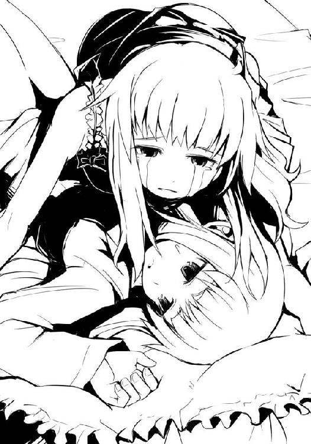

| ベン・トー 03 国産うなぎ弁当３００円 | |
| アサウラ | |
| 集英社 (2013) | |

ベン・トー ３
国産うなぎ弁当３００円
アサウラ
この本は縦書きでレイアウトされています。
また、ご覧になる機種により、表示の差が認められることがあります。
主要登場人物
佐藤 洋（さとう・よう）
烏田高校一年。体力とバカには自信がある。ゲームはセガ派。ハーフプライサー同好会所属。
槍水 仙（やりずい・せん）
烏田高校二年。ハーフプライサー同好会会長。二つ名は『氷結の魔女』。
著莪あやめ（しゃが・あやめ）
丸富大学付属高校一年。佐藤洋と同じ生年月日の従姉。イタリア人の母を持つハーフ。ゲームはセガ派。二つ名は『湖の麗人』。
白粉 花（おしろい・はな）
烏田高校一年。小説執筆が趣味な女の子。ライトノベル研究会とハーフプライサー同好会に所属。実は一部ネットでは名が知られた存在だったりする。
白梅 梅（しらうめ・うめ）
烏田高校一年。生徒会長。白粉と仲が良い。ちょっとだけバイオレンスな娘。
沢桔 梗（さわぎ・きょう）
丸富大学付属高校二年。生徒会長。興奮すると言葉につまるクセがある。常にアクセル全開。いつも双子の妹の鏡にいろいろと面倒を見てもらっている。妹と組んだ時の二つ名は『オルトロス』
沢桔 鏡（さわぎ・きょう）
丸富大学付属高校二年。副生徒会長。常時双子の姉と行動を共にしており、ブレーキ役を担っている。普段から冷静沈着であろうと心がけている。
二階堂 連（にかいどう・れん）
丸富大学二年。かつて庶民経済研究部の諜報組織『ガブリエル・ラチェット』の頭目だった男。現在は一匹の狼。
井ノ上あせび（いのうえ・あせび）
丸富大学付属高校一年。普段から猫ミミ帽子を被るような大の猫好きだが、実は酷い猫アレルギーのため触れることはおろか近づくことすらできない。かわいそうな娘。
鳥羽藤雄（とりわ・ふじゆう）
たくましいスカイダイバー。連続殺人事件の鍵を握っている。
イラスト／柴乃櫂人
需要と供給、これら二つは商売における絶対の要素である。
これら二つの要素が寄り添う販売バランスのクロスポイント......その前後に於いて必ず発生するかすかなずれ。
その僅かな領域に生きる者たちがいる。
己の資金、生活、そして誇りを懸けてカオスと化す極狭領域を狩り場とする者たち。
――人は彼らを《狼》と呼んだ。
１章 死 神
「......あれぇ？」
井ノ上あせび
０
調理場で『彼女』は一人上機嫌だった。
頭に載せた猫ミミの帽子を揺らし、古い歌を口ずさみながらふるいにかけた薄力粉に卵黄、バター、牛乳、ココアパウダーを投入していく。家庭科の実習でクッキーを作っているのだ。
クッキーは小さい頃から母親とよく一緒に作っていたので得意だったし、何より大好物の一つだ。特にお気に入りは、今作っているようなたっぷりのチョコチップが入ったクッキーだ。最初ほろ苦くも口の中でチョコが溶けた途端、ベットリと甘くなるようなのが最高だ。下品な味という人もいるが、それこそがお菓子らしくていい、と『彼女』は思う。お菓子は気取って食べるより仲の良い友だちと笑いながらボリボリ食べるのが一番だ。そこにお上品さはそんなにいらないと思う。欲しいのは冷たい牛乳くらいだろう。
調理場で『彼女』はただ一人上機嫌だった。
他の三〇名余りのクラスメイトたちが「大変だ、ドーナッツ班の油に火が！」「何か臭いぞ、ガス漏れしているんじゃないのか!?」「先生、木和田君が際立ってます！」と、もはやトラブル続きでカオスと化した家庭科室にあって、ただ一人『彼女』は頭に載せた猫ミミ帽子を揺らし、古い歌を口ずさみ、上機嫌でクッキー生地を作っていた。
彼女を上機嫌にさせる理由、それは何も大好きなクッキーを作っていることだけではない。今、オーブンの方を見てもらっている親友の著莪あやめ、その従弟が放課後に学校へやってくるというのだ。何故放課後にやってくるのかは理由が難しくて『彼女』にはよくわからなかったが、とにかくやってくるのだ。
先々週、初めて会った時はちょっと忙しかったようで、あんまり会話することはできなかった。今回はもっとゆっくりとお話しして、仲良くなれたらいいな、と『彼女』は思う。そのためクッキーもかなり多めに作ってあって、牛乳も冷蔵庫でキンキンに冷やしてあったりする。
『彼女』はボウルの中の生地にチョコチップをありったけ投入する。その生地をヘラで切るようにして混ぜ、クッキングシートを敷いた天板の上にそれをスプーンで円状に形成しつつ、並べていく。天板一杯になったところで彼女はそれをオーブンに入れようとするのだが......。
「......あれぇ？」
生地から目を離し、調理場を見渡せば何故か誰もいない。広い教室に自分ただ一人。
コンロに鍋がかけたままだったり、床に消火器が転がっていたり、包丁やまな板なども散らかったままで、どう見てもどの班も作業を終えた、という感じではない。
「みんな、トイレなのかな？」
たまたまみんな一緒にもよおしてしまったのだろう。きっと今頃トイレは大混雑に違いない、自分だけ同じタイミングでもよおさなかったのはついている。相変わらず自分は運がいい。何より得意で大好きなクッキーを授業で作る日に、著莪あやめの従弟、佐藤洋がやってくる。これもきっと彼と仲良くなれるように神様が気をつかってくれたのだ。
自分は本当、どうしてこんなに恵まれているんだろう。彼女はそう思い、さらに機嫌が良くなり、また口から歌が漏れる。
「に〜ほんじんならば〜、お〜茶漬けを食べーよぉ〜♪」
どこからか警報のようなピーピーという電子音が聞こえる。きっと誰かの携帯電話だろう。遠くから消防車のサイレンが聞こえる。きっとどこかで訓練でもやっているのだろう。廊下からジリリリリという非常ベルの音が聞こえる。きっとまた誰かがイタズラで押したのだろう。
日常には不自然な騒音をものともせずに彼女は歌い続け、オーブンの扉を開け......大爆発を巻き起こすのだった。
『彼女』は丸富大学付属高校一年、井ノ上あせび。
人の神に見放され、別種の神に魅入られた愛らしき小さな娘。
実家暮らしのせいで経験も少なく、未だスーパーで弁当を奪取したことすらない《犬》以前の存在。しかしながら人はその娘を最大級の畏怖の念をもって《死神》と呼んだ。
１
僕は椅子に座ったまま腕を伸ばし、薄暗い会議室のブラインドを開けた。夕日の朱い光が差し込んでくる。会議室に入ってから約三時間強といったところか。......長かった。
溜息を吐きつつ僕は室内――丸富大学付属高校の会議室内を見渡す。二人いた。
一人は僕の隣の席で俯いている、相変わらずのボサボサの金髪に眼鏡の組み合わせの、従姉の著莪あやめ。他には書類を捲って中身を再読している、長い黒髪の先を白いリボンで纏めた白梅梅。僕も通う烏田高校の生徒会長様だ。
丸富高校の生徒である著莪はともかく、何故他校の会議室に僕と白梅がいるのか。理由は簡単である。会議室のモニターに映し出されている、パンツ一丁で丸富高校の校舎内を走り回るNice g......え〜っと......ナイスガイの映像を見れば一目瞭然だ。そう、先々週くらいに僕、佐藤洋が丸富高校に不法侵入した時の監視カメラの映像である。
大体察しがつくかと思うのだが、この件に関して丸富高校の生徒会が正式に謝罪を要求してきたので、当事者である僕と生徒代表たる白梅がやってきた、というわけだ。無論、僕をボコボコにリンチした上での付き添いである。......しかしただ相手に要求されるがままに謝罪しに来たのか、といえば実はちょっと違う。白梅のプライドの高さと著莪がこの場で俯いている姿を考慮すれば、こちらも察しがつくかと思うのだが......。
モニターの映像が、僕が迷彩服の連中に追いかけられているものから自動で別映像に切り替わる。それは烏田高校に保管されていた映像で、先々週に著莪が不法侵入した際の姿だった。
つまり白梅は謝罪を要求されたものの、ただ一方的に謝るのではメンツが潰れるので、著莪の不法侵入を盾に強引に〝なかったこと〟にしようとしたのだった。しかしさすがに自学園内でサバゲー部という武装勢力まで投入して事態を鎮圧せんとした丸富側の生徒会はこれを素直には受け入れられなかったようで、長い討論会が始まった。......結果から言えば、行ったことは事実である以上お互いに謝罪して和解、つまり痛み分けという流れになった。
お待たせしました、と書類を手に丸富高校の生徒会長と副会長の二人の女生徒が会議室に入ってくる。彼女らが白梅とやり合った相手である。
「ただ今作成して参りましたこちらの書面に代表者同士のサインを書き込むことで、この件に関しましては双方への謝罪及び和解に至った、ということの証明とさせていただきます」
ショートの髪、けれど左右のもみ上げの部分だけ伸ばしている女生徒が白梅に書類を渡しつつ、淡々と述べた。丸富の副会長だ。先程の討論の最中もそうだったが、口調だけでなく表情さえも淡々としており、やり手の秘書といった感じの娘だ。あと一〇年もして、お堅い感じのスーツでも着ればそのイメージは一層強まることだろう。
白梅は二枚の書類を一読するとそれぞれにサイン。そして彼女の隣に腰掛けた丸富の生徒会長もまた同様にペンを走らせ、それぞれ一枚ずつ手元に残し、和解の握手で決着となった。
ぶっちゃけ、討論開始時から当事者であるはずの僕と著莪は完全に蚊帳の外だったので、何だか彼女らの握手は和解のもの、というよりも互いの激論を称え合うためのものに思えた。
「白梅さん、どうでしょう。このままお帰りになるのではなく、せっかく我が校にいらしたのですから校舎内を見学なされていっては？ 今回の件をただの問題としてではなく、今後二つの学校がより良い関係を築くことのきっかけとするためにも」
握手したまま丸富の生徒会長は、討論会の疲れからかヘトヘトといった表情で言った。ロングの髪に半ばぐらいから緩いカールをかけ、ただの学校制服なのに妙に派手な印象を辺りに振りまいている娘だ。ただ顔の作りは副会長とまったく同じである。こちらは感情が表に出やすいのか、表情が柔軟だった。確か沢桔とかいったかな？ 双子だという。
そうですね、ではお願いします、と我らの生徒会長白梅は言う。こちらは表情に一切疲れも見えず、朝、僕に膝蹴りを打ち込んできた時と少しも変わっていない。
「では、鏡、白梅さんを案内して差し上げて」
白梅が鏡という副会長に案内されるがまま会議室を出ていく。その姿が完全に消えた瞬間僕と著莪は大きな溜息を吐き出して、机に突っ伏した。ようやく終わった、長かった、と口からそんな言葉がこぼれる。丸富の生徒会長が苦笑いを漏らした。
「今後は規則に従い、礼儀にのっとった行動を心がけるようにしてください。特に裸で走るのはおやめになった方がよろしいですわよ。......ではお疲れさまでした」
彼女は映像機器の電源を落とすと、書類をまとめ会議室を出ていこうとするが途中で立ち止まり、振り返る。そして何かを躊躇するように視線を床に這わせた後、僕の顔を見てくる。
「......時に、佐藤さん。資料にあったのですが、あなたの所属するＨＰ同好会というのはどういった活動をしているサークルなのでしょう？ 名前だけではよくわからないのですが」
ＨＰ同好会とは......放課後とりあえず部室に行き、美人の先輩とテーブルゲームなどをしてダラダラと時間を潰し、スーパーマーケットで弁当が半額になる半値印証時刻が近くなると各々が近隣の店に出向き、そこで同様に半額弁当を狙って現れる強者たちと誇りを懸けて戦い、弁当を奪取するのが主な活動内容のサークルである。うん、言えない。
そもそもこんな説明をしたところで常人が理解できるのだろうか。何より自分で考えていてアレだけど何だよ〝美人の先輩とテーブルゲーム〟って。活動内容じゃないだろ、そこ。
「ぶっちゃけ半額弁当を獲って喰うだけの部活だよね、実際んとこ」
僕が言葉に詰まっているのを尻目に、著莪が顔を上げてサラっと真実を述べた。
まずい、こんな言葉では語弊が出て、僕がおかしな人だと思われてしまう！
しかし焦る僕の予想に反し、生徒会長はクスクスと笑う。
「なるほど。ありがとうございました。......またどこかでお会いしましょう、変態さん」
彼女はそう言うと踵を返して、会議室を出ていってしまう。僕は「あの、ちょっと、変態って......」と言い訳しようとするのだが、ついさっきまでモニターで流れていた自分の変態行為を否定できる材料がないことに気がつき、言葉が続かない。
ポン、と著莪が僕の肩を叩く。見やれば彼女は眉を八の字にしつつも口元は薄い笑みが浮かんでおり、やれやれ、といった表情だ。
さすがに普段軽薄な彼女といえども、従弟が変態呼ばわりされたことで僕を慰めてくれ――
「元気出せ、変態」
――ない。
●
夜の帳が降りた頃、丸富大学付属高校校舎二階にある生徒会室では二人の女生徒がカチャカチャと素早くノートＰＣのキーボードを叩いていた。数時間前まで白梅、佐藤らと対座していた生徒会長の沢桔梗と副会長の沢桔鏡だ。
二人が今行っているのは、昼間に起こったガス爆発事故についての事後処理であった。
ふぅ、と姉の梗が椅子の背もたれに体重を掛け、目頭を揉んだ。不運なことに烏田高校との会合の日に事故が起こってしまい、完全なオーバーワークだった。ようやく完成した改訂版安全マニュアルのデータを保存し、使用した書類を片づけ始める。
ふと、その手が佐藤洋のプロフィールに手が止まった。彼女の目を引いたのはその所属サークル欄である。――ＨＰ同好会。半額弁当を奪取せんがための組織だという。
「......気になりますか、姉さん」
妹が、ノートＰＣのキーボードを叩きながら呟くように尋ねた。
何も応えず、姉はその佐藤のプロフィールと要らない書類をまとめると席を立ち、窓際に設置されたシュレッダーでそれらを断裁していく。
「そもそも何故今回こんな面倒なことを？ こんなこと、書面上でのやりとりで済んだこと......いえ、そもそも今さら問題にするべきことではなかったはずです」
姉は何気なく窓の外に目をやる。すると校庭に二つの影を見つけた。著莪あやめと、恐らく佐藤洋だろう。暗い夜、二階の生徒会室からでもなお著莪の長い金髪はよく目立った。
きっとあの二人は今宵の晩餐を求めて人々が幸せを享受する場、大衆向け大規模小売店へと向かったのだろう。誇り高き《狼》と呼ばれし猛者たちが集いし場。己の持てる全てを出し切り、戦い、そして奪い合う領域......その神聖なる場へと、向かったのだろう。
「あの二人に少しばかりの興味が。あの《ガブリエル・ラチェット》と《帝王》を倒した者たちに」
姉さん、と今度は先程の窘める声とは違い、怒りを抑えた妹の声だった。
「まだそんなことを言うのですか。もうやめてください。姉さんが泣くのを見るのも、私が泣くのももう嫌です。絶対に。
......どうせまた同じことを繰り返してしまうだけです。狼だの何だのと気取っている輩に一体何を期待するというのです。姉さんだってわかっているんでしょう？」
梗は妹を見つめながら、軽く首を振る。
「それでも......それでもなお、あの場に、あの刻に、行きたいと思ってしまいますの。あなたは違います、鏡？ もし違うというのなら、時折一人でスーパーに向かい、彼らを遠巻きに見ているのは何故？ そしてガブリエル・ラチェットの遺産を頻繁に覗いている理由は？」
鏡は驚いたような顔をして、ただ俯いた。きっと知られていないと思っていたのだろう。
「何より、著莪あやめ、魔導士、そして佐藤洋......あの帝王の仕掛けた罠をかわすでなく、逃げるでなく、真っ正面から相対したその姿勢......わたくしはそれに期待してしまいますの。彼らなら、彼らの中の誰かなら、わたくしたちを......と」
かつて帝王と彼らは戦った。その最後の決戦のスーパーに、沢桔姉妹はいたのだ。気配を完全に消し、数人の一般客に紛れていた。別に深い思惑があったのではなく、普通に夕食の買い出しに来ていて、偶然出くわしたのだ。
そこで彼女らは、見た。震えるほどの彼らの戦いを、雄々しき狼たちの戦いを。
「ねぇ、鏡。憶えていらして？ この学校に、いえ、この街にやってきた時に二人で立てたプランを。あれを今こそ......ガブリエル・ラチェットの遺産を活用できる今こそ、わたくしたちは実行に移すべきではないのかしら？ ......もう......限界ですわ。もう自分を抑えきれない」
梗は腹部に両手をやり、泣くような声で言った。それでも鏡は俯いたままだ。
「......私もです、姉さん、私も......同じです。でも......」
梗は再び窓の外へ目をやる。そこにはもう佐藤も著莪もいなかった。ただ、ガラスに映った自分の顔だけ。だが、それがふいに男の顔に変わったように見えた。
その男が優しげに微笑みかけてくる。梗は震える手で己の肩を抱き、瞼を閉じた。
「もう......過去のことですわ。彼はもう、いない。何も恐れる必要なんて......」
ない、とは梗は言わなかった。
〇
会議室から脱出した僕は著莪が所属しているファミ部に遊びに行っていた。そこはいわゆるゲーム愛好倶楽部だ。前回訪れた際にはちょろっと部室の中を見ただけで、実質今回が初めてのようなものだが......まぁ、普通にゲームで遊ぶだけの、主な活動は？ と、問われると素直には答えられない全国的に見てもよくある部活である。
「佐藤、そろそろいい時間だけど、マッちゃんの店行く？」
そんな著莪の声に促されて、僕はファミ部メンツに別れを告げ、何故かガラス片が大量に散らばっている校庭を抜け、徒歩で近所の二四時間スーパーへと向かった。
その店は通常よりもずっと高い天井、広い敷地、そして店内には壁による隔たりがないため、どこか外国の大型店のような印象を訪れる者に与えていた。全体的に清潔感のある白色で統一され、商品の陳列棚同士の間もかなり余裕を持って取られているために開放感があって気持ちがいい。今はすでに〝本日の営業は終了しました〟の札とともにネットで覆われているが生花店、クリーニング、鍵屋さん、小さい書店もあって利便性が高い店である。
僕と著莪は入店すると早速店内最奥にある総菜・弁当コーナーへ向かった。弁当奪取前の下見である。他ではなかなかお目にかかれないほどの種類がある総菜コーナーで鼻を楽しませ、空腹な胃袋を刺激する。
現在午後九時一〇分。昼食に菓子パン一つだけを食べてからすでにかなりの時間が経過しており、僕の腹の虫は荒れ狂っていた。思わず総菜コーナーに並ぶ肉に目が行く。パックに詰められた鶏の足の照り焼きとかもはや犯罪的であると述べても過言ではないだろう。天井から降り注ぐ白色灯の光をてらてらと反射する、少し焦げめがついた表面の皮の部分が凄まじい誘惑をしかけてくる。そして照り焼きと並んで陳列される粗塩、粒コショウ、山椒、そしてニンニクで香ばしくワイルドに味付けされた山賊焼きレッグも負けじと僕を誘ってくる。
「あれ、珍しい......あ、そうか。もうそんな時期かぁ」
著莪が呟くように言った。彼女の視線の先にあったのは総菜コーナーに並んでいる、う巻き卵のパックである。黄色い卵の中心にうなぎの身を覗かせ、一口サイズに輪切りにされていた。その横は、売り切れていたが、値札を見るとどうやら蒲焼きのパックがあったようだ。
もう七月......そう、これらのうなぎはいわゆる季節モノだ。あと三週間とせずに土用の丑の日がやってくる。つまり、夏の訪れだ。
「うーん。おいしそうだけど、ちょっと値段がなぁ」
著莪が言うように、そのう巻きは四切れしかないのに値段は三八〇円とちょっとした弁当より高い。一応三割引きのシールは貼られているが、仮にこれが半額シールであっても量的にいってちょっと手が伸びづらい値段だ。
「気にするなよ、僕たちの狙いは弁当だろう。総菜じゃない」
そう、僕らは弁当を獲りに来たのだ。何より陳列されている総菜はまだ三割引きじゃないか。うなぎは丑の日に食べられればいい。本当は冬が一番の旬らしいが、やはりうなぎは夏を乗り切るためにも土用の丑の日に食べてこそ、である。
著莪はコクンと頷き、総菜コーナー横の弁当コーナーへと向かう。
今宵残された弁当......いや、今宵、神が用意されし勝利への階段たる弁当は四つ、マル得のり弁当、小エビたっぷりかき揚げ丼、チキンカツカレー弁当、山菜おこわ弁当だ。
「かき揚げがおいしそう」
著莪が口から言葉がこぼれるようにボソリと言い、僕は自然と頷いた。そしてハッとして僕たちは見つめ合う、というか睨み合う。
「相変わらず嫌なところで気が合うなぁ」
「あぁ、まったくだ」
しばしピリピリと視線を交差させた後、僕と著莪はお互いに踵を返し弁当コーナーから、そしてお互いから離れる。狙う弁当が別々ならば共闘もしただろうが同じ弁当となれば話は違う。たとえ双子同然に生きてきた著莪といえども......敵だ。倒すべき、敵だ。
僕は何となく弁当コーナーを見渡すことのできる乾物コーナーへと向かう。
到着して一息ついた時、こちらに向かってくる何者かの気配を感じ取る。僕はそちらは見ず、ただ日高昆布のラベルを腕組みして見続けた。気配からして、まず間違いなく狼だろう。
久しぶりだな、と、低い男の声。僕はチラリとそいつを横目で見やる。手にした空のカゴ、上下のジャージ、かなり恰幅のいい長身の男......以前別のスーパーで戦ったことのある男だ。
「帝王を倒したのもお前だと聞いている。最近、随分と名を売っているようじゃないか」
「その内の一人さ。けれど僕だけじゃない。それに......僕には売れるだけの名なんてない」
半額弁当争奪戦において強者には二つ名というものがつけられる。それは自己紹介などをしないこの場における、噂話をする上での便宜上の通称のようなものだ。だが実際に二つ名を持つことは、ある種世間に認められるだけの実力を有した証明にほかならなかった。
中には著莪の《湖の麗人》のように、容姿や行動が単に目立つ、といった理由から二つ名をつけられる奴もいる。だが、どちらにせよ僕はまだ人に噂されるほどの実力もなければ、変に目立つようなこともしていなかった。......いや、いろいろとやっているような気はするけれど、大抵誰かと一緒で僕がさして目立っていないというだけか。
「俺はお前の二つ名を耳にしているぞ。......ははぁ、そうか、まだ当の本人は聞いたことがないってわけか。よくあることだな」
「なに？ ......僕に、二つ名が？」
驚いてジャージの顔を見上げた。すると彼は横目で見返してきて、ニヤリと笑った。
「聞きたいか？」
「と、当然だ、教えてくれ」
僕の胸は高鳴った。正直先程まで弁当を手に入れるためにしこたま気合いを入れていたのが嘘のように、僕の関心は二つ名の方へと移っていた。腹の虫がうるさく空腹を訴えてくるが、今は無視した......ムシだけにね！ この鮮やかに繰り出されるおやじギャグ、今の僕のテンションを如実に表していると言っていい。
僕は組んだ腕に力を入れて、平静を装いつつ、ジャージの言葉を待った。
それはまるで自分のことを好いてくれている女の子と放課後偶然二人っきりになってしまったような心境に似ていた。そして僕もその子のことを......。お互いに相手の気持ちは友人を通して知っていて、それでどこか気まずい、けれど、決して嫌な空気ではない二人の間。どちらからともなく窓際の席に二人並んで座り、どうでもいいことを話し合う。先日のテストの結果、読んでいる漫画、テレビドラマ、犬派か猫派か、好きな食べ物、湯川専務の今......。お互いに一番重要なところには意識して触れないようにして話題を選んでいく。
〝あの佐藤くん、好き？ カレー〟という彼女の言葉。その『好き』という単語に無意味にビクッと反応してしまう僕。僕がビクッとすると、今度は彼女がそれにドキリとして二人共言葉に詰まる。慌てて僕が弁解するように違う話題を振ると、彼女もまた弁解するようにその話題に乗ってきてくれて、お互いに相手の慌てぶりが可愛くて、面白くて、何より嬉しくて......自然と笑顔になった。話が弾んだ。こんな時間が毎日続いたらどんなに幸せだろう。どんなに素晴らしいだろう。そんなふうに思いながら、喋り続けた。
空の色が青から朱に変わり、そして星々が輝く時間になった頃、自然と二人の口が閉じられる。解っていた。お互いに、言うべき言葉があるということを。
先に決心したのは彼女の方。彼女は口を開く。胸に手をやり、そして僕を真っ直ぐに見つめて。僕もまた彼女を見つめ返す。心臓が胸を突き破ってしまいそうなほど高鳴っていく。
〝佐藤くん、その、もうわかっているかもだけど......その、私ね、前から思ってたんだ......その、えっと......佐藤君は――〟
「《変態》だ」
「よし落ち着けジョニー」
「誰だジョニーって？」
「何でだよ！ 何でそんなわけのわからない二つ名がついてるんだよ！ 今の流れは絶対〝愛してる〟とか〝前からずっと好きだったんだ〟とか、そういう流れになるだろう!?」
「な、何の流れなんだ......？ ってか、おまっ、そういう趣味での変態だったのか？」
ジョニー......じゃなくて、ジャージの彼は怯えるようにして僕から数歩後ずさった。っつぅかジョニーってどこから出てきたんだ？
「待て......待ってくれ。今のは間違いだ。僕の妄想と現実がちょっとクロスしただけ......いやホントに、ちょっと、何でそんなに僕から距離を？」
「妄想とクロス？ ってことはアレか、俺を......いや、この日々のトレーニングで鍛え上げられた逞しいボディを見ながら妄想を......？ しかもジョニーって......欧米人のデカイのが好みなのか？ あぁ、もちろん図体って意味で」
「いや、あの......そんな白粉みたいなことを......」
白粉というのは、ＨＰ同好会の女の子で......その、何だ、僕をネタに筋肉刑事という痛い小説を書いている真正の変態娘である。
「オシロイ？ 化粧とかで使うやつ、か？ ......お、おい、勘弁してくれ、これ以上俺をお前の妄想の世界に組み込まないでくれ。現実と妄想の区別をしっかりつけないといずれゲーム感覚で人を殺したりするぞ、お前......」
ジョニー......じゃなくてジャージは......いやもうジョニーでいいやコイツ。ジョニーは僕から数歩離れ、そこでまだ戦闘前だというのに重心を落として、僕を警戒するような体勢を取る。顔が明らかに引きつっていた。
もう何だか弁解するのも難しそうなので、先に重要な質問をしてみることにする。
「じゃ、あの、一つだけ訊きたいんだけど......その変態って二つ名、誰から聞いた？」
「この辺りの連中はみんな知っている。《ガブリエル・ラチェット》と《帝王》を打ち倒したのは《魔導士》と《湖の麗人》、そして《変態》だと」
......明らかに僕の名前だけが大変なことになっている。何か、名付け方に悪意を感じる。
「何故......そんな名に......」
「俺も詳しくは知らん。ただ、女装趣味の変態野郎らしい、と......」
あの時の姿を知っている奴......著莪か？ いや、アイツの性格を考えるとあの格好を肯定するようなニュアンスで呼ぶはずだ。変態はないだろう。となればあせびちゃん？ いや、彼女はこんな酷いことをする娘じゃない。......あと考えられるのは......。
僕はその時、ある気配を感じてそちらに顔を向けた。このスーパーのエントランスだ。棚等によって視界は遮られているが、僕は気配だけでたった今入店してきた者が如何なる人物かを特定する。......奴だ、間違いない。
僕はジョニーに背を向けてエントランス方向へと歩き出す。通常、狼は入店後、まず弁当コーナーへ向かう。そのため僕は奴が通るであろう弁当コーナーへの最短ルート途中の菓子コーナーで足を止め、来るのを待った。果たして現れたのは予想通りの男だった。
「話がある」
その男......耳にピアスをつけた二十歳くらいの、かつてガブリエル・ラチェットと呼ばれる組織の頭目だった男は平然と頷く。どうやら向こうも僕の気配を感じ取っていたらしい。
僕たちは肩を並べ、キャラメルコーンを見やった。
「僕が何やら変態という珍妙な二つ名で呼ばれているんだが、何か知らないだろうか」
「......オレは事実からお前をそう称したまでだ」
やはりコイツか！ よくよく考えてみれば僕のあの時の姿を見て変態と呼んだのはコイツだけだったのだ。思わず殴りつけたくなる衝動が走るも、ふと、店内の空気が変わったことに気がつき、意識をそちらに向ける。弁当コーナーを見やれば、このスーパーにおいて総菜、弁当を半額にする権限を持つ女性の店員、半額神が現れていた。松葉菊、通称マっちゃんだ。
彼女は半額シールの束を持ち、まず総菜コーナーへと向かった。それに合わせるかのように店内の空気が戦闘前のピリピリとした緊張で満ちてくる。その殺気を放っている連中は察するに僕らを含めて約一〇人といったところか。弁当を奪取できるのは二人に一人以下......か。
「......いろいろ言いたいことはあるが、今はお預けだ」
辟易とした顔でピアスは肩をすかすが、すぐに真顔になる。半額神が弁当コーナーに至ったのだ。店内の空気が張り詰める。
全身をゆっくりと絞り上げられるような感覚に僕もピアスも口を閉じ、全身を戦闘体勢へと移行させる。服の上からはわからない程度に重心を落とし、足に力を入れる。話すことを優先したせいでやや位置が弁当コーナーから遠かった。初速で遅れを取り返さなくてはならない。
半額神が弁当にシールを貼り終わり、スタッフルームへと扉を開けて戻っていく。
閉まりゆく扉。その向こうで、彼女は振り返って僕とピアスを見てくる。その彼女の顔が扉で遮られた時、バタンという軽い音がして――戦いの狼煙が上がった。
空腹な獣たちが地を蹴る。靴音が店内に響き渡る一瞬の間、それだけで弁当コーナー前に三人が集う。一人はあのジョニーだ。彼は走りながら膝が床についてしまいそうなほどに重心を落とす。そして、その体格を活かし、場に到達したばかりの二人にタックルをかました。一人が吹き飛び、もう一人が身を捻ってやり過ごす。そこにジョニーは取っ手ではなく縁を握って持っていた買い物カゴを振り回し、追撃を仕掛け、相手を弁当コーナーの棚へと叩きつける。
ジョニーが動きを止めることなく弁当棚へ空いている方の手を伸ばす。無論とどめを刺すためではなく、弁当を奪取するために。
だが、この場は乱戦。他の者がそれを許しはしない。金色の影が弁当コーナーに現れる。その幻影、著莪だ。彼女が横合いから飛びついた。ジョニーの腕を指先でかろうじて上方へ弾き、空いた脇腹へ勢いを乗せた膝蹴りを放つ。
その瞬間ジョニーの巨躯が驚くほど身軽に、ヒラリとその場でターンして著莪の攻撃をかわす。慌てて蹴りの勢いを殺そうとする著莪だが、止まらない。結果、著莪の無防備な後ろをジョニーが取るような形になり、彼は著莪の頭に買い物カゴを叩きつけるようにして、被せる。そして彼女をそのまま力任せに床に引きずり落とした。
「あれが奴の得意技だ」
僕の隣を疾駆するピアスが言う。なるほど、彼のあの独特なカゴの持ち方の理由はそれか。体格を活かしてザコを弾き、弾けない奴はカゴで落とす、そういう戦法なのだろう。
著莪がジョニーに飛びかかってくれたおかげで時間が稼げた。まだ誰も弁当を手に入れていない段階で、僕とピアス、そして方々にいた残り六人の狼が弁当コーナー前に到達。今度こそ本物の乱戦が形成される。
その乱戦から床を転がるようにして、体勢を整えるために離脱する著莪を視界の隅に捉えつつ、僕とピアスは目の前に現れた名も知らぬ男の狼へと襲いかかる。
「一気に行くぞ！」
ピアスが前へ出る。スライディングするようにして全身を滑らせつつ、正面の僕らを見て構えていた敵の両足を見事に払う。無防備に宙に浮き上がった形となった男に僕は拳を放とうとするのだが、その直前にピアスが叫んだ。――押せ、と。
僕は固めていた手を開き、男の胸ぐらを掴み、そして全力で、押す。スライディングの勢いを殺さずにそのまま立ち上がったピアスも僕とともにその男を押しまくる。
すると、どうだ。二人の男の全力である。強引過ぎるほど強引に、乱戦を引き裂くようにして人混みをかき分け、一気に最前線近くまで到達する。ただ僕らの盾代わりになった男は相当ダメージを受けたのか、野太い悲鳴を上げ続ける。
その男の体が上方へ吹っ飛ぶ。押していた僕たちはつんのめるようにバランスを崩した。
「やるな、変態！」
ジョニーだ。ジョニーが盾代わりにしていた男を力任せに殴り飛ばしたのだ。
「その名で呼ぶな！」
僕は叫びつつも冷静さを失わず、弁当棚へ目をやる。あと一歩踏み込み、そして手を伸ばせば届く距離だ。だが、間にはジョニーが立ちはだかっている。
ジョニーの手にしたカゴが上方から迫る。力的にいっても、技的にいってもこれを受けるのは得策じゃない。僕は避けようとして足に力を入れるも、何故か体が動かない。
「お前!?」
僕の後ろに回り、身を低くしたピアスだった。奴が腰のベルト、そして肩に手をやって僕の動きを抑えていた。......この場は乱戦、一瞬の共闘こそすれ、味方などいないのだ。僕はそれをどこかで失念していたのかもしれない。
カゴが叩きつけられる。衝撃が走る。そしてそのまま首と背骨をへし折りかねないような凄まじい力によって僕は床に引きずり落とされた。
だがすぐさま冷たい床に手をつき、顔を上げる。するとそこにはカゴの網目越しに、ピアスがジョニーの延髄に蹴りを決めている光景があった。
そうか、と歯噛みした。奴――ピアスは初めからこれを狙っていたのだろう。僕を対ジョニー用の囮にしやがったのだ。......あの野郎！
ジョニーが倒れる。その隙に、ピアスは弁当棚へと手を伸ばす。そこに著莪が来る。だが、わずかに遅い。ピアスは著莪の方を見ようともせず、そのままかき揚げ丼を......手に取った。
弁当を奪取した者には攻撃しない、それがこの場のルール。著莪は「くそ！」と声を荒らげつつも、自分も弁当棚に手を伸ばし、チキンカツカレーと思しき弁当を手にした。
残された弁当はあと二個。慌てて立ち上がろうとするものの、頭に未だ乗っているカゴが邪魔だった。しかしカゴをヨイショと取っている暇はない。どこぞの時代劇の行者よろしく、頭にカゴを乗せたまま僕は弁当棚を見、そして手を伸ばす。狙いは山菜おこわ弁当だった。
だが、その手は横合いから来た狼に弾かれる。そして後方から別の狼にカゴを掴まれ、引っ張られる。バランスが崩れ、しまったと思う間もなく一歩、弁当棚前から離れてしまう。
次の瞬間、弁当棚から山菜おこわ弁当が姿を消す。残るはあと一つ、マル得のり弁当。
いま一度弁当に手を伸ばそうとするのだが......再びカゴを引っ張る力。慌てて振り向けば......鼻血を垂らしながら怒気を浮かべるジョニーである。彼の拳が僕の脇腹にめり込むほどの力で叩き込まれ、肺の中の空気が絞り出された。膝が床に落ちる。
その数瞬後、弁当棚から全ての半額弁当が姿を消した。
僕はカゴを頭に乗せたまま四つんばいで、喘ぐ。最後のジョニーからの一撃が効いていた。
「そんな格好してるから変態って言われるんだって」
見上げると半額弁当を手にした、著莪だった。
「お前......知っていたな。僕が変態の名をつけられかかってるの」
「うん。佐藤が偶然どこからか聞いて、思いっきり絶望する顔が見たかったんだけど......タイミング逃しちゃったみたいだね」
ジョニーからの一撃のせいで鼻頭をやや赤くする著莪は、あはは、と軽薄そうに笑った。
「でも、もう確定でしょ？ 変態の二つ名。カゴで顔を隠して四つんばいになって喘いでいる人なんてそれ以外で呼びようもないし」
......確かに、その通りだった。
２
黄昏空がＨＰ同好会の広い部室を朱に染めていた。
中央に置かれている巨大な円卓も、この辺り一帯のスーパーマーケットの位置やそこの半値印証時刻が書き込まれた壁一面の地図も、その対面の壁を完全に覆う幾層もの半額シールも、キッチン用品が大量に詰まっている棚や小型冷蔵庫も、そんな部室にいる僕たちも......何もかもが一色に染まっていた。ただ一つ、僕の目の前に山と積まれたチョコチップクッキーを除いては......。こいつだけが頑としてココアパウダーとチョコチップの黒であり続けていた。
「材料あるだけ使って焼いてきたんだよぉ、いっぱい食べてねぇ〜」
そう言って、親に一〇〇点満点の答案用紙を見せる子供のように、彼女、井ノ上あせびちゃんは満面の笑みを浮かべる。
彼女は部室にいる僕、槍水先輩、著莪、そして自分の分を紙皿に小分けしていく。女性陣の皿は普通の量なのだが、僕の分だけは発泡スチロール製のドンブリに山盛りである。
何故こんなものが僕の前にそびえ立っているのかといえば......よくわからない。というのも、昼時に著莪から電話がかかってきて、あせびちゃんがクッキーを渡したいから放課後遊びに行く、白梅に許可取っといて、といきなり言われ、この有様である。
一応理由は訊いてみたのだが、何でも昨日ガス爆発事故があったとかで、調理実習室が使用不能になり、他クラスが作る予定だったクッキー材料が宙ぶらりんになってしまっていたのでそれをあせびちゃんが引き取り、今日それを全部家で焼いてきたということらしい......。
またもう一つ気になるのは、あせびちゃんは丸富大学付属高校の夏服に、時季外れな生地の厚い縞模様のニーソ、首には薄手のマフラー、そして頭にはいつものホワホワとした猫ミミの帽子なのだが......彼女、この格好でどうやってここまでやってきたのだろう。さっき彼女らは著莪のバイクで二人乗りでやってきた、と言っていたのだが。著莪は細身のジーンズにタンクトップの私服なので特に問題はないのだろうが......まさかあせびちゃん、無駄にサービスシーン全開でここまでやってきたのだろうか......。
彼女は途中で買ってきたという牛乳を人数分の紙コップに注ぐと僕の隣に座り、めしあがれぇ、と両手を差し出して言った。
言われるがまま一枚、僕は口に運ぶ。それはいかにもあせびちゃんがその小さな手で作ったかのように小振りで、パクリと一口でいけるサイズだ。
そのクッキーは最初、ココアパウダーのほろ苦さが口の中に広がるも、すぐさま溶け出したチョコチップの甘さが全てを包む。上品に甘さ控えめというような感じではないけれど、その大雑把で素朴な味が何とも言えず家庭的で、温かい。おいしい。
「うん、うまい」
肩口ほどの髪を、先が尖るようにややワイルドにセットし、ダーク系の化粧に軽く香水の香りを漂わせた槍水先輩が言った。うん、と先輩の横に座っている著莪も頷く。
あせびちゃんは二人の評価を聞いた後、僕の顔を覗き込むようにして見る。おいしいよ、と僕が言うと彼女は「良かったぁ〜」と相変わらずの間延びした口調で、嬉しそうに笑う。
本当に純粋な笑みだった。一片の汚れもない、まるで赤子のような、そんな笑みである。
ミディアムの黒髪に、シャギーのかかった前髪が目をやや隠している可愛い娘だ。一昨日のガス爆発事故に巻き込まれた際に、手にしていたオーブンの天板がモロに鼻筋に直撃したとかで貼られている絆創膏でさえ、彼女の可愛らしさを強調するアイテムにしか思えない。同級生のはずだが、小学生といっても通用するかもしれない。
思わず抱きしめたくなるような、そんな可愛い娘だ。しかし彼女には何故か不幸が常時つきまとっているので、抱きしめたくなるのと同時に距離を置きたくもなる。
初めて会った際にもいろいろあったし、昨日の事故だって他の生徒は避難したというのに、何故かあせびちゃんだけは爆発に巻き込まれ、窓を突き破って校庭にまで吹っ飛んでいたそうだ。何かがおかしい。しかも鼻筋以外はほぼ無傷だというのがおかしさに拍車を掛ける。
もしかしたら目の前のクッキーの山も彼女から伝染した不幸の一端になるのかもしれない。
......少量なら素直に喜べるんだけどなぁ、とか思いつつ僕はクッキーの山に手を伸ばし続けていると、著莪と槍水先輩が二人でオセロを始めた。僕とあせびちゃんは特に何をするでもなく、その勝負の行方を眺めながら口を開く。
「このクッキーさ、気のせいか中の方が温かい気がするんだけど」
「さっき焼いたばっかりだからだよ〜。えっとね......あ、これとかだとまだアツアツ〜」
そう言って彼女はクッキーの山から一枚取り出してくれて、僕の口に入れてくれる。
「あ、ホントだ。......アレ？ でもそんな時間あったの？ 学校終わってすぐ来たんじゃ？」
「あっちたちの学校、来週からテストだから、今週は午前中で終わりなんだよ〜」
あぁ、そういえば僕らも再来週からテストだったような気がする。勉強しなきゃなぁ。
僕とあせびちゃんがそんなことを話しながらボリボリやっていると、オセロの方が、まぁ、案の定というか何というか、著莪が負けまくってゲームはトランプに移った。それとて数分と経たずに決着がつき、ならばと著莪は将棋の対局を持ちかける。あれならば負けない、と。
言われるがまま先輩は将棋盤と駒を用意し、早速二人の戦いが始まる。
あせびちゃんのむしろ気合いが抜けるような「がんばれぇ〜」の声援に押され、著莪は額に脂汗を浮かべながら奮闘するのだが、僕の奥歯にかなりクッキーの屑が挟まってきた頃......著莪が投了し、眼鏡を外して机に突っ伏した。
「な、なんで......なんでいつも勝てるんだよ、この魔女......」
先輩は「実力だ、麗人」と著莪を二つ名で呼びつつ将棋の駒を片づけ始める。
「僕も毎日のように挑戦しているけど、勝てたのなんて数えるぐらいだよ」
冷たい牛乳を口にしつつ僕が言う。すると円卓に突っ伏したまま著莪がガバっと顔を上げ、そして椅子を倒しつつ勢い良く立ち上がった。
「佐藤、ゲームだ」
「うん、今していたね」
「そうじゃない、ビデオゲームだよ」
「いや、どう見てもテーブルゲームだったけど？」
「アホたれ、ゲームならコイツに勝てるって言ってんの。佐藤、お前の寮からＳＳとモニター持ってこい！ バーチャだ、バーチャ２がいい！」
「......嫌だよ、メンドクサイ......」
「お従姉さんの言うことを聞きなさい」
「あ、じゃこうしよう。先輩と一緒に僕の寮に来てもらってそこで――」
「アタシはいいけど、あんなエロ本がぶちまけてある部屋にこの二人連れていくつもり？」
「......公衆の面前でそういうことを口にするのはやめていただきたい......」
槍水先輩は将棋盤を棚に片づけると、その上にポンっと軽くジャンプするようにして座り、足を組む。彼女が普段から身につけている黒いストッキング、そして制服と合わせるにはややハードなブーツが目を引く。......丁度椅子に座っている僕の目線の高さでもある。
先輩は顎に手をやり、何かを考えるような顔で僕を見てくる。
「エロ本......？ あぁいう本は未成年は買えないんじゃないのか？ どうして佐藤の寮に？」
「あーはいはい。清純な乙女は向こうでお花でも摘んでなさい」
シッシッと犬でも追い払うように手を振りながら著莪が素っ気なく言うと、先輩は見るからにムッとする。しかしそんな先輩を気にする様子もなく、著莪はさっさとＳＳを持ってこいと僕に執拗に命令してくる。しばらく断っていると、彼女は「んー」と何かを考えるようにして天井を見上げ、頭をポリポリと掻いた。......彼女がよからぬことを考える時の仕草である。普段ならこういう時はジャンケンを持ち出してくるが、アレは基本的に二人の時だけだった。
数秒の後、著莪は何か思いついたのか、視線を天井から槍水先輩に移すとニヤリと笑う。そしてスタスタと椅子に座る僕のところにまでやってくると、後ろから抱きしめるようにそっと腕を回し、耳元に唇を寄せてくる。
「ねぇ、佐藤。いい加減持ってこないと、暇に任せて昔のこととか思い出しちゃうかもよ？」
どこか湿っぽい声で著莪は囁く。
「......昔のこと？」
「いっぱいあるじゃん、アンタの二つ名ピッタリのエピソードが......さ」
二つ名？ と、槍水先輩が反応して、さっきまでのムッとした表情がパッと明るくなる。
「なんだ、佐藤。お前いつから二つ名を？ 何故教えない、水くさいじゃないか」
「ぼ、僕に二つ名なんてついてませんよ......えぇ、いやホントに」
やっぱり言えないよねぇ、と何やら意味深に著莪がクスクスと笑うと、また槍水先輩は少しムッとする。どこか拗ねているようにさえ、見えた。
「......麗人が来ると、いつもお前は私をのけ者にする」
いじめっ子にはいじめっ子特有のセンスのようなものがあると僕は思う。それは相手の弱い所をピンポイントで見抜き、そこを罪悪感なく楽しみながら弄れる、というもの。この考察が正しいかどうかは定かではないが、少なくとも著莪にはその能力が備わっているのは間違いなかった。......《変態》の仮の二つ名を知られたくない僕と、そして人から疎外されるのを妙に嫌う槍水先輩との、その二つの弱みを同時に突いてきやがった。
「そうだなぁ。例えばさ......ほら、小学校の修学旅行のちょっと前ぐらいかな。佐藤の家に泊まった時に、ベッドで一緒に寝ていたアタシの――」
「うぉおおおおおおおおおおおおおおおおおおおおおおおおおおおお!?」
その瞬間僕の脳裏に数年前の記憶がフラッシュバックした。あの著莪がウチに泊まりに来た時の、消してしまいたい若気の至りそのものの後悔の記憶が！
僕は著莪の腕を振りほどいて部室を走り出る。いってらっしゃ〜い、という著莪の嬉々とした声を背にし、僕は部室棟を駆け下り、そしてそのまま校庭に出、男子寮を目指す。
まずい、まずすぎる。いくら小学生の頃の話とはいえ、あの二つ名がつきかかっている今の状態で槍水先輩に聞かれるのはまずすぎる。
僕は夕焼け空の下、寮の自室へ駆け込むとＳＳ、ソフト、コード類、そしてバーチャスティックを二基をまとめてスポーツバッグに詰め込む。モニターはさすがに他の物とゴッチャにして入れるのは抵抗があるため、ベッド用のシーツを被せて手で持っていくことにした。
恐ろしく重くなったカバンを担ぎ上げ、僕はモニターを大事に抱えて寮を出る。
七月も頭ということで、結構蒸し暑い。今年は冷夏だとニュースで見た気がするけれど、それでも暑い。嘘つきだ。まったく、好ましい天気予報と温泉旅館備え付けのリンスインシャンプーほど信用できないものはない。
僕は汗だくになりながら部室へ戻り、あせびちゃんの「おかえり〜」の声すらそこそこにモニター、ＳＳ、バーチャスティックのセッティングを行う。
槍水先輩が熱心に説明書を読んだ後、プレイは開始される。
席に戻った僕の汗を、あせびちゃんがかわいらしいハンカチで拭いてくれる。その厚意に甘えていると、著莪のあはっはっはっという笑い声。そちらを見やると先輩がバーチャスティックから手を離し、僕の方を睨んでくる。
「......佐藤、このゲーム、おかしいぞ。私の攻撃が一発も当たらない」
モニターを見てみると、まぁ、当然のように著莪の圧勝だったようで......。
「先輩、言うのが少し遅れましたけど、そのソフトで著莪に勝つのは正直無理かと。当時全国大会に出場していた親父と対等に戦える腕なんで......」
バーチャ２で著莪の上を行くプレイヤーを僕は数えるほどしか知らない。まぁ、僕らがバーチャ２を満足にプレイできるような年齢になった頃にはバーチャ２はすでに旧作の部類に入っていて、現役のプレイヤーが少なかったせいもあるが、それでも著莪の腕前は並ではない。
「あ〜、気持ちいい。さっきまで散々人をコケにしていた奴を倒しちゃうのって。まぁ一〇年早かったね、魔女さん」
クスクスと、あえて槍水先輩が苛つくように笑ってみせて、著莪は席を立つ。
「あっちもやる〜」
そう言ってその席に今度はあせびちゃんが座り、先輩は苛ついた顔のまま無言でプレイを始めるのだが......あっという間に「やった〜」と、かわいらしい声が上がった。気のせいか、あせびちゃんはそのにこやかな表情とは裏腹に、開始と同時に一切の無駄なく先輩をたたみかけ、あっという間に勝利をかっ攫ったように見えたのだが......。
「著莪、説明を」
「アイツさ、ゲームショップでバイトしてるの知っているよね？ 以前見に行ったらレジやっているか、客と一緒にゲームしているかのどっちかで、相当な腕前になっているんだよ。客寄せになるらしいから店長とかはむしろ勧めているらしいんだけど。専門はカセット時代のレトロゲーム、でもＳＳも相当やり込んでいるから、かなり強いよ」
佐藤！ と先輩が声を荒らげて僕を見、あせびちゃんの席を指差す。......どうやら次は僕に相手をしろと言っているらしい。
......どうしたものか......。子供の頃から著莪とやっているわけだから、僕とて相当強い部類なのだが......。しかし手加減するのは本気で挑んでくる相手に対して失礼だし......何かハンデでも？ いや、先輩はきっとそれを望まないだろう。彼女は何をする時でも本気の人だ。
僕は仕方なく普通にプレイを開始し......普通に勝った。
恐る恐る横に座る槍水先輩を見ると、彼女は無表情にすっと立ち上がる。さっき二人の女性に負けた時は明らかに苛ついていたのに、僕の時だけ何故こんなに平然としているのか......そのギャップが何か、怖い。
「佐藤、質問なんだが、このゲーム機とソフト、いくらくらいする？」
「えっと......中古市場なら合わせて四〇〇〇円するかしないくらいですかね。でも何故？」
先輩は、そうか、と呟く。
「井ノ上だったか。ちょっと窓を開けてくれないか。空気を入れ換えよう」
は〜い、とあせびちゃんは素直に窓に駆け寄り開け放つのだが......。
あれぇ......おかしいな、気のせいか、三カ月ぐらい前にこれと同じ光景を僕は見たことがあるような気が......。デジャヴってやつだな、きっと。うん、そうに違いない。
先輩はＳＳに手を伸ばし、電源を切ると、コード類を抜き、そっと本体を持ち上げた。
「あの、先輩？」
「佐藤、すまん。手が滑っている」
「げ、現在進行形!?」
彼女はそのまま大きく振りかぶり、ＳＳを......ぶん投げた。
「僕のサタ――――――――――――――――――――ン!?」
僕は悲鳴を上げつつ、床を蹴り、窓枠に足を掛け、そして――飛んだ。
翼
佐藤 洋
翼を持つ鳥は不自由です。
空を飛ぶこと、人はまるでそれがそのまま自由であるかのように言いますが、僕はそうは思いません。鳥のようになりたい、なんて僕は思いません。
何故なら鳥は飛ぶために大切なものを捨てているように思うのです。
体を羽毛で覆い、翼をはためかせなければ鳥は飛ぶことができません。
自分が子供の頃に手を引いて歩いてくれた両親、転んだ僕に手を差しのべてくれた友人......彼らと手を繋げないなんて、彼らを抱きしめることができないなんて、彼らの温かさを肌で感じられないなんて......なんて鳥は不自由なのだろう、とそう思うのです。
鳥は飛ぶために他のものを捨てたのです。それは酷く辛いことだと、とてもとても可哀想なことだと、僕には思えるのです。
僕は空など飛べない人間であって良かったと思っています。
不自由な人間であって良かったと思っています。
もし今、自分が鳥だったら......
もし今、自分の両手が翼だったら......
そう考えると恐ろしくてたまらないのです。......もし僕が鳥だったなら、この両の肩から繋がるものが翼であったのなら、僕はきっと大切なものを失っていたと思うのです。
そう、ＳＳです。
手でしっかりと掴み、腕で抱き、そして肌でその熱を感じられる......こんなに幸せなことはない、そう思うのです。
――たとえ、落下していく中であったとしても。
あぁ、僕の体が加速していく。まるで飛んでいるかのよう。自由落下という名の不自由な加速。飛ぶということは不自由を手にすることだ。僕は改めてそう思う。
僕は部室が五階にあったことを思い出す。その瞬間、物理で習った方程式が頭を過った。五階、仮に一五メートルとし、標準重力加速度を秒速約九・八メートルとすれば......僕は地上まで約一・七秒で到達し、接地時には時速六一キロを越えているわけだ。なるほど、軽く車にはねとばされるようなものだな。
大地が迫る中、僕は安心する。
――よし、物理のテストは大丈夫そうだ、と。
●
白粉花は、部室棟二階にある『ライトノベル研究部』、通称ラノ研の部室で一人、窓辺に置いたノートＰＣを前に頭を抱えていた。
ＨＰ同好会の部室の半分以下という狭い部室のラノ研は、普段ならば男女一〇人がすし詰め状態でいるのが当たり前の部だが、今日は偶然にも自分一人だけだ。
白粉は、いつもならば蒸し風呂のような空気が嫌であまりラノ研部室には長居せず、気心の知れたメンバーのいるＨＰ同好会の方に身を寄せている。また、書き手と読み手という差があるのか、自分と似ているようでどこか違うラノ研メンバーに囲まれていると、どこか居心地の悪さを感じてしまうのだった。それなら何もかも違う、けれど普通に自分を受け入れてくれるＨＰ同好会の方が何倍もいい......いや、最高だった。同じ趣味という群れる理由もないのだから、彼らは白粉花という自分自身を真っ正面から受け入れてくれている、そんな気がするのだ。それが、嬉しかった。
何より白粉初の長編シリーズである、現在ネットで大好評連載中、ハードボイルド・マッスル・アクション『筋肉刑事』の主人公の一人、サイトウヒロシ刑事のモデルである佐藤洋がいるのが良かった。
白粉は一旦ノートＰＣをスリープモードにする。暗くなったモニターに自分の顔が映り込む。眼鏡をかけた小柄で少し地味めな娘、それが彼女だった。前髪をヘアピンで留め、後ろ髪を親友の白梅から貰ったリボンで纏めていた。
元気のない顔。そう思う。ネタが出てこないのだ。筋肉刑事シリーズもすでに一〇を超える本数に至り、ネタが出切っていた。こういう時はいつも佐藤洋を観察していれば突破口が見いだせるのだけれど......今日に限っては部室に彼の従姉である著莪あやめが来ているのでＨＰ同好会に行くのが躊躇われた。また、セクハラされるのが怖かった。
白粉は溜息を吐き、頬杖をついて夕暮れの空を見やった。都会とは言えないが決して田舎とも言えない、そんな町に夕陽が沈もうとしている。この夕日が沈んでもなお、ネタが出てこないようなら今日は帰って寝てしまおう......白粉がそう思った時だった。
「......え？」
窓の外を、人が、飛んでいた。というか落下していった。
そいつは夕日で朱に染まりながら、うっすら窓越しに「トリワフジユー」という謎の呪文とともに、消えていった。目の錯覚か、佐藤洋に似ていた気がする。
約一秒弱後、階下からドシャッ！ という妙な音が聞こえた。
あまりの出来事に呆然と窓を眺めたままだった白粉だが、彼女の手はそれ自体が生き物かのようにスッとノートＰＣのスリープモードを解除。ワープロソフトを起動させる。
カタカタとキーボードが叩かれ、文字が書き込まれる。
『筋肉刑事11』アウトライン：夏のうだるような暑さの中、連続殺人事件の捜査を行っていたある日のサイトウヒロシ刑事。唐突に彼の直腸――
「おっと......」
――彼の直上から一人のマッチョが降ってきた。その鳥羽藤雄と名乗るマッチョは何故空から降ってきたのか、そのマッチョは一体何者なのか、そして繰り返される不可思議な殺人事件の真相とは......。サイトウヒロシの相棒にして先輩、通称筋肉刑事が鳥羽の正体を突き止めた時、サウナに行っていたサイトウは謎の覆面集団に全裸のまま拉致されてしまう！ 謎が謎を呼び、事件は誰もが予想だにしなかった展開に！――
大まかなあらすじを描いた白粉は最後にカッコをつけて一文を付け足した。
【濡れ場：街中で、大衆を前に集団で（サイトウ）。ラストはスカイダイビングしながらの時速二〇〇キロでの鳥羽とのカラミ（サイトウ）】
――これはいける。白粉は一人確信した。
●
空には弓張月が浮かんでいた。
沢桔姉妹は自らの胸の内から湧き出る欲望を、この夜、ついに解放することに決めた。またあの凄まじい恐怖を、絶望を、孤独を味わうかもしれない。けれど、今だけ、この計画が実行されている間だけは......またあの至高の味を楽しめるはずだ。
姉の沢桔梗が毛先に掛けた緩いカールを指で軽く弾き、口を開く。
「さぁ行きますわよ、鏡。長い長い箸休めの時間は終わりですわ」
妹、沢桔鏡が短く「はい」と頷く。二人の顔はまったく同じだが、余裕たっぷりの姉と違って妹の感情を抑えた表情は見る者に別人を思わせた。
確かな足音を立てて、堂々たる態度で二人は一軒のスーパーマーケットに向かう。
「笑顔が集う場、スーパーマーケット。......今宵はわたくしたちの笑顔のために存在する場」
二人はただのスーパーというにはいささか大型な店の自動ドアを抜ける。通常の店ならば自動ドアの近くにカゴの山があるのだがこの店にはない。エントランス付近には書店やクリーニング店などの店が並んでおり、実際のスーパーの役割をしている部分はもう少し奥である。
彼女らはゆっくりと歩みながら店内全域へ気を配る。広い店だが、そんなもの幼少期から鍛え上げてきた二人にとって何の問題でもない。店内にいる客数は一五前後、そのうち半額弁当を目的に集まりし空腹な獣は一〇を数えない。九といったところ。その中に今宵彼女らが狙いを定めている相手がいるのを気配だけで確信した。
良い気合いを放っている。無論半値印証時刻前であるが故に抑え込んでこそいるが、それでもかすかに溢れ出る食欲に根ざした闘気......それを彼女らは感じ取っていた。
姉妹は行く先を迷うこともなく、無言のままでレジ横に荘厳にそびえるカゴ山からそれぞれが一つずつ手に取る。足を止めることなく、歩調を変えることなく、さも簡単に手に取ってみせた。その滑らかな一連の動きには優雅という言葉がよく似合った。
ただのカゴとはいえ深さがある、それをギッチリと隙間なく連なった山から抵抗を受けずに一つだけ抜き取るのは極めて高度な技術である。これだけで勘の良い者ならば彼女らをただの買い物客ではないと気づくだろう。しかし、今、彼女らは店内の誰からも注目を受けていない。時折チラリと視線を感じるがすぐさまそれは消える。単に視界に入ったので見た、というだけの視線である。悪意も敵意も警戒も、そこにはない。誰も彼女らを半額弁当を求めし者だとは気づいていない。
彼女らは午後八時を回ってもなお鮮やかな彩りを見せる青果コーナーを通り抜け、精肉コーナーへ。続けて鮮魚、刺身コーナー......そして、総菜・弁当コーナーへ向かった。
彼女らは総菜コーナー前を通り過ぎ、弁当コーナーに到着する。しかし到着といっても足は止めず、あくまで自然に、三割引きとなっている弁当を横目で眺めながら歩み去る。
あらまぁ、と姉は口にして思わずにんまり顔になってしまう。表情を抑えようとしてもにじみ出てしまうほどの笑みだった。当然といえなくもない。彼女の視線の先にある陳列棚には噂に聞く『ザンギ弁当』が鎮座しているのだ。実際に口にしたことこそないが、それが半値印証時刻にまで残るのならば確実に月桂冠になると言われるほどの品である。それがこのタイミングで拝めるなど、もはや天が自分たちを祝福しているかのようだ。
彼女らはそのまま店内の外周を回り続け、適当なところで店内中央に入り込み、弁当コーナーを見渡せる洗剤コーナーの前でようやく足を止めた。二人は目の前の洗剤が陳列される棚の隙間から一列向こうの通路を見る。そこにはかつてガブリエル・ラチェットの中核にして頭目を務めていた男、丸富大学経済学部経済学科二年、二階堂連の姿があった。
解体された今となってもなおガブリエル・ラチェットの全容は明らかにはされていない。誰がメンバーで、どれほどの実力を有していたのか......謎は多い。しかし確かなのはこの二階堂が頭目を務め、全てを統括していたということである。彼個人の能力はさして脅威とはいえないが、ガブリエル・ラチェットの組織としての情報収集及び解析能力、それは凄まじいものがあった。
当然それらの処理された情報はまとめ役である二階堂の目に触れているはず......果たして彼らのデータバンクに自分たちが記録されているのか、あるとすればそれは如何ほどのものか、それに二人はいささかの恐怖心とともに関心を寄せていた。
バタン、と音を立ててスタッフルームから女性の半額神が姿を現し、軽く一礼。エプロンのポケットから半額シールの束を取り出すと軽い足取りで総菜のパックにシールを貼っていく。
一枚貼られるごとに一段階ずつ店内の空気が張っていく。彼女らは晒している両の腕、その肌の表面にピリピリとした刺激が走るのを楽しんだ。久しぶりの争奪戦に二人の鼓動は高鳴る。先程とは違う喜びに、思わず口がにやけてしまうのを必死に堪える。まだ、気持ちは内側にとどめておかなくてはいけない。
半額神が弁当コーナーに至る。その瞬間、緊張に、戦闘前の興奮に、晩餐を前にした空腹に、店内の狼たちが声なき咆哮を上げる。それに、沢桔梗は両手で自らを抱いた。
帰ってきた。それを文字通り肌で感じた。興奮に、喜びに、体が震えた。
「姉さん、大丈夫ですか？」
「えぇ......問題ないですわ。ただの武者震い」
鏡は恐怖から震えているのではないか、と心配してくれていた。しかし梗の心にそんなものはなかった。これから戦い、奪取する弁当のことで頭はいっぱいだった。
半額神が弁当全てに半額シールを貼り終えてスタッフルームに戻っていく。
「さぁ、夕餉の時間ですわ」
スタッフルームの扉が閉まる。バタンと音。今、狼たちの狩りの時間が始まった。
〇
目を覚ますと、そこは何度か世話になった烏田高校近くの病院ではなく、どういうわけか隣町の病院のベッドの上だった。
寝ている間に精密検査が行われたらしく、僕の怪我は数カ所の浅い裂傷と上半身への打撲だけだそうだ。骨折どころかヒビも入っておらず、五階から落ちたのに......と呟きながら医者が首を捻っていた。
一応、部室棟の下には柵代わりに背の低い木々が植えてあり、その上に落ちたのが幸いしたのだろう。反射的に受け身も取ったので、この程度の軽傷で済んだのだと思う。なおＳＳとゲームディスクはほぼ無傷だったのは幸運だった。
実際にはもう帰っていいそうなのだが、念のため一晩だけ入院することになった。空いていたということで五階の個室を割り当ててくれたのは嬉しい気遣いだった。
「......で、まず訊きたいんだが、アレは何だ？」
検査を終え、その個室の扉を開けるなり、僕は自称保護者として一緒に泊まる著莪に尋ねた。今は時刻が午後八時を回っているためカーテンが閉まっているが、それ以外には特に特筆すべきことのない普通の個室。椅子、棚、小型のテレビ、そしてベッド。あとは泊まる著莪のための薄い毛布と布団が敷かれているだけの部屋......なのだが......ベッドの掛け布団から黒、白、茶の三色の毛並みの何かがはみ出ていた。
「佐藤の検査が終わったら一緒に『桃鉄』やるんだって言っていたんだけど、待ちきれなくて寝ちゃったのかな」
著莪は部屋に入ると躊躇することなく布団の中に両手を突っこみ、その毛むくじゃらをベッドから引きずり出す。それでようやくその物体があせびちゃんだとわかった。顔だけ出せるようになっている着ぐるみを着て、胸にＳＦＣを抱いているのだ。
著莪にＳＦＣを取られ、捕獲された宇宙人のようにバンザイのカタチで釣るされてもなお、あせびちゃんは瞼を閉じたままだった。耳を澄ますと穏やかな寝息が聞こえる。
「なに、これ？」
猫の着ぐるみを着たあせびちゃんだということはわかるのだが......何というか、ダボダボで、メタボの三毛猫仕様というか何というか......尻尾も太く、アライグマか狸の着ぐるみを流用したかのようなデザインである。
「こいつが普段から使ってるパジャマだって」
「いろいろと言いたいことはあるのだけれど......まず、夏だぞ、今」
いやいや、わかる。わかっている。確かにあせびちゃんは普段から一人だけ季節外れな格好をしていた......確かあれは風邪が数カ月治らないとかなんとかで......。
「基本的にあせびはいつも厚着だからねぇ。寝ると体温も下がるし、これぐらい必要なんじゃない？ コイツ、少しでも体冷やすと風邪が悪化するみたいだから」
著莪は言うなり、あせびちゃんをまるでヌイグルミか何かのように一度抱き上げると、そっとベッドの上にうつ伏せに寝かせる。するとあせびちゃんはモゾモゾと動き、芋虫が這うように身をくねらせて掛け布団の下にゆっくりと潜り込んでいった。その様子は可愛らしくもあり、どこか不気味でもあり......。
「面会時間はとっくに終わっているけど、何で僕の親族でもない彼女がいられるの？ それもパジャマとＳＦＣの用意まで......」
「コイツのオヤジさんがここの院長なんだって。アンタが寝ている時に頭下げにも来たんだよ？ 娘が迷惑をかけますって。あ、そうそう、治療費はタダでいいってさ」
「待て。ということは何か。僕が五階から落ちたのはあせびちゃんのせいだと......」
著莪は布団からはみ出ていた太い尻尾を掴んで、あせびちゃんをズルズルと引きずり出す。
「少なくともコイツの両親はそう認識しているみたいだね。っつぅか両親はあせびの不運を理解しているのに当の本人がそれを理解していないのが切な過ぎるよ」
苦笑いする著莪が手を離すと、あせびちゃんはまたモゾモゾと布団の中に潜り込んでいった。うぅん、とかわいらしい声が聞こえてきたのでさすがに目を覚ましたのかもしれない。
「......うん、もういいや。何かまじめに考えたら負けな気がしてきた」
そうだね、と著莪は今度は普通に笑う。
「ねぇ佐藤、お腹も減ったしマっちゃんのスーパーにでも行かない？ どうせ念のための入院なんだし、受付の人に言えば何とかなると思うんだ」
確かに結構お腹が空いていた。僕らは一応布団越しにあせびちゃんに一言言って、病院を出る。著莪の予想通り受付は事情を知っていて簡単に許可してくれた。
著莪のバイクに跨る。最近あせびちゃんとの二人乗りが多くなったとかでヘルメットが二つ用意されていた。
著莪の腰に腕を回し、彼女の背に顔を押しつけるようにして安定するポジションを確保する。バイクが走り出す。病院の駐車場を抜けて車道に出ると、著莪は速度を上げた。
初夏の夜、バイクで切る風は心地良かった。
「街中行くと信号と車が多くてウザイから、少し遠回りするよ。時間あるしね」
著莪はそう言い、道幅の広いバイパスに出、さらに速度を上げる。
別に遠回りする云々に異論はないのだけれど、速度を上げるのは勘弁してほしかった。もちろん加速の気持ち良さや――制服が破れたので著莪から借りた――シャツが千切れそうなほどの風圧、エンジンの鼓動、そういった楽しさはわかるのだけれど......如何せん、恐怖心も速度に比例して強くなる。グリップを握る著莪はいいのだろうが、僕はどうもバイクに身を固定している感じがせず、コーナーでは思わず悲鳴が上がってしまう。それというのも著莪の腰回りは細くてちょっと頼りないのだ。僕の半身を固定するには華奢過ぎる。
あと著莪の運転もどうにかしてもらいたい。どうも僕が乗っているせいでわざと乱暴に運転しているような気がする。時折本気でヤバイんじゃないかって思う時もあり、そういう場合は著莪に回した腕にかなりの力を入れてしまう。その時は著莪も苦しいんじゃないかと思うのだけれど、僕のそんな挙動や悲鳴を聞くと、彼女は楽しそうに笑うのだ。
彼女の背にしがみついていると、僕はあることに気がついた。そういえば、著莪の奴......。
十数分ほどの短いツーリングの後、スーパーの駐車場に停車。僕はバイクから降りるなり、ヘルメットを脱いで頭をブルブルと振る著莪に訊いた。
「なぁ、最近お前、あせびちゃんと一緒にいるみたいだけど......大丈夫なの？ その......例のに巻き込まれたりとか」
ヘルメットを手にした著莪は一瞬キョトンとして眼鏡越しに僕を見てくるも、すぐにその顔をニヤリと笑みで和らげた。
「なに、心配してくれているの？」
単に素朴な疑問、と僕が答えると著莪はわざとらしく唇を尖らせる。
「嘘でもイエスって言えばキスの一つくらいしてやったのに」
そんなことを言われ、多分、僕は困った顔をしていたのだろう。著莪は少し笑った。彼女は笑顔のまま財布を取り出すと中から何やら取り出す......お守りだ。
「近所の神社でゲットしてきたんだ。気休めに、と思ったんだけどこれを持っていると不思議とあせびのアレに巻き込まれないんだよね。いやー、霊的なものの存在を信じたくなるよ、マジで。......たださ......」
そう言って著莪は神妙な顔をし、お守りを僕の目前に掲げる。ん？ と僕はあることに気がついてそのお守りの表面を凝視した。何か、黒ずんでる？
「......凄いだろ。これさ、汚れじゃなくてお守り自体が焦げていってるんだよね、ゆっくりと。どうもあせびとくっついていると焦げ始めるみたいでさ......」
......あの娘は神仏の力をも凌駕しているというのか。二つ名の《死神》という名を初めて聞いた時は随分と大仰だと思ったが、あながちそうではないのかもしれない。
「まぁ、とりあえずはこれで大丈夫かな、アタシは。......アンタはわからないけど」
......そういえば、そうだ。僕は持っていない。
よくよく考えてみれば、今日の部室での出来事もあせびちゃんにクッキーを食べさせてもらった直後著莪にＳＳを持ってこいと悔恨の記憶を盾に命じられ、あせびちゃんに汗を拭いてもらった直後にパラシュートなしのスカイダイビングである。直接肌を接触させたわけじゃないのにこの状況だ。......大丈夫だろうか。二週間前に、一瞬だけ手を繋いだ直後の争奪戦では帝王と初めて接触し、凄まじい攻撃を喰らっている......。
僕は不安だ、と正直に胸の内を著莪に告げる。
「まぁ本気でヤバそうだったらアタシのを貸してあげるよ。もちろん見返りは要求するけど」
著莪にポンポンと頭を軽く叩かれつつ、僕は一つ疑問を口にした。何故そこまでしてあせびちゃんと関係を持つのか、と。まぁ、コイツの性格から何となく想像はつくのだけれど。
「向こうがじゃれてくるってのもあるんだけど、ゲームセンスが良いっていうか、趣味が合うっていうのかな。お前も合うよ、絶対。性格はいいしね」
「......悪いのは運だけか」
そうそう、と著莪は笑う。たとえ相手が誰であろうと、どんな奴であろうと、彼女の接する態度は変わらない。その分け隔てのなさが、僕は好きだった。
透明な自動ドアが開き、新鮮な、と形容したくなるひんやり・サッパリとした空気が溢れ出す。相変わらずここのスーパーは広くて、入店するだけで気持ちが爽やかになった。
アレ？ と僕と著莪は同時に声を漏らす。著莪は慌てて携帯を取り出して時刻を確認。僕もそれを覗き込んでみるが、まだ八時半をやや回ったぐらい。この店舗の弁当を半額にする時刻、半値印証時刻にはまだ四〇分以上あるはずだった。だが、店内の荒れ狂った空気、そして何より視線の先で繰り広げられる激しい戦いが僕らの考えを否定する。
もしや、という直感とともに僕と著莪には凄まじい悪寒が走る。全身の毛が逆立つ感覚。膝が震えそうになるも、そんな間はなかった。先に眼鏡を外しつつ著莪が飛び出す。僕も続く。
僕らが入店した段階で弁当コーナーにて無数の狼たちが乱戦を形勢していたのだ。出遅れたどころではなかった。
何故だ、何故だ、と頭の中で疑問が悲鳴のように叫ばれる。あせびちゃんがどうの、というのではなく、何故半値印証時刻がズレ込んだのか、それを必死に考えていた。
いくつかの予想はできた。まずは季節。夏と冬で半値印証時刻が変わる場合がある。店舗によって方針が違うため一概には言えないが、夏は遅く、冬は早くなる傾向がある。
だが、今僕らの目の前の状況はその逆だ。夏場は傷みやすいからという理由で刺身、寿司などの生物だけ半額になる場合があるが、どう見ても今は弁当が半額になっている。
あと考えられるのは弁当、総菜の数が極端に多かったり少なかったりした場合である。
多かった場合は何とか全部捌こうとして、少なかった場合はさっさと仕事を終えてしまいたいとして、半値印証時刻を早めてしまう場合あるのだという。
しかし何故だ。今日が需要と供給が激しく変動する土日祝日ならまだこの状況を受け入れられただろう。だが今日は平日である。当然弁当への需要はある程度の予測がつくため、それに対応するだけの適切な数を店は用意しているはずだ。
「そうか、テストか！」
著莪が言った。僕もその言葉を一瞬で理解した。このスーパーは駅にも比較的近いが、それ以上に大学と、そのキャンパス内にある著莪の高校に近いのだ。そんな立地条件である以上学生が客層の多くを占めるのは間違いなく、彼らの需要に店は大きく左右される。特にあそこの大学は高校も含め、非常に偏差値が高い有名校であるから、地方より出てきた一人暮らしの学生がかなり多いはずだ。
受験を控えている者や普段の成績がヤバめな連中は必死にテスト勉強しているのだろうし、普段自炊をしている人でもこういう時は外食や出来合のものに頼る場合が多くなる。結果、この時刻まで残った弁当は極めて少なかった......というわけなのか？
僕と著莪はレジ横を通り抜け、さらに駆ける。その時正面からカゴを手にした二人の女が視界に入る。丸富高校の制服を着た二人が僕らとは逆にレジに向かって歩いてくる。
すれ違いざま、かすかに「あら、もっと早くに来てくだされば......残念」という声が聞こえた。どこかで聞いた声だとは思ったけれどそれが誰だかを確認する余裕は僕にはなかった。
僕らは必死で駆ける。だが、そうこうしているうちに乱戦の中から弁当を手にした者たちが二人、姿を現してしまった。もし弁当が極少数しか残っていなかったのならこれで終わってもおかしくないのだが......乱戦はなおも激しく、在り続けていた。
弁当がまだある？ ならば普段とそんなに変わりは......総菜の方が少なかったのか？
そう思った時、僕はまさかと自分自身が驚愕する予想に辿り着く。
この店の弁当、総菜コーナーを担当する半額神、松葉菊は丸富大学の卒業生だ。当然内部の事情には詳しい......そんな彼女がテスト期間による需要の変化を予測できなかったのだろうか。いいやそんなはずはない。では何故半値印証時刻は早くなった？ 簡単だ。
彼女の、優しさである。
この店の半値印証時刻は九時一五分頃だが、それは夕食にしては少し遅い。勉強で疲れた学生のため、夕食にほど良い時間から一割引き、二割引き......と値下げを始めたのではないだろうか。彼女の優しげな顔を思い出すと、あながち有り得ないことではないような気がする。いや、実際それしか僕には考えられなかった。
そんな作り手が、そんな売り手がいるスーパー......。今の僕と著莪にとってはいささか迷惑だが、それでも嬉しいと感じる。人の優しさは、どんなものであっても胸に染みる。特に無言の、それこそ今回のような見返りなんて一切求めない優しさは、痛いほどに。
この店の弁当を喰いたい。そう思う。まぁ僕はまだテスト期間に入っていないわけだけど。
僕は床を蹴る足にさらに力を入れ著莪を抜く。
敵の数は男二人に女一人。僕らを含めても五名。他には激しい戦いがあったのか、幾人かがすでに弁当コーナー付近に倒れており、そこにはジョニーやピアスの姿もあった。
僕は意識を弁当に集中する。乱戦の密度も薄く、殴り合う男たち越しに弁当コーナーの棚を見る。残されている弁当はラスト一個、内容はわからない。
僕は立ち上がろうとしていた女の側頭部に蹴りを打ち込み、そのまま足の勢いに任せて身を捻らせ、続けざまに殴り合っていた男たちの片方、その後頭部に裏拳を叩き込む。女、男、双方ともに床に倒れた。
残されたもう一人の男は僕の顔を見て、驚愕の表情で言う。
「貴様、あの変態か！」
......マズイ、僕の嫌な二つ名が浸透し始めている......。
僕は変態じゃない、そう言おうと口を開きかけるも、その男は横合いからの著莪の拳によって見事なまでに打ちのめされる。
著莪と僕が弁当コーナー最前線で視線を交わす。直後、躊躇なくお互いに攻撃に出ようとするも、僕の背に衝撃。男の雄叫びと靴の裏の感触。蹴り込まれた。先の後頭部への裏拳だけでは完全には伸せなかったようだ。
僕は著莪に向かってつんのめるようにして突っこむ。しかしそれでも彼女は構わず拳を放ってきて、モロに僕の顔面に直撃する。しかし突発的に間合いが狭まったため、その拳はトップスピードにはほど遠く、さしてダメージはない。そのまま身をきりもみしつつ倒れる。
著莪は僕の背を踏みつけ、僕を蹴った男へと向かった。
冷たい床に僕の頬が落ちるも、すぐに立ち上がる。著莪に加勢しようとしたのだが、その瞬間、彼女はさして鋭くもない男のフックをモロに喰らって膝をつき、前のめりに倒れた。
男は僕を一瞬見やるも、まだこちらが体勢を整えていないと踏んだのか、戦闘を避けて陳列棚へと手を伸ばす。僕は今、その手を弾ける間合いではなかった。やむなく男の服を掴んで、引っ張る。男の指先が弁当の透明な蓋にかすかに触れた段階で止まる。
その瞬間、弁当の内容が初めて見えた。『たっぷりニラハンバーグ弁当』だ。......ニラ......ニラハンバーグ？ 透明な蓋越しには何やらソースのかかっていない巨大なハンバーグのようなものがチラリと見えるが、一体なんだ、ニラハンバーグって？ 普通に考えてニラが入ったハンバーグなのだろうがソースがかかっていないぞ、どういうことだ？ 下味の塩コショウだけで食べるというのか。わからなかった。
僕は大きく踏み込んで男にタックル。二人して床を転がる。
「やるな、変態！」
......多分、普通に褒めてくれたのだろうけれど......何というか、その二つ名で呼ばれるだけでバカにされている感じがする......。
僕は立ち上がろうと男が床に手をついたのを見、その手を弾き、再び男を床に転がす。僕が立ち上がろうとすると、今度は男が僕に飛びかかってきて二人して抱きつき合うように、しかしもみくちゃになるぐらい双方暴れまくって床を転がった。お互いにマウントポジションだけは取らせまいと相手の肩や首を片手で掴み、近距離で殴り合いつつ二人重なったまま左右に転がる。
顔を一〇センチほどに近づけての殴り合いである。すぐに意識が飛びかかる。転がる中、僕が上になった瞬間、一か八か思いっきり頭突きをかます。お互いの目前にお星様が飛んだような気がし、目の前が真っ白になった。不意に僕の首に回されていた腕から力が抜けた。
よし、いける。飛びそうな意識の中で確信し、僕は男のマウントを取った。
「うわぁ、佐藤、本当に変態っぽくなってきたね。公衆の面前で男同士で、そんな」
著莪だ。彼女がニラハンバーグ弁当を手に、眼鏡をかけつつ、言った。先に行ってるよ、と手をヒラヒラと振りつつ、彼女は何のダメージもない足取りでその場を立ち去っていく。
僕は男に跨ったまま、呆気に取られて彼女を見送った。
「......え？ アレ？ な、なんで......」
く、くそ、と僕の下になっている男が呻いた。
「喰らったのはわざとか、麗人め......今日は、せっかくザンギが出たのに」
まさか著莪のヤツ、わざとやられたフリをして邪魔な男と僕を戦わせ、その隙に......。
僕は思い出す。この場は争奪戦だ。敵を倒すことが目的ではなく、弁当を獲ることこそが最大目標であるということを。しかし思い出すにはあまりに遅すぎた。おまけにそんな場で取っ組み合いなど、乱戦を制して奪取するというこの場においては死に体も同然じゃないか。
しくじった、そう思ったと同時に僕は男の言葉に、ワンテンポ遅れて驚く。
「なに......!? ザンギが出ていたのか!?」
「......あのルーキーといい......ついてねぇ」
それだけ呟き、男の全身から力が抜け、彼は意識を失った。
なんてこった、僕は男に馬乗りになったまま、一人呟いた。
複雑な心境を抱えたままマっちゃんの店をあとにし、僕らは病院まで戻った。
病室に入ると開け放たれた窓から涼しげな風が入ってきて、エアコンなど使わなくても十分に心地が良い。二人で食事を取るのに丁度良いテーブルがなかったので、ちょっと躊躇われたものの僕と著莪はベッドの上に胡座をかいて、今夜の獲物を並べた。
著莪は当然先程手に入れてきたニラハンバーグ弁当、僕はどん兵衛のきつねうどんに半額だったエビとブロッコリーのマヨネーズ和え、という普段はあまりやらない組み合わせである。いつもはどん兵衛の中に投入してうまいもの、またはおにぎりなどの組み合わせだけれど、今回のは......ぶっちゃけ著莪から弁当を少しいただくのを想定しての組み合わせである。
弁当などはすでにスーパーで温めてきており、どん兵衛の方は先程病院の給湯室からお湯をいただいてきているので夕餉の準備は万端だ。
僕たちはいただきますと声を上げる。僕はまずエビとブロッコリーのマヨネーズ和えに手を伸ばしてエビを口に入れる。小さすぎず、大きすぎず、一匹が丁度一口に納まる手頃なサイズだ。それは口に入れるとマヨネーズの酸味、旨味、そして隠し味程度に加えられているのであろう醤油の香りとともにその身を口の中で弾けさせる。プリプリとした食感とその風味がたまらない。うまい。マヨネーズの柔らかい酸味も手伝ってか、唾が溢れてきて凄かった。
少しご飯系が欲しいような欲しくないような......。ただご飯のおかずとするにはややパワー不足な感はあるが、かといってこれだけで食べるにはオーバーパワーな気もする。
そこで、ブロッコリーである。僕はブロッコリーを箸で摘む。下茹でされているため幾分しっとりとしたそれを口にすれば、ブロッコリーのサッパリとした味がエビの余ったエネルギーを中和するかのようにして、口の中がいい塩梅となる。うまい。
その時著莪が弁当の蓋を開けた。湯気が立ち上るとともにブワッと病室内に蔓延する肉とニラの香り。それだけじゃない、実際に口をつけていなくてもわかるぐらいはっきりとニンニクと生姜の香りまでついている。
「え〜っと、この醤油をかけて食べるのかな？」
著莪は言うなり、醤油の小袋を開け、ニラハンバーグにかける。先程までの香りに醤油がプラス......はっきり言ってかなり強烈に食欲がそそられる香りだ。何というか、馴染み深い匂いである。
弁当を覗き込むと、たっぷりのご飯に普通の弁当よりちょっと多めのお新香、半分にカットされた揚げ春巻き、一切れの卵焼き、メインの大きなニラハンバーグ、よく見えないがハンバーグの下にはキャベツの千切りとそれに混ぜられている大葉の千切りだ。結構量がある。
ニラハンバーグにたっぷりの大葉......この組み合わせはどの程度の力を発揮するのか......。僕はどん兵衛を手にしたまま唾液を、いや、固唾を飲む。
著莪は箸で簡単にニラハンバーグを一口サイズにカットする。断面から察するにニラやニンニク、生姜以外にも何か白い野菜のようなものが見て取れた。
著莪が食べる。口に入れて一秒程の後、何かに納得したように頷きつつ白米を口に入れる。
「あぁ、なるほど。そうかそうか、そういうことか」
僕は何がそういうことなのか、彼女の顔を見るだけではまったく理解できない。
「著莪、僕も一口......もらっていい？」
僕は手にしていたどん兵衛と彼女の弁当とを交換する。エビブロマヨ和えも渡した。
ニラハンバーグに僕は箸を突き立てる。普通のハンバーグのそれよりも野菜類が多く入っているせいなのか、さっくりと簡単に裂ける。それをいろいろな期待や予想を胸に口に放り込めば......先程の著莪の言葉の意味が理解できた。
醤油がかかった段階でどこか馴染みのある匂いだと僕は思った。それもそのはずで、このニラハンバーグ、餃子の具に近いのだ。いや、ほぼそのものなのかもしれない。食感から察するにニラ、ニンニク、生姜に白菜、それに豚肉である。しかも表面を焼く際にはどうもごま油を使用したらしく、表面のほんのり焦げた部分からはその香ばしさが感じられた。
咀嚼すると口内で肉がほどけ、野菜が躍り、そしてジューシーな肉汁が口内を満たすも香味野菜の風味がそれらを纏め上げて決して下品な味にしていない。食べれば食べるほど唾液が出てくる、そんな一品だ。
......これはご飯が欲しくなる。というよりこれにご飯がないのは酷というものだ。僕は著莪がエビブロマヨ和えを満足げに口にしている隙を突いて白米の方にも箸をのばした。
ついでなのでサラダの方もいただく。そこで大葉の意味もようやく理解できた。このサラダ、非常にサッパリしている。ニラハンバーグの後にご飯を食べたとしても口内にどうしても残ってしまう油、それを綺麗さっぱり洗い流してくれるのだ。特にドレッシングとかが用意されていないところを見ると作り手もそれを想定して盛り合わせたのであろう。他の生姜やニンニクの香味野菜とは違う、大葉の上品で清々しい香りが最高だった。
「いやぁ、ジューシーなお揚げに大胆にむしゃぶりつく快感、これが......って、おぉい！ なに人の弁当普通に喰いまくってんだよ！」
著莪が慌てて僕の手から弁当をかっ攫う。代わりに少し怒った顔をしつつどん兵衛を返してくれるのだけど......お揚げの三分の二がなくなっている。それも明らかに一口でいったと思しき彼女の歯形までくっきりと残っていた。お揚げを一口で三分の二......何という贅沢を......。
いやいやわかっている。お値段的なものでいえばさしたるものではないのだろう。だが、何というか......値段の問題ではないのだ。
クッソー、と悪態をついて恨めしそうに著莪は睨んでくるが、実際お互い様だ。
それから僕たちは相手に奪われてはたまらないと言わんばかりに、相手を睨みつつ自分の晩餐に没頭した。エビブロマヨ和えの濃厚だけれど酸味があってくどくなりすぎない味わいに、どん兵衛のさっぱりとしたカツオ出汁の風味が栄える。著莪は著莪で口回りをニラハンバーグの油でテカらせつつもご飯を掻き込んでいる。その顔は、笑顔だ。
誰もがおいしいものを食べている時は幸せだ。そんな昔の料理人の言葉が思い出された。
数分ののち病室に、ごちそうさまでした、の声が上がる。それからは著莪が持っていたフリスクをそれぞれ口に放り込む。多少名残惜しさを感じつつもニラハンバーグの香りに別れを告げ、僕らのいつもの流れでテレビの上に置かれていたＳＦＣをすることになった。ソフトは『スーパー桃太郎電鉄ＤＸ』である。さっとやってパッと終われるようなゲームじゃないので、今からやり始めると一体何時に寝られるのかわからなかったけれど、何だかもうどうでもいい感じになってきていた。ある種友人の家に泊まりに行った時のノリだ。著莪も、どうやら明日の学校は僕の看病を理由にズル休みする気らしかった。
しばらく遊んでいると僕の携帯が鳴る。見やれば......槍水先輩だ。病院で携帯を使うのは少し抵抗があったが、僕は病室を出て廊下の休憩室にて電話に出た。
『佐藤か、どうだ、怪我の方は？』
いつもの口調の槍水先輩に、僕は怪我の状態を伝える。どこかほっとしたような溜息が電話の向こうから聞こえた。
『そうか、少し安心した。しかし......その、なんだ。すまなかったな』
妙に先輩の沈んだ声を聞いて、思わず僕は慌てて、え？ と声を出してしまう。
『お前のゲーム機を投げてしまって、怪我をさせてしまった。反省している。
一応、後で弁償する気でやったんだが......大切なものだったんだな。すまない』
「いやぁ、大切といえば大切ですけど、今冷静に考えれば五階の窓から飛び降りるのはさすがにどうかと思います。何より怪我もたいしたことなかったですし、ＳＳも無傷だったんで気にしないでください」
先輩は、今度埋め合わせをする、と言ってくれる。......何かエロいお願いでも聞いてくれるのだろうか、と一瞬興奮したが、先輩に悟られまいと話題を今日の夕食のことに変えた。
電話越しであってもあの人の洞察力は侮れない。
『......ニラハンバーグか。いいな、私好みの味のようだ。今度遠征に行ってみるか』
楽しそうに言う先輩の声を聞いて僕もまた、少し笑った。
「先輩は、今日は何を？」
『ん？ 私か。私はサイコロステーキが入った弁当だったな。うまかったぞ』
僕たちはしばしお互いの夕食の味わいについて語り合った。先輩の感想は端的で、しかしそれ故に事実のみを述べているので容易にどのように調理され、どんな味の、どんな料理であるのかをイメージできる。何だかそれを聞いていると、さっき食べたばかりだというのに何となくまたお腹が減ってくる。
僕は喋りながら休憩室の窓際のベンチに座った。すでに廊下等は消灯されているので休憩室も薄暗いのだけれど、窓際は月明かりでなかなか明るかった。五階なのでベンチからの景色も良い。病院の駐車場に、隣接する木々が茂る公園が見渡せた。
「そういえば先輩、今日、白粉は？」
『アイツは部室に来なかったな。今日、次の小説の新しいネタが浮かんだので勢いを失いたくないからとかなんとか電話で言っていたぞ』
......ネタ、か。ふむ。今日はろくに顔を合わせていないので多分、筋肉刑事関係、特にサイトウヒロシ刑事のネタではないだろう。まったくアイツときたら僕をことごとくモデルというかネタにして......以前アイツがトイレに行っている隙にパソコンを覗いたことがあるのだけれど......何というか、ほんのちょっと盗み見しただけで僕のケツどころか直腸までもが痛くなってくる内容で......凄かった。妙に生々しくて、超ハード展開で......。
しかし白粉の新作のネタになったのは誰だろう。オリジナルかな？ まぁ何にせよ僕は関係ないだろう。いっそのこと今回のを機会にサイトウヒロシは引退させて、今日ネタに使われた男でシリーズ物をやってもらいたいものだ。
あとで〈いいぞ、もっとやれ〉とでも応援メールを送っておこう。
「アレ？ ってことは先輩、今日は一人で部室ですか」
そうだ、という先輩の返答を聞くと何となく悪いことをしちゃったかな、という気がする。まだこれで僕が一人で入院していればいいのだけれど、著莪が一緒に病院まで来ていたことを考えると、僕のダイブ後から今まで先輩は一人で部室にいたことになる。......先輩だけ、一人だったことになる。......ん、白粉もか？ いや、アイツはどうでもいいや。
「......すみません、なんか」
僕は部室を思い出す。先輩はいつも部室の明かりはつけず、円卓の窓際の席につき、月明かりで食事を摂る。きっとこうして会話している間も彼女は月明かりの下にいるのだろう。今の僕と、同じように。でも、同じ月明かりの下であっても、今は少しばかり遠かった。
『ん？ 何でお前が謝るんだ？ おかしな奴だな』
そう言って先輩はクスリと笑ってくれる。その彼女の声を聞いてどこか僕の胸のつかえが緩くなり、そして同時に苦しくもなった。
『よし、それじゃそろそろ切るぞ。お前の元気な声も聞けたし、今日はもう帰る』
僕は先輩に別れの言葉を述べ、電話を切った。そのまま携帯を閉じずに白粉にメールを打とうとして......あることに気がついた。僕が気を失っている間、著莪のバイクに乗っている間、そして弁当を取り合っている間......その間に、何度も先輩からの着信記録があった。
そもそも今まで先輩が一人で部屋にいたのって、ひょっとして僕らを待っていたとか......？
何だか本当に悪いことをしてしまった気がしてきた。
僕は首を振りながら溜息一つ。もう電話は切ってしまったし、今からこちらからかけるのもなんだし。しばし窓の向こうにある夜空を見上げて考え、先輩にメールを打つことにした。
〈今日はいろいろとすみませんでした。おやすみなさい〉
続けて白粉にも応援メール。
〈詳しくは知らないけど今お前が書いているのは最高だと僕は思う。いいぞ、もっとやれ〉
送信し終わり、ベンチから立ち上がった直後に携帯が震えた。メールの着信だ。槍水先輩かと思って開いてみるも、送り主は今送信したばかりの白粉からであった。
〈はい！ 佐藤さんからそう言われると嬉しいです！ 全力でヤりまくります！〉
......うん、あのさ......『や』がさ、何でカタカナになるのかな......コイツ。でもまぁ思惑通りノってくれたようだし、いいか。僕は返信する。
〈いいぞそのイキだ！ 存分にやれ！ やりまくれ！〉
......これでどこの誰かはわからないが小説の中で僕の代わりに......クックックッ。まぁ、別にね、小説の中での出来事だから当の本人とっては痛くも痒くもないよね。どうも白粉のヤツ、ネットか何かで公開している節があるけれど僕が知ったことじゃない。......クックックッ......新しい白粉の餌食のヤツ、かわいそうに。
僕は携帯をしまい、スキップしそうなほど良い気分で病室に戻る。
「あ、佐藤。ただ待ってるのも何だったから悪いけどアンタの分の操作やっちゃったよ」
僕は苦笑しながら靴を脱いでベッドの上に乗り、著莪と肩を並べて座る。ちょうど著莪のターンが終わって僕に回ってきていたので、コントローラーを持った。
操作していると著莪が僕の肩に顎を乗せてくる。何か......自分にもくれ、と食事中の飼い主にすり寄ってくる犬のようだ。
「遅かったじゃん。......電話、何で廊下行ったの？」
どこかトゲのある声で著莪は囁くように言ってくる。マナーだろ、と返答しても納得がいかないらしく彼女は何やらブーブー言っていた。しかし、確かに悪いことをしたかもしれない。いくら電話が来たからといってゲームの対戦中に抜けるのはゲーマーとしては確かにマナー違反だった。最低でも著莪のターンの間に行って帰ってくるくらいでないと、失礼に当たる。
これが実家で、親父が相手だったら僕は正座で説教を受けていたかもしれない。昔、日曜の昼下がりに家で親父と二人で、バーチャガンというＳＳのガンコンを二基使って迫り来るゾンビを撃ち倒していく、かの名作『ザ・ハウス・オブ・ザ・デッド』を最高難易度でやっていた時のことだ。当時我が家ではバーチャガンを使用してのプレイはアーケードの雰囲気を再現するために、ブラウン管テレビを、人が立った状態でちょうど目線の高さに来るように調節して遊ぶのが鉄則だった。
ある日、凄まじいトラブルが僕たち親子を襲った。親子でプレイしていたのだけれど、最強のラスボス『マジシャン』に至った時、唐突に親父を尿意が襲ったのだ。口にこそ出して言わなかったが明らかに内股になって親父の腰がモジモジと小刻みに動き始めたので一目瞭然だった。一旦ストップして休憩を取ろうと言う僕に対し、親父は断固としてこれを拒否。最初や中盤ならまだしもクライマックス、それもラスボスでそんなチキンな真似はできない、と台詞だけはえらい格好良く言い放つのだけれど、ぶっちゃけその時の内股でモジモジしながら銃を構える親父の姿こそ鶏っぽかった。
相当急激かつ強力な尿意だったようで、親父はプレイしつつ近くに転がっていた空のペットボトルの蓋を片手で器用に開け放ち、そしてズボンのチャックを下ろし始めた。このオッサン、まさか居間でやる気か!? と我が目を疑っていた僕に親父は言う。大丈夫だ、万が一の備えだ、と。多分、大の大人が自宅の居間にいながらにしてペットボトルに放尿する行為は万に一つであってもやってはいけないことだろうと当時の僕は子供心に強く思った。
何はともかく今は敵、マジシャンを倒すべきだ、と僕は気持ちを入れ替えた。奴さえ倒すことができれば世界の平和も親父の人としての尊厳も守られるのだ。僕は必死で銃を放ち続けた。しかし敵も強い、かなり強い。次々にダメージを負っていく僕と親父。敵のＨＰも削れていくが、僕たちのライフとクレジットも減っていく、というか実際に僕らの体力が削られていく。トリガーを連射しまくる人差し指が限界を越えて痙攣を起こしかけた時、とうとうクレジットが〇になり、僕はゲームオーバーになってしまった。洋！ という親父の悲痛な声は数年経た今でも忘れられない。
僕のリタイアで親父の緊張がとけてしまったのか、ついに彼の膀胱が限界を迎えた。〝洋、ペットボトル・セット！〟と、まるでロボットモノか何かで変形合体する時の勢いで、親父が社会の窓から普通居間で出しちゃいけないモノを出しつつ叫ぶ。そう、万が一、つまり一万回に一回の出来事に至ったのである。この世の終わりかと思った。
〝洋、早くしろ！〟と本気で怒り始めた親父を前にして当時の僕に一体どれだけの選択肢があっただろうか。......やむなく僕は、泣きながら......居間を出て著莪の家に遊びに行った。
後ろから〝洋待ってくれ！ 父さんを置いていかないでくれぇ！〟と悲痛な叫びがしばらく聞こえていたが、僕は走ってその場から逃げ出した。当時の幼い僕には、あまりに荷が重すぎたのだ......。まぁ今でも逃げると思うけど。
それから数時間してから帰宅したのだが、とりあえず居間に変な液体の入ったペットボトルも悪臭もカーペットに染みもなかったが、何故か親父が庭先で正座していた。何かやらかしたのは間違いなかったが、ゲームの行方共々僕はそれについて母に深く尋ねることはしなかった、というかできなかったし、したくもなかった。
しかしながら翌日、僕は何故か朝一でめちゃくちゃ親父に怒られることになる。困っている人を見捨てるのは最低だとか、困難に立ち向かってこそ男だとか、何よりゲームを途中で諦めるのは最悪だとか......正直、人間としての大切な何かを諦めた人に言われたくなかった。
まぁつまり、人としての何かを犠牲にしてでもゲームを途中で諦めてはいけないとするのが親父の信念だった。仮にゲームがセガと関係しない桃鉄であっても、電話に出るためにモニター前から長時間離れるなんてことは絶対に許さないだろう。
「......悪かったよ、次からは注意する」
「それだけ？」
「それだけって、他に何を言えばいいんだ？」
僕が言うと著莪は仕方がない、というように深く溜息を吐いて、体を離す。しかし、何かが変だ。不満げな表情は本物だろう。確かに不満が彼女の胸の内にある、しかしそれだけじゃない。普段ならもっとしつこいはずなのだ。一六年一緒にいるから何となくわかるのだが、コイツ、何かを待っている......そんな気がした。
訝しく思いつつも桃鉄をやっていると、僕は愕然とする。
「ぼ、僕の物件がほとんど売られている!?」
著莪がその瞬間に爆笑する。
「いやぁ、いつ来るかいつ来るかとドキドキしながらお前の物件売りまくってたんだよね。あとカードも意味なく使いまくったから。長時間席を外すお前が悪いんだぞー」
そう言って著莪はペシペシと僕の頭を叩く。コイツ、そうか、そういうことか、それが狙いだったのか！ しかも僕の鉄道が目的地と全然違うところに飛ばされているし......クソー！
それから数時間、僕たちは白熱したゲームを続けた。もう寝る気になんてならなかった。時に笑い、時に泣き、時に悲鳴を上げる......そんな楽しいゲームの時間が続いた。
その後、深夜になって槍水先輩からメールが届く。それはまるで僕たちが徹夜でゲームするのを決めたのを知っていたかのような短い一文だった。
〈 良い夜を 〉
そういえば部室にモニターが置いたままになっていたはず。そうだ、ＳＳ版桃鉄を持っていって今度は皆と一緒にプレイしよう。携帯のモニターに映るメールを見ながらそう思った。
――ゲームを始めてから六時間ぐらいが経っただろうか。ド深夜なのかド早朝なのか微妙な時間帯になって、ようやく桃鉄は終了した。大富豪となった著莪、そして彼女に搾取され続けて途中からどれだけ赤字を出せるかのプレイになった僕......うーん......あの電話の後からが苦し過ぎた。ただ、負けたとはいえ六時間も頑張りきったのだ。悔しさよりも心地よい疲れと眠気が僕を包んでいた。
さすがに著莪も眠いようでお互い何を言うこともなく寝る準備に入る。僕がＳＦＣとテレビの電源を落とせば、著莪が眼鏡を外して部屋の明かりを消す。薄ぼんやりとなった病室で、彼女はベッドの上に座っていた僕の首元に後ろから抱きついてくる。
「寝よっか」
そう短く耳元で呟くと、著莪は僕の首に抱きついたままベッドに倒れる。僕もまた彼女に引っ張られるままにベッドに横になった。
首に巻かれていた著莪の腕が一度解かれるも、すぐに僕の腰の方に移り、そこからシャツの中にスルリと入り込んでくる。そして彼女の手が僕の胸元にまで蛇が這うようにゆっくりと肌を撫でるようにして昇ってきた。胸に掌が当てられて、動きが止まる。
彼女の手は柔らかくて、さらには長時間コントローラーを握っていたせいかかすかに汗ばんでいて、僕の肌とぴったりと密着した。少しだけグッと押されるような感じがし、著莪が僕の背に体を寄せてくる。
「......何だよ、またＳＳ持ってこいって？」
僕は不満げに言うと著莪は僕のうなじの辺りに口づけするようにして、笑った。
最初著莪が何をしているのか意味がわからなかったものの、彼女の手の動きで僕は理解した。これは......アレだ。小学校の修学旅行、その三日前、著莪が僕の家に泊まり来た時......著莪が「今日からブラをつけることにした」と言った日に、僕がしたことだ......。
まぁブラといってもスポーツブラなんだけど、それでも当時の僕にとってはブラというものが大人の扇情的補助道具のようなイメージがあって......当時ようやくふっくらとしてきたばかりの彼女の胸よりも、ブラそのものに興味津々で......。それで、こう、いつものように遊び疲れて寝ていた彼女の隣に横になり......今現在著莪がしている行動を取ってしまったのである。
せめて寝るときぐらい普通に彼女が外してくれればこんな行為に出ることはなかったのだが......まぁ......どちらにせよ変態行為に至ったであろうことは否定しない。
まさに若気の至り、当時の僕は知的好奇心を抑えきれなかったのだ。無論それを著莪が知っていることからも解るように、僕の手が胸元に達した段階で彼女は目を覚まし、「......え？ なに？」とか言われてしまい......その後は察していただきたい。
「これからしばしば話題に上がると思うから、今のうちにはっきり思い出しておいてもらおうかなと」
クックックッと安いアニメの悪役が使うような声で彼女は笑った。もうあれから四年が経つというのに......チクショウ。せめて二つ名の変態名称が消えてくれないことには、本当に事あるごとに槍玉に挙げられそうだ......。
まぁ飽きたらやめてあげるよ、と彼女は軽く言って僕のシャツから腕を抜く。
あのさ著莪、と僕はベッドに横になったままクルリと身を反転させ、彼女の顔を間近で見る。ん？ と鼻を鳴らすようにして言い、彼女は上機嫌に微笑んでいた。そんな顔にはさすがに僕も何も言えず、苦笑いするしかなかった。
それから、僕らはどうでもいいことを話した。今度のテストへの対策、注目の新人漫画家、今ハマっているソフト、今後のゲーム業界、湯川専務の今......。
しばらく話した。けれどいつの間にか、僕らは無言で互いの顔を見つめ合っていた。お互いに相手の気持ちは解っていて、決して嫌な空気というわけではないけど、どこか気まずい二人の間。僕自身はどんな顔をしていたのかはわからないけれど、著莪はどこか雨に濡れた犬のような不安げな顔をしていた。窓から差し込んでくる星明かりに彼女の金髪は月のように煌めき、碧い瞳は静かな湖のように透き通っていて、綺麗だった。
このまま時間が止まってしまったらどんなに幸せだろう、どんなに素晴らしいだろう。そんなふうに思いながら僕は彼女の顔を見つめ続けた。
......解っていた。お互いに、言うべきことがあるということを。いつまでもお互いに目を逸らしてばかりはいられない。二人とも、もう臆病な子供ではないのだ。
先に決心をつけたのは彼女の方。著莪は「......ねぇ」と濡れたような声で囁く。僕は何も応えずに、ただ彼女の背に腕を回してそっと抱き寄せた。そのままお互いにぎゅっと力を込めて相手を抱きしめる。どちらからともなく足を絡める。
「佐藤、その、もうわかっていると思うけど......アタシ、初めから気づいてたんだ」
「......うん、僕もだ。もうお互いに目を逸らすのはやめにしよう」
著莪は小さく頷く。僕らは相手の温もりを確かめ合うように今一度強く抱きしめ合った。
「その、さ。......あせび、どこ行ったのかな？」
「......うん、ずっと気になってた」
それから僕たちはベッドから降りて、開きっぱなしの窓に身を寄せ――下を見た。
「あ〜......やっぱりかぁ」
......うん、あせびちゃんと思しき毛むくじゃらがはるか下に転がっていた。
「病室を出た時は閉まっていたはずの窓、ベッドから姿を消したあせびちゃん......これだけで大体予想できてしまうのが怖いな......」
病室に戻った瞬間から口にこそしなかったが気になっていた、というより今あせびちゃんがどうなっているのかが予想できていたが......ここが五階であることが食事前に確かめる気を失せさせた。絶対こう......食欲が失せるような光景になっている気がしたのだ。正直怖かった。
「アレかな、アタシたちがバイクで出ていくのを見送ろうとしたのかな。ちょうどここから身を乗り出せば駐車場見えるし」
そういえば僕らが病室を出ていく時、かすかにあせびちゃんが起きた気配があった。ということは僕らがバイクに乗った時、彼女は見送ろうとして窓から身を乗り出し......。
「僕の時と同じ五階からダイブ、けれどあの時と違って今度は下に木がないからダイレクトに地面に直撃したと思うんだけど......まさか、アレ、あせびちゃん死んで......」
「いやー、アイツなら大丈夫じゃない？ ほら、ダボダボの着ぐるみ着ているんだから、アレでムササビみたいにブァッと滑空したとか」
まっさかぁ！ と僕と著莪は二人して笑い......そして真顔になって黙った。
「さて......拾いにいこっか」
「......グチャグチャになってないことを祈ろう」
僕らはお互いに深い深い溜息を吐いて、病室をあとにした。
２章 オルトロス
「相変わらず」「甘いですわ」
沢桔姉妹
０
『彼女ら』が一人、沢桔梗は生徒会室の窓から霧雨を降らせ続ける雨雲を見上げていた。
黒一色で月すら見えない。狼が忌むる獣が駆けるにはいい夜だった。月夜は狼たちのものだが、こんな夜くらい『彼女ら』は己の夜としたかった。今しばらく、そうしていたかった。
「今は......少なくとも、今はまだ」
沢桔梗は思い出す。三年前、涙ながらにスーパーを出た辛い記憶を。
梗は瞼を閉じ、コツン、と窓に額をつけ神経を研ぎ澄ませた。かすかに感じられる、視線。窓越しに誰かが見ている......そんな気がした。確信は持てなかった。自分の思い込みかもしれない。そうでないことを梗は祈らずにはいられない。その視線の主がいてくれる限りは、少なくとも三年前のようになりはしないはずだから。
「まるで恋する乙女ですわ。想い人が見ていてくれるかしら、とそう心配しているかのよう」
梗は瞼を薄く開き、自嘲した。詩的な表現ではあったがあながち間違いではない。『彼女ら』は彼のような存在を求め続けていた。
姉さん時間です、と『彼女ら』がもう一人、妹の沢桔鏡が姉の背に声をかけた。
七回目の狩りの時間だった。本日の向かうべきスーパーの半値印証時刻が迫っている。
鏡が傘を手に取るのを待って生徒会室の明かりを落とす。出ていこうとする『彼女ら』であったが、ふいに梗は足を止めて踵を返し、窓の前に立った。瞼を閉じ、先程のように再度神経を尖らせる。......先程感じた微細な視線が消えていた。
勘違いではなかった。その確信を得た今、梗の顔にははっきりと笑みが浮かぶ。
「嬉しい。あなたはきっと、待っていてくれるんですのね。......さぁ、鏡、行きますわよ」
『彼女ら』は一つの傘で雨を凌ぎながら学校を出る。デートに向かうような気分で二人は学校からやや離れたところに建つスーパーに向かった。
梗たちは駐車場に止まっている覚えのあるバイクを見つつ、傘を店舗入り口に用意されていた傘立てに差し込み、店内に入る。
梗たちが入店すると同時に一斉に視線が浴びせられる。その数、約六。
やはり、全員どこか殺気立っている。それは、獲物を前にして血が騒いでいるというよりは怯えから牙を剥いているように『彼女ら』には感じられた。
梗はそしらぬ顔でそれらを受け止め、カゴを取り、総菜・弁当コーナーへ向かう。本日残されている弁当は、五目あんかけ炒飯とエビフライ弁当と銘打っているが実際には多種多様なおかずが盛られている弁当の二つ。二人はそのまま弁当コーナー前を通り過ぎてオープンフリーザーで冷えるアルコール飲料コーナー前へ。そこに差しかかった時......彼を見つけた。
左耳にピアスをつけたバイクの主は、腕を組み、瞼を閉じ、ただじっと何かに耐えるように立っていた。少しばかり湿った髪を額に貼りつかせながら。かすかに闘志を放ちながら。
それがあまりに梗には嬉しかった。子犬のように駆け寄りたくなる衝動を抑え、ゆっくりと歩み寄り、高校の制服にはいささか不釣り合いなコーナー前に並んで立つ。今、彼女に尻尾があれば千切れんばかりに振っているだろう。
「あら、負け犬さん。今日もまた来てくれたんですのね。嬉しいですわ」
梗は抑えきれぬ笑みの色を混ぜ合わせた声で彼、二階堂連に言った。
負け犬と呼ばれたのを二階堂は素直に受け入れたようだった。久々に半値印証時刻に『ザンギ弁当』が残された日......彼は沢桔姉妹と初めてぶつかり、そして負けた。それ以来毎日『彼女ら』に負け続けていた。故に負け犬ではないと、そう言えるだけの根拠がないのだ。
「しかしあなたも頑張りますわね。普通、あれだけ負かせてしまうと皆わたくしたちを恐れて逃げてしまうのに......ほら、ここにいる狼たちも実際に戦ったことなんてないのに、わたくしたちの噂を聞いただけで怯えていますわ。そんな中、あなたはこうもわたくしたちを追い続けるだなんて......その執念、わたくしは高く評価いたしますわよ？」
楽しくて仕方がない、そんな声色で沢桔梗は言う。相手をバカにしているような口調であったがどこかバカにしきれていない、むしろ褒めてさえいる。矛盾を抱えた言葉だったが梗自身は気にした様子もない。二階堂の方に体を向け、楽しそうに話し続けた。
「あなた今日は何をお狙い？ わたくしはエビフライ弁当にしようかと思っているんですの」
本来スーパー店内で会話をする場合は、大抵背中越し、または肩を並べつつも相手を見ることなく喋る。それも囁くように、小声で喋る。他の掟と同じように、明文化されたものではないし、別にこれを遵守せねばならないというものでもないが、ある種のマナーではあった。それを守らないのは豚か、犬である。だが、『彼女ら』はどちらでもなかった。
梗とてそれは理解していたが、胸の奥底からわき上がる歓喜に、そして胃袋から締め上げるような空腹に、うまく自分を抑えられなかった。
その時、店内の空気がピンっと張る。スタッフルームからこの店の半額神が現れた。半値印証時刻まであと数分。
「訊きたいことがある」
「......ぇ、あ、はい。なんですの？」
「お前たちは何者だ？」
あまりにストレートな質問に梗の表情が硬くなり、口が閉じられる。しかし代わりにそれまでアルコール飲料に向けられていた妹の顔が二階堂に向けられる。
「沢桔梗と沢桔鏡です。他にどのような説明を望みますか？」
「......答える気はない、か」
しばしの間、二階堂は梗の目を......いや、その向こうにあるものを覗こうとするかのように見つめてきた。
二階堂は興味ではなく、執念の目をしていた。きっと『彼女ら』を狼として一年以上まったくのノーマークだったことが、彼のガブリエル・ラチェットだった頃のプライドを傷つけたのだろう。今ではその組織は解体され、群れをなしていた猟犬たちは個々に戦いの野を駆け始めたが、ガブリエル・ラチェットであったという過去は全員にとって今後の礎となるべき経験であり、その時に培ったプライドは今もなお各々の心の奥底に静かに灯っているはずだった。
それが今の目の、そして彼が半ば公然と『彼女ら』を追い始めた理由だろう。特に何をするつもりはないのだろうが、調べずにはいられないのだ。
「君たちは松葉菊の店を皮切りに、毎日違う店舗に出向いているが――」
「えぇ。生徒会室の明かりが消えた時刻をもとに、移動時間を含めて計算し、その日わたくしたちが出向くスーパーを予想して先回りしてくださるあなたとしては比較的やりやすかったでしょう？ 何でしたら次からは事前にご連絡いたしますわよ？」
二階堂は自分の行動を把握されていたことに驚いたのか、言葉を失っていた。
梗はスカートのポケットから携帯を取り出す。
「あなたの携帯、赤外線でデータ通信とかおできになる機種かしら？ 半額神の様子からするにあまり時間がないみたいですわ」
悪びれるでなく、嘲笑うでもなく、あまりに普通に梗が言う。意図が読めないせいか二階堂は混乱した顔で、彼女に言われるがまま携帯を取り出した。
「では、交換いたしますわよ」
梗に言われるがままに交換を終え、慌てた二階堂は自分のペースを取り戻そうとするかのように、先程途中になっていた質問を強引に続けた。
「学校近辺はおろか徒歩でいけるスーパーはある程度回ったはずだ。残りを行った後、君たちはどこへ行く気だ？」
梗は二階堂の言葉に俯き、携帯をしまう。そして、上目遣いでチラリと二階堂を見た。
「......《魔導士》と《変態》がいる、西区へ。......あなたは追ってきてくれますか？」
懇願するような瞳で、梗は言った。
『彼女ら』は犬の名を持つ二人にして一体の狼。はるか東より出でし双頭の黒き獣。丸富大学付属高校二年、生徒会会長、姉の沢桔梗と、同じく丸富大学付属高校二年、生徒会副会長、妹の沢桔鏡。
かつて『彼女ら』が狩場とした土地において、人は二人を――《オルトロス》と呼んだ。
１
部室の壁掛け時計を見上げ、槍水仙は背もたれに体重をかけて一息ついた。一九時四〇分。もうすぐアブラ神の店の半値印証時刻だ。
彼女は円卓の上に広げていたノートや参考書を片づけ、鞄に詰める。いつもなら後輩部員たちと遊んでいるが、今日に限ってはそうではなかった。二人とも風邪でダウンしてしまったそうで、昼からずっと一人でテスト勉強である。
最初は佐藤が入院した翌日から調子を悪そうにしており、猫だの死神だのがどうのこうのと、よくわからないことを言っていた。要約するとどうも院内で風邪をもらってきてしまったらしい。それが翌日には白粉にうつり、二人して悪化の一途を辿り始め......昨日、一昨日と土日を挟んだ上、テスト前にも拘らず、二人して学校を欠席していた。健康な自分を喜ばしく思うとともに、何だか自分だけ疎外されているような気がして、ちょっと槍水は不満だった。
何故こんな時に限ってテスト前なのだろう。授業は午前中で終わってしまうので一人の時間が否応なく長くなる。自分一人にこの円卓は、この部室は、少しばかり広すぎる。
「......今年に入ってから四月までの間はずっと......一人だったのにな」
槍水は一人自嘲気味に笑い、部室の明かりを落としてそこをあとにした。
部室棟を出ると湿った空気が肌にまとわりつき、雨の匂いが鼻に滑り込んでくる。ただ雨自体はやみ、気温も幾分下がっていて嫌な感じは少なかった。
テスト前の一週間ということもあり、校庭に生徒の姿はなく、いつもは夜遅くまで明るい生徒会室でさえ今日に限っては真っ暗だ。雨上がりのせいかセミの声すらなく、学校の敷地内には自分以外に誰もいないような静けさだった。
槍水は少しだけ焦燥感に似た息苦しさを感じた。足早にその場から離れ、学校から最寄りにして強者が集いし己が縄張りへと向かう。
街灯が連なるひっそりとした道を急かされる思いで進んでいくと、前方に光が見えてくる。途中にあったコンビニの無機質で機械的な光とは違う、どこか家庭的で温かな、しかし闇をはねのけるかのような強い光。アブラ神と呼ばれ、敬われる男が治めるスーパーマーケットだ。
店の前に立ち、そのライトアップされた看板を見上げた時、槍水の中にあった不快な気持ちが溶けるように消えていく。
彼女は大きく深呼吸し、気持ちを入れ替える。先程までの弱気な自分を胸の奥底に押し込めて、代わりに闘争心を呼び起こす。ただの一学生にすぎない槍水仙から、名うての狼である氷結の魔女へと切り替える。
固いブーツの靴跡を地面に残すかのような堂々たる足取りで彼女、氷結の魔女はスーパーの自動ドアを潜る。入店してすぐカゴの山から一つを音もなく抜き取り、そこに鞄を放り込む。
外と違い、店内はひんやりと爽やかで昼のように明るかった。人の気配や、営みを感じさせる空気が心地良い。
彼女はカゴを揺らしながらゆっくりと青果コーナー前を通り抜ける。青々とした新鮮な野菜は見るだけで心を落ち着かせてくれ、雑念を振り払ってくれる。しかし不思議と空腹を基点とした闘争心だけは絶対に邪魔しなかった。むしろ高めてくれる気さえする。
槍水の鼻が油物の匂いを嗅ぎ取り、危うく反応してお腹が鳴りそうになる。総菜・弁当コーナーに至ったのだ。
「今日は......珍しいな」
あまり見ない光景が広がっていて思わず槍水は言葉を漏らした。弁当は五つ残っているのだが、総菜の方が異様に少ない。今日はサラダ系がたった二つだけだ。
多少訝しく思うも、槍水はすぐさま弁当に意識を向ける。今日は、凄そうだった。
彼女はそのまま立ち止まることなく総菜・弁当コーナーを通り過ぎ、精肉コーナーまで行く。そこの紅白のコントラストが美しい豚肉ブロックを眺めながら時を待つつもりでいた。
「よう、魔女」
男の声がしたが槍水は構わず、豚肉ブロックの一〇〇グラムあたり八〇円という値札を眺め続ける。声の主を見る必要はない。聞き慣れた声だ。どんな男なのかも簡単に頭に浮かぶ。
ヒョロリと細長い長身だがやや猫背、いささかボリュームがありすぎるアフロヘアに表情を読み取らせない銀面のサングラスをかけた二十歳そこそこの男。シルエットはまるで耳かきの梵天のよう。彼の二つ名を《毛玉》といった。
「ようやく現れたか、実は数日前からお前を待っていたんだ」
なんだって、と毛玉はわざとらしく驚き、槍水の横に立つ。
「参ったな、告白されるのが解っていたら髪の手入れをもっとちゃんとやってくるんだった」
おどけた口調で毛玉は言うので、思わず槍水の顔に笑みが浮かんだ。こういうわかりやすい冗談は嫌いではなかった。槍水は横目で彼を見る。
「実は尋ねたいことがある。教えてほしい」
彼、毛玉は二つ名持ちではあるが縄張り等は一切持たず、愛車の古いバイクに乗って広範囲を自由気ままに行き来し、無数の店に出入りしている少し変わり種の狼である。
またそういった狼であるがため、独自に仕入れた広くて浅い情報を多く有している上、誰彼構わず知っていることを話してくれるので、その便利さから動くニュースレターと揶揄されることもしばしばであった。
槍水の要請に毛玉は、わかってる、と言いつつ頷いた。
「東区じゃ今その話題で持ちきりだ。あの双子、次々にいろんなスーパーに顔を出してそこの弁当を漁りまくっている。ありゃとてもルーキーの技じゃない。まず間違いなくどこかで二つ名を有した名うてだ。何とか調べようと思い、遠方にまで足を伸ばしているんだが――」
「いや、そんな話を聞きたかったんじゃないんだが」
槍水は言いつつ、扉の開く音がした総菜コーナーの方を見やる。スタッフルームからエプロンを身につけた筋肉隆々の四十そこそこの男が現れる。彼こそ、アブラ神だ。
「......そうか。あぁ、もっと身近な話だろ？ うん、わかってる、わかってるぞ。今日のこの総菜の在り様は、新しい総菜の一つとして通常の二倍近い特大お握り、名は『大握り』だったかな、これを一個一〇〇円で売ったことに原因があるようだ。そのお握り一個と総菜、この組み合わせで買っていく一般の連中が多かったんだと思う。そのせいだ」
「......いや、そういうことでもないんだが」
相変わらず思い込みが激しい奴だ、と槍水は苦笑しながらアブラ神を見続ける。
彼は総菜コーナーの前に立つとポケットから半額シールの束を取り出す。それがバサリ、とかすかな音を立てた時、店内の空気が殺気立ったものへと変貌した。
「実は、私の後輩に佐藤という男がいる。三週間ほど前、かの帝王と戦った者の一人だ」
「......え？ あ、あー知ってる知ってる。さすがはあのＨＰ同好会の新入りだって、一部で話題だぜ」
「奴に今、二つ名が付きかかっていると聞いているんだが、どうしてか本人が教えてくれないんだ。何か知らないか？」
アブラ神は総菜にシールを貼り終えるとそのまま弁当コーナー前へ。店内の緊張感はどんどん高まりゆき、もはや闘志というより殺気に似た雰囲気を醸し出していた。いつもより緊張の度合いが強い。当然だな、と槍水は思う。
先程歩み見た時に凄まじいパワーを感じる新作の弁当があったのだ。正直、幾度となくこの店の弁当を食べてきた槍水であるが、思わず目にした瞬間に涎が口の中に出てきたほどだ。最高の半額弁当にのみ与えられる月桂冠と呼ばれる半額シールが貼られるのはまず間違いない。
よくぞこの時間にまで残ったものだ、と皆、奇跡に感謝していることだろう。恐らく毛玉の言う『大握り』のおかげで一般の客による弁当の消費が抑えられたのかもしれない。
「あぁ、奴の二つ名ね。......あれはなぁ......うん、本人も教えたくないんだろうな。まぁでもその名前ってのも東区のほんの一部にしか広まっていない。まだ確定ではないな」
「前置きはいい、教えてくれ」
「そうだな、奴の名は......いや、後にしよう。もう時間がない。悪いが集中しておきたい。あの弁当はオレ様がいただくんでな」
槍水は小さく舌打ちをする。もったいぶられるのは好きじゃなかった。
アブラ神が残っていた弁当の内四つにシールを貼り終え、残り一つとなった段階でシールの束をエプロンのポケットの中にしまい込む。そして代わりに取り出したのが一枚だけのシール台紙であり、そこから特別な半額シールを手に取り、先程槍水が目をつけた弁当に貼られる。
それは神秘的というに相応しく、緊迫した空気も手伝い、ある種の儀式のようだった。
貼られたシールの上をそっと撫でるようにして貼り付けると、耳にはさんでいた赤ペンを手に取り、それまでの値札のバーコード部にラインを引く。
「生憎だが私も狙うぞ。ここは私の縄張りだ」
槍水は毛玉を横目で見やり、毛玉もまた槍水を横目で見やった。一瞬だけ睨み合い、互いに瞼を閉じ、体を戦闘状態へとシフトする。
「気を抜くんじゃないぞ、毛玉。悪いが月桂冠を前にして手加減できるほど私は優しくはない。終わってから話が聞けないようじゃ......困る」
「ははっ、言ってくれるぜ」
二人はそれ以降口を閉ざし、耳をすまし、肌で空気の流れを感じ取る。店内の狼たちの数、それらの位置と実力、そしてゆっくりとスタッフルームへ戻っていくアブラ神の足並み。
スタッフルームの扉が開き、アブラ神が潜り抜ける。そして扉がゆっくりと閉まっていく。
バタンという音とともに無数の靴音がこだました。
〇
ベッドで僕は空腹を抱えたまま、何故こうなったのかを考えていた。すでに何度も何度も考えたことだった。どう考えても原因は、五階からダイブしたあせびちゃん（失神していたがほぼ無傷）を背負って病室まで運んだ一件しか思いつかなかった。初夏とはいえ、あせびちゃんにとって夜は寒かったらしく、明らかに彼女の風邪が悪化していたのだ。熱っぽかったし、鼻水は脱水症状になりそうな勢いで垂れていた......。
いくら著莪のお守りがあるとはいえ、さすがに無理があったらしい。
「......お腹減ったな......」
寮で出される唯一の食事である朝食を食べただけで、一二時間以上水しか口にしていない。明らかに栄養不足だが、買いに行くのは正直厳しかった。体調もここ二、三日で大分良くなったけど、それでも表を出歩く自信はない。
著莪に連絡して......と一瞬脳裏を過るものの、やめた。ここ数日、買い出しをやってくれている内本君に頼むのも気が引ける。先程僕の部屋で、一部のネットで話題だという『最強格闘術伝授シリーズ痴漢撃退編』という若い女性の師範が延々マッチョな男たちを完膚なきまでにぶちのめしていき、最後にはハイヒールで男の股間を踏みつけてトドメを刺すという格闘技なのか痴漢対策なのか、それとも単にドＭの欲求を満たすためのモノなのかよくわからない大変ファンタジックかつ悪夢のようなＤＶＤを見続け、その続編である『痴漢撃滅編』までをも見始めたので部屋から追い払ってしまっていた。その際に「もう寝るから」と言ったせいもあるけど、彼が部屋にやってくるとさっきのＤＶＤの続きを見せられそうだ。
もう寝てしまおう、睡眠は空腹を忘れられる唯一の方法だ。そう思い定め、瞼を閉じ、人間の三大欲求の二つを戦わせていると携帯が鳴った。槍水先輩だ。
『佐藤か？ 実は今、お前の寮の前にいるんだが......見舞いに行ってもいいか？』
僕は慌ててベッドから飛び降りて、窓のカーテンを開けて外を見る。僕の部屋は二階で、寮の正面向きに窓がついているので制服姿の先輩を見つけられた。先輩も僕に気がついたのか、こちらに顔を向けてレジ袋を持ち上げてみせる。
『時間が時間だし、迷惑なら見舞いの品だけ置いて――』
「全然迷惑じゃありません！ 大歓迎です！」
がっつくように思わず叫んでしまったので、先輩は二階から見ていてもはっきりとわかるほど驚き、そして、笑った。
『良かった。実はここに来る前に白粉の寮にも行ってきたんだが、何故か白梅の奴が出てきて、帰れと言われてしまってな。ちょっと不安だったんだ。お前にも断られるかと思って』
「絶対にそんなことはないです、えぇ、マジで、ホントに。来てもらって嬉しいです。今、迎えに行きますんで玄関のトコで待っててください」
僕は通話を切るといささか元気が出てきた足取りで玄関に行こうとするのだが......いやぁ、ここが男子寮であることが悲しくて仕方がない。時刻もちょうど入浴タイムとあってか......廊下にパンツ一丁で筋トレしている人が。しかし今から女の人が来るから隠れてくれ、と言ったところで素直に応じてくれるようなタイプではなさそう。自己紹介カードの趣味の欄に筋トレって書いちゃいそうな奴なのだ。まるで彼の腕立ては、ある種の神聖な儀式のようだった。
しかしながらいくら男子寮とはいえパンツ一丁で公共の場にいるとかコイツ変態じゃないのか？ まったく信じられない奴だ。どういう神経しているんだ？
僕はやむなくパンツマンに背後から近寄り、彼の首に一撃を放ち、意識を飛ばす。物音に気付いて誰かが廊下に出てこぬように慌てて彼の体を支え、そのまま階段の後ろにある荷物置き場の所にまで引きずっていって、隠した。幾分申し訳ない気もしたが、仕方あるまい。
僕は雑念を振り切り、急いで玄関に向かおうとするのだが、またしても障害が立ちはだかる。小太りな中年の中間管理職みたいな男――内本君だ。彼は何やら「あ、佐藤、起きたのか。実は......」と声をかけてくるのだが僕は「忙しいから」と完全スルーで玄関へと向かう。
先輩が玄関で寮母のオバチャンと何やら喋っていた。彼女らに軽く会釈する。オバチャンが管理人室へ戻り、先輩がブーツを脱ぎ始めた。
「何話していたんです？」
「ん？ いや、何だかよくわからないんだが、青春を謳歌するんだったら一度寮を出て自分が見ていない時に窓から入るように、とかなんとか。どういう意味なんだ？」
......なるほど。そーいうトラブルが起こった際に責任逃れするための寮母の知恵か......。しかし先輩がこういうのに疎くて助かる。普通の人だったらこの後気まずくなるところだ。
僕は「さぁ、何かのスラングでしょうか？」と適当に受け流しつつ先輩がブーツを脱ぎ終わるのを待った。ブーツにはファスナータイプのもあるが、先輩のはそれではないので脱ぐのに少々時間がかかるようだ。
今更だが、オシャレ優先の軟弱なデザインではないハードなブーツと、ストッキングを履いた女子高生の足という非常にアンバランスだか独特な味のある不思議な組み合わせは見ている者に何とも形容しがたい魅力を感じさせる。たとえるならそれは寿司にアボカドを用いたカリフォルニアロールとか、甘みと酸味の見事な融合であるイチゴ大福などの感じだ。
僕がそんな連想をしていると知る由もない先輩はせっせとブーツと格闘し続ける。紐を解き、全体的に緩めた後に、ようやくゴツイブーツからストッキングに包まれた足が現れた。
――御来光。何故かその言葉が僕の脳裏を過る。別にテレビでモザイクがかかるようなシーンでもないのだが、何故か眼福に与ったような気がした。
いずれ僕がこの国を手中に収めたら国語辞典に『御来光：ブーツから若い女性の足、特にストッキングを履いたそれが出てくること。またはその光景。不思議なエロさを感じる』というのを意味の最初に持ってこようと心に決めた。
僕が先導し、先輩を部屋まで案内していると周囲から視線を感じる。あからさまに見てくる者はいないが、ドアの隙間から覗き込んでいたり、僕らが通り過ぎてから部屋から顔を出して様子を窺っていたりしていた。確かに夜の男子寮に女生徒が一人で来るだなんて凄まじい大イベントだ。女性側からすれば猛獣の檻にウサギが入り込むような状況な上、それが槍水先輩のように全国平均を上回る容姿となると、もはや米軍機甲師団に竹槍だけで単独突撃を仕掛けるぐらいの勇気と無謀の混声合唱と言っても過言ではないだろう。
僕が少しばかりの優越感を味わっていると「アレ、ヨー君！」と妙に不愉快な声が聞こえ、正面から一人の男がやってくる。確か同じ学年の奴だったとは思うが、名前は知らない。というか忘れた。確か名字の終わりに〝林〟がつく奴だった......〝森〟だったかもしれない。
彼は先輩に笑顔を振りまきながら僕にいきなりヘッドロックを仕掛けてくると小声で囁く。
「ねぇねぇ、あの綺麗な人誰？ ネクタイの色からするに二年生だけど。え？ なに、彼女じゃないよね？ 紹介してよ〜、友達じゃーん」
僕がこいつの名を知らない時点でおおよその察しはつくと思うが、普段話をすることはまずないし、友達だと思ったことは一度とてない。入学したての頃にゲームの話をしたのだが「ガキの頃親にＰＳ２が欲しいって言ったのにドリームなんとかいうの買ってこられてマジブチ切れてさぁ、親殴って、その場でぶっ壊したんだよね。こっちはＦＦやりてぇんだっての（笑）」とまるで過去の自慢話をするかのように笑いながら語っていた時点で交遊を諦めた男だ。
友達扱いを受けた時点で大変不愉快だったのに加え、こいつの目的があまりにも見え見えだったので、隙を見て脇腹に全力で肘鉄を放つ。笑顔のまま意識を失ったそいつを抱きかかえ、僕は階段まで連れていった。
「そいつ、どうしたんだ？」
「いえ、何か〝ガイアが俺にもっと輝けと囁いている〟とか意味不明なことを。寝不足だと思うので放っておいてあげましょう。あ、先に部屋に行っててください。二階です、階段昇ってすぐ右の所にある部屋です」
そう言って先輩を先に行かせると、僕は抱きかかえていた男をパンツマンと同じく階段裏に捨てた。汗だくでパンツ一丁の男をニヤニヤとした笑みの男が押し倒しているような状態になり、何だかこの一角だけすげぇハードな異空間にになってしまったが......まぁ仕方あるまい。
僕は階段を昇る。すると、先輩が何故か部屋の扉の前に立って困惑顔をしていた。
「佐藤、室内から変な男の呻き声というか、叫び声が聞こえるんだが......」
事の次第を理解した僕は颯爽と部屋に入り「お、佐藤、いやー実はオレのプレイヤー壊れちゃったみたいでお前も起きたみたいだし、ちょっと借りて――」とか言う内本君を全力で無視しつつ再生されていたＤＶＤをプレイヤーから抜き取ると窓から捨てる。内本君が後を追って躊躇なく窓からダイブしたが知ったことではなかった。何となくここ最近彼がずっと優しかったのはこのＤＶＤを僕の部屋で観るためだったんじゃないだろうか、という可能性に思い至ったがどうでもよかった。彼はきっと優しいドＭ。それでいい。そう信じていよう。
「どうぞ、先輩、入ってください」
「気のせいか窓から小太りの男がはるか彼方を目指して飛び立っていたように見えたんだが」
「大丈夫です、気のせいです」
多少訝しげな顔をするも、気にするだけ無駄と思ったのか軽く息を吐いて部屋の中に入る。彼女は対面ではなく僕とは筋向かいになるようにして、座る。
「しかし思ったより元気そうで良かった。てっきりもっと重病かと心配していたんだ」
「実は、ほんのちょっと前まで結構頭痛とか酷かったんですが......」
続けて「先輩の顔を見たら何か元気になりましたよ」とかいう台詞が思い浮かんだが、あまりにクサすぎて精神的に耐え切れそうにないので僕は口を閉じる。
「そうなのか。......食欲はあるか？ 実はいろいろ買ってきたんだ」
「え!? ホントですか！ 実はお腹が減ってどうしようかと思っていたところなんですよ」
僕ががっつくように言うと、先輩はちょっとビクリするが、すぐにやんわりと微笑んだ。
「私も夕食がまだでな、一緒に食べようと思って......」
そう言いつつ先輩がレジ袋から最初に取り出したのは......桃の缶詰だ。
先輩はわかっていらっしゃる！ 風邪で寝込んだ時は桃の缶詰なのだ。最近の若い子はそれを理解していない人が多すぎるが、先輩はそうじゃない。
続けて出てくるのは袋入りのチキンラーメンだ。......ん、何故だ？
「あ、どん兵衛のそばの方じゃないんですね。てっきりそっちが出てくるかと」
先輩はどん兵衛そば派であり、以前それで揉めたことがあった。この機会にうどん派の僕を洗脳しようとしてくるかな、と一瞬思ったのだが......何故ここでチキンラーメンなのだろう。
「ん？ 変か？ 風邪を引いて食欲があまりない時は桃缶とチキンラーメンだろう。佐藤の実家ではそばだったのか？」
「どん兵衛はともかく......寝込んだ時にチキンラーメンは初耳ですね」
「そうなのか。私の実家ではよく食べているんだが。妹が少し体が弱くてな、寝込んだ時なんかは柔らかめに煮たり、少量のご飯を入れたりしておじや風にしてみたり、昔からいろいろやっていた。......しかし、ふむ、そうか」
先輩は軽く握った拳を口元にやり、何かを考えるように俯く。そしてチラリと上目遣いに僕を見る。
「......桃缶の方は......アリか？」
「何でそんな心配そうな顔をするんですか......全然アリっていうか、むしろこれがなきゃ風邪が始まりませんよ！」
......何となく勢いで言ったものの、我ながら今の日本語は何かがおかしい気がする。
しかし僕の心配を余所に先輩は、良かった、とほっとしたように笑む。
「よし、ではチキンラーメンを作ってくるとしよう。男子寮にも調理場ぐらいはあるな？」
「そんな、僕が作ってきますよ。何から何まで先輩に甘えるのは――」
「気にするな。チキンラーメンは大した手間じゃない。それに」
言いつつ先輩は立ち上がるとツン、と僕の額を指で押す。
「病人には他の人に甘えてもいい特権があるんだぞ。おとなしく寝ていろ」
そう言ってチキンラーメンの袋と、どうも半額弁当が入っているらしいレジ袋を手にして彼女は部屋を出ていった。僕としては先輩を一人で寮内を歩かせることを危惧していたのだけれど......行ってしまった以上、仕方ない。彼女の無事を祈りつつ、僕はベッドに横になって帰ってくるのを待った。瞼を閉じる。
......ふと、かすかな先輩の残り香を鼻先が拾う。花の香りだが、ベタつくような甘ったるさのないシャキッとした、しつこさのない香り。槍水先輩のイメージにはよく似合う。確かカルバンクラインとかいう名前の香水だっただろうか。
そんなことを考えていると、槍水先輩が湯気の立つ丼と弁当をお盆に載せて帰ってくる。さすがはチキンラーメン、ホントに早い......。
「この寮にいる連中は良い奴らが多いな。器とか鍋とか、こちらが言う前から用意してくれたぞ。あと卵まで貰ってしまった」
......先輩、それはね、下心っていうものがあってですね......うん、まぁ、いいや。
僕はベッドから起き上がり、先輩と一緒にテーブルにつく。立ち上る湯気。先程まであった先輩の香水の匂いは、当の本人がいるにも拘らず胃液分泌を促進しそうな鶏ガラスープの香りに覆い尽くされてしまった。
僕たちはそれぞれ箸を持ち、いただきます、と声を上げてから食事に取りかかる。
先輩が作ってくれたチキンラーメンはまた何とも見事なデキだった。白い丼の縁二センチを残して注がれているスープに、綺麗な円状を描いて浮かぶ細くて平たい縮れ麺、そして極めつきとなる丼の中央に鎮座する卵の見事な姿といったらない。白身は春先に降った雪のように淡く、至純の様をもって色づき、黄身は無垢な子供の瞳のように潤み、ほとんど生の状態であることが見て取れる。
もはや丼、スープ、麺、白身、黄身からなる五重の同心円状の芸術作品だった。
これに箸を入れようとするのは、どこか白いキャンバスに最初の一筆を入れる感覚に似ていた。美しき物を汚すような罪悪感、ある種の完成された何かを破壊という手段をもって自分だけのものにしたいとする独占欲、己が手を入れた後に広がるであろう未来の光景への期待と不安......。芸術家たちが頭を抱えたくなる気持ちが今の僕には痛いほど理解できる。しかし僕が前にしているのは白いキャンバスではない。これは食事であり、キャンバスが黄ばむよりもずっと早く目の前の丼は冷めていってしまうだろう。それは、最悪の選択だと言えた。
僕は勇気を持ってついに丼に箸を入れる。麺を少量掴み上げれば、湯気と温かな香りが放たれる。それを僕は躊躇うことなく口に運び、啜る。平たい細麺は滑るようにして僕の口内に入ると、そこで麺とスープの持つポテンシャルを解放した。咀嚼すればスープが、細かくなる麺が、口内に、いや病によって衰えていた僕の体に染みこむようだ。素朴な味わい、何故か感じる懐かしさ、独特の香りがたまらない鶏ガラスープ......。全てが完成された味だった。
そして、麺がスルリと喉を滑れば、何とも言えない心地良さが僕の腹を、そして胸さえも温めてくれる。うまい、と自然と口から漏れた。
朝食以来の食事とあって箸が止まらない。ズルッ、ズルッと食べ続け、ついには卵にその箸を伸ばす。割り箸を黄身の上へ置き、そっと押した。
黄身が、美しいドーム型の姿を崩し、トロリとスープの中に黄色を広げていく。その光景は見る者に得も言われぬ快感を与えてくれる。
箸をその黄身が広がる領域に差し込み、下から麺を掴み上げる。麺が、天に昇るかのように美しい煌めきを持って僕の口へ......。ほのかに温かい黄身を纏った麺は......たまらない。濃縮されたような黄身の味わいはあまりにまろやかで、あまりにコクがあって......何より麺、スープとの見事なまでの一体感さえも含めて言葉にするなら、それは〝至極〟という二文字以外にないだろう。全てが、最高だった。
「うまいか？」
僕は当然「はい」と答える。先輩は「良かった」と笑った。
彼女はどうも僕の評価が気になっていたらしい。ここに至って、ようやく彼女は箸を割り、それまで封じられていた弁当の蓋に手をかける。
今まで僕はチキンラーメンの方にばかり意識を向けていて、この弁当が放つ圧倒的なまでの存在感に気がつかなかった。なんだろう、この弁当は......。未だ中身を見ていないというのに、凄まじくうまい、という確信に似たパワーを感じる。
ゴクリと僕は唾と、そして息を呑む。
「先輩......それは、何の弁当ですか......？」
フフン、と先輩は得意げに笑いながら、その弁当の蓋を取る。
それまで漂っていた仄かな弁当の香りがより一層強力かつダイナミックに溢れ出し、湯気が僕らの視界を覆う。
「こいつはアブラ神の......月桂冠だ」
類い希なる香りを有する白色のベール......それがとかれた時、僕は弁当箱という小さくも無限なる世界に君臨する王者の姿を見た――。
「こ、これが、アブラ神の店の......月桂冠......」
僕が半額弁当争奪戦に参戦するようになってから三カ月......その多くはアブラ神の店か、サバの味噌煮でお馴染みのジジ様の店の二つで戦ってきた。だがその間、一度とて僕はアブラ神の月桂冠を見たことがなかった。元来それほどポンポン出るものでもないのでさして気にしなかったが......そうか、これが......。
圧倒的、という言葉がこれほど似合う弁当も中々ないだろう。まず弁当の容器からして普通のそれより幾分大きく、若い僕らには嬉しいたっぷりのご飯に黒ごま、齧る際にカリッと音が出るのを容易に想像できる形の良い梅干し。少し多めの柴漬け、グリーンピースとコーンの彩りが美しいポテトサラダ、白ゴマがかけられたほうれん草のおひたし。その横には生命力溢れる美しい花々のように栄える卵焼きと、深夜に静かに降る雪の純白と、初恋の淡いピンクを思わせる二色が一体となった紅白のカマボコ......普通の料理とかではあまりないが、不思議と弁当箱の中ではよく見るちょっと嬉しいコンビだ。カロリーも低めで、どんな料理にも合い、おかずを食べ過ぎてご飯との割合が悪くなった際にこのコンビに醤油をかけてご飯残量を調整することも可能な縁の下の力持ちである。
そして......それらに支えられるようにして存在しているのが、超ド級のトンカツである。デカイ、かなりデカイ。掌ほどの大きさだ。しかもただ薄く伸ばされているというのではなく、かなり厚みがある。凄まじいインパクト。まさに圧倒的。だが、それだけじゃない。五つに切られているのだが、その内の中央が切り口を上へと向けられていて......それがただのトンカツではないことを無言のままでアピールしていた。
「槍水先輩......こいつの......この弁当の名は......!?」
確か、と言いつつ先輩は剥がした包装に貼られている値札を見る。
「〝......時は満ちた。今こそ頂点に至ろうではないか。めくるめく豚ロースの輪舞、その先に待つものにあなたは驚愕を隠せない......豚ロース輪舞チーズカツ弁当!!〟......だ、そうだ」
ス、スゲー......。先輩はさも当然のように朗読してくれたが、もはや一般人の理解を超えた弁当名である。そもそも弁当名の冒頭が三点リーダーから始まっている時点で何かがおかしい。そして全文が映画の宣伝文句みたいで、長く、意味がわからない。さすがはアブラ神だ。
しかしそれでもわかったことがある。やはり間違いない。ただのカツではないのだ。切り口が上へ向けられているそれは、まるでそれこそ縦長の菊の花のように......薄い肉、豚ロースが幾重にも巻かれて出来ているのだ。まさに輪舞。だが、その中心部にあるのは豚肉ではない。
......そう、チーズだ！ それも薄いチーズを入れたというのではなく、恐らく最初は固形の太いチーズであったことを窺わせるほどの量である！ それが熱でとろけ、切り口表面に溢れ出していて見る者の胃袋を刺激してくる。
カツの衣、幾重にも重ねられた薄い豚ロース、そしてたっぷりのチーズにこのボリューム......凄まじいうまさと超ド級の満足感を食べる者に与えてくれるのは疑いようもなかった。
「さて......いくか」
先輩は弁当箱に添付されていた小袋......という割には少々大きい袋を破り、カツにさっとかける。ソースかとも思ったが、そうではなく、柚ポン酢だと袋の記載でわかった。なるほど、この量、この肉厚、そしてチーズという組み合わせにソースでは少しヘビー過ぎるのだろう。だからここは柑橘系のサッパリさを添付することによってバランスを取ろうという試みか。
先輩の箸が伸び、カツを一切れ掴み、持ち上げる。思わず僕の口から涎とともに「お、おぉ......」と声が漏れる。
チーズがニューッと......いや、にゅ〜っと弁当箱との間に糸を引き、そこを豚ロースから溢れ出た肉汁が滴った。先輩はそのカツを回してチーズの架け橋を切り離すと、ガブリとその大きな切り身を半分ほど口に入れる。瞼をギュッと閉じた先輩が普段あまり出さないような「ん〜っ」という妙にかわいらしい声を上げた。
ちょうど半分のところでカツはいともたやすく噛み切られるも、今度は先輩の口との間でチーズの橋が架けられる。そのチーズのとろけ具合はもはや犯罪的でさえある。
先輩は半分になったカツを置くと、一気にご飯を掻き込んだ。凄まじいうまさだというのが顔を綻ばせつつ咀嚼する先輩の様子から見て取れる。
「先輩、どうですか!?」
ごくん、と音が聞こえてきそうなほどダイナミックに先輩は口内のものを飲み込む。そして箸を持ったまま先輩はテーブルに肘を置き、手首で口元を隠すようにし真顔になる。何かを考えるように床を二秒ほど眺めた後、キョロリと黒い水晶のような瞳が僕の方を向く。
「......凄いぞ？」
短かった。そして半疑問系である。何がどう凄いのか、その言葉だけでは伝わらない。だが、先輩の様子を合わせて考えれば逆にこれ以上ないほど適切に味を表現しているとも言えた。凄まじく、美味いのだ。それだけは確かに伝わってくる。細かく説明されるよりもずっと、美味い、ということが伝わってくる。
もう先輩のその様子を見ているだけで、僕の口の中は洪水のように涎が止まらない。
「......あの、先輩。僕がこの後に言うであろう言葉はすでにおわかりかと思うんですが」
「断る！ ......と、言いたいところだが」
一瞬殺意すら宿ったような瞳で睨まれるものの、すぐに彼女の顔から緊張が解かれた。
「実は初めからお前にも分ける気でいたんだ。だからできるだけ量が多くて栄養のありそうなのを選ぼうと思ったんだが......月桂冠が出て、まさにドンピシャだった。お前の食欲があるかどうかだけが心配だったんだが。食べていいぞ、これは〝貸し〟にしない。ほら」
そう言って弁当を少しこちらに向けてくれる。
「先輩、最高です。大好きです」
「ん、私も好きだぞ」
「一生ついていきます」
「よし、ついてこい」
僕たちは言い、そしてお互いにクスクスと笑った。
軽いノリの、冗談交じりとはいえ、女性に面と向かって好きです、と言ったのは何年ぶりだろうか。多分、小学校の時に広部さんに告白して以来だから......いや、どうでもいいや。今は弁当の方が重要だった。
僕はチキンラーメンの丼から箸を引き抜き、いただきます、という言葉とともに弁当に手を伸ばす。肉厚で〝ずっしり〟という表現が決して間違いではない切り身を箸で掴み上げると、やはりチーズが糸を引く。僕はそれを手首を捻ってカツの表面に巻き付ける。そして一口でいこうかとも思ったものの、かなり強引に押し込まなければならないことに気がついて諦めた。先輩同様に半分ぐらい口に入れて、噛み切る。
その瞬間、驚いた。ぶ厚いにもかかわらず、それは簡単に前歯だけで噛み切れたのだ、薄い豚ロースが幾重にも巻かれているためか、肉そのものが柔らかいのか、中心部にはチーズが入っているせいか......。いともたやすく、それもサックリと噛み切れた。
また、そのサックリ感も凄い。衣だ。先輩はこの弁当に関しては普通に蓋をした状態で温めていた。そうなれば熱せられるに従い、ご飯等から湯気が発生し、当然のように......揚げ物の衣は湿る。無論、それはそれでソース等とよく馴染むし、ご飯と一緒に咀嚼する際には食感に一体感が生まれて結構好きなのだけれど......。
このカツの衣にはサックリ感が残されていた。何故だ。何故、普通に温めたのに、作り立てというわけでもないのに......この食感が......？ 僕は箸で持つ残りの半分の切り身を凝視してその答えを見つけた。パン粉だ。パン粉がかなり粗い、というかまるで手作りかのように極めて大きいタイプのものを使用している。さらに色合いからするに......なるほど、粒の粗いパン粉を用いた上で、それを高温でガッチリと揚げることによってかなりワイルドな衣にしてあるのだ。それこそ揚げたてを食べると歯茎に刺さらんばかりのヤツだ。そうすることによって弁当を後に温めた際に多少の水分を吸ったとて食感の良さが残ったままになるのだろう。
「佐藤、衣の食感の良さはパン粉の工夫だけじゃない。カツの下を見ろ」
まるで僕が考えていることがお見通しであるかのように先輩は言う。言われるがままに弁当箱を見ると......カツの下に白いパスタが敷いてあった。何故、パスタなのだろう？ 普通キャベツの千切りとかじゃ......。
「パスタは水分や油を吸う特性があるんだ。つまり電子レンジで温めた際にカツ自身から出る油をパスタが吸い込み、かつ、パスタによってカツが持ち上げられていて弁当箱とほとんど接触していない。これによってどうしても吸いきれない油に衣が浸るのを防いでいるんだ」
何という凄さだ。パスタにはそんな隠し能力があったなんて......。はっ！ そうか、それでか！ キャベツを敷いてしまうと味や栄養のバランスが取れるにしても、電子レンジで温めればキャベツ自体が熱せられて水蒸気を発生させる。その上にカツがあっては......。
だが、キャベツのような野菜がないと少し重いかもしれない。それに対処するためにもサッパリとした柚ポン酢なのだろう。もうここまでいくとキャベツがなくなることで不足してしまう食物繊維を補うために、ポテトサラダにグリーンピースとコーンが混ぜられているのではないか、とさえ考えてしまう。
僕は驚きつつ口の中のカツを咀嚼する。
「――なっ!?」
もはや一体僕は何度驚けばいいのか。口の中で......豚ロースという蕾が花開いた。口の中で豚ロースが一枚一枚広がるのだ。しかも口の中で展開する豚ロースに濃厚でとろとろアツアツのチーズが絡み合い、口の中で肉がバラバラになってしまうことがない。
そして肉とチーズの見事なコンビネーションに打ちのめされそうになった頃に、柑橘系特有の酢ほどにキツくない自然な酸味の柚ポン酢と下拵えに用いられたのであろうスパイシーな粗挽きコショウが合わさり、味を締める。揚げ物、豚肉、チーズという一つ一つがヘビーなそれらが合わさってもなお、決して重過ぎない。
......これは、見事だ。
僕は慌てて半身のカツを置き、ご飯を掻き込んだ。凄まじいパワーだ。これを食べれば風邪なんて吹っ飛んでしまいそうだった。
これを獲ってきて、僕に分け与えてくれた先輩に、感謝の気持ちで胸がいっぱいになった。一生ついていきます、とさっきは冗談交じりに言ったが、今その言葉を口にすると本気になる気がした。
僕と先輩は一つの弁当と、半分ほどになっていたチキンラーメンを二人で分け......夕餉を貪り喰った。本当に、貪る、という言葉がピッタリな食べ方だったような気がする。
丼から汁が一滴もなくなり、弁当の容器から油を吸ったパスタすらなくなった時......ようやく夕餉は終わりを告げ、僕と先輩は二人して後ろに手をつき、一息ついた。
「......喰ったな」
「......喰いましたね。満足感が凄まじいですよ。本当にこれで風邪が治っちゃいそうです」
「そうか、それは良かった。私も獲ってきた甲斐があったというものだ」
そう言って笑いながら、先輩は自分の膨らんだお腹を撫でる。ウエストが細い分、いっぱい食べると如実にそれが表れるのだろう。服の上からも何となくそれが見て取れた。
「......まぁ、時期が時期ならあのうなぎ弁当を喰わせてやりたいところだったが、まだ二週間先だからな」
「あの、って？」
それはだな、と先輩が語ってくれたところによると、とあるスーパーに土用の丑の日にのみ特別に出るうなぎの弁当があるのだという。それは一時間ごとに弁当を作り、陳列していくという特殊な品出しを行うのだという。
「土用の丑の日であるが故に大量に弁当が必要になるものの、一度に作ってしまうと陳列できないから......といった理由もあるようだが実際は違うらしい。聞いて驚け......そこのスーパーはうなぎを国産のみを使い、おまけに炭火で焼くんだ。つまり炭火で焼いて出すという面倒な手順を取っているが故に数を売るには常時焼き続けないといけない、その副産物的な効果としてスーパーの弁当でありながら常時焼き立て、出来たてのうなぎ弁当が店頭に並ぶ。おまけに弁当に合わせてその都度ご飯が炊かれるからこっちも炊きたてときている。
当日は店内はもちろん、店の外にまでその香りが溢れ出していて、買う気のなかった者でさえ気がつけば弁当を手にレジに並んでいる始末だ」
まるで催眠術ですね、と僕が笑うと先輩は頷く。
「この店が凄いのはそんな手間暇がかかっている弁当が異様に安い上、出来たてなのにきちんと半値印証時刻には半額になるんだ」
「......ん？ えっと......え？ それは......商売として成り立つんですか？」
先輩はチラリと僕らから視線を外し、一度口を開くも、すぐに閉じる。何やら言葉を選んでいるようだった。
「その、あまり半額神に対してこういう言葉を使うのは気が引けるんだが......あそこの半額神は少し頭が悪い。どうもバカということと江戸っ子というのを混同しているようで、かき入れ時のはずなのに弁当に関していえば利益がまったく出ていないらしい。それが半額になれば......まぁわかるだろう？ いや、確かにありがたいんだが、もう少し......こう、利口な商売をしてもいいんじゃないか、と我々が心配になるような椀飯振舞をするんだ」
......この世界は広い。そう思わざるを得ない話だ。
「そのうなぎを食べたおかげか、去年、私は夏バテ知らずだったよ。それこそ風邪を引いた奴が食べれば翌朝には体調が戻っているはずだ」
さすがに一食食べただけで一夏分の滋養強壮が身につくとは思えないのだけれど......精神的な要素が大きいのかもしれない。ただ少なくとも先輩はそう信じて疑っていないようだった。
「そういえば、麗人はどうした？ てっきり看病でもしているかと思ったんだが」
「著莪は......今頃勉強しているんじゃないですかね」
「なんだ、案外薄情な奴だな。普段はあんなに仲がいいのに」
「あ、いえ、言ってないんですよ、風邪引いったって。言うと絶対来ちゃうんで」
先輩がよくわからないというふうに首を捻る。
「いや、それがですね。僕とアイツは本当の双子でもないのに免疫能力というか、タイプがよく似ているらしく......片方が寝込むとほぼ間違いなく次の日にはもう片方も寝込むんですよ。......まぁそんなわけで著莪には言ってないんです。テスト期間にうつっちゃ悪いですから」
「なるほど。話に聞いていた通り本当にお前たちは家族というか、姉弟みたいだな」
先輩はクスクスと笑ってくれた。ただ、気になるのは〝話に聞いていた通り〟というのはどういうことだろう。以前に僕がそういうことを言ったことがあっただろうか。多分なかったような気がするのだが......著莪が言ったのかな？ ......パッドフット戦の時だろうか？
「でも一人で寝込むってのも中々新鮮でしたよ。今まで寝込んでいる時って常時横にアイツの顔があったんですから。......実はウチと著莪家では僕らが寝込むとどちらかの家でまとめて寝かせるんですよ。どうせ同じ病状だし。そうすると親同士、楽できるんで」
「ふむ。それじゃ今回は気楽だった、か？」
「うーん、どうでしょう。気楽といえば気楽でしたが......テレビドラマとかで病気で倒れた時のセリフでよく〝心細い〟とか〝寂しい〟って言うじゃないですか。アレ、今まで全然意味がわからなかったんですけど、今回ばかりはそれの気持ちが少しわかった気がしましたね」
「そうか、では来て良かったな」
先輩が微笑む。僕は素直に、はい、と返事をした。
「この寮は何時までいられるんだ？ ......そうか、〇時か。邪魔になったら悪いかと思って、食べ終わり次第帰る気でいたんだが......まぁなんだ、テスト前だし、お前の体調がいいなら勉強くらい教えていってやろう」
予想外の展開に幾分僕は慌てつつも、すぐさま机からノートと筆記用具、そして教科書を用意する。
自分の部屋で美人の先輩と二人っきりで勉強を教えてもらえるなんて......まるで夢のようだ!!
そう、僕らは一冊の教科書で肩を寄せ合いながら、ゆっくりと心の距離を詰めていく。
そして二人の気分がピークに達した時、数学の因数分解の問題を解きながら僕は言うのだ。
〝......この式は、公式を使うと哀れなほど簡単に分解されてしまう。けれど、僕と先輩の心の結合は公式なんかじゃ分解できません、違いますか？〟
言っている僕自身ですら意味がわからないものの、何か雰囲気というか勢いで先輩はメロメロ（死語）になり、いつしか勉強は保健体育の実習へ――!!
「ん？ 佐藤、どうした？ 何かしみじみとした顔をして」
おっと、マズイ。ちょっと意識が向こうにいっていた。
「地理はどうだ？ ......そうか。ならいいことを教えてやろう。地理は毎年九割方同じ問題だから、上の学年に物覚えの良い知り合いがいると高確率で一〇〇点が取れるんだ」
「あぁ、なるほど。それで部活に入っている奴らに妙に高得点だった連中がいたわけだ......」
「だろう？ 中間の時に教えておけば良かったな。そういえば中間の順位はどうだった？」
僕らの学校ではテストの総合点で上位五〇名はクラスの前の廊下に実名が貼り出されるという、晒し首みたいなシステムがある。
何が凄いって、掲載されている連中は獲得点数の内訳も付記されるので、英語や国語が赤点だが数学等は満点とかいう完全理系連中は完全に嘲笑の対象となったりするのだ。
「いや〜、微妙でしたよ。白梅はぶっちぎりで一位だし、普段バカみたいな白粉でさえ六位で......僕なんか二五位でしたからね」
ピタリ、と先輩のペンが止まる。
「......一一五位の間違いじゃないのか？」
「そんな順位発表されないでしょう、ウチの学校」
先輩は音を立てて教科書を閉じ、テーブルの上に投げるといきなり鞄を持って立ち上がる。
「帰る」
「え？ ちょっと、え、あの、先輩？ え？ アレ？」
「佐藤、お前はおとなしく寝ていろ。私は家で勉強する」
「勉強って......あの、地理は......」
「甘えるな！ 自分でやれ！ それ以前にお前は寝ていろ！」
何故か先輩に怒られた。......もしや先輩、学年が違うとはいえ僕より順位が......。
「先輩、あの、まさか......」
「これ以上喋ると体に障る。寝るんだ。テスト勉強より健康が大事だろう？ さぁ、佐藤」
真剣な顔つきで先輩は言うと、ベッドのシーツをキチンと整えてくれ、掛け布団を両手に持って待機する。こうなってしまうと僕はもうおとなしく言う通りにするしかなかった。
僕がベッドに横になると、先輩はそっと掛け布団を被せてくれる。そして、またな佐藤、と淡泊に言い残すと、食べ終わった弁当箱の容器を袋に詰めて帰っていってしまう。
バタンと音を立てて閉まる扉が、憎らしかった。
数分黙って僕は扉を見つめた後......。
「......えっと......先輩？ ......センパ〜イ」
呼びかけてみるものの、僕の予想と違ってその扉が開いたりはしてくれなかった。もしかしたら怒ったフリして僕をビックリさせようと扉の向こう側で隠れていたり......とかベタな期待をしたものの......まったく違ったらしい。
しくじった、と僕は思わざるを得ない。変な期待をせずに出ていった先輩をすぐに追いかければ良かった。それで最低でも玄関までは見送りに行けば良かった。
そもそも余計なことを言わなければあと二時間は家庭教師をやってもらえたのに......。
さっきまで賑やかで楽しかった分、一人になると寂しさが身に染みる。勉強はいいから、もう少し一緒にいてほしかったな、と素直に思う。
「......やっちゃったなぁ......」
はぁ、と僕は寝ながら大きく溜息を吐いた。そして吐いた分の空気を吸い込んだ時、ふと、鼻先にトンカツの香りとともに先輩の香水の香りが......。瞼を閉じればまるで、まだ、先輩が部屋にいてくれているような、そんな気がした。
僕は一度起き上がると開けっ放しになっていた窓から外を見る。先輩の姿はもうなかった。
僕は窓を閉め、再びベッドに横になる。先輩の残り香があるうちに......消えてしまう前に、この夕餉の満足感を抱いたまま寝てしまおう。そう、思った。もしかしたら先輩に夢で会えるかもしれない、そんなアホなことをどこか期待しながら。
なお外を見た時、窓の下に内本君が転がっている気がしたが、僕は気にしないことにした。
２
今日、ようやく......最後のテストが終わった。
思い出してみれば結構長かった......結局テスト前のまるまる一週間を寝込んでしまって、ベッドの上で自力で勉強していたことがそう思わせる一番の要因だろう。
そういえば一足先にテストが終わっているはずの著莪たちからは一切何の連絡もなかったのは意外だった。僕らがテスト期間だってことで気をつかってくれたのかもしれない。もし僕から風邪がうつって寝込んだりしたら、アイツの場合アパートでの一人暮らしなので僕が出向かなきゃいけないところだった。
......しかしそう考えると――お金は僕自身が出していたとはいえ――買い出しやらメシの準備やら、いろいろと面倒見てくれた内本君には感謝しなくてはいけないな、とちょっと本気で思う。そうだな......どうせろくに使っていなかったんだから、今彼に貸しているＤＶＤプレイヤーはそのままにしておこう。無論、あげはしないが。
「では、皆さん、ＨＲを始めますよ」
初老の担任が教室にやってきて、言った。
まだ昼前の、三時限目が終わる時間だが、本日はこれで終了だ。今までの勉強漬けの日々から解放されたことに加え、明日からは土日の連休ということで帰りのＨＲではクラスの全員が無意味にテンションが高い。まだ担任が来週は大掃除が云々と口にしているが正直誰も聞いちゃいなかった。学校にはあと五日登校すれば夏休みだからしょうがない。おまけにその五日間もほとんど授業らしい授業はなく、テストの返却とかそういうのに終始するらしいので、みんなもう気分は夏休みなのだ。
ＨＲが終わる。みんなこれから打ち上げがてらカラオケに行くだの、ゲーセンに行くだの、近所のレンタルビデオショップが旧作五本で一〇〇〇円だのと賑やかさが続く。中には早速夏休みの予定を話し合う連中までいた。
「......そうか、夏休みか......」
僕は席を離れ、開け放たれていた窓から空を見上げる。
碧空、まばらに浮かぶ白い雲、緩い風......。そう、もう夏なのだ。
夏というと今までいろいろあったな、としみじみ思う。過去、何度死にかかったことか。
「ただ今年は......今年からは......違う」
そう、今までの辛い思い出の多くは親父が原因なのである。つまり実家にさえ帰らなければ僕は平穏な、もしくは「あはは、うふふ」と脳みその足りないバカのように海岸を女の子と走るというベタ過ぎる夏も不可能ではないはずなのだ。
何よりＨＰ同好会に所属している以上、部活単位でどこかに旅行したりも......。
そうなれば何ともおいし......いや、素敵なことになる。ＨＰ同好会は僕と白粉と槍水先輩の三人だけ......白粉がいささか邪魔だが実害はないので無視できるはずだ。もう、アレだ。三人で海とかに行けば白粉は多分、浜辺で肌を焼いている逞しいオッサンとかに寄っていってしまうだろうから......実質僕と先輩の二人っきりに......。
「......うむ、海だ。海に行こう。白粉もそれで十分駆除できるはずだ」
「駆除って......白粉さんを一体どうする気なんですか？」
「そりゃもちろんオイル塗ってテリヤキ色に肌を焦がす暑苦しい感じの男の近くを通れば、自然とアイツは蜜に群がる虫がごとくにだな......それでそのまま放置して僕と先輩は海岸をバカップルがごとくに〝あはは、うふふ〟と――」
アレ？ と振り返ってみれば白梅がいた。彼女は瞼を閉じ、深く溜息を吐く。
「普段なら怒ってしまうところですが、今日はお願いがあるので許してあげます。実はその白粉さんを――」
「駆除してほしいと？」
「......やっぱり、怒っていいですか？」
「冗談だよ〜って言って一緒に〝あはは、うふふ〟って笑って済ましてもらえ......ない、ね」
苦笑いする僕の頬に白梅の平手が直撃する。相変わらずの前動作なしのくせに男の蹴りほどの威力のあるそれを喰らい、窓枠に背をぶつけ、そのままズルズルと尻餅をついた。
「......ただの冗談なのに......」
「それでその白粉さんなんですが」
「やっぱり駆除してほしいと？」
「......怒っていいですか？」
「......ごめんなさい」
当然そんな言葉で許してくれるわけもなく、白梅のつま先が僕の腹部に突き刺さる。僕は床をのたうち回った。
「それでその白粉さんなんですが」
「やっぱり駆......いえ、何でもないです......」
「まだ体調が悪いそうなので、いささか不本意ですが佐藤君が寮まで送ってあげてくれませんか？ わたしはちょっとこのあと生徒会の仕事が入っていまして」
そういえば白粉はまだ体調が悪いんだっけ。僕はテスト初日には治っていたのだけれど、白粉の奴はまだ本調子じゃないらしく、保健室でテストを受けたと聞いていた。登下校も確か白梅が面倒を見ていたはずだ。やはり先輩が差し入れてくれたトンカツを喰ったか喰わなかったかの差だろうか。
「......いや、それぐらい別にいいんだけど、その......普通に言えよ......」
「わたしは普通ですよ。佐藤君が普通じゃないんじゃないですか？ ......ではよろしくお願いします」
立ち去っていく白梅と入れ違いに、倒れている僕のもとへ内本君が飛ぶようにしてやってきて、抱きかかえてくれる。
「おい、佐藤、無事か!? 何てバカな真似を......！」
「......なんとか生きているよ、最近君にはいろいろと面倒をかけてしまってすまな――」
「何であそこで〝やっぱり駆除してほしいと？〟と言い続けなかったんだ!? お前はバカだ！ 言えば最低でももう一発は白梅様にぶちこんでもらえたんだぞ!? どうしてみすみす天国への切符を手放すような真似を!?」
クラスに残っていた人たちから一斉に視線が......嫌悪の視線が......。
......やっぱりＤＶＤプレイヤーは返してもらおうと思った。
鼻をかみすぎて血が出てきたとかで、両方の鼻にティッシュを詰めた情けない姿の白粉を女子寮まで送っていってから、僕は部室へと向かった。
一週間ぶりだった。槍水先輩はテスト期間中はずっと家で勉強しているというし、白粉は寝込んでいたので部室に行っても仕方なかったのだ。
最近気温も上がってきたせいで階段を少し昇るだけで汗が出る。だが、四階を過ぎた時、不意に汗を拭うような心地良い風を感じた。上階からだ。僕はおや？ と訝しく思いながら五階に行くと、ＨＰ同好会の部室の扉が開け放たれていて、風はそこから流れ出ていた。
「......先輩？」
部室の中を覗く。開け放たれた窓が風を誘い込み、白いカーテンがゆっくりと揺れていた。
僕の呼びかけにも返答がなく、人影もなかったので、アレ？ と一瞬思ったものの......よく見ると机に突っ伏している槍水先輩の姿が。
近寄ってみると、先輩は両腕を枕にして穏やかな寝息を立てている。顔を横に向けていて普段と違う穏やかな顔を晒していた。
昨夜は遅くまでテスト勉強でもしていたのかもしれない。声をかけようかと最初思ったものの、あまりに気持ち良さそうに寝ている彼女の姿を見ていたら、何だか起こすのは悪い気がしてそのままにしておくことにした。
マンガでも持ってくれば良かったなと思いつつ部室の棚からトランプを取り出すと、僕は先輩の近くの席に座り、一人でソリティアを始める。カードを切っていると、「......おっ？」と先輩の声。見やれば彼女は目を軽くこすりながら顔を上げた。
「......なんだ、佐藤、来ていたのか。白粉はどうした？」
「アイツはまだ風邪が治らないみたいで、寮に送ってきました。それよりすみません、起こしちゃったみたいで。やっぱり遅くまで勉強ですか？」
先輩は背もたれに体を預けて腕を組むと、寝ぼけ眼のまま、フフン、と得意げに笑った。
「今回はかなりガッチリ勉強したからな。一〇位以内は固いぞ」
「それで前回の中間は何位で......イテッ」
ペチっと先輩にデコピンされる。訊くな、ということだろう。
「まぁ昨夜は少し頑張りすぎたみたいだ。すまないが、アブラ神の半値印証時刻まで寝かせてくれ。白粉じゃないが、体調もあんまり良くないんだ」
そう言う先輩は確かにいつもと違って顔色が良くなかった。まぁ、突っ伏して寝ていたせいで顔半分が赤いというだけなのだけれど。
「そうだ。私の鞄の中に『ランチパック』のツナマヨネーズが入っているから、昼食がまだなら食べていいぞ。自分用だったんだが、珈琲の飲み過ぎで胃がちょっと荒れててな」
「......先輩、ホントに大丈夫ですか？」
寝れば治る、と先輩は笑いながら言い、そしてまた、机に突っ伏す。最初瞼は開いていたが、僕が一回目のソリティアを終える頃には閉じてしまっていた。
また、穏やかな寝息が聞こえ始める。
「著莪がいたら......確実に〝油性マジックで額に肉〟だな」
僕は一人苦笑いしながら再びソリティアを始める。
ソリティアはトランプさえあれば一人でできるが、結構単調ですぐに飽きるのが難点だ。三回目を終えた時点で飽きた僕は、先輩の顔を見る。何となく暇だしイタズラでも......と思ったが、やめた。あまりに無防備過ぎて何もする気が起きなかった。
それに、僕がいるのをわかった上でこうして無防備な寝顔を見せるのは信用されているからこそで、何かしてしまうのはそれを裏切るような、そんな気がした。
「......ん」
まるでそんな僕の心がわかっているかのように、先輩は眠ったまま鼻を鳴らすようにして声を出した。
僕は一人小さく笑い、四回目のソリティアを始める。
退屈な時間はあまり好きではない。昔ならちょっとでも余裕があれば家に帰ってゲームをするなりマンガを読むなりしているところだ。......でも、たまにはこういう時間も悪くない。退屈ではなく、こういう落ち着いた時間なら。そう思った。
「おっと」
風が吹き、円卓の上のカードが数枚飛ばされてしまう。僕は開け放たれている窓を見る。雲の動きが少し速い。今朝の天気予報では今晩からしばらく雨になると告げていたが、そうは思えない空色だった。風も湿気が少なく、心地良い。
カードの束を手にしたまま、僕はしばらく空に見とれていた。
「......夏、か」
こうして、落ち着いて夏の空を見上げたのはいつ以来だろうか。久しぶりだった。
大抵夏の空を見上げる時というのは意識朦朧と地面にぶっ倒れている場合が多く......基本的に結構深刻な生命の危機の時ばかりだった。また特に危険がない夏の時は、それはそれで生き急ぐかのようにして遊んでいて、空なんて見ている暇がなかったような気がする。
いつも落ち着いた時間とは無縁だった。
今年はこういう時間がいっぱいあるといいな......と、僕は先輩の寝顔を見てふと思う。
飛ばされたトランプを拾うために僕は席を立つ。
できるだけ、静かに。
●
沢桔梗は二階堂連へのメールを送り終えると携帯を手にしたままベッドに己の身を放る。バスン、と音を立ててベッドのスプリングとマットレスが沈む。
姉妹だけで住むにしては決して安くない家賃のマンションの一室だった。多少派手な音や振動を立てても階下にまでそれは伝わらない。
「あぁ......今日も......送ってしまいましたわ......」
二階堂には数日前に電話番号とメールアドレスを交換して以来、毎日その日に向かうスーパーを連絡していた。多分、しなくても彼なら自分たちを追ってきてくれるとは思ったものの、そうせずにはいられなかった。
メールを送る直前まで、送るべきか送らざるべきかと文字通りに本気で頭を抱えてベッドやソファーの上を転げ回っているのだが、結局最終的にはいつも送ってしまう。悩んだところで必ずメールを送信することには違いないであろうことは十分わかっているのに、何故か毎回頭を抱えてしまう。......自分の悪いくせだ、という認識はあったが直せるものではなかった。
「......姉さん、もうやめにしませんか？」
「人の部屋にノックもなしに入り込むのは失礼じゃありませんこと？」
沢桔梗は妹の声に、天井を見つめたまま応える。妹は「開いていました」と淡々と言い、ベッドの脇に立って梗を見下ろしてくる。
「もう両手で数えられぬほどに私たちは半額弁当を腹に入れてきました。もう十分ではありませんか？ いくら毎回店舗を変えているとはいえ、そろそろ対抗策がとられ始めてもおかしくありません。時間は私たちにとって味方ではないのです。それに......姉さんがガブリエル・ラチェットに連絡を入れていては......」
「危険が増す、と？ 大丈夫、今日からは西区ですもの。まだ......大丈夫ですわ」
「ギャンブルと一緒です。調子が良い時はまだいける、調子が悪ければ次で取り戻せる......どちらにせよ思い込みが身を滅ぼします」
「......だとしても、あなたは今更やめることができる？ あの半額弁当の至高の味から離れることができる？」
「あの屈辱を今一度味わわねばならぬというのなら、離れられます。......いえ」
鏡は下唇を噛み、顔を歪めていた。あの時のことを......あの男を、思い出したのだろう。
「......あんな経験を今一度味わわねばならぬというのなら、死んだ方がずっとましです」
そうね、と梗は携帯を握りしめながら言った。確かにその通りだ。今でもあの時を思い出すと震えが止まらず、吐き気がわく。
あの場を、あそこに生きる者たちを......そして神からの恵みである半額弁当を......その全てを心の底から愛していた。そこに生きよう、そこで戦い、そこで死のう。冗談や比喩の類ではなく、本気でそう思っていた。まだ幼かったが故に、その想いは純真で、強烈だった。
それ故にあの時に受けた心の傷も大きかった。いっそその傷で死んでしまえたらどれだけ楽だったかと、今でも梗は思う。
梗はベッドから降りると、鏡の脇を抜け、二人の共同スペースであるキッチンに行き、冷蔵庫を開ける。『午後の紅茶』のペットボトルを手に取った。
「大丈夫よ、まだ、もう少しだけ、大丈夫。西区には魔導士と変態がいるわ。彼らがいる限り、きっと大丈夫よ」
期待していたもう一人の湖の麗人はダメだった。結局東区では半値印証時刻で出会うことなく自分たちは全てのスーパーを回りきってしまったのだ。
多分、テスト期間中のせいだろう。
学生の狼はテスト期間中は体力の消耗を抑えるためにスーパーから遠ざかって外食などで済ませる者か、逆に気分転換として普段よりも積極的に参加する者の二種に分かれる。残念ながら湖の麗人は前者だったようだ。
しかし彼女にこそ出会えなかったが、収穫はあった。二階堂だ。一度戦って、自分たちの情報がこの地区の狼に出回っていないことを確認するためだけのつもりだったが、何と彼は自分たちを追い始めてくれた。しかも外部に情報を求めようとはせずに、自ら積極的に接触してくることで情報を探ろうとしてくれている。それは何とも嬉しい誤算だった。彼がいる限り、自分たちは救われる、そう信じたくなるほどに嬉しかった。
梗はかすかに口元に笑みを浮かべてペットボトルを呷る。
「その魔導士ですが......今は国外です」
プフォー！ っと妙な音を立てて梗の鼻と口から勢い良く紅茶が吹き出した。咳き込む。鏡が無言のまま背をさすってくれた。
「......え？ ど、どうして？ 夏休みの家族旅行にしては早すぎませんこと？ まだ烏田高校は夏休み前のはずじゃ......」
「彼が所属している研究機関が大規模な実験を行うとかで、その手伝いとして欧州に向けて出立したそうです。確か今日が高校のテスト最終日ですから、それを終えてすぐさま空港に向かったのでしょう。最年少の参加者だそうで。先程ＴＶで偶然に確認しました。それを告げようと思って姉さんの部屋に行ったんですけど......」
「そ、そんな......」
梗は鼻から紅茶を垂れ流したまま、絶望に駆られた。最も期待していた存在がいない。しかも国外、期末試験後となるともしかしたら夏休み一杯は向こうにいる気なのかもしれない。
夏休みが終わるまでなど待てなかった。先程鏡が言ったように、時間は自分たちの味方ではない。時間が経てば経つほど自分たちの情報が知れ渡る可能性は増し、最悪、対抗策を練られ始めて、あの時とまったく同じ手法を考えつく輩が出れば......そうなれば......。
もはや変態の名を持つ佐藤洋に全てを託すしかなかった。そんな名前の男に果たして期待していいのだろうか、わからなかった。
「でも姉さん、情報によると変態には師匠がいる、と」
「......《氷結の魔女》でしたわね。確か、酎ハイを誤って買おうとしてその名がついたとか......向こうの狼は酷い二つ名が多すぎますわ」
鏡は珍しく苦笑した。
「今日行く予定のスーパーは変態がよく出没する店舗ですが、同時にその魔女の縄張りでもあります。そちらに期待してもいいのかもしれません」
背をさすりながら鏡は言う。その言葉を聞けば、さっきはやめた方がいい、と言っておきながらも彼女自身、期待しているのだとわかった。
離れた方がいい、やめた方がいい、それがわかってはいてもやめられないのだ。
利口な人間ならば頭で考えそれに従う。だが自分たちは腹の虫に、本能に、従う。
結局、自分たちはあの場以外では生きられないのだ。そういうふうになったのではない。そういうふうに生まれ落ちたのだ。
誰もがきっとそうであるように、それぞれには適切な生きる場所というのがある。そこ以外では死んだようにしか生きられない。
「そうですわね、氷結の魔女にも、期待しましょう」
半額弁当を奪取せんがために生まれ、そのために生き、そのために死ぬ......そう生まれた。
ならば、スーパーで、弁当コーナー前で、半値印証時刻に......死にたい。
果たして変態と氷結の魔女は自分たちを殺してくれるだろうか。
期待と不安が胸に湧く。揺れ動く心を鎮めるため、梗は鏡を抱きしめようと手を伸ばすものの、その手が弾かれる。
「え？ 鏡、どうして......？ まさかわたくしのことを今ウザイとか思って――!?」
「ないです。姉さん、染みになるのでせめて紅茶を拭ってからにしてください」
鏡に言われ、梗はティッシュで鼻と口を拭く。それからもう一度鏡に手を伸ばす。彼女はもう何も言わなかった。
〇
僕と並んで歩いている先輩は、うむ、と頷いた。
「あぁ、夏休みに入ったらスケジュールが合う者だけででもどこかに泊まりがけで遠征に出ようかとは思っていた。まぁ三人しかいないからスケジュール調整はしやすいだろう」
顔を半分真っ赤している先輩は言った。すでに日は暮れ、夜の帳が降りているが、街灯の明かりだけで十分にその顔色は窺える。というのも槍水先輩は途中で一度起きたものの、約七時間にわたってほぼ同じ体勢で寝続けていたのである。そりゃ赤くもなるというものだ。
そういえば昨夜はガッチリ勉強したと先輩は言っていたが、遅くまで、とは言っていない。もしかしたら徹夜だったのかもしれなかった。
「それで予定としてはどこを考えてます？ ......やっぱり夏っぽいところですよね!?」
「うん、まぁ、とりあえず多少ベタなところで考えてはいる。去年も行ったところなんだが」
夏、男女、高校生（＝発情期）、海、泊まりがけ......おいおい、何だか高校入学四カ月で一気に大人の階段を駆け上ってしまいそうじゃないか。参ったな。
「いやー、楽しみだなぁ。海！」
「山だ」
僕はハイテンションのまま辺りを見回す。前方にはアブラ神の店の明かりが見え、それ以外では疎らな街灯が立ち並ぶ田舎道が続いていた。人気はなく、空は日暮れとともに現れた雲が覆っており、星々はもちろん月も見えず少しばかり不気味だった。
しかし......アレ？ と思いつつも僕はさらに首を回して辺りを見回すのだが......。
「先輩、誰もいませんよ？」
「ん？ 誰かいたのか？」
「先輩のお知り合いが......アレ？ 気のせいですか？」
「知り合い？ 気のせい？ 一体お前は何を言っているんだ？」
「え？ だって、先輩、山田さんを......」
「山田は確か京都の方の高校に進学したとか聞いたな。しかし、何で山田のことをお前が知っているんだ？ 私だって小学校卒業以来ほとんど顔を会わせていないのに」
「アレ？ 今いたんじゃないんですか？ ......え？ 生き霊？ 夏だなぁ」
「佐藤、やめろ。怖い話は......その、あんまり得意じゃないんだ。それに食欲が失せるからせめて夕食後にしてくれ」
「先輩から振ってきたんじゃないですか」
僕はアハハと笑うのだが、先輩は眉根を寄せて奇怪なものを見るような顔をする。
えっと......アレ？ はっ......まさか......。
「せ、先輩？ えっと、ちょっと......やめてくださいよ。ぼ、僕の後ろには誰かいるとかじゃない......ですよね？」
「佐藤、お前、大丈夫か？」
「え、あの......ま、まさか今僕の後ろに......ひょっとして山田さんが......」
「いや、山田は京都にいるはずだ。まだ夏休み前だろう」
「......じゃ、じゃあ何が、誰がいるっているんです......？」
「何もないし、誰もいないぞ？」
「そ、そんな見え透いた嘘はやめてください！ 今ぼ、僕の後ろに誰かいるんでしょ!? いるんですよね!?」
僕は急に寒気を覚え、震えそうになる手で先輩の細い両肩を掴む。先輩もビックリしたような顔をするのだが......。
「さ、佐藤......さっきの話の続きか？ やめろ、あまりそういうのは......と、ととりあえず手を放せ......何か、怖いぞ......」
「嫌だ！ 手を放したら自分だけ逃げる気ですね!? 離しません、離しませんよ!!」
「悪ふざけはやめろ！ この手を放せ！」
「嫌だ!!」
「は、放せ佐藤！ やめろ、放せ!!」
「逃がしませんよ先輩！」
先輩は僕の腹部に捻り込むようにして拳を放ってくる。あまりの衝撃に僕の手の力が抜け、その瞬間に彼女は怯えるような顔をしたまま僕の手を払いのけて一目散にスーパーに向かって走り出す。が、僕もすぐさま追いかける。足の速さでは僕の方が上だ。
「先輩待ってください！ 僕を置いていかないで！ 僕を一人にしないで！」
「やめろ、追ってくるな！」
「先輩、待って!!」
僕と先輩は人気のない暗いアスファルトの道を怒声を上げながら走る。
それは、僕がイメージしていた青い空に青い海、浜辺を走るバカップルの「あはは、うふふ、捕まえてごらんなさ〜い」といった世界からはあまりにかけ離れた追いかけっこだった。
笑顔のない追いかけっこを始めて三分後。僕はアスファルトの上にお尻を押さえながら座っていた。『じゃあ、僕は』でおなじみの国家公務員、警察官の前で。
「ですから......僕の後ろに山田さんの生き霊がですね......」
「またそんな苦しい言い訳をして......。彼女の後輩だそうだが、女の子を力ずくでどうこうしようとすれば犯罪なんだよ？ わかる？ わかるよね？」
いやぁ、日本って凄く立派な法治国家だと実感せざるを得ない。僕が先輩を追いかけていたらいきなり背後に気配を感じ、ついに山田さんの生き霊が実体化したかと思わず振り返ったら......自転車に乗った警察官がいるのね。それも「待て、ルパーン！」とかアニメでしか聞いたことがないような台詞を口にしながら、いやまぁルパーンってのは嘘だけれど、とにもかくにも急接近してきやがった。そうか京都の学校に進学したとかいう山田さんは警察官になって帰ってきたんだなぁ、とかわけのわからないことを考えていたら足がもつれ、こけ......そしてうつ伏せに倒れた僕の上を自転車が......。急ブレーキはかけたみたいなんだけど、ちょうどお尻の割れ目にね、こう、前輪が......ね。うん。ズボンがあるから大丈夫だと思われそうだけど、これが滅茶苦茶痛いのね、ホント。高速回転する二六インチの自転車前輪がちょうど僕のお尻の割れ目にズバッと......こう、ね。ちょっとした拷問かと思ったもの。思わず「ひぎぃ!!」とか悲鳴を上げちゃったもの。しかも警察官も慌ててブレーキ入れたみたいなんだけど、ちょうどお尻の上で止まって、その体重で僕の骨盤をへし折る気なのかと本気でちょっと怯えるレベルだった。おまけに警察官が自転車から降りようとするんだけど、そういう時って自転車がちょっと斜めに倒れるわけで......お尻が割れ目を基点にして二つに裂けるかと本気で思った。
「こんなこと言っているけど、どうする？ とりあえず交番まで連れていこうか」
「......あぁ、いえ、コイツはちょっと思い込みが激しいだけなので、多分もう害は」
しかし、とか、でも、とか、万が一があってからじゃ遅いんだよ、と何やら勘違いし続ける警察官を先輩は適当にあしらうと彼女は腰に両手を当て、いわゆる仁王立ちで溜息を吐いた。
「......山だ」
「ひっひいぃぃぃ!!」
思わず山田さんの名に僕は悲鳴を上げて、後方を振り返る。誰もいなかった。
「だから、山だ」
「えっと......ひょっとして、僕の新しいあだ名か何かですか、山田って？」
「そうじゃない。夏休みの予定が、山に行こうと考えている、と言っているんだ」
「......え......？」
「お前が〝楽しみだなぁ、海〟と言ったから〝山だ〟と訂正しただけだというのに......。お前は......まったく」
僕はお尻を押さえたまま愕然とする。なんてことだ。僕の中に......〝夏〟という言葉に連想されるものの中に〝山〟という概念が......なかった。だってそうじゃないか。夏といえば海、そして浜辺で......こう、僕らは......。
「......夏は、海じゃ......？」
「部活で毎年行っているのは山の方だ。ちょっといい場所があってな、そこの近くにはスーパーも、そして腕の良い狼連中も多い。それに私個人としても山派だ」
「あぁ、あの音響機材とか自動車のパーツとか作ってる」
「それはＹＡＭＡＨＡだ。私は海より山の方が好きだ、と言っている。山の方が静かでいい」
僕の中での今後の人生設計が音を立てて崩れ始めた。
だが、確かに言われてみれば先輩は賑やかな場所は苦手のようだし、海水浴場のような人が群れる場所は好まないのだろうが......あぁ......。
「安心しろ佐藤。泳ぎたいのなら近くに大きな川もある。そこで泳ぐといい」
......川か。川といえば小学校の頃にちょっと遠方の山にまで行ってイカダで川下りした後、川辺で飯盒を使ってご飯を炊くという、ちょっとサバイバル風味かつ現代の子供たちに自然の素晴らしさを再認識させる......という名目の実際はただのお遊びイベントの遠足があった。こういうイベントには欠かせないのがドキドキワクワクの班作りだ。僕らの学校は比較的普段から生徒同士に好き勝手組ませるくせに、その時だけはイベントの内容上、どうしても体力のある奴を分散させる必要があったらしく、勝手に決められていた。確かに僕や石岡君あたりが組んだ体力系の班と女子だけの軟弱な仲良し班ではイカダのこぐ速度やら火をおこしたりする時間に雲泥の差が出るだろうから当然といえば当然だ。
で、当日。バスで山の上方まで行き、班ごとにイカダに乗って川を下り出すのだが......まぁ誰もが予想していた通り石岡君が転落してしまい、かなり悲惨な結末に向かって事態が加速し始めたのだった。ただ石岡君が転落したこと自体は大抵こういうイベント時に悪ふざけをするのが彼の恒例というか、いつもの彼の持ちネタ的なところだったので、みんな普通に笑っていられたのだが......問題は昨夜にちょっと雨が降ってしまい水量が増していたことと、石岡君に誤算があったことが悲劇を生んだ。
川の流れは強い上、救命胴衣をつけていたせいで浮きはするもののうまく泳げず、石岡君がイカダに戻ろうと思ってもなかなか戻れない。彼はそこでかなりの体力を消耗し、何とかイカダに辿り着くも流れるそれに乗り込むエネルギーは彼の中にない、かといって今回の班員は普段の僕や同じバスケ部の体力系の男子ではなく、女子やインドア派のメンツばかりであったがために石岡君を引き上げられる力のある奴が誰もいない......。
一応助けようと班員たちは手を伸ばすのだが、みな次々に川に転落していく始末だった。もう傍から見ていると、カッパが次々に川に引き込んでいるみたいで最高に夏の風流を感じさせる素敵な光景だったのだけれど、女子までもが転落し始めるとちょっと話は変わった。何せ、石岡君の班にいた僕らのマドンナ・広部さんまでもが川に落ちてしまったのだ。もうそこからは喜劇でも悲劇でもなく、壮絶な男と男のバトルである。広部さん一人を助けるために複数の班のイカダが猛烈なデッドヒート。もう班員の女子が何を言おうが男子たちは構わず速度を上げて広部さんを一目散に追いかける。ぶっちゃけると高速機動するイカダが一箇所に集まりすぎて浮いている広部さんを轢き殺しそうになっていたのだけれど、目先の欲望のために誰もそこまで頭が回っていなかった。当時の僕らに本末転倒という四文字熟語は難しすぎた。
最終的にイカダが大破・分解されて班員全員が流され出す班や、海賊よろしく舫を投げてイカダをくっつけてそこから白兵戦に持ち込む目的を見失っているアホや、班同士でチームを組み始めて組織戦を始める頭脳派バカが出始めて、イカダによる穏やかな川下りイベントは血で血を洗う艦隊戦へと移行していった。無論僕も男であるが故に、助けて洋ちゃん！ とかいう石岡君の声を完全無視して参戦していたのだが、結局広部さんは僕らが戦闘に夢中になっている間に自力で川辺まで泳いでいって、そのまま歩いて山を下っていってしまった。
「先輩、川は危険ですよ」
「安心しろ、去年私も泳いだが流れは緩やかなところだったぞ」
あ、先輩も泳ぐんだ。なら全然問題ないじゃないか！ むしろ人ばかりの海水浴場より人気のないひっそりとした川辺の方が全然いい。
「楽しみですね、山！」
僕は笑顔で立ち上がる。お尻が割と痛い。先輩はそんな僕を見ていて何故かクスリと笑う。
「そんなに泳ぐのが好きなのか？」
いや〜どうですかねぇ〜、と僕は曖昧な返事をして下心を巧みに隠しきる。
「そういえば先輩はもう、大丈夫なんですか？ 昼前にほら、胃が荒れているとかなんとか」
「......あぁ、どうだろうな。正直腹が空いているのか胃が痛いのかよくわからない。単に夏バテかもしれん。まぁ体調は多少良くなったから大丈夫だ」
「まだ七月ですよ。これで八月になったら大変じゃないですか」
「大丈夫だ。実は......あぁ、そうか、もう来週か。来週の今日は、何の日かわかるか？」
「祝、夏休み！」
僕がグッと手を拳に固めて言うも、先輩にペチッと額を叩かれる。
「土用の丑の日だ。この前話しただろう。あのうなぎ弁当......あれさえ食べれば夏の間、体調が悪いなんて口にすることはなくなる。断言してもいい」
先輩は真っ直ぐに僕を見、自信たっぷりな口調で言った。さすがにそこまで力説されてしまうと精神論では片づけられないものがあるような気がしてくる。
昨年のうなぎ弁当がどれほどうまかったか、そんな話をしながら僕らはアブラ神の店に向かい、入店する......入店するのだが......瞬間的に僕と先輩の表情が強ばった、いや先輩は入店直前に言葉を切り、表情を固くしていた。これから戦いに赴くために気合いを入れたのではなく、自動ドアの向こうから溢れ出る凄まじいまでの緊張感に、だ。
入店してすぐに僕は理解した。先輩の他に紛れもなく店内に二つ名持ちがいる。ただ、それだけじゃない気もするのだが......。
先輩が「ほう」と声を出し、店内を外周に沿って歩いていく。僕も後を追おうとした時、店内ＢＧＭ越しにサーッというノイズのような音が耳に入ってくる。振り返って入り口の外を見やれば雨が降り始めていた。
傘を持ってくるべきだったな。雲には気づいていたものの、どうせ近くだし、と用意してこなかった。
佐藤、という先輩の声に促され、僕は彼女の後を追い、総菜・弁当コーナーに辿り着く。先輩は相変わらず足を止めることなくサッと一瞥しただけですぐにその場を立ち去る。僕もまた同じようにして弁当を見やる。正式な名前はあまりに長くて一目では全て読み切れなかったが大体の弁当内容は見て取れた。
残念ながら今回は先週先輩から食べさせてもらった例のトンカツはない。それどころか残されていたのはエビ天丼、野菜の煮付けにご飯の上に梅とちりめんじゃこが乗っている弁当、のわずか二品だ。店内の緊張が異様に高まっている理由の一つがこれだったのだろう。
弁当の一つは恐らく先輩が獲るであろうから、残り一つの弁当を僕は他の狼連中と奪い合うことになる。激戦が予想された。
先輩が島棚である乾物コーナーに向かうのを見て、その彼女を追う。そこで僕は知った顔を見つけた。腕を組んで乾燥わかめを見つめているピアスである。気のせいか幾分頬が痩けているような彼の横には......こちらもまた見知った顔があった。著莪の学校の生徒会長と副会長の双子の女の子だ。彼女らは私服で、二人はバリエーション違いのふんわりとしたチュニックワンピースを着ていた。それに姉はレギンス、妹はショートパンツを合わせていて、学校で会った時の印象とは大分違った感じを受けた。
服がモノクロを基調とした色合いのせいか、それとも単純に彼女ら自身から発せられるものか、どこか品の良さが感じられる。ただ、二人ともカゴを片手に持っており、そこだけ妙に生活臭が強く......不思議な雰囲気を醸し出しているのがいささか気になるのだが......。
派手な姉の方が僕らを見つけると、パッと笑顔になる。
先輩は乾物コーナーとは反対の島棚である調味料コーナーの方に体を向けた。僕は先輩の横、ピアスたちに近い方に立つ......のだが、その瞬間体が震えた。全身に静電気が走ったような、そんな感覚。店内中の狼たちの意識が全てこちらに向けられている......それがわかった。
今日の、この空気を作り出しているのは......紛れもなくこいつらだ。先日は気づかなかったがこいつら狼だったのか。だとしたら会議室で僕を変態と呼んだのにも......合点がいく。
「お前たちか、最近東区の方で噂になっているという双子は」
「お初にお目にかかります、氷結の魔女さん。今宵、あなたとその後輩の変態さんに――」
「へっくしょい!!」
僕は思わずドデカイ嘘のくしゃみをかます。先輩が驚きつつも心配そうな顔をして僕を見てくるので、大丈夫ですよ、と笑顔で応じる。
「えっと、その......それで、わたくしたちはあなたと変態さんに――」
「へっくしょい!!」
「......佐藤、風邪がぶり返してきたなら今日は......」
その時、ピアスがクルッと顔を僕らに向けてくる。
「演技だろう。なんだ、お前、変態の名を魔女に聞かれたくないのか？」
今僕に時を止められる能力があれば......。あ、あぁ......先輩に聞かれて......。
「あぁ、それか。お前が教えてくれないから先に知り合いから聞いてしまったぞ。佐藤、別に気にすることじゃない。最初は皆いろいろな名で呼ばれる。いくつかの呼び名で呼ばれ続けているうちに自然とその当人にもっとも相応しい名が定着するんだ。もし今ある名が嫌だというのならそうではない戦い方、生き方を他の連中に見せつけてやればいい」
槍水先輩は僕を安心させるように、優しげに微笑んで言ってくれる。
「私もデビューしたばかりの頃は《腰巾着》とか言われていたからな」
「そりゃまた何で......？」
ん、それはだな......と先輩は再び正面にある国産丸大豆使用のそうめんのつゆに視線を移す。表情が少し強ばったところを見るとあまり訊かれたくないことだったのかもしれない。
「あの、先に挨拶だけでも済ませてしまってよろしいかしら？ あまりわたくしたちを無視しないでいただきたいですわ」
見やれば姉の生徒会長の方がやや怒り気味に僕らに体を向けて、言った。
「何だ、犬」
先輩は突き放すような鋭い口調で言った。別に彼女らを毛嫌いしている、というのではなく瞬時に戦闘モードに切り替えただけだろう。
「......犬、ですか。まぁ別によろしいですわ。わたくしたちをそう呼べば呼ぶほど後で負けた時に惨めになるのはあなたの方ですからね。とりあえずわたくしは沢桔梗。こちら、妹の鏡。以後お見知りおきを」
「アレ、同じ名前？」
自然に口から洩れた僕の問いに、梗はどこか目を輝かせつつ優雅にお辞儀をする。
「漢字は違います。わたくしは明智光秀の紋である桔梗のキョウ、妹は鏡と書いてキョウと読みます」
「やはり犬だな。この場で本名などどれほどの意味を持つのか、それをわかっていないらしい。噂では二つ名クラスの腕前と聞いていたが、どうも嘘くさく感じられてきたな」
先輩は一切沢桔姉妹を見ようとはせず、じっとそうめんのつゆを見つめ続けていた。そういえば爺さんの家で昔流しそうめんをやったことがあったな、とか本気でどうでもいいことを僕は思い出した。
チラリと僕は沢桔姉妹を見る。てっきり怒っているかと思えば......妹の方は相変わらず無機質な顔でピアスと同じように乾物コーナーの昆布を見ているのだが、姉の方は先輩を見ながら微笑んでいた。最高に、嬉しそうに。
「あなたご自身でお確かめになればよろしいですわ。わたくしたちの実力を......。それではまた幾ばくかのあとに。変態さんも頑張ってくださいましね。......それでは」
梗はそう不敵に言うと妹と共にその場から離れた。それを見送ってから、先輩は口を開く。
「お前は......ラチェットか？ 佐藤から一応話は聞いている」
昔はな、とピアスは先輩の問いに端的に応える。先程までの沢桔姉妹とのやりとりとは質がまったく違う会話だと、その互いに背を向け合ったままの、余計な一切を省かれ、洗練された一度のやりとりで僕にはわかった。
「アイツらは何だ。実力は確かに感じられた。だがその振る舞いはまるで犬そのものだ。それも散歩に行きたくて飼い主の顔を見上げているかのようなあの期待感、あれは何だ？」
「それを知りたくて、オレはあの二人を追っている」
「解散したとはいえガブリエル・ラチェットなら何も知らないというわけではないだろう。それとも今現在猟犬どもが調査中か？」
「いや、本当に何も知らないんだ。これまでに得た情報は全てオレの目を通っているはずだが、その中にあんな二人の情報はなかった。それにこれから組織立って情報収集を行うつもりはない。ただ奴らが如何なる存在かは知りたいとは思う。だから今オレは名も無き一匹としてスーパーにいるのさ。それでいいと思うし、それが......今は楽しいんだ」
そのピアスの言葉に、かすかに先輩は笑った。口元だけで、フッと浮かんだ笑みだった。
「そうか。失礼なことを訊いてしまったな。謝る。私もまたアイツらに拳で尋ねるとしよう」
「できるかな。アイツら、あんなナリだがなかなかどうして、強いぞ。......お前、今のその体調で満足に戦えるのか？」
え？ と僕は先輩を見る。先輩は表情を強ばらせていた。
「今はガブリエル・ラチェットではないが、その時に身につけたスキルは今もオレの中で生きている。観察眼は昔のままだ。......ひょっとして、お前、生理中か？」
先輩が「ばっ......！」と声を漏らしつつ、らしくもなく顔を真っ赤にして慌ててピアスの方を見るのだが、すぐさま手を口に当て、再びめんつゆに視線を戻す。
「た、単なるテスト疲れと夏バテだ。あと珈琲の飲み過ぎで胃が荒れているんだ。変なことを......言うな。何だ、お前の新しい戦術か？ 精神攻撃か？」
先輩が妙にあたふたしているように見えるのだけれど......どうだろう。わからなかった。
その時、店内に相変わらず筋肉隆々の両腕を晒すアブラ神が現れる。彼は一礼し、総菜コーナーへ。
店内の空気が先程とは違う張り方をする。皆、意識を見知らぬ狼から弁当へと向けたのだ。
ゲホンゲホンと先輩はらしくない咳払いをする。
「佐藤、私は〝それは昔祖母の家で食べた温かで優しい味わい。心にも体にも優しい和の料理。梅とちりめんじゃこご飯と季節の野菜たっぷりの煮物弁当〟を狙う」
だからそれには手を出すな、ということか。さすが先輩だ、弁当前を通った一瞬でそこまで完全に憶えているなんて。一瞬先輩は何を言い出したんだ、とビックリしちゃった......。
「了解です。僕はエビ天の方を狙います」
僕らは互いの目を見つつ、頷き合う。ふと振り返ってみればピアスの姿が消えていた。かなり近くにいたというのにまったく気づかなかった。油断していた、というよりはアイツの気配の消し方がうまかったのだろう。
まぁいいや、と僕は意識を総菜・弁当コーナーに向ける。ちょうどアブラ神がその逞しい指先で商品の並びを整えているところだった。彼は素早く、まるでパズルゲームをしているかのようにキュッキュと弁当を覆っているラップを鳴らしつつ棚に美しく並べていく。
そして整理し終わった時、心躍るダンスの時間が始まった。
赤と黄というそのどちらもが人の目を引く色彩、その二色に身を染めた半額シール。指揮者のように腕を振るうアブラ神に従って、時に激しく時に優しく、豪雨のように小雨のように、半額シールが踊る、踊る、舞い踊る。その見事なさまは見る者全ての心、そして腹の虫さえも踊躍させ、全身が震えそうになるほどの興奮を与えてくれる。
アブラ神の見事な指揮が、終わる。そして彼が総菜・弁当コーナーより歩き出て、スタッフルームへと向かっていく。その扉を太い両腕で押し開く。
バタン、というその音とともにいよいよ幕開けだ。
ダッ、という音が店内に響く。踏み切り音。その数、僕らを含め九。
最初に弁当前に到達したのは坊主頭の男と顎髭を生やした二人の男。ともに見知った顔だった。かなり早い。恐らく今宵の異常な状況に対処するために位置取りをかなりきわどい所にしていたのだろう。
二人はあらかじめ狙いを決めていたのか、阻害し合うことなくそれぞれ違う弁当へと手を伸ばす。だが、そうは問屋が卸さない。先輩が身を低くし、床の上を滑るようにして疾駆する。それは先程の僕との追いかけっこで見せたダッシュとは雲泥の差の速度だ。
彼女は手を伸ばして顎髭の足首を掴み、引っ張る。だが先輩の目は、呻きを上げてバランスを崩す顎髭ではなく、すでに坊主を見ていた。坊主の手はすでに弁当棚に伸びているのだが、その手に容器を掴んでいるのかどうかは僕からはわからない。
先輩の指先が鋭く坊主の脇腹に突き刺さる。それによって彼の腕が弁当棚から離れた。そこに弁当は、ない。先輩は一気に距離を詰め、坊主に身を密着させると同時にゼロ距離から凄まじい力で掌底を放つ。それもただ放つというのではなく、重心を深く落とし、足を踏ん張り、彼女の体が生み出せる力の全てで坊主を突き飛ばす。彼はおはじきのようにぶっ飛び、彼女らに向かっていたピアスと、その後ろを駆けていた狼にモロに激突、二人を巻き込みつつ、三人ともに鮮魚コーナー前の床に叩きつけられた。
先輩が間髪を入れず弁当棚に手を伸ばす、と同時に体勢を立て直しつつあった顎髭へ牽制の一撃を放つ。だが、顎髭はこれに怯まなかった。
顎髭は、先輩の拳を首を捻ってやり過ごしつつ、先輩の腹部に一撃を叩き込もうと腕を伸ばす。さすがのこれには先輩もヤバイと判断したのか弁当棚に伸ばしていた手を引き、体を反らして顎髭からの攻撃を何とかかわす。彼女のネクタイが揺れた。
この時になって僕も弁当コーナー前に到達、完全に意識を先輩に向けていた顎髭に飛び蹴りを一発。彼の体から力が抜ける。そこを先輩が掌底を放って吹き飛ばした。
僕の足が床に接する直前、それは唐突にやってきた。耳元で囁かれる、女の声。
「あなたたちも期待外れ」
後頭部に獣に牙を突き立てられたかのような痛み。頭を誰かに掴まれた。そして背中に感じる強烈な圧力。
目前に迫る目を見開く先輩の顔、そしてその彼女の後ろに見える......沢桔梗の顔。
「残念、ですわ」
梗の声が聞こえたと思った時、僕の額に衝撃が走る。先輩の顔が直撃した。先輩と僕、互いに背後から強烈な勢いで押されたのだと、彼女と体がぶつかってから気がついた。
続けざまに沢桔姉妹からのカゴを使った一撃により僕と先輩は絡み合うようにして、吹っ飛んだ。だがダメージはさしてない。先輩もまたそうなのか、床に落ちると同時に僕を突き飛ばすようにして体を離す。すぐさま立ち上がろうとした際、僕の視界が赤く染まった。
血が、目に入ったのだ。だが気にしている暇はない。そのままの視界で沢桔姉妹を見る。彼女らにはとてもいい乳房を揺らす茶髪の女子高生が襲いかかっていた。
茶髪が身を低くして、鏡の懐に飛び込もうと突っこむ。それを鏡は手にしていたカゴの底を己の胸に当てるようにして防御体勢を取り、茶髪の攻撃を迎え撃つ。
その行為の意味が、わからなかった。攻撃の勢いを殺すのならカゴの底は茶髪に向けるべきだ。そうすればカゴを構成する柔軟性のあるプラスチックがクッションのようにして茶髪の攻撃を受け止めてくれるはずである。だが底を己の胸に当ててしまってはダメージは抑えられても衝撃は殺しきれない。
槍水先輩が彼女らを称したように所詮犬......未熟なのかとも思った。だが違う。僕とは別のところに彼女らの思惑があった。
腰を曲げ、頭から突っこんでいる茶髪が右の拳を突き出す。
鏡はこれを後方に身を倒しながら胸にピッタリとくっつけるカゴで受け止める。と、同時にカゴをグイっと横に捻り、茶髪の腕を搦め捕る。しかも茶髪は勢い良く突撃を仕掛けているので身を引いて腕をカゴから外すことができない。さらに鏡は後方に下がるのではなく、足はその場に残し、まるで映画の、銃に撃たれた人のように真後ろに倒れ込むようにしているため、茶髪が踏ん張ろうにも鏡の体が邪魔で前に足を出せない。
茶髪は鏡の体の横に足を伸ばすものの勢いとはベクトルがずれているがために勢いを殺せない。彼女は合気道のように、自らの勢いで投げ飛ばされ、滑らかに宙を舞った。
そこに梗が迫る。彼女は倒れゆく妹の背を手で支えつつ、カゴで茶髪を吹っ飛ばした。
見事なまでのコンビネーションだった。さすがの茶髪とはいえその予想外の攻撃に受け身はまったく取れず、後頭部から床に落ち、完全に意識を失う。僕以上の経験と実力を持つ彼女が、たった一度攻撃を仕掛けただけで声を上げる間もなく逆に打ちのめされたのだ。その光景に、僕は戦慄を憶えずにはいられなかった。
姉の手に体重を預けたままの鏡が体勢を整え終わる直前に、復帰したピアスと見知らぬ狼が左右から挟み込むように彼女らに攻撃を仕掛ける。
梗が鏡の背から手を離し、スルリと身を滑り込ませ、妹の背に己の背を合わせる。姉妹は左右から迫り来る狼とピアスを迎え撃つ。
狼は、妹の方はまだ体勢が整っておらず、姉の背に支えられて立っていると読み取ったのか、彼女の足下を狙ってスライディングするようにして仕掛けた。確かに今の鏡の状態は姉の背に上半身の体重を預けていて、下段からの攻撃をジャンプ等でかわすのは容易ではない。仮に全体重を姉に預け、その身を持ち上げることが出来たとして、それでは二人分の体重を支える姉の足が無防備に晒されることになる。
決まるか、と誰もが思ったはずだ。......当の沢桔姉妹を除いて。
鏡は腕を伸ばし、カゴを、迫り来る狼のスライディングを飲み込むかのように口を向けて突き立てる。狼の足首がカゴに収まった瞬間、鏡はバク転の要領で後方へ飛ぶようにして全体重を姉の背に預け、そのカゴを持ち上げた。狼は、以前僕がブービートラップで石岡君を釣り上げた時のように、頭を下にして上空にはねとばされる。
あまりの出来事にその狼はそれに対処できず、頭から床に落ちていく。
またこの時姉は全てを理解していたかのように膝を曲げ、床に手をつく勢いでしゃがむ。そして、梗の背に鏡の背が完全に乗ったと同時に一気に立ち上がり、妹を上空へ押し上げる。
一瞬の後、そこにピアスが突っこんだ。梗の顔に拳を突き立てようとするもののそれは彼女が突き出したカゴの底で簡単に受け止められる。カゴが撓む。
「相変わらず」「甘いですわ」
彼女らは言う。拳を受け止めた梗と、上空を舞う鏡が、デキの悪い子を叱るように顔をしかめて、同じ顔で。
拳を受け止められたピアスは勢いをいなされ、瞬間的に動きが制止する。そこに上空から鏡が迫った。カゴをピアスの頭に被せ、己の全体重と重力加速度でもって床に引きずり倒す。
全てが、一瞬だった。何もかもがあまりに早かった。僕が床に倒れ、そして立ち上がった、というだけの時間で決して弱いとはいえない茶髪にピアス、名を知らぬ狼の三人が完全に手玉に取られた。早すぎる。だってまだ先輩でさえ体勢を......。
僕は体勢を立て直すとともに双子に直進する槍水先輩を見、驚いた。すぐさま己の額に手を当てる。僕の額に、傷はなかった。僕の顔を流れる血は、先輩の血だった。
先輩は鼻血を滴らせながらも梗を狙う。梗は笑みを持って先輩に体を向ける。それこそ、嬉しそうに。まるで子供がプレゼントの箱を開ける時のような、そんな顔だった。
はっとする。この時鏡もまた動いていた。姉と、先輩に向かって。
先の動きを見る限り、この姉妹の合体攻撃はやばすぎる。僕は鏡に向かって跳躍する。
鏡は横合いから迫る僕に気づいて、カゴの取っ手を持って振り回す。リーチが僕の手足よりはるかに長くなるが、その分隙も大きい。僕は一度身を捻ってかわし、鏡の懐に飛び込んだ。
彼女の腹部に右フック。手に肉の感触......入った。が、同時に鏡の肘鉄が僕の頬に喰い込んだ。お互いに苦悶の表情を浮かべつつ、第二撃目を同時に放つ。左手で彼女の脇腹に拳を打とうとするのだが、鏡が先程の肘鉄とは反対の掌で僕の額を押してきて、間合いが離れてしまい僕の攻撃は空を切った。
僕は舌打ち一つするも、胸の内に悔しさはなかった。こいつは弱くない、強い、だが鏡だけなら対処できないことはない、その手応えを確かに感じ取った。いける、先輩が姉の梗を抑えるか倒すかしてくれれば僕が鏡を倒せるはずだ。
しかし、この時僕は希望と共に何か違和感に気がついた。今の鏡との戦いの途中で、何かがおかしい、と。何かが変だ、と直感した。
僕は正面で、腹部を押さえながら口元についた涎を拭う鏡を見る。何かが変だった。何かが、何かを見落としている。
「......魔女も、所詮」
鏡が言う。そしてそれに続くようにして声がする。
「この程度......ですわ」
その声の方を、僕は見た。
その視線の先には頭にカゴがかけられたまま、梗の手にしたカゴによって吹き飛ばされる......槍水先輩の姿があった。
吹き飛ぶ先輩と、梗と、そして二つのカゴが僕の視界の中にある。
鏡への違和感は彼女が手にしていたカゴが消えていたことだと、この時になってようやく気がついた。僕が懐に飛び込んだ時、すでに彼女の手にカゴはなかったのだ。あの時、僕へ攻撃するために振り回していたのではなく、槍水先輩に向かってカゴを撃ち込むために......。
槍水先輩が、氷結の魔女が、縄張りとしているアブラ神の店で、宙を舞っている。そして受け身もなく、呻きもなく、意識すらなく、ドシャリと音を立てて彼女は床に沈んだ。
「ぅおおおおおおおおおおおおおおおおお!!」
僕は梗に向かって突進する。彼女は悲しそうな顔をして、僕の拳をカゴではなく、左手で受け止め、同時にその手を後方に引く。僕は引き寄せられ、梗と鼻先がくっつくほどに顔を近づけさせられる。
彼女は囁くように、泣くような声で、言う。
「あなたも魔女もその程度？ 本当に、そんなによわ――」
僕は掴まれていない方の腕を彼女の腰に回し、締め上げる。
「あっ!?」
梗の足が浮いた瞬間、僕は彼女を抱いたまま突進して押し倒すようにして彼女の背を弁当棚に叩きつける。その突進の勢いを殺すことなく、僕の肩を彼女の腹部に突き刺す。
「がっ！」
棚に背を預けて座るような体勢で、梗が呻く。彼女の背に回した腕が酷く痛む。抜こうと思って力を入れてみるも梗の体重がかかっているせいなのか、抜けない。一拍開けて、もう一度抜こうとするも、それでも抜けない。
相当なダメージを与えたはずなのに、梗は足を床に突き立てて踏ん張り、己の背と弁当棚の間に僕の腕を挟んで縫い止めているのだった。
「......クソ！」
先程彼女に受け止められていた手は離れていた。その手で弁当が取れるかと思って弁当棚に手を伸ばすも、ダメだ。届かない。
「ま、まだまだ......ですわ」
首を伸ばせば唇が触れ合ってしまう距離で、彼女はどこか笑いの含まれている声で言った。
ならば、と僕は自由な方の手でその梗の顔面を掴んだ。
「姉さん！」
鏡の声が聞こえたが気にしなかった。いや彼女に回せる余裕など僕にはなかった。
僕は梗の頭を弁当棚に全力でもって叩きつける。それでも腕が外れない。再び叩きつける。梗の後頭部から鮮血が飛ぶが、それでもなお梗は足に力を入れ、僕の腕を封じ続けた。
僕の脇腹に梗の拳が叩きつけられる。息が止まるような衝撃に彼女の顔を掴んでいた手が外れてしまうも、その手を即座に拳に固めて躊躇なく彼女の顔を殴りつける。
「あぐっ！」
もう一発。
「あはっ！」
さらにもう一発......その瞬間だった。
「あっ......あはははははははっはははははっははっ！」
悲鳴のような弾けた笑い声が梗の口から飛び出した。さっきまでのお嬢様を絵に描いたような口調ではなく、幼い子供が笑うような、そんな声で、彼女は僕の拳を喰らいながら笑った。
その声に驚いたと同時に僕の視界が網目に区切られ、頭頂部からの鈍い衝撃を受ける。カゴだ。カゴを被せられた。
梗の背に押さえられていた腕への圧迫感が消える。それとほぼ同時に首をもぎ取られんばかりの勢いで、僕はそのカゴによって薙ぎ払われた。
床を転がる。倒れたまま、先輩の血なのか、梗の血なのか、それとも自分の血なのかわからないもので染まった視界で、僕は沢桔姉妹を見た。
鏡が手を差し出して、ヒックヒックと泣くのを堪えているようにして笑いを堪えている姉を立たせる。その彼女の後頭部から首筋にツツっと血が流れる。
「きっ、来た甲斐がありましたわ！ ねぇ鏡、来た甲斐がありましたわよ!?」
「えぇ、そうですね。姉さん。でも今のは油断です、単なる油断。余裕を見せすぎです」
「え......そうかしら？ そうなのかしら？」
「さぁ、弁当を獲りましょう」
梗は弁当を手に取ると鏡が重ねて持っていたカゴの一つを受け取り、それの中に悠々と弁当を納めた。沢桔姉妹の勝利の瞬間だった。
彼女はスキップするようにして僕の所にやってくると、膝をつき、僕に覆い被さる。
店内の白色灯をバックに、半ばシルエットと化した梗の顔が目前に迫る。彼女の緩いカールのかかった髪がまるで僕らを外界から区切るカーテンのように、サラリと降りた。
「悔しいですわよね？ 悔しくないわけないですわよね？ もしわたくしたちを倒したいと思うのなら、その手でわたくしたちを叩き潰したいと思うのなら......歓迎いたしますわ、負け犬さん。えぇ、えぇ、ずっと待ってますわ。......だから」
笑うように口端を釣り上げ、興奮の色合いに染まる瞳がスッと近づいてくる。
梗の後頭部から、頭皮を、こめかみを、頬を、そして鼻を伝い、彼女の血が滴り、僕の顔に落ちる。その眼前に迫る光景は禍々しくも、どこか神秘的で、美しかった。
「わたくしたちを、追ってきてくださいまし。そして、必ずや、倒してくださいましね」
梗は笑うように、そして、どこか泣くような声で、言った。
「さぁ、行きましょう。姉さん」
僕を覆っていた梗が消え、白色灯の光が真っ直ぐに目に入ってくる。眩しかった。暗い部屋のカーテンを開け、真夏の太陽を見上げた時のように、目が痛くなるほどに、眩しかった。
朦朧とする意識の中で、僕は考える。
何故、沢桔梗は笑ったのか。何故、沢桔梗は自分を追えと言ったのか。
そして何故まるで懇願するように、自分たちを倒せと......？
吸い込む空気に混じる血の香りに床に染みこんでいる総菜油の香り。こんなふうに床に背をつけて天井を見上げたのは、いつ以来だろう。
その時、かすかに声がした。女性の弱々しい声。槍水先輩の声だった。
「さ、佐藤......弁当は......？」
「......全て、やられました......」
先輩の方を、僕は見ることができなかった。
●
愛車のバイクで彼は一軒のスーパー前の駐車場に進入する。初めての店のせいで、バイクをどこに停めていいのか少し迷った。急がなければ半値印証時刻が始まってしまう。事前に仕入れた情報では二〇時頃には始まってしまうはずだった。
彼は被っていたヘルメットを脱ぐ。その瞬間髪の毛が空気を取り込みズボっと音がしそうな勢いで拡張される。手で触り、自慢のヘアーをチェック。側頭部のボリュームがいささか減っていたが鏡の前で弄っている暇はない。軽く指を差し込んで調整し、我慢することにした。
彼はスーパーを見る。住宅街に埋没するようにしてある地元密着型の店舗だ。さして大きくもなく、新しくもない。噂によるとこの辺りではかなり有名な店だという。
情報収集にはベストな店だ。しらみつぶしにスーパーを回るより、特定の地域のこういった店舗を回った方が効率的だ。彼は頷きながら、自動ドアに向かって歩き出す。
その透明なゲートを潜る際、胸に引っかけておいた銀色のサングラスを装着する。彼、《毛玉》は普段の戦闘体勢を整えつつも、総菜・弁当コーナーを回り、残された弁当をチェック。
歩いていると毛玉は、これは、と思う狼を見つける。巨漢の筋肉質な坊主の男だった。そいつはスーパー内におまけのようにして陳列されている筆記用具のコーナー前で両腕を組み、一切の気を放つことなく佇んでいた。まるで銅像である。特に色彩が落ちるサングラス越しに見ている今の毛玉には余計にそう見えた。
「よう。いきなりでなんだが、ちょいと訊きたいことがあるんだがね」
毛玉は銅像の横に並んで立ち、言った。すると銅像の唇が薄く開き、声が漏れ始める。
「双子の姉妹について、か」
ビンゴ、そう思った。噂を頼りにはるばる遠方まで来た甲斐があった。丸富大学が存在する地区から東へ一〇〇キロ以上、ようやく連中の尻尾を捕らえた。が、同時におかしなことに気がついた。まだ毛玉は双子について何も質問していなかったのだ。
「凄腕の双子の情報を求めてアフロの男が店を転々としている、という噂を小耳に挟んでいる。残念だがここは貴殿が期待している店ではないだろう」
訊きたいことの全てを尋ねた後の解答のように、その銅像は語った。銅像というより、地蔵のようだ。神仏の力を有し、人の心を読み取れる存在......そんな印象だった。
「だが、双子の話を知らぬわけではない。数年前に、ここよりはるか南の土地に赴いた時、現地の者から伝え聞いた」
「それは――」
どんな話なんだ、そう問おうとするも、それは彼の耳に飛び込んできた音によって遮られた。キュルキュルという、買い物用カートの音。通称《タンク》と呼ばれし兵器の進撃音。しかも、そのゆっくり、堂々とした進行速度......急激に禍々しさに染まる店内空気......間違いなく、主婦という絶大な生活力を有した恐るべき獣......《大猪》の来襲だった。
チラリと毛玉が気配を感じて弁当コーナーに振り向くとそこには店名が書かれたエプロンを纏う若い男が弁当に向かっていた。いつ店内に現れたのかまったくわからなかったが、恐らく、この店の半額神だ。
「ゆっくりしている時間はなさそうだな。話は、後で聞かせてくれるか？」
正直、大猪がこのタイミングで登場してしまうと争奪戦は大荒れになることは目に見えていた。話は後で、と言うものの、まともに戦って話ができる状態で自分はレジを抜けられるのか、あまり自信はなかった。
「残念だが断ろう。語るには時間が足りぬ。何より全てを正しく伝え聞いているわけではない。察するに貴殿は現在双子のいる土地の者と見た。ならば、直接に知るべきだ」
「......何を？」
「その双子が直面した全てを。......南へ行け。ここより国道を約六〇キロ、道路左側に大きなビルと『沢桔コーポレーション』と書かれた看板が見えてくるはずだ。その近くにあるスーパーへ向かえ。二三時三〇分前に到達できればそこに生きる者たちに出会えるだろう。その地域における最終半値印証時刻を有する店だ、すぐにわかる」
二三時三〇分前......店を探す時間を考えるとカブではギリギリだ。ギリギリ、間に合う。
「急げ、遠方より来られし狼よ。大猪との戦いが始まってしまえばおぬしも巻き込まれる」
「だが、大猪を相手にするのなら一人でも多い方がいいだろう。話を教えてくれた礼も......」
「礼なら、貴殿がかの地で聞いたことを狼に伝えてくれ。今、双子と相対する、正しき力を有する者たちへ。それでいい」
「......正しき力、ね。一体どういう話なのか、まったく想像がつかんが、おれにはアンタが一番適任のような気がするがね」
軽口というのではなく、毛玉は本気でそう思った、この男から漂ってくる雰囲気はまるで長い修行の末に何かの極致へ至った僧のようだ。
毛玉の言葉を聞いて、初めて銅像はフッと笑った。
「今、あの双子と相対している者たちだ。私ではない」
毛玉は首を捻り、「電車に乗ればそれほど遠くは......」と呟く。銅像は苦笑した。
「生憎と乗り物に弱いのだ。電車でさえ一駅ごとにトイレに駆け込まざるを得ない。......さぁ、行け。戦いが始まってしまう」
「......わかった。何て言っていいかわからんが、おたく、頑張れよ」
「対大猪戦には慣れたものだ」
確かにこの店舗、住宅街の中という立地条件を考えれば大猪がいつ現れてもおかしくない......いや、現れなければおかしい。そんな店で戦い続けているのなら、確かにそうなのだろう。
「......どうか彼女らを、救ってやってくれ」
よくわからない言葉を口にする銅像に、毛玉は軽く頭を下げ、その店をあとにした。店内にいる幾人かの狼たち、彼らは皆他のスーパーに集う者たちとはいささか雰囲気が違った。平均年齢が高く、それでいて、皆、静かだった。
「そうか、この店は......」
恐らく《古狼》が集いし店舗なのだ。数は多くないが、大きな街には一つ二つはある最前線を退いた玄人だけが思い出したように集う小さな店。たまに今の自分のような若い狼が紛れ込んだりもするが、自然と狼が寄りつかず、逆に古狼が集まる場......。
毛玉の中で先ほど銅像が言った「今、あの双子と」という言葉の意味がようやくわかった。〝今〟というのは土地的な意味かと思ったが、どうやらそうではなかったらしい。
彼は自動ドアを抜ける。閉まり行く扉の隙間から爆風のような凄まじい闘気が吹き出した。肌がビリビリと、そして手足の先がかすかに震えるほどの、それ。アフロの縮れた毛の一本一本でさえ風を受けたかのように揺れた。戦闘が始まったのだ。古狼と大猪の戦い。あまりお目にかかれるものではない。興味があったが、しかし諦めた。今は、南へ向かわなくては。
彼はサングラスを取り、ヘルメットに自慢のヘアーを押し込み、愛車に鍵を差し込む。
スーパーカブに跨る彼の口元には笑みが浮かんでいた。
楽しかった。これだ、この楽しさが、この世界の面白さだ。そう彼は思う。
その世界は広大だった。全国に広がる数万店ものスーパーマーケットの情報を網羅した事典などなく、そこに生まれたドラマや発生した歴史を記した書物もない。間違っても入門者・初心者用の手順書などあるわけもない。
全ては自らの足で歩き、口で尋ね、耳で聞き、目で見、そして拳で戦い、その腹で喰らい、調べていくしかなかった。時に泣き、時に笑い、幾多の狼と呼ばれし者たちと出会い、別れ、無数のドラマに立ち会うしか調べる方法はない。そこにはまるで自分が主人公の壮大な物語を冒険をするかのような楽しさがあった。
彼はバイクのエンジンを入れる。目指すは南、六〇キロ先のスーパー。
そこに何があるのか。あの双子の過去に何があったのか。彼女らを救えとは、どういう意味なのか。全ては謎。
最高に、興味深い謎じゃないか。胸に湧き起こる興奮に思わず笑みがこぼれる。
「さぁ、行くぜ」
幼き頃に読んだ冒険ファンタジー、そのページを捲るように、彼はアクセルを入れた。
それから幾ばくかのあと、彼は知ることになる。封じられし情報には封じられなければならぬ理由がある、ということを。
彼が胸に宿した好奇心という名の毒は、かの者を呼び起こすことになる。かつて《オルトロス》を半額弁当争奪戦という楽園から追放した《ヘラクレスの棍棒》と呼ばれし者を......。
３章 ツードッグス
「気にすんなよブラザー。いいじゃないか、遠慮すんなって！」
佐藤 洋
０
沢桔梗は枕に顔を沈め、ベッドの上で足をばたつかせていた。
「あぁあああぁぁああああぁぁぁあぁああ――――――――！」
「姉さん、今度は何ですか」
相変わらず冷静な妹の声がすぐ後ろからしたが、気にしなかった。多分昨夜、扉を閉めるのを忘れて寝てしまったのだろう。アブラ神と讃えられし者が治めるスーパーにて、かの《氷結の魔女》を倒し、西区にまで追ってきてくれた二階堂を制し、そして《変態》にもまた希望を見出し......そして手に入れた半額弁当に舌鼓を打ったところまでは憶えている。が、そこからの記憶がほとんどなかった。いつものネグリジェを着て、化粧も落としているところを見るとお腹がいっぱいになってそのまま寝たとかいうのではなさそうだ。
「まだ早朝です。土曜なんですから迷惑ですよ。......私に」
「ですからこうして枕に顔を沈めて声を消しているのですわよ！」
「消えていないです。くぐもっただけでまる聞こえです。どうしたんですか」
パタリ、と電池の切れたオモチャのように梗の足はおとなしくなった。
「......思い出したのですわ」
「昔、ヤクルトの蓋に爪楊枝で小さな穴を空けて、ちょっとずつ飲んでいたことをですか？」
「......そんなことはもう忘れましたわ。思い出したのは昨夜のこと！ あの、変態さんとの戦いを......あああああああああ――――――！」
「ですから、何故叫んでいるのかと」
ガバっと梗は枕から顔を上げると、男物のパジャマを着てベッドの縁に腰掛けた妹を見る。自分の考えていることを理解しているようにも、本当にわからないというようにも受け取れる抑揚のない表情で彼女はこちらを見ていた。
「だってわたくし、別れ際に彼に対してとっっっても失礼なことを言ってしまいましたわ！」
「そうですか？」
「〝オイこの変態の●●●野郎、わたくしたちの前に立ちはだかろうというのならせめて真っ当な二つ名を持ってからにしていただきたいですわ、弱すぎるんですわよ、まったく次にスーパーで見かけたら有無を言わせずにぶち殺して差し上げますわ！〟って彼の首を絞めながら言ってしまっているのですわよ!? ちょっと、ちょっと酷すぎますわ！」
鏡は一度天井を見上げて何かを思い出すような仕草をし、それから再び梗の顔を見た。
「姉さん、それは夢です」
「えぇ、えぇあの時は確かに夢のような時間でしたわ！ 期待していたより弱かったとはいえ酷い、あまりに酷いですわ！ これじゃわたくしたち嫌われてしまいますわ！ もう魔女も変態さんももしかしたら二階堂さんさえお相手してくれなくなってしまいますわ！」
「姉さん、確かにあなたは別れ際に〝追ってこい〟と告げていましたが、それだけですよ。多分、あの時はあまりに興奮していたので記憶が――」
梗は鏡に飛びつき、ベッドに押し倒して力の限りで抱き締めた。

「あぁ、あぁ！ 優しい鏡、そんな見え見えの嘘でわたくしを慰めてくださらないで！ 逆に！ 逆に辛いですわ！」
「姉さん、ですから――」
「ああああああああああああ!! 一体どうしたらいいの!?」
「......あの、姉さん......。いえ、もういいです」
「今あなた明らかにメンドクサイって思いましたわね!?」
「......えぇ、まぁ、はい」
「あぁ、妹にさえ！ 実の妹にさえ嫌われてしまいましたわ！ わたくしは一体これからどうしたらいいの!?」
「......姉さん、もう何も言う気はありませんが悪い気がするのなら次にスーパーで会った際に謝ればいいじゃないですか。多分変な顔されると思いますけど、こんなふうに錯乱されているよりはずっといいです。......私的に」
梗は妹の背に巻き付けていた腕を解き、ベッドの上に突き立てて、呆れるような顔をする鏡の顔を見下ろした。
「そ......それで許してくれるかしら？」
「......誠意を持てば、恐らくは」
「あなた今、本気でめんどくさくなってテキトーなことを言っていませんわよね？」
沈黙のまま数秒見つめ合った後、鏡はチラリと視線を横に逃がす。
また梗の叫びがマンションにこだました。
１
朝からクラスが変だった。皆、落ち着きがないというかコソコソしているというか......。
週も明け、夏休みまで今日を含めてあと五日しかないからそれで皆が浮き足立っているのかとも思ったけれど、どうもそうじゃない様子。何故か皆、僕を見ているような気がするのだ。特に後方から。視線に気づいて振り返ってみると皆サッと顔を背ける。背中にイタズラでもされているのかとシャツを脱いで確認してみるも特に何もない。直接友人らに尋ねてみても皆曖昧な返事をするだけですぐに逃げ出す始末だ。
何かが変だった。しかしその〝何か〟が、わからない。ミステリアスだった。
結局、放課後になっても謎は解けず僕は首を傾げたまま部室棟へと向かう。その道中「さ、佐藤さん！」という力強い声が後方から聞こえ、振り返ってみれば走り寄ってくる白いマスク装備の白粉の姿が。
「なに、まだ治らないの？」
「え？ あ、いえ、一応熱はもう大丈夫です。......そ、それよりも！」
彼女は何故か満面の笑みでビッと親指を立てて僕に向けてくる。ＧＪとでも言っているかのようだ。何だかよくわからないが、とりあえず僕も同じように笑顔で親指を立てて応じる。
彼女はその手を引っ込めると、いそいそと鞄から手帳とペンを取り出した。
「あの今後の参考にしたいのでぜひ教えてほしいんですけど......えっと、佐藤さんは何故に今日、そんなに気合いが入っているんですか？」
「気合い？ ......あ〜、あぁ！ そうか、そういうことか！」
僕はようやく朝からのおかしな雰囲気の原因を理解した。簡単なことだったんじゃないか。
実はさ、と僕は白粉と一緒に部室棟に向かいながら先週のことを語った。
あの沢桔姉妹との激しい戦い、初めて目の当たりにした槍水先輩の敗北、僕の敗北、最後に沢桔梗が述べた言葉......そして、空腹のまま先輩と二人、雨に濡れて帰ったこと、その後どん兵衛のそばかうどんかでまた揉めたことも......それら全てを、僕は白粉に話した。
「双子......。なるほど、そんなことが......」
「うん。梗に言われたからってわけじゃないけど、僕はあの二人を追ってみようと思うんだ」
「えぁっと、普通にアブラ神のスーパーで待っているんじゃ、ダメなんですか？」
「実は土日もスーパーに行ったんだけど、結局あの二人には会えないわ弁当は残っていないわって感じで散々だった。けど情報は仕入れられた。理由はわからないんだけれど、どうもあの二人は一軒の店に対し、一度しか訪れないらしいんだ。だから僕の方から追わないと......」
負けたままでは終わらせたくなかった。負けることは今まで何度となくあったけれど、今回は、あの二人相手にだけは、このままでは終わらせたくない、と本気で僕は思っていた。
それはきっと......目の前で槍水先輩がやられたからなのだと思う。そして、その先輩が負けたのは僕のせいだったからだ。最後、沢桔鏡は僕に対してカゴを振っていたように見えた。多分それは先輩の方からもそのように見えたはずだ。
もし僕がいなければ、あの時鏡が姉の加勢に向かおうとしたのを止めなければ......どうなっていただろうか。二対一とはいえ先輩はあの双子と対等以上に戦えたのではないか、先輩は僕が鏡を止めると信頼してくれたが故に梗に意識を集中し、飛び来るカゴに対処しきれなかったのではないか......。僕が鏡の技のカモフラージュとなってしまったのではないか。
......全て仮定でしかないが、僕にはそうとしか思えなかった。
あの日の夜、僕は先輩にその話をして謝ったのだけれど、先輩は笑顔で気にするなと言ってくれた。血が止まらない鼻をハンカチで押さえながら、単に自分に隙があっただけだ、と。
本当にそうだろうか。わからなかった。一度疑問を持ってしまうと次から次へと疑問が生まれる。例えば先輩と僕が衝突した際、あれだって先輩は僕に気をつかったんじゃないだろうか。僕は鏡の手によって先輩に叩きつけられた。先輩も梗に掴まれていたとはいえ......両手両足を封じられていたわけじゃない。その気になれば迫り来る僕を鏡ごと薙ぎ払えたはずだ。だが先輩はそうはしなかった。攻撃を諦めて僕とぶつかることに甘んじたのではないか。実際僕はあの時には一切の怪我を負っていないのがそれを裏付けているような、そんな気した。
全て、想像でしかない。妄想、被害妄想だ。
でも、もし僕の予想と違うのだとしたら......それはそれで辛い。だってそうじゃないか。もし先輩の言葉通りであるというのなら、僕は一切頼りにされていないということだ。
それに如何なる理由であれ、先輩と僕は負けた。それは沢桔梗が言われるまでもなく悔しくないはずがなかった。......このままでは、終わらせない。
「先輩は縄張りを持っている以上、多分アブラ神かジジ様の店でいつものように戦うと思うんだ。......だから、僕があの二人を追おうと思う。追って、そして借りを返す」
多分、そのことに対する気迫が僕の内から漏れていたのだろう。それこそ燎原の火が如くに、スーパーに生きる狼ですらない者たちでさえはっきりと感じられるほどに。
「――で？」
「......で？ でって何だ？」
白粉がキラキラと何かを期待するような綺麗な瞳で僕を見てくるのだが......。
「いえ、ですから......それで？」
「それでって......いや、だから僕はあの二人の行きそうなスーパーを回ろうと思っている、っていう話なんだけど......」
「......それで？」
「えっと......あの双子を倒して、借りを返し、奪取した半額弁当を勝利の美酒代わりにおいしくいただきたいな、と。そうだな......何ていうか、こう、あの二人って東区の方を荒し回ったらしいし、僕が倒せたら今つきかかっている《変態》とかいう二つ名も消えてくれるんじゃないかっていう期待もなきにしもあらずで......」
「あの、もう、そのくだりはいいんで......そろそろ本題の方に」
「いや本題も何もこれで全部だけど」
「佐藤さん、冗談はやめてください。全部話してください、お願いします」
「お前は何を言っているんだ？」
「ですから、そんな......えぁっと、その......人を誘うような格好している理由ですよ」
人を誘う？ と僕が困惑していると白粉は呆気に取られたような顔をする。なんだコイツ？
何だかんだと話が噛み合わないまま僕らは部室棟五階、ＨＰ同好会部室の前まで来てしまう。とりあえず話の続きは部室の中で......と思ったものの何故かその扉が開かない。アレ？ と僕は疑問に思いつつも渡されている鍵を使ってその扉を開けた。
「変だな、いつもなら先輩が先に来ているのに」
季節柄、部室の中は熱気が籠もっていてムァッとしていた。僕と白粉は扉を開け放ったままにし、空気の流れを作るために窓を開ける。
窓際に立ち、僕は横でマスクを顎のところまで下ろして深呼吸する白粉を見下ろす。
「で、さっきの続きなんだけどさ。さっきから白粉は何を言っているんだ？ はっきりしてくれ、何だかまどろっこしくて......」
彼女は手にペンとメモ帳を持ったままオロオロと左右に視線を向け、そんな何かを迷うような仕草を見せた後、僕の顔を見上げてくる。その目は困ったような、しかし何かを期待するかのような......そんな顔だった。何というか、普段地味な女の子が文化祭の演劇でいきなりヒロイン役に抜擢された時のような顔だった。
「えぁっと、その......そ、それじゃ......ちょっと後ろを向いてもらえます？」
僕は言われるがまま窓の外に体を向ける。スッと白粉の左腕が僕の腰に巻き付いてきて、軽く抱きつかれる。
「で、ではいいですね？ ......し、失礼します！」
「え？ 何を？」
その瞬間、僕の腰に回されていた白粉の腕に力が入り......お尻にかつてない衝撃が迸る。
「アッ――――――――――――――――――――――――――!!」
思わず青空に向かって絶叫した僕はお尻を押さえながら床の上に倒れ、のたうち回った。
なんだ、何をされた!? もの凄い強烈な刺激が!? カ、カンチョウか!? だとしても何だ、この凄まじくダイレクトな刺激は!?
「け、ケツがあぁ！ 僕のケツがぁあぁ！ 白粉、貴様、何をした!?」
彼女は床の上の僕に先程親指を立てたのと同じようにして、ビッとペンを握って見せる。照れたような、笑顔で。
「軽くペンをお尻に突き刺してみました」
さらりとコイツ一体何言ってやがるんだ!? 貴様ぁ！ と僕は叫びながらお尻を押さえたのだが......あることに気がつく。な、なんだ、この手触りは......？
「だ、大丈夫です。尖っていない方でヤりましたから」
「大丈夫じゃないし絶対軽くじゃないだろ!? っつぅか何だこのズボンは!?」
「ですから、何故そんな格好をしているのかと、ずっと尋ねているわけなんですけ......」
そう僕の制服のズボンには......何故か、お尻の割れ目のラインに沿ったかのような裂け目が出来ていたのだ。何というか、布地の部分が逆転したＴバック、つまり逆Ｔバック状態なのである。結果、僕の秘所はトランクスの薄布一枚で守られているという極めて脆弱な防御であり、そこにペンなど突き刺そうものならカンチョウどころの騒ぎではない。
「......とりあえずお尻に異物感を感じた際に叫ぶ言葉は〝アッー！〟っと。なるほど、伝承に聞いていた通り......メモメモ、と......」
「な、なんだよ伝承って!? 伝え承ってんじゃねぇよ！ っつぅかこんな状況なら普通に言えよ!? お前も他のクラスメイトもさぁ!!」
「え？ だって、その、結構お、お似合いでしたよ？ 何て言うんですか、天然系誘い受けみたいな感じで......」
「アホかっ!? バカかっ!? 変態かっ!?」
そりゃ確かに朝からこんな格好していたんじゃアイツらも戸惑うわ！
「何でズボンが......はっ！ 昨夜警官にやられた時か!? 自転車のタイヤで、バカな!?」
「昨夜警官にヤられ......じ、自転車で!? 一体それはどんな特殊な技を!?」
ぜひ詳しく話を聞かせてください、としつこく言い寄ってくる白粉を無視しながら僕は必死になって考えてみる。確かに警官にケツを裂かれそうになった......あの時以外に今の状況に至る布石がない。だが待て......あの時に破れた......？ いや、あの時は何ともなかったはずだ。それは間違いない。......ということはあそこで僕のズボンは大きなダメージを負い......そして昨夜の戦い、または今朝の登校途中に......。じゃあ何か、僕は最低でも今日の登校からの七時間余りをこのセクシュアライズされたズボンで......？ ......へ、変態だ......。
そのあと延々と白粉がしつこくまとわりついてきたり、僕の叫びを聞いた一般の生徒たちが必死になって助けに来てくれたり、でも僕の姿を見つけると顔をしかめて去っていったり、生徒会に連絡がいって生徒会長・白梅様が緊急出動して、僕に一撃かましたあと白粉を連れて帰っていったり......。何か無駄なイベント盛りだくさんだった。
......でも、それでも、槍水先輩は部室には現れることはなかった。
●
この土日の二日間、沢桔姉妹はどこのスーパーにも姿を現していなかった。二階堂連はそう結論づけた。普段ならばその日に赴く戦場を事前にメールしてくるのにその二日間だけは一切なく、二階堂はもしかしたら既に一度行っている店に再度出向いて戦いきれていない二つ名の連中と戦っているのかも、と思って調べてみたが、どうやらそれもない様子だ。
というのも沢桔姉妹は一つの店舗には一度しか赴かない。それではいくらその店を縄張りにしている名うてがいようとも確実に出会えるわけがなかった。実際に戦え、征することができた二つ名は三分の一くらいだろう。彼女らの初陣である松葉菊の店で最初に接触して以来二階堂は二人を追跡して直接確認しているので、それは間違いない。
理由こそわからないが彼女らは強敵を求めている。それは二階堂にもわかった。彼女らがスーパーでの二つ名持ちに向かっていく姿勢はもちろん、名うてがいる店舗を訪れた際の――何故か自分の近くにやってくるので丸聞こえの――二人の会話などからも窺えた。
では需要と供給が激しく乱れる上、半値印証時刻が変動しやすい土日だから行くのを控えたのか。それはない、と二階堂は思う。彼女らは今まで土日といえども必ずスーパーに赴いていた。それも土日でも弁当が残りやすい店舗だけを狙いすまし、加えてかなりの精度で変動後の半値印証時刻に合わせてやってきた。
「一週間や二週間その店を調べただけでそんな芸当ができるわけが......だとすれば......」
二階堂は丸富大学部室棟のエレベーターに乗り込むと最上階の五階のボタンを押す。あくまで可能性でしかない、だが、それしかないような気もした。彼女らに自分の知らないバックの存在がないのなら、それしか考えられなかった。
どうも前々からあの二人、特に妹の鏡の方は争奪戦にこそ参戦しなかったものの半値印証時刻には普段からスーパーに入り浸り、地道な情報収集をしていた節があったが、所詮一人が盗み聞きで拾える情報などたかが知れる。その程度で今回の一連の動きを賄い切れるだけの情報など集まるわけがなかった。近隣のスーパーの半値印証時刻、二つ名の縄張りの店舗、土日の弁当残量の統計データ......一軒二軒ならともかく、これを数十集めるとなると凄まじい労力と時間を必要とする。それこそ何十人もの人間が何年もかけなくては不可能というものだ。
「あの日以来、か」
二階堂は呟きながら一つの扉の前に立ち、一度は処分しようかと思っていた鍵を差し込む。かつてガブリエル・ラチェットと呼ばれた組織の頭目は、数週間ぶりに巣穴に戻ってきた。
西区狼統括組織『庶民経済研究部』の部室である。
相変わらずの暗闇だったが、ブラインドの隙間を通して昼過ぎの気だるい光が差し込んでいるため、何とか室内が見て取れる。彼は床を這うコードや、椅子にぶつからないように気をつけながら部屋の最奥にある一台のデスクトップＰＣに触れる。
するとそれは主人の帰りを待っていた犬のように、即座にモニターを光らせ、尻尾を振るようにしてパスワードを要求してくる。二階堂は慣れた手つきで十数の文字をタイプ、起動させる。室内に取り付けられていた大小様々な無数のモニターが光を放ち始めた。
彼はデスクトップＰＣの前の椅子に座ると丸富大学本館地下に設置されているサーバへアクセス。それは大学内における研究の他、申請のあった部活にも特定の領域が割り当てられ、必要に応じてＨＰ他、様々な用途に使用出来るサーバシステムだった。
通常与えられる領域、情報処理はゼミ等を優先しているため、部活動などに与えられる権限は微々たるものでしかないが、こと庶民経済研究部においては例外である。実質的にサーバシステムのほぼ全てを掌握していると言って良かった。かつて大規模情報処理の効率化を卒論テーマとした庶民経済研究部メンバーがおり、自分の研究に使用するためにサーバ機材更新の際に学校側には内緒で仕込んだ〝裏口〟が今なお生きて、部室のＰＣと繋がっていた。
最近では前のパッドフットが引き起こした西区への侵攻作戦においてこれらを最大限に利用している。あの時の作戦実行時において指令自体は庶民経済研究部の部室から行ったが、実際の指令伝達及び各地に散った部下からの注進による侵攻マップへのリアルタイム反映、全員への状況報告などは全て大学のサーバシステムに依存していた。また作戦実行時のあらゆる状況を想定して、部下たちが店舗及び遭遇した狼の情報を素早く取得できるようにもしてあった。
「......やはりか」
二階堂はサーバ上のデータを確認。やはり前の侵攻作戦の時のデータがそっくりそのまま放置されていた。通常ならば作戦終了時に担当者が消去するのだが、あの時はガブリエル・ラチェットそのものがなくなってしまい、結果として後処理を怠ってしまっていたのだろう。
これには近隣の各店舗及び二つ名を有する狼たちの情報がかなりの量で掲載されている。機密でこそないが、あまり外部に漏らしたくない内容だ。それは庶民経済研究部が何年もかけて収集してきたデータの結晶なのだ。たとえ０と１によるデジタルデータでしかないのだとしても、幾人もの者たちの汗と努力が染みこんでいる。言ってみれば代々受け継がれてきた秘伝のタレのようなものだ。それを容易に部外者に扱われるのは面白くなかった。
二階堂はアクセス履歴を見る。こちらも彼の予想通りだ。高等部の生徒会室から匿名のアクセスが幾度も繰り返し行われている。通常学内の回線を使用する場合には生徒各自に与えられたＩＤとパスを利用するが、公共性の高い特定の場所に設置された通信端末においてはその限りではない。高等部の生徒会室もその中の一つだった。
あの姉妹がこれを活用しているのはほぼ間違いない。以前から沢桔鏡はスーパーに密かに来店していて少しずつ情報を集めていた気配があるから、前の作戦の際に彼女らは感づいたのかもしれない。一応セキュリティは施してあったが、前の作戦の性質上、迅速な情報の授受を行う必要があったため、どうしてもセキュリティレベルは下げざるを得なかった。それなりの知識を持つ者が時間をかければ突破は難しくないだろう。
二階堂は溜息を吐きつつサーバ上のデータを一掃する。しかしそれだけでは面白くない。履歴を見れば最近もアクセスした痕跡があったので、一矢報いてやろうと彼は数分モニターの前で思案した結果、ファイルを一つだけ用意することにした。タイトルは土用の丑の日が二日後に迫っていることを考慮し『ＵＮＡＧＩ』とした。時季的に彼女らの興味を引くことだろう。
またそのファイルのアイコンはただのデータファイルだが、それは偽装だ。実際のこのファイルは動画ファイルである。
それは数年前に二階堂がネットを徘徊している時に偶然に見つけた動画で『少年が自宅を出た瞬間にブービートラップによって地上数メートルまで瞬時に釣り上げられる』という内容のものだ。一部の愛好家の間では有名でな作品で、二階堂は少年が釣り上げられる瞬間の〝ブォン！〟という音と、釣り上げられた後、少年が逆さまで空中竜巻旋風脚をするようにして延々回り続けるシーンが大好きだった。
一体どういう意図で作り上げられた映像なのかわからないが、一〇秒に満たない映像でこれほど笑える瞬発力の高い動画はなかなかない。作り手は余程の天才か、ただのバカだ。
二階堂は一通りの作業を終えると、少しだけ良い気分で部室をあとにした。
●
一枚の紙を手にした沢桔梗は会議室を走り出た。そのまま廊下を駆け抜け生徒会室へ。
「で、できましたわよ！ 鏡、できましたわ！ 土日の不眠不休に加え今日の授業までぶっ飛ばして考えに考え抜いた結果、ついに完璧な謝罪文が！」
梗は扉を開けつつ叫んだ。生徒会室には妹の鏡しかいないはずなので声量はプライベートタイムのそれだ。
「〝失礼なことを言ってしまい、ごめんなさい〟シンプルイズベスト！ 世界各国の謝罪文をかき集め、それらの統計を取ったのだから完璧ですわ！ あとはこれを如何にして――」
目の下にくまができている梗は荒い息を押さえ込み、捲し立てるようにして言うのだが、生徒会室からのリアクションがない。鏡？ と心配になって手にしていた紙から顔を上げ、室内を見渡してみるものの......鏡の姿がない。......と思った直後、見つけた。副会長の席に座ったまま、彼女は机にうつ伏せになっていた。
「鏡？ いったい、どう......鏡!?」
彼女は顔を隠すように両手を当て、机の上に突っ伏していた。そして肩をプルプルと震わせ、かすかにむせび泣くような声が聞こえる。
梗は何故妹が泣いているのかがわからず、その後ろでオロオロするしかない。チラリと視界に入ったノートＰＣのモニター上では、上下逆さまに釣り上げられた少年が「あああぁ」と声を上げながらバレリーナのようにグルングルン回っていたが......意味がわからなかった。
梗は、妹が泣いているのではなく必死に笑いを堪えているのだと気づくまで、今しばらくの時間を必要とするのだった。
〇
僕はズボンの裂け目を縫いつつ一人部室で待ち続けたものの、結局誰もやってこなかった。そして、一八時を過ぎた頃、携帯が鳴った。
『佐藤か？ ......あぁすまん、一言告げるのを忘れていた。実は、少し体調を崩してしまって学校を休んでいたんだ。やっぱり夏バテに加えてテスト勉強が重なり、とどめに先週の雨にやられてしまったらしい』
「え......大丈夫なんですか？」
『前のお前や白粉ほどじゃない。熱もほとんどない。あまり栄養と休養を取っていなかったせいだろう。どうせ授業もないだろうから、気持ち的に少し早い夏休みといったところだ』
そう言って先輩は笑う。また今日は大事を取ってスーパーにも行かずに寝ている、明日明後日は体調を見て......とのこと。
「何か差し入れでも持っていきます？」
『心配するな、買い置きしてある栄養ドリンクとカロリーメイト、そしてどん兵衛の』
「そば、ですか」
そうだ、と先輩はまた笑った。その声を聞く限りは確かに大丈夫そうだった。部室の戸締まりについての注意を受けて、それで通話は終わった。
白粉も白梅に連れられて帰っていったし、今日は僕一人ということで間違いなさそうだ。
「......さてと。どうするかな」
僕は席を立ち壁の前に立つ。そこには壁一杯に近隣の地図が貼られ、無数の黒点や複数の時刻、そして赤と黒の線が幾本も書き込まれていた。点は店、時刻はそこの半値印証時刻、そして線は一晩で効率的にスーパーを回るためのルートだと以前先輩から説明を受けていた。
この地図上のどこかに今日も沢桔姉妹は現れるはず。彼女らと戦うためにはどこに向かうべきか。遭遇率を上げるためにはより多くの店を回るべきだ。故にこのルートに従えば......。
僕がアレコレと考えていると、ふと、自分がこの状況を楽しんでいるのに気がついた。
彼女らと再戦できたとしてあのコンビ技を前に勝てるかどうかはわからない。いや難しいと言わざるを得ない。だが、それでも、どこか楽しいと感じる。
――誰しもに負けると思われている勝負を覆す。それが楽しいんだよ――
以前、《魔導士》から言われた言葉だ。今、僕の胸にある楽しさは、そういうことなのだろうか。......いや、そういう楽しさとは違う気がする。何というか、単に投げられた棒きれを追う犬の気分なのかもしれない。たとえそれが手に負えないもの、腹に入るものでないのだとしても追いたくなる、狩りの本能がそうかき立てる。
その時、携帯が鳴る。先輩かと思ったが違う。見知らぬアドレスからのメールだった。
〝沢桔梗がお前に何か言いたいことがあるそうだ。会う会わないは自由。添付した地図の店に二〇時前に訪れれば彼女らがいる。《変態》の名付け親より〟
噂をすれば影......そんな言葉が頭に浮かんだ。
僕は指定された店舗に入り、まず弁当を確認した。そこはかつて槍水先輩が『豚の角煮弁当』を奪取してきた店なのだが......残念ながら同じものはない。しかし代わりにカレーのように大盛りご飯の半分に大量の具が乗せられた『チンジャオロース弁当』が二個残されており、これがかなりうまそうなのでそれで良しとした。
店内には六人ほどの狼、僕とピアス。僕は彼のいるカップ麺コーナーに行き、並んで立つ。
「お前、いつからあの姉妹のパシリになったんだ？」
「向こうからお前に言いたいことがあるから、と頼まれたから協力しただけだ」
何故彼女らは、と問おうとした時、店内の空気がピンッと張る。僕は、そして恐らくピアスも〝来たか〟とそう思っただろう。この感じ、あの双子だ。
彼女らは弁当コーナー前を経由した後、ゆっくりとした足取りで僕らのもとへとやってくると、ピアスの隣に二人して並んだ。
「ご覧なさい、鏡。負け犬さんたちが群れておりますわ」
梗は僕たちをニヤニヤとした顔で見てくるものの、妹の方は相変わらず無表情で陳列棚の方に顔を向けていた。
「群れてるも何も、お前が僕を呼び出したんじゃないの？」
僕が言うと、ピタッと梗がニヤニヤ顔のまま固まる。代わりに鏡の溜息。
「......姉さん、あらかじめ台詞を用意しておくのはいいですが、もう少し整合性の取れたものにしてください。佐藤さん、二階堂さん、一度仕切り直しということでお願い致します」
さぁ姉さん、再起動です、とまるでロボットか何かに命令するように鏡が言うとようやく梗の膠着が解ける。その表情は先程とは違い、やや頬を赤らめ、しどろもどろという感じだ。
「あの、実はですね......そのヘンタ......いえ佐藤さんにですね。申し上げねばならない言葉がありまして......その、先日は失礼なことを言ってしまい、ごめ――」
「僕、何か言われたっけ？」
追ってこい、と言ったことだろうか。しかし失礼とは違う気がするのだが......？
梗が何故か愕然とし、その横で鏡が大きく溜息を吐いた。
「ですから、姉さん、変な顔されるだろうと以前言ったじゃありませんか」
梗は妹の両肩を掴み、振る。鏡の首がガクガクと振られるにしたがい、揺れた。
「で、でも鏡、アレはアレですわよ。〝お前の言った言葉など一々記憶に止める価値もない〟というのを大変知的かつ遠回しに――！」
「妙な深読みをしなくてもこの場合はＯＫです。言葉通りに受け取るべきです」
「で、でも！ だとしたら意識すらされずにナチュラルにわたくしのことを――」
以前鏡のことを僕は執事のようだ、と思ったが、今の姿を見ていると何だか摂政のようだ。
「あの〜、できればややこしいんでそっちで話をまとめてからにしてほしいような......」
僕が言うと沢桔姉妹は一礼した後、いそいそとトイレのある方へと歩いていった。それからＢＧＭに紛れて梗の叫びがしばらく聞こえていたが......意味がわからなかった。
それから数分の後、半値印証時刻に至り、僕らの前には再び圧倒的なまでの力の差を見せつける二人の姿があった。その力はまさに化け物のそれ。時に二つに分かれ、時に一つとなり巧みに姿を変えて狼を蹂躙していく。
何かが変だった。そう感じる。実力はまさに歴戦の狼。だが半値印証時刻前の彼女らの仕草はまるではしゃいだ犬のよう。興奮してそれを抑えきれない、そんなふうに感じる。ベテランのようでありながら、ルーキーの振るまい......性格だというにはアンバランス過ぎる。
「......アイツらは一体、何なんだよ」
「前にも言っただろ。それが......知りたいんだ」
隣で一緒に床から天井を見上げているピアス......いや、二階堂が力なく言った。
どうせ部室に帰ったところで誰もいないこともあり、僕は二階堂を誘った。無論、性的な意味じゃなしに......。ジジ様の店に行くには全力疾走しなくてはならない時間帯だったので、諦めて僕がどん兵衛のうどんと総菜のナスの天ぷらを購入していると、ちょうど後ろにシーフードヌードルとお握り（ツナマヨ）を手にした二階堂が並んだので、その流れである。
場所はスーパーのすぐ裏にある小さな公園に決めた。二人分のブランコと滑り台、ベンチだけ。三方を高いマンションに囲まれているせいか、何となく中庭という趣だった。
男二人で肩を寄せ合いベンチに座るのも少し気が引けたので、僕らはお互いに無言のままブランコへと腰をおろす。
「いくつか訊きたいことがあるんだけどさ」
最近の調子はどうよ、みたいな話をする間柄でもないので、僕はどん兵衛にナスの天ぷらを載せつつ不躾に訊く。向こうとて負け戦の傷を舐め合いたかったわけではないはずだ。
僕は汁の上に天ぷらの油が広がり、逆に天ぷらに汁が染みこんでいくのを見つめながら今ある二つの疑問を口にした。
何故彼女らは一店につき一度しか訪れないのか。そして何故梗は追ってこいと言うのか。
「一つめはオレにもわからない。尋ねてみてもまともな回答は得られなかった。単に多くの弁当の味を知りたいのかもしれないし、多くの狼と戦おうとしているのかもしれない。......後者の可能性が高いかな。お前と双子が初めて戦った時、最後にアイツは言っただろう〝来た甲斐があった〟と。もしそうなら二つめの回答も自ずと見えてくるんだがな。
彼女らは......敵を求めているのかもしれない」
自分たちと対等にやりあえるような？ と僕はナスに齧りつつ問う。口の中でたっぷりと汁が染みこんだ衣と、油と最高に相性のいいナスのほたほたというとろけるような食感がたまらない。そのわりにきっちりと皮回りには食感が残っていて、咀嚼する楽しさもある。
「そうだ。幸か不幸か、アイツらは実力派の二つ名連中にまだほとんど当たっていない。氷結の魔女にしてもあの時はタイミングが悪かったしな。オレの勘でいえば万全の体調で戦えば恐らく魔女が上を行くだろう」
「そうなのか。待てよ、ってことは追ってこいというのは......どういう意味になるんだ？ もしその仮説が正しいとすればすでに倒してしまった僕らなんて彼女らにとって意味がない」
「見込みがある、と思われたのか、それとも単なる挑発か。今日、梗が謝ろうとしたところを見ると後者かな。ただ挑発としてはいささか微妙な......ダメだな、これ以上は材料が不足し過ぎている。......しかしお前は何故そんなことを訊く？ 言われた通りに追うつもりか？」
「一応。勝てる気はしないんだけどさ。それでも追いたいと思う」
僕は昼間白粉に話したことを二階堂にも話す。すると彼は鼻で笑った。
「だとしたら急がないとな。魔女の体調が復活してしまえば恐らく再対決になるだろう。何せ魔女は自分の縄張りで負けたんだ、お前の予想と違って今回ばかりは彼女も〝待ち〟に徹することはないはずだ。そして魔女が勝てば、お前は借りを返す云々なんて言っていられない」
確かにその通りだ。僕が双子を追おうとしているのはある種、先輩の仇討ちのような意味合いが大きい。無論、僕自身が負けた借りを返す意味合いもあるのだけれど......でも、もし先輩が双子をぶちのめしてしまったら、多分僕は追うことをやめるような気がする。はっきりとは説明できないが、どこか彼女たちに対する先輩の〝借り〟と僕の〝借り〟は同じ一つの〝借り〟である気がした。多分、一緒に戦い、そして一緒に負けたせいだろう。
ならば今度もまた一緒に戦うか？ いや、二階堂の言葉を信じるなら僕の助力など先輩は必要としないだろうし、何より今の僕に先輩と肩を並べる権利は......ない。
また足を引っ張るんじゃないか、そんな不安がつきまとう。
「......参ったな、追うのがちょっと楽しいかも、って思っていたところなのに」
「その気持ちはわかる。あの双子をオレが追っているのは半分はかつてのガブリエル・ラチェットとしてのプライド故だが、残りは単に楽しいからだ。特に、未だ誰にも負けていないところがいい。オレが最初に倒してやろう、そう思う」
やる気の籠った笑みを浮かべる二階堂に、僕は苦笑した。猟犬であった頃のあの冷めた目をした男とはまるで別人のようだ。......いや、本来コイツはこういう顔の男だったのだろう。
「最初に倒す、か。いいな、その発想はなかった」
「ぶちのめされ続けながらも毎回必死に活路を探している。何とか魔女が復活する前に――」
魔女だけじゃないぜ、と不意に男の声がした。僕らはその声の方向を見る。そこには不自然な人影が。何というか、ちょうど街灯をバックにしているせいでシルエットが浮かび上がって見えているのだけれど......耳かきの梵天のようなシルエットだった。
「よう、ラチェットと変態君。あぁいや、今は本名の二階堂と呼ぶべきかな」
......また見知らぬ相手から呼ばれた......。いかん、本当に変態名称が浸透しつつある......。
「何だ《毛玉》、盗み聞きか？」
毛玉と呼ばれた男が近づいてくる。僕はそれでそいつの奇妙なシルエットがアフロヘアによるものだとようやく解った。また夜だというのに銀色のサングラスをかけているところからして、まともな相手ではなさそうだ。
「盗み聞き、というよりは出るタイミングを見計らっていたって感じだな。お前さんに話があったんだが、できれば《オルトロス》のいない場で話したかった。んで、あえて争奪戦終了時まで待ったんだけど......いやぁ、男同士のデートを邪魔しちゃ悪いかと......なんてね！」
ぷぅわっはっはっ、と毛玉は笑う。
「オルトロス、オルトロスか。やはりあの双子は二つ名持ちか。毛玉、辿り着いたんだな？」
「あぁ。百数十キロを走り抜けて、ようやくアイツらの出生地のスーパーまで行き着いたぜ」
オル......なんだ？ クソ、さも知っていて当然のような空気で、訊くに訊けないぞ。ど、どうする？ えぇい、わかったフリでもしていよう。
「驚いたね、あの双子、二つ名持ちどころじゃない。争奪戦参加年数でいえばこの三人の中の誰よりもベテランだ。初参戦したのは今から一〇年も前なんだぜ」
そんなに!? と僕は思わず声を上げた。しかし、隣の二階堂はさして驚いた様子はない。予想していたのだろうか？
「あぁ。ただ、ここ三年くらいはスーパーから離れていたみたいだがな。
どうもアイツらの親がスーパーのチェーン店の親会社の人間らしくってな。スーパーを遊び場同然にして育ったらしい」
そうしているうちに半値印証時刻の存在を知り、自ずとそれに参戦して......ありえる話だ。
「えっと、毛玉、さん？ ......あ、毛玉でいい、そう？ んじゃ毛玉、さっきアンタが言った〝魔女だけじゃない〟ってのはどういう意味？」
「オルトロスを狩ろうとしている奴は魔女だけじゃないってことさ」
「そりゃいろいろ荒し回っているから倒せるなら倒したいと思っている輩が......」
「そうじゃない。オルトロスの地元にいた二つ名持ちが明後日、こっちへやってくるんだよ。手段は教えてくれなかったが、そいつはやる気だぜ、それこそあの双子を今度こそ駆逐してやる、とか意気込んでいやがった」
「明後日か、土用の丑の日だな。ふむ。......しかし何故それをオレに？」
それは、と言いかけた毛玉は一度眼鏡をかけ直す。先に経緯を話す、と前置きした。
「オルトロスの出生の地に至る途中、おれはある古狼に出会った。彼が助言してくれたおかげでその地にまで辿り着くことができたんだが......その時に言われたのさ。そこで見聞きしたことを今、双子と相対する、正しき力を有する者たちへ伝えてくれ、と。そして、どうか彼女らを救ってやってくれ、と。
だが問題が起きた。おれは確かにオルトロス出生の地まで辿り着いたが、何故かそこの連中は一様に口を閉ざすんだ。まるでオルトロスなんて存在しなかったとでもいうかのように。何とか、オルトロスが存在し、アイツらが三年前まではそこいらの地元のスーパーに出没していたことまでは確認した。だが、ある時を境にピタリと姿を消した......その時に何があったのか......これだけは、誰もが口を閉ざしやがる。だが、おれは諦めなかったね。数日間ネットカフェ難民同様の生活を送ってその土地にへばり着き、粘りに粘った」
「お前らしいな、時折無意味に執念深くなる」
「興味を持ったのに加えて、責任がな。古狼に借りまで作ったってのに手ぶらじゃ帰れなかったんだ。......で、だ。さすがのしつこさに辟易とし始めたのか何人かが同じ人物の名を上げるようになった。無論、会いに行ったさ。そいつはかつてオルトロスと戦い、そして勝った狼だと名乗りはしたが、他の連中同様一体過去に何があったのかまでは話してはくれない......ただどうも他の連中とは隠している理由は違う、とおれの勘は囁いたね。他の連中はまるで禁忌に触れるかのようにして口を閉ざすんだが、何故かそいつだけはもったいぶるような感じだ。
奴は〝彼女ら、戻ってきたのか。君らも困っているんだな、いいだろう、あの時と同じことを起こしてやる〟そう言って笑うだけだった。結局何が起こったかはわからずじまいで、おれは撤退を余儀なくされちまった。......パンツが......あまりにも臭くなりすぎた」
「待て！ 毛玉、お前、その情報収集期間......まさか!?」
「スッゲ〜ぞ？ 穿いている本人でさえ食欲が失せてくるぐらいの臭気が......」
......酷すぎる、と二階堂が俯いたまま首を振った。呆れきったという感じだ。
「安心しろ、今はリフレッシュ済みだ。問題はそこじゃない。おれは今お前たちに告げたことしか知り得なかった、ということだ。いろいろと中途半端だろう？
だが、おれはこれをお前に伝えることにした。正直誰が、古狼の期待したような、『今双子と相対する正しき力を有する者』なのかはおれにはわかんねぇが、お前しかいないとも思った。......何故かって？ とりあえず今相対している者っていうのには該当しているし、こんな中途半端な情報とはいえ、お前の能力があれば後は自分で調べられるだろ？ それなら結果オーライでおれは古狼との約束を果たしたことになる」
それ屁理屈だろ、と僕が言うと毛玉は声を上げて笑い、その通り、と素直に認めた。
最後に彼はどこぞの地名とスーパー名を告げ、そして、去っていった。
二階堂は食べ終わったヌードルの容器とお握りの包装をレジ袋へ詰め込み、それを閉じる。
「推理小説のトリックを先に聞かされた気分だ。ッチ......本当は自分一人で、直接本人から拳で聞き出したかったんだが......。時間もなくなったか」
「調べるのか？」
「......仕方ないな。毛玉の出会った連中の言葉が気になる。救えと言う古狼、駆逐してやるという過去に戦った狼......何かが根本的に噛み合っていない」
「確かに」
「それも倒す、狩るというのならわかる。だが駆逐となるとそれはまるで......。嫌な予感がする。例の二つ名がこちらに来る前に調べてみよう」
きっと彼は頼まれたら嫌と言えないタイプなのだろう。そして責任感が強く、有能であるが故に下からは頼りにされ、上からは面倒ごとを押しつけられる、そんな器用貧乏......果たしてそれが彼の生まれながらの特性なのか、それともガブリエル・ラチェットとして躾けられた結果なのかはわからなかった。
明後日か。彼は小さく呟いた。もし例の狼が本当にオルトロスを倒す実力があるのなら......二人を最初に倒すためにはもはや明日しかない。
２
オルトロスというのはギリシャ神話に登場する双頭の黒い犬だという。地獄の番犬ケルベロスの兄弟にあたるが、彼と違って番をしていたのは牛だったそうな。
今僕が歩きながら読んでいるこの本によれば、かの有名なヘラクレスが牛泥棒にやってきたのでこれを撃退しようとオルトロスが襲いかかったところ、逆に棍棒で撲殺されるというかなり悲惨な最期を遂げたらしい。
優秀な番犬であったが故に死した獣、オルトロス。もし彼が怠惰な性格であったのなら、もし彼の鼻が劣弱であったのなら、もし責務を放棄する駄犬であったのなら、恐らくは殺されることはなかったのだろう。......犬好きには好まれなさそうな話だ。
僕は図書室から借りてきた本を鞄にしまうと、メモを片手に横を歩く白粉に顔を向ける。
「えぁっと、梅ちゃんからもらったメモだと......この辺なんですけど......あれですかね？」
そう言って彼女が指差す先は五階建てくらいのアパートだ。入り口まで行って建物の名前を確認してみれば......ビンゴ。ここが槍水先輩の住む学生アパートだ。
実は先輩が今日も休みだったので白粉に、放課後、お見舞いに行こうと誘ったのだ。先輩がどこに住んでいるのかはわからなかったが白粉経由で白梅に彼女の住所を調べてもらった。普通に尋ねたところで白梅が教えてくれるとも思えなかったので、この頭脳プレイ......天才だ。
無論、初めから先輩に訊くという手段も考えたのだが、以前僕が寝込んだ時に先輩がやったことと同じことをしたかった。電話をかけてきた相手がもう玄関前に......というアレだ。あの時の驚き、そして喜び、それを先輩にお返ししたかった。できれば例のトンカツ弁当のお返しに僕も半額弁当を持ち込みたかったところだが、真っ昼間ということもあり、今回は諦めた。
僕は先輩が驚いてくれることを期待しつつ、電話をかける。
『私だ。佐藤、どうした？』
「どうも先輩、体調はどうです？ ......そうですか。あの〜実はですね、今日白粉と一緒にお見舞いに行こうかと思ってまして」
『......なに？ あ、あぁ、いや、そうか。いや、だが別にそこまで心配されるほどのものじゃないぞ？ ......うん、そうか？ では、待っている。私の住所は......』
「あ、もう白梅の奴から聞き出しているんで、わかっていますよ」
ん？ そうか......、と言う先輩の歯切れの悪い声とともに何やら向こうからカチャカチャ言う音が聞こえ始める。何だろう？
「というか、実はもうアパートの前なんですよ」
『......な、に......？』
「んじゃ今から行きますんで」
電話を切り、僕は差し入れが入ったレジ袋を揺らしつつアパートの中に入ろうとする。すると後ろから「あの〜」と白粉の間延びした声が。
「あの、その、何て言うか......こう、女性の部屋に急に押しかけるのは......その......ちょっとアレかなぁって思うんですけど」
「そう？ 著莪とかはいつも別に気にしてなかったけど」
「それは多分身内だからで、その......」
「うーん、でももう連絡しちゃったし、行くだけ行こうよ。何かヤバかったら多分ドアの前で止められるって」
「あ、そう......そうですよね！」
あははは、と力なく白粉は笑い、僕らはアパートの五階の角部屋に向かった。インターホンを押し、そして中から開けてもらったのだけれど......。
「「......あ......」」
僕と白粉は同時に声を漏らし......そして、開けてもらった扉を思わずそっと閉めた。僕らは部屋番号を確認し、お互いの顔を見合わせた後、眉根を寄せつつ首を捻った。
おかしいな。今、何か......何かが......おかしかったぞ？
「お、おい、何で閉めるんだ？」
そう先輩の声が聞こえ、部屋を間違えていないのが確定する。
再び扉が開くのだけれど......いやぁ、こういう時どうリアクションしていいかわからない。
「な、なんだ、佐藤......その顔は......」
そう言って扉を開けてくれているやや顔の赤い先輩は......その、何というか、こう......シュンとしていた。最初、妹さんが出てきたのかとビックリしたのだけれど、声を聞いてそうじゃないと知れた。服がいつもと違ってパジャマ姿なのは想定の範囲内なのだけれど......その、何だ。髪型と顔に......元気がないというか何というか。
「......ほら、佐藤さん、やっぱり......」
「......うん、そうだね。あの......なんか、すみません」
「何なんだお前たちは。人の顔を見た途端謝りだすとか、失礼だぞ。いいから入れ」
招き入れてくれる先輩はいつもと大分違った。雰囲気が違うのは体調のせいかもしれないけれど、それ以上に見た目が違った。
当然といえば当然なのだけれど、すっぴんだ。まぁ確かに家で寝ているのに化粧しているというのもおかしな話なのだけれど、普段は控えめながら所々にアクセントとして化粧をしている先輩の顔からそれが消えているというのは妙な違和感があった。何より目力というか、何か、こう、キリッとした鋭さがないのが何だか別人のように思わせる。
そして何より僕の中にあった先輩のイメージが微妙に変わってしまいかねないような変化が......髪だ。確かに前々からわかってはいたんだけれど、実際こうして目の当たりにすると、ここまで印象が変わるか、という感じだ。
先輩は普段肩口程度の髪をワイルドに、毛先が尖るような感じに丁寧にセットしている......のだが、今は当然そんなセットなどされていないわけで......何かこう、シュンとしているのだ。まったく荒々しい感じとか、攻撃的な感じとか、そういうのが一切ない。極端な話、今の先輩に『趣味は読書で、病弱で休みがちなのですが、学校では図書委員をやっています』と、しおらしく言われたら素直に信じてしまいそうだ。白粉がかけている眼鏡をそのまま先輩にかけさせたらもう台詞なんかなくてもそういうイメージが連想されてしまうだろう。
僕は何だか見てはいけないものを見てしまった気がして、思わず目を先輩からそらす。
「あの、先輩......マズイようなら僕だけでも一旦出直してきますけど......？」
「いいから入れと言っている！」
先輩はいきなり僕の胸ぐらを掴むと、玄関の中に引きずり込んだ。白粉がいそいそと後ろからついてきて、扉を閉める。
「何だ、今の私はそんなに変か！」
先輩は僕の胸ぐらを放すと怒るようにして腕を組む。
「いえ、そういうわけじゃ......アレ？」
靴を脱いで玄関に上がらせてもらいつつ、先輩の顔を見るとまた違和感があった。一瞬何がそう感じさせたのかわからなかったものの、先輩の目を見つめているとその原因がわかる。
「......な、なんだ？」
先輩の目の位置が、何となく、低い。そう思った時、僕は玄関に置かれている先輩のブーツに視線を落とした。前々からかなりハードなブーツを履いていると思ったけれど、これ、結構底が厚いんだな。
てっきり先輩は一六〇台後半ぐらいの身長があるとばかり思っていたのだけれど、多分実際のところは前半だろう。一五〇台の白粉と比べれば当然大きいし、大した差ではないのだろうけれど、こうして目の当たりにすると違和感が大きかった。
そういえば以前寮に来た時、先輩は僕の後ろを歩いていたり、玄関の上と下だったり、座っていたりしてこうして同じ高さの所から顔を見合わせていなかったっけ。
まぁいい、と先輩は言い、奥に案内してくれる。結構広い１ＬＤＫだった。部屋自体が広いというよりは基本的に物があまりなく、こざっぱりしているのだ。生活に必要なものを必要なだけ、という感じでモデルルームのようだった。
「......あ......」
思わずまた声が出た。先輩は無言のまま素早くテーブルの上に散らかっていた化粧品類と鏡やドライヤーをまとめて片づけ始める。......電話越しにカチャカチャいっていたのは多分これだったのだろう。僕らが来るとわかって慌てて......。
「あの......なんか、その、本当にすみません」
「だから謝るなと言っている！ そこに座っていろ！」
先輩は顔を真っ赤にして怒り出した。何だろう、一応先輩も普段僕らに見せている姿とは違うってことは理解していて気にしたのだろうか。いや、気にするよなぁ......これは。
扉を開けた時に顔が赤かったのは、熱のせいだけじゃなかったらしい。
僕と白粉はまるでお説教される時みたいにテーブルの前に肩を寄せ合い、座った。二人とも自然と、正座で。先輩も片づけが終わるとテーブルの対面に怒ったような表情のまま座った。
「で、用件は何だ」
先輩の口調が異様に固い。しかもまさかお見舞いに来て『用件は何だ』という台詞を言われるはめになるとは......。
「あの、白粉と一緒にお見舞いに......先輩がその、ここしばらく体調が悪いようなので心配しまして......あ、そうそう！ 差し入れが！」
僕は手にしていたレジ袋を広げると、そこから白粉と二人で桃の缶詰やチキンラーメン、スポーツドリンク、そして電子レンジで三分間温めるだけで食べられるレトルトご飯等をテーブルに並べていく。ちなみにレトルトご飯のメーカーは......言うまでもないかと思う。
僕と白粉があたふたしながらそれらを並べていくのがあまりに情けなかったのか、先輩は大きく溜息を吐くと、ようやく表情を緩めてくれる。
「何だか、随分心配させてしまったみたいだな。確かに少し熱っぽいが、それだけだ。大事をとっているだけだったんだが......しかし、見舞いの品はありがたく貰っておこう」
先輩が最後をわざとらしく言うと僕と白粉も肩の力が抜けて、正座を崩した。
「いやぁ、でもホントすみません。何か、こう、著莪とか男友達と同じような感じで来てしまいまして......もう少し気をつかうべきでした」
「まぁ確かにもう少し早めに連絡くれていた方がお互い余計な気をつかうことはなかったな。まぁいいさ。夏休みに遠征に行けば同じことになったはずだしな」
遠征？ と白粉が首を捻る。あぁそういえばコイツには何も言っていなかったっけ。僕は夏休みになるとＨＰ同好会で海......ではなく山に行く予定がある、と彼女に教え、スケジュールを訊いた。予定はないそうだ。
「あ、でも梅ちゃんが一緒に旅行に行こうって言っていたんで......それと重ならなければ大丈夫です。帰省もしますけど、結構近いので問題ありません」
「ふむ。そうか、それなら行けそうだな。佐藤の予定は真っ白だというし、私もクラスの友人と遊びに行くぐらいしか今のところ予定がない。白粉のスケジュールに合わせられるだろう。
ただお前たち、忘れるなよ。これはあくまで遠征だ。遊びじゃない。遠方の地にいる狼たちと戦い、普段は食べることが叶わないような半額弁当を奪取するのが目的だ。そもそも――」
そう声を固くして先輩は言い続けるのだけれど......普段の彼女と違って何かどうも言葉の締まりが悪い。あまり似合わないというか、不釣り合いな言葉に聞こえるのだ。外見というのは何をするにも重要な要素なんだな、と僕は改めて実感する。
今の先輩はどこか嘘っぽい、というのとは違うのだけれど、舞台役者のような......背伸びしている女の子、そんなふうに見えてしまう。そう、何だか妙に〝かわいらしい〟のだ。それに気づいて、僕は思わずニヤけてしまった。
「......なんだ、佐藤。そんな顔をして」
先輩はギロリと僕を睨んでくる。普段よりも鋭さが弱いが、それでも細い針で胸を刺されたような感じは同じだった。
「あ、いえ......あ、そうそう。例の双子の話なんですけど！」
「今、貴様、話を無理やり変えようとしていないか？」
まさかそんな、と僕が曖昧な誤魔化しをすると、先輩はしばし睨んだ後、無言のまま頬杖をつく。話せ、ということだろう。僕は慌てて昨夜知り得た情報を先輩に告げた。
横の白粉が「周りをマンションに囲まれた都会のオアシスに深夜男三人で!?」と下品な顔で驚いていたのでとりあえず彼女の束ねられた後ろ髪を引っ張っておいた。何故コイツは人の言葉を瞬時に自分の好みにカスタマイズできるんだ......？
「......オルトロスか。ふむ、確かに万全の状態で当たれば何とかなると私自身は思っている。あの時は......その、なんだ。あれが精一杯だった。......次は万全の状態で、私好みの弁当の時に当たればいけるはずだ。そう、明日、土用の丑の日なら......あの店でなら間違いなく」
「それって、あの先日話してくれた焼きたてのうなぎ弁当の所ですか？」
そうだ、と先輩は力強く頷く。
「手にした瞬間にわかる弁当の温もり、うなぎの香ばしい焦げ具合に滴るタレと脂、ほかほかの飯、弁当箱という密閉空間内で蒸らされることによるうなぎ、飯、タレの一体感......あれをうまくないという奴はきっとうなぎ自体が嫌いな奴だろう。去年食べた時は本当に凄かったぞ。今日また学校を休んだのも、その弁当の奪取をより確実にするためのようなものだ」
先輩はその細いスタイルに似合わず、僕同様、脂っぽいものや丼系のような喰いごたえのある弁当が好きだ。だとすればうなぎなんて好物もいいところだろう。彼女がこれだけ気合いを入れているのも納得がいく。
まだ万全というわけじゃないにしても、そんな弁当があるのならば十分に戦えるだろう。オルトロスがもし例のうなぎの店に来るのならば......確かに決着がついてしまうかもしれない。
「お前たち、もしスーパーであの双子に会ったら伝えておいてくれないか？」
「えぁっと、先輩が明日にはスーパーに戻る、と？」
「それでもいいが......いや、うなぎとそこの店の話を。それだけで、十分だろう」
うまい弁当がある、それも季節物、一日限定......それを伝えれば、腹を空かせた獣は必ずやってくる。先輩はそう言っているのだ。
「......わかりました、今日、何とか接触してみます」
ふと、昨夜の二階堂の楽しそうな笑みが思い出された。そして、それとは別に、僕は妙な焦燥感を覚えたのだった。
●
二階堂は清涼飲料水コーナーから続くアルコール飲料コーナー前に立って、半値印証時刻を待っていた。弁当コーナーの方から誰かが近づいてくるが、それが誰かは見ずとも理解できた。昨夜何かの時のために、と連絡先を教えた変態こと佐藤だ。
数時間前に今日オルトロスが出現する店を教えてくれと頼まれたので、教えてやったのだ。当然といえば当然の出現だ。何よりその店、ジジ様の店は魔女とともに佐藤がよく出現するポイントでもあるから放っておいても案外普通にやってきたかもしれない。
彼は二階堂の隣に並ぶと、同様に正面に並ぶアルコール類に目をやる。
「オルトロスについて情報は？」
「今人を伝っているところだ。何の準備もなく現地に向かったんじゃ多分毛玉と同じ結果しか出てこないだろうから、先に現地で顔が利く奴に接触する予定、明日、朝から現地に向かう」
「明日、例の狼が来るんだよな？ 時間がないぞ。......槍水先輩も明日、焼きたてのうなぎ弁当を出す店を皮切りに復帰する。このままじゃお前、ただのストーカーで終わ――」
「あら、二階堂さんはストーカーじゃありませんわよ？ ただ遊んでほしくてわたくしたちを追いかけてくる、かわいい負け犬さんですわ」
会話に割って入ってきたのは制服姿でカゴを持つ沢桔梗だ。彼女は妹とともに二階堂らと同じようにアルコールコーナー前に並ぶ。
「あなたもそうじゃありませんの？ ねぇ、変態の負け犬さん。何度も何度も負けているのに、逃げることなくわたくしたちの前に立っている。雑草魂とでもいうのかしら、その根性はまったくもって素晴らしいですわ」
やはり、と二階堂は思う。沢桔梗は相手をコケにすることに徹していない。言葉もそうだが、ニヤニヤと笑いを含ませた口調は最初皮肉のように感じられるが、実際はそうじゃないと聞いているうちにわかる。聞いていて不快な感じがしてこないのだ。まるで子供が大人に得意げになって話しているような、そんな感じでしかない。
「でも不思議ですわ。二階堂さんはともかく変態さんにはわたくしたちが今日このスーパーに来ることを告げておりませんのに、何故いらっしゃるのかしら？ 偶然？」
二階堂は訊かれたから教えたと素直に答えると、梗は「まぁ！」とどこか嬉しそうに声を出す。鏡がビールを見つつ、人差し指を口に当ててシーッと小さく言うと、梗が恥ずかしそうに俯き、咳払いをしつつ携帯を取り出した。
「そんな面倒なことをしなくてもよろしいですのに。今からアドレスを交換いたしましょう。今後はわたくしから直接教えて差し上げますわ」
以前の二階堂のようにいきなり言われて佐藤は戸惑っていた。もうあまり半値印証時刻まで余裕がなかったので、二階堂は佐藤のポケットから携帯をかすめ取ると梗に渡す。
「でも随分仲がよろしいのですね、プライベートな時間に連絡を取り合って、おまけに争奪戦でもこうして一緒にいるだなんて。負け犬さんは負け犬さん同士惹かれ合うのかしら？」
「「別にそういうわけじゃ......」」
二人の言葉はモロに被ってしまい、互いに顔をしかめた。
クスクスと梗は笑い、入力が終わった携帯を佐藤に手渡す。
「仲がよろしいようで。まるであなたたちは......」
梗が、佐藤の顔を見たまま固まる。まるで時が止まったかのように、ピタリっと固まった。二階堂も佐藤もアレ？ と驚いていると、鏡の溜息が聞こえる。
「......姉さん、本当にもう、後先考えずに言葉を紡ぐのはやめてください。元々ボキャブラリーが少ないんですから」
バッと梗は身を翻し、未だビールを見つめ続ける鏡に抱きつき、急に震える声を出す。
「まずいですわ！ こ、このままではバカだと思われてしまいますわ！」
「多分、今現在進行形で思われているかと」
「ど、どうしたらいいのかしら!? 〝負け犬同士傷でも舐め合ってろ！〟とでも言っておけばいいのかしら!?」
「姉さん、根本的に前の台詞と繋がっていません。〝まるで〟と言った以上何か喩えを用意しなくては。そもそも良い喩えが浮かばなくて固まっていたんじゃないんですか？ どうして、ものの数秒で話の焦点を見失っているんですか。逆に凄いですよ」
「そ、そうね！ そ、それじゃ......えぇっと......鏡、電子辞書を出して！」
そう言うと本当に鏡の懐から小型の電子辞書が現れ、姉妹があーでもない、こーでもないと議論を始めてしまう。
「えっと、これは僕らにツッこみを入れられるのを待っている状態なのかな？」
「多分、本気で探しているんじゃないのか？」
「この二人、丸富の生徒会長と副会長だよね？ 僕の学校よりランクが高い......」
二階堂は肩をすかす。確かに学校のランクは高いし、少なくとも二階堂が通っていた時代は生徒会長選挙も他校でよくある人気投票的なものではなく、かなり厳粛に仕事能力を問われていた。ならばバカであるはずはないのだが......。
「ど、どうしましょう、鏡。もう時間がないですわよ、そもそも明らかに今現在進行形であのお二人がわたくしたちをバカにするような目で見ていますわ！」
「姉さん、今ある案は？」
「負け犬が群れているから《犬ぞり》と《ペットショップ》、男二人が肩身を寄せ合っているので《ハードゲイ》、あとは《睾丸》と《前立腺》ですわ」
「姉さん、辞書で一体何を調べたんですか？ 後半がえらいことになっていますよ」
二階堂と佐藤は互いに顔を見合わせ、お互いにまた顔をしかめた。最初の方はともかく、最後の方では絶対に称されたくなかった。
「まずい、まずいですわ！ 鏡、何か、何か良いアイディアは!?」
鏡は姉に胸ぐらを掴まれ、されるがままに首を左右に揺り動かされるものの、相変わらず表情に変化はなく、視線はアルコール飲料コーナーの、発泡性甘味果実酒の瓶に向けられていた。彼女は大きく溜息を吐くと、そうですね、と言葉を紡ぐ。
「――では......《ツードッグス》で、どうでしょう？」
〇
「そう、それよ！ まるであなたたちは......えっと、これ？ これね？ そう、あなたたちの今のしかめっ面は、まるでこのラベルに描かれた二匹の愛らしいブルドッグのようですわ！」
「姉さん、さっきの台詞の繋がりを考えるならもう少し自然な感じで言うのが正解かと。......もう半値印証時刻に突入してしまいます、行きましょう」
「で、では弁当コーナー前でお会いいたしましょう。せいぜい頑張ってくださいましね」
そう言って梗は妹に引っ張られるようにしてアルコールコーナーから離れていった。僕は一度弁当コーナーを見やる。半額神である紫色のジャンパーを羽織ったジジ様が店内に現れており、争奪戦開始まであと数十秒といったところか。
「確認なんだけど、あれって僕の名が変態からバージョンアップした、と見ていいのかな？」
「単に今のオレたちの状態を称したんだろう。お前の名じゃない」
「ふむ......いや、待てよ。逆に言えば僕がお前とくっついていれば......」
「お、おい......何だ、その下品な笑みは......」
「おいおいそんなに毛嫌うことないだろう、相棒」
「......お前の相棒になったつもりは毛頭ないし、今後もなる気はない」
「気にすんなよブラザー。いいじゃないか、遠慮すんなって！」
「お前が遠慮してくれ。......ん？ な、何だ、この感じ!? この怖ぞ気をふるうような......おぞましさは......？ まさか、別の二つ名持ちが......!?」
......ハっ!? しまった!? 僕としたことが！ つい奴の存在を忘れてしまっていた。僕はこのおぞましさを感じる先、弁当コーナーとは反対のレジ側方向を見る。
......いた、いやがった！ 陳列棚から顔を半分だけ出してチェシャ猫のような不気味な笑みを浮かべながらこっちを見てる――白粉花が！
僕は二階堂から離れ、飛ぶようにして彼女のもとに行く。もし今僕がファンタジー世界のヒーローとかだったら、間違いなく彼女を邪悪なるものとして斬り殺しているところだ。それくらいにおぞましい笑みを浮かべていやがる、その笑みに効果音をつけるなら確実に「シャ〜」とかそんな感じの音だろう。
「あ、別にあたしのことは気にせずにブラザーとお続けになってください。どうぞどうぞ」
もう僕は何と言っていいのかわからず、とりあえず彼女の後ろ髪を引っ張る。あぅっ、といつもの声が上がるが、彼女の顔に張り付いた下品な笑みは消えはしない。
「ほら、佐藤さん、ポツンと一人で寂しそうにしていますよ、あなたのブラザーが！ 行ってあげてください、あなたの相棒のもとに！」
「違うんだよ......白粉、今のはね、違うんだよ......わかるだろ？ な？」
「はい、ついに総受けから攻めに転じる時が来たんですね。今までの自分とは違うと――あぅ！ 人は成長するものです。あ、でも別に攻めから受けに趣向が変わったとしても成長ですよ――あぅ！ 要はより広い視野を手に入れたというか新たなる世界へ翼を――あぅ！」
コイツ耐久力がアップしている!? 成長したのか。くそ、コイツ早くなんとかしないと！
「あ、佐藤さん、始まりますよ。争奪戦、ほら、ブラザーのもとに行かないと！ あたしのことは心配しなくても大丈夫です、ちゃんと一人でやれますか――フグゥフグゥ」
もうしょうがないので彼女の頬を掴み、無理やりタコ唇にするという力業を使うことにした。とりあえず彼女の口を封じるにはこれが一番だ。
僕は白粉の口を押さえながら弁当コーナーを見やる。半額神がスタッフルームに消えていく後ろ姿が見え、争奪戦開始のあの音が響き渡った。
僕は目元だけで笑い続ける白粉を突き飛ばし、弁当コーナーへ駆け出す。白粉がいた位置は弁当コーナーの様子こそ見渡せるが、遠い。おまけに直前まで白粉に構っていたので集中力が落ちていた。思い出せ、弁当棚に陳列されていた品物の数々を！ 空腹を呼び覚ませ！
その時颯爽と弁当コーナーに到着する狼が現れる。あれは坊主だ。だが彼は弁当棚には手を伸ばさず、飛んだ。それで横合いから突っこんできた二階堂のスライディングをやり過ごす。
坊主は着地と同時に反転、バックステップで弁当棚に接近、後ろ腰が恐らく棚にくっついているであろう状態になった時、腰を抜かしたかのようにしてその場でしゃがみこみ直上へガードを取る。見れば沢桔鏡が直上から真っ直ぐに降下していた。恐らく坊主は沢桔鏡が自分を狙っているのを視認し、弁当棚を背にすることで盾代わりとしたのだろう。後方の心配は消えるのはもちろん、頭を棚より低くすることにより上空からの攻撃もいくらかは防げる。......が、坊主は甘かった。この場は乱戦、敵は一人ではないのだ。坊主が棚を背にし、上空を防御する最中、思いっきり側面から突進してきた体重一〇〇キロはありそうな巨漢に弾き飛ばされる。
沢桔鏡は瞬時に攻撃目標を坊主から巨漢へ変更し、その男の頭を蹴りつつ肩に着地。体重差がありすぎるのか巨漢はビクともしない。巨漢が鏡の足首を掴もうとしてくるも、その時にはすでに彼女は再度空中を舞っていた。
見上げる巨漢、その伸ばされた喉元に、遅れて現れた姉の沢桔梗の蹴りが打ち込まれる。
仰向けに倒れいく巨漢の腹の上を梗は転がり、床上に降りると空中から降ってきた妹を抱きとめる。すぐに腕を解き、そこから彼女らは背中合わせに構えた。
弁当棚の前にオルトロスが陣取った。まさに、番犬がごとく。
そこに二階堂が向かい、双子と戦闘が開始される。
彼からやや遅れて他の狼連中も三人、弁当コーナーに到着。密度の高い乱戦が形成され、オルトロスが以前見せたような派手な技が封じられていた。いや......二階堂が封じているのか？ 彼が殴られつつも梗のカゴの縁を握りしめているのだ。だが背を合わせている妹の方は乱戦に巻き込まれているものの、行動を封じられているわけではない、大きく動けるはずだ。だが何故か動かない。
ここで僕が乱戦の最後尾に喰らいつく。坊主の背が目前にあった。僕がこいつを踏み台にして一気に前へ出ようとするものの、不意に彼が振り返る。感づかれた。飛ぼうと足に力を入れていたのをキャンセル、力を抜く。やや体勢を崩しながら坊主に接近。僕らが互いに攻撃を繰り出そうとした時、腰に圧力を感じた。それが瞬間的に増し、直後消える。僕はバランスを崩して床に倒れるも、勢いで坊主の股の下を通り抜ける。慌てて床上から見上げてみれば、空中を舞う白粉の姿があった。あの邪悪なるものめ、僕を踏み台にしやがったな。
クソ、と僕は悪態をつきつつ立ち上がろうとするのだが......片膝立ちの状態になった瞬間、妙な解放感とともに嫌な音が響く。......ビリッという......。
「ぼ、僕のケツが!?」
その声に応じるかのように「え!?」という白粉の声が降ってきた。見れば彼女は見知らぬ狼の肩の上に着地した瞬間、僕の方に顔を向け......そのまま足を滑らせて床に落ちていった。直後誰かに殴られたらしく、空中をぶっ飛ばされていく彼女の姿が。
アイツのことは忘れよう。今は僕のケツ......より正確に表するなら臀部において再降臨なされた逆Ｔバックの方が問題だった。このままでは半額弁当争奪戦が逆Ｔ復活祭になりかねない......が、しかし今余所事に心を這わせていてはとてもじゃないが弁当に手が届きはしないだろう。......えぇい、くそ、気にしていられるか！
僕は逆Ｔを見て驚愕している坊主の両肩を掴むと膝蹴りを腹部に叩き込む。前のめりに倒れそうになる彼に足を掛け、飛んだ。
空中に飛ぶ僕を見上げる狼たち。だが僕は気にしない。乱戦に復帰していた巨漢の男の肩に足を着け、すぐさまそこを蹴って最前線、オルトロスのもとへ。
鏡の目前にいた男が殴り倒され、瞬間的にできた空間に着地。すぐさま彼女からの蹴りが来るがそれを僕は左手のガードで受け、カウンター気味にもう片方の腕で拳を放つ。が、これは振られたカゴで弾かれる。かなり狭い間合いだというのにうまく使うものだ。
僕はそのまま鏡と数合攻撃を繰り返した後、あることに気がついた。何故か鏡は攻撃は手か足、それも膝のみでカゴは防御にしか使ってこない。何故だ？ 間合いが近すぎて使えないから？ 多分それもある。だがあれほど巧みにカゴを使いこなせているのならこの状況でも十分攻撃に転ずることは可能のはずだ。......あの時と何が違う？ 考えろ、何かが違うんだ。だから彼女はカゴを使わない、いや、使えない。
......やはり姉か。姉の梗が二階堂に抑えられているからか。先日の戦闘では鏡はかなり無茶な動きをし、それを姉がカバーしていた。だが姉の動きが封じられてしまうと妹は派手な技を使えない？ 可能性はある。何より二階堂が何の考えもなしに梗を抑えているとも思えない。
ならば、と僕は攻撃しつつも、弁当棚を見る。残されている弁当は三つ。サバの塩焼き、カツカレー、そして牛肉のメンチの三つの弁当だ。ジジ様の店である以上、狙うはサバしかない。僕は多少強引に鏡の攻撃を弾いたと同時に弁当に手を伸ばす。
かすかに弁当の表面に指先が触れた瞬間、鏡に体が押され、遠ざけられる。思った通りだ。今のこの姉が封じられ、肉薄した状態から弁当に手を伸ばされると彼女は片手でしか対応できない。その手を直前に弾いた後だとしたら......ほとんど手段がないのだ。足技を使おうにも攻撃を弾かれた直後ではバランスが悪く、さらに背後に姉という壁を背負っている状態では近すぎて足技に威力が乗らない。せいぜいが体で押すぐらい、しかしそれとて姉と分断されることを恐れてか、さして大きくは押してこない。
いける。二階堂が抑えていてくれさえすれば、数度仕掛ければ......必ず獲れる！ いけるぞ、ツードッグスの初勝利だ！
「......うっ！」
後方から他の狼からの攻撃。背中に一撃喰らった。だが、相手をする気はなかった。鏡が攻撃してきたのでこれを弾きつつ、再度弁当へ手を伸ばす。やはり彼女は押すしかない。もうこうなったら実際の問題は正面の彼女より周辺の狼だ。いける！
「楽しかったですけれど、ここまでですわね、二階堂さん」
梗がカゴを振りかぶっていた。先程まで二階堂が握っていたカゴを......。それが振り下ろされ、激しい攻撃を受けていたと思しきボロボロの二階堂が吹っ飛ばされる。その瞬間、僕と相対していた鏡の目が見開かれ、今まで表情のなかった彼女の顔に、不気味な笑みが浮かぶ。
来るか!? だが、まだ急げば！ 僕は弁当棚に手を伸ばす。鏡が押してこない。弁当箱に指先が触れる。だがその手が下からの凄まじい勢いに上へ跳ね飛ばされる。鏡の蹴りだ。
鏡は、前屈みになった姉の背に仰向けになるようにして体重を預け、僕との間合いを取って強烈な蹴りを放ってきたのだ。彼女はその蹴りの勢いを活かし、姉の背の上でヘッドスプリングの要領で飛び、それを姉がクワガタが敵を跳ねとばすようにして後押しする。
まるで天地が逆転したように足先から鏡は上空へ飛び、天井に着地すると同時にそこを蹴る。真っ直ぐに僕に向かってくる。背後には狼がいる以上、下がれない、僕は攻めの一手に賭けた。弾かれた手を再度弁当に手を伸ばすも、これは梗のカゴに防がれる。
「まだまだ」「ですわ」
沢桔姉妹の言葉が聞こえたと同時に、僕は他の狼を巻き込み、大きく吹き飛ばされた。
争奪戦から少しして、僕は二階堂とそしてオルトロスとともにジジ様のスーパーからほど近い公園にいた。周囲を防音壁のように木々が囲い、中には背の低い芝生が敷き詰められ、石畳の道が幾本か走っている。公園の中心には大きな噴水があった。今は時間が遅いためか、水は噴き上がっていない。そういえば以前、著莪とここで半額弁当を食べた記憶がある。
噴水近くのベンチにオルトロスが座り、それと対面するようにして噴水の縁に僕と二階堂がそれぞれの夕食を手に腰掛けた。当然といえば当然だが、僕の手にはどん兵衛のうどん＋たっぷりゴボウのかき揚げ、そして二階堂はシーフードヌードル＋えびマヨのお握りである。
僕と二階堂は手にしていたインスタント麺の蓋を剥ぎ取ると、割り箸を手にし、いただきますと声を上げる。それにワンテンポ遅れてからオルトロスもそれぞれサバの塩焼き弁当とメンチカツ弁当の蓋を開け、ブワッと美味しそうな香りの湯気を立ち上げながら割り箸を手にし、こちらもいただきますと声を上げた。
不思議と、全員が最初の一口を食べるまで何も喋らなかった。僕が双子を誘い、快諾してくれたものの、こちらの真意がわからずに少し警戒している雰囲気だ。
ただ食事というのは不思議なものだ。物を食べるために口を開くと、それと一緒に言葉が漏れ、不思議にどこかお互いの警戒が薄れ始める。人が話をする際に食事処に行ったりするのは、無意識にそういう効果を理解しているからなのかもしれない。
「でも、まさか本当に変態さんは変態さんだったとは......思いませんでしたわ」
「......いや、このズボンには不快な深いわけがあって、何て言うか国家の陰謀が」
「自らで変態の名を証明したか。名付け親としても嬉しいよ」
僕は隣に座る二階堂をキッと睨みつける。沢桔梗があらあらと小さく笑った。
僕は双子と二階堂に逆Ｔの誕生秘話をかいつまんで説明しつつも、如何にして明日の土用の丑の日のことを切りだそうかと思案する。
彼女らを誘った理由、それは槍水先輩に頼まれたうなぎのことを伝えるためである。
「そ、そんなことがおありでしたとは......でも、自転車で轢かれたくらいでズボンが？」
「ちょうどうつ伏せに倒れた時に股を開いていたせいで、こう、張っていてさ。そこにタイヤが来たんで張力＋加重でより大きなダメージが......」
梗は幾分引いているような気がしないでもないが、一応笑ってくれる。逆に鏡の方は黙々とメンチカツにかぶりつき、二階堂は瞼を閉じて呆れるように左右に首を振りつつカップヌードルを啜っていた。
僕は続けて、昔にやった川下りの話をし、それが一通り話し終わる頃にはちょうどみんな食事も終わりかけになっていた。僕は喋ってばかりでろくに食事が進んでおらず、慌てて汁に浸りきったゴボウのかき揚げを口に運ぶ。汁の染みこんだそれはバラバラになりかねないのでそっと扱う。口に入ると溶けかかった衣のまろやかさが口の中一杯に広がりつつ、爽やかなゴボウの風味が吹き抜ける。細切りのゴボウのシャキシャキとした確かな噛みごたえも気持ちが良く、しっかりとした満足感を与えてくれる。比較的柔らかいものばかりで構成されているどん兵衛と組み合わせることによって、より一層その快感が際立っていた。
梗は空になった弁当容器を、同様に食べ終わっていた鏡に渡す。そしてハンカチで口元を拭きつつ、ふぅ、と一息ついた。
「たまには外で食べるのも悪くないですわね。噂に聞いていたサバの味がより一層良いものに感じられましたわ。それにお二方がいらっしゃったおかげで普段とは随分と違う食事になりました。お誘いいただきまして感謝いたします」
そう言って彼女は席を立つと少々演技がかったふうにお辞儀をするのだが......。
いかん、何だかこのまま普通に食事会をして終わりになってしまいそうな空気だ。
「あ、と、ところでさ。明日ってどうする？」
チラリと梗は鏡を見やると彼女は容器類をレジ袋にまとめつつ、何事が小さな声で呟く。
「あぁ、そうでしたわね、えぇ。明日は土用の丑の日、うなぎを狙いますわ。......ご存じかと思いますが、あの焼きたてのうなぎ弁当が出るスーパーに――」
すでに知っていたか。先輩が案ずるまでもなかったな。
「アレ？ そんな情報までサーバに上げていたか？」
二階堂が言うと梗が「それはなかったですわ、この情報は鏡がスーパーで情報を仕入れて......」と言ったまま、また固まった。目をまん丸く見開いて、しくじったという彼女の心の声が聞こえてきそうなほど引きつった顔になっていた。
「......え、えぇ、そう、サ、サバの塩焼きが......ね？」
「姉さん、昨日の昼の段階でもうバレていましたよ。隠せません」
そう言いつつ鏡はペットボトルのお茶に口をつける。
「あの動画、面白かっただろ？」
プフォー！ と奇妙な声で鏡はお茶を口と鼻から吹き出し、俯いて顔を押さえながらピクピクと肩を震わせていた。梗が慌ててハンカチを取り出すと鏡の顔に当てた。
「ちょっ、鏡、どうなさったの？ 大丈夫？ ねぇ鏡？」
「......えっと、さっきからサバだのサーバだのよくわからない話が続いているんだけど」
「気にするな。大したことじゃない。ちょっと面白い動画を見てもらっただけだ。それを思い出したんだろう。......とりあえずサーバを利用していたことに関して問い詰める気はない。放置していたオレのミスだ」
「あ、あらそうですか？ ま、まぁ正直に告白いたしますと、勝手に使わせていただいておりました。それは謝ります」
何だか僕にはよくわからない会話が続いていた。頃合を見て、僕は切り出す。
「一応伝えますと氷結の魔女も、あの店に出向くそうです。今度は本気だ、とのことで」
「え？ そ、それはそれは！ 噂に聞いていた氷結の魔女が実際戦ったらあまりにも呆気なくって、あの時はビックリいたしましたもの、そうですわね、リベンジして今一度その名に相応しいだけの実力を証明してみせないと名前に傷がついてしまいますものね！
あなたがたもいらっしゃるのでしょう？ 土用の丑の日にうなぎを食べずに夏を乗り切れるわけがないですものね！」
妙にテンション高く彼女は言い、僕と二階堂はそれに押し切られるように頷いた。
僕の脇で二階堂がボソリと「明日、か」と呟く。彼は恐らく先日毛玉が言ったかつてオルトロスを駆逐した二つ名の存在が気にかかっているのだろう。
「そうとなればここで時間を潰してはいられませんわ！ さぁ鏡、早速帰って明日に備えてしっかり休みますわよ！ ......ハッ！ まさか変態さん、あなた、食事に誘ったのはわたくしたちを睡眠不足にして明日の戦力減退を......なんて姑息なのかしら!? 信じられませんわ！ まるでその発想は――」
また梗は固まり、その横でハンカチを口元に当てながら鏡は溜息を吐いた。
「姉さん、できれば今後しばらく〝まるで〟という言葉を使うのはやめてくれませんか？ 困ります、主に私が」
鏡に梗は抱きついて助言を求め、僕は苦笑う。ただ二階堂だけが一人渋い顔をしていた。
３
朝、沢桔梗は目を覚ました後も、しばらくベッドに寝たまま歪んだ天井を見つめていた。両方の目から涙がこぼれ、それが世界を歪めていたのだ。
何故自分は泣いているのか、よくわからない。怖い夢を、嫌な夢を、見た......そんな気がするだけだった。彼女は体を横にして体を丸める。もう初夏だというのに酷い寒気がした。
その寒気には覚えがあり、彼女がどんな夢を見ていたのかを教えてくれる。自分はあの三年前のことを夢に見たのだろう。あの、地獄の夢を。
コンコン、とノックと扉が開く音がする。
「姉さん、起きてます？ そろそろ時間......姉さん？」
梗は返答せずに身を丸くしたままでいると、布団が持ち上げられる。剥ぎ取られるかと思えば、そうではない。鏡がスルリと布団の中に身を滑り込ませ、梗を後ろから抱いた。
「また、あの時のことを......？」
耳元で囁かれる妹の声に、梗は頷く。
「どうしてかしらね。何で今頃になって思い出してしまうのかしら。苦しい時ならともかく、逆の、凄く楽しくて嬉しい日だというのに」
昨夜、佐藤と二階堂から半額弁当の夕餉に誘われた。そんな素敵な誘いは何年ぶりのことかわからなかった。三年、四年、もしかしたら五年もの間、半額弁当を妹以外の人と食べることはなかった。殿方に誘われることはあったがそれらは普通の食事で、普通の一般の人。狼ではなかった。地元で敵なしだった自分たちを誘おうとする者なんて、誰もいない。
そんな自分たちが誘われた。自分たちに負けても負けても追いかけてきてくれる二人に、だ。多少下品な内容であったものの、楽しい話もできた。おまけに土用の丑の日である今日に至っては、さらに自分たちを倒すために氷結の魔女まで伴ってリベンジしてくるという。
まるでデートの誘いだ。楽しみで仕方ない。心が弾む。
三年前のあの時から、もう二度とあんな興奮した気持ちになることはないんだ、と諦めていた。
だが、どうだ。今はまるで三年前の――
「そう。だから......思い出したのですわ」
三年前の、あの自分たちが絶好調だった時の気分に、今の自分の気持ちはひどく似ているのだ。あの地元のあらゆるスーパーを渡り歩き、どの店においても敵なしと呼ばれた中学のあの頃に。学校が終わると半値印証時刻までの時間が長く感じられて仕方がなかった。弁当争奪戦が楽しみで仕方がなかった。毎日が幸せだった。
そして想っていた彼の方から自分たちに話しかけてきてくれたあの興奮。
そう、あの時の気分によく似ているのだ。だから、思い出したのだろう。きっと無意識に『気をつけろ』と『また奴らは裏切るぞ』と自分自身に警告を発していたのかもしれない。
期待すればするほど、裏切られた時の傷は深いのだ。期待しなければいい。だが、してしまう。してしまいたい。彼らを想うと、そうしてしまいたくなる。それは誘惑の蜜か。香りに誘われ近づいたところを取って喰われるだけなのか。
梗は瞼を固く閉じる。瞼裏に浮かび上がるあの爽やかな男の顔。いつもと同じ笑顔のまま自分たちを待ち受けていた。......思い出したくもない。
「姉さん、彼らは違いますよ。きっと、違います」
「......珍しいですわね、鏡がそんなふうに言うなんて」
「私もきっと姉さんと変わらない。想うことは一緒です。ただ表面に出すか出さないかです」
「......遠回しに凄くバカにされた気分ですわ。わたくしが単細胞だと」
「変に卑屈になるのはやめてください。姉さんは素直なんですよ。嫌いじゃないです、私は」
そこで、ようやく梗はクスリと笑えた。二人は起き上がり、ベッドから降りる。
「ねぇ鏡、本当にわたくしたちは彼らを信じてしまっていいと思う？」
「信じてはいけない、と私が言っても姉さんはきっと信じますよ。昨夜だって、あんなにはしゃいでいたじゃないですか。あんな気分を抑えられますか？ 姉さんは興奮すると言葉に詰まりますから、わかりやすいです」
確かにそうだ。昨夜の夕餉の時、佐藤からの言葉に思わず興奮した。
「そう、そうですわよね」
「あと姉さん、いい加減素直に自分の胸の内を言ってしまっていいのではないですか。わざわざあんな相手を挑発するようなことを言わなくても」
「挑発しないと来てくれないかも、という不安。たとえそれが怒りや恨みのようなものであっても、わたくしたちを狙ってくれるのなら......」
きっとそれは、好きな相手に対して意地悪をするような、そんな感情に近いのだろう。少しでも自分に注目してほしい、少しでも気にしてほしい、それが相手の好意を得る行為ではないとわかっていても......やめられるものではなかった。
「口調が徹底していないので二階堂さんなんかは怪訝な顔をなさっていましたよ。何を考えているかわからない、というふうに」
そう言いつつ鏡は梗の部屋を出ていった。
梗は二階堂に言った自分の言葉を思い出してみるものの、よくわからなかった。
「それじゃ次は世界各地から相手をけなし、挑発する文章を収集しましょうか」
梗は幾分穏やかな気持ちでバスルームに向かった。熱いシャワーを浴びていると、不意にまたあの男のことを思い出す。忘れろ忘れろとシャワーを浴びながら梗は念じる。
彼は、確か地元の高校に進学しているはず。ここから一〇〇キロ以上離れた土地だ。大丈夫、もう二度とあの顔を見ることもないはずだ。
忘れよう。あんな男のことなど。あんな男を想っていた時間のことなど、全て。
だが、ダメだった。忘れようとすればするほどあの時の記憶は色濃く蘇ってくる。......中学時代、クラスメイトたちから人気のある男だった。話にはよく聞くのだけれど実際にはそれほど喋ったこともない、それほどしっかり彼の姿を見ていたわけではない、けれどよく知らないまま梗は彼に好意を抱くようになっていた。何より彼は半額弁当を狙う狼であり、そういった点で自分と同じものを持っている、その仲間意識が想いに拍車を掛けていた。
相手は身長も高く、顔も良く、運動ができて、勉強もできた。誰に対しても優しかったけれど、どこかつかみどころのない男だった。いわゆる人間としての臭みやアクがなかったのだ。でもあの頃はそれが何だか大人のように見えて、洗練されているように思えて、嫌いじゃなかった。きっと子供の頃はほうれん草やゴボウ、ニンジンを嫌うように、個性的なものは受け入れにくく、無難でシンプルな味付けのものを好むのと同じなのだろう。臭みやアクは、そのものが持つ風味で、そのものの良い所であるということを理解できていなかったのだ。
今にして思えば、当時の自分はあまりに幼かった。
日に日に彼への想いは募りゆくも、当時は彼にどう近づいていいのかわからなかった。ただ、いつしか彼が出現するスーパーに意識して向かい、意識して戦うようになっていた。彼に会いたくて、彼に近づきたくて。鏡は何も言わず、それに付き合ってくれた。
だが、全ては失敗だった。当時の自分たちは強かったのだ。小学生の頃は八割以上負けてカップ麺を啜る毎日だったのが、中学に入って基礎体力がつき始めた途端、それまでの経験が一気に開花したのだ。また、本格的な第二次性徴のステップに入り、本能的に食欲が増していた影響もきっと大きかったのだろう。
「姉さん、ひょっとしてシャワー浴びながら寝ていません？」
「え？ あ、いえ、大丈夫ですわ」
どうやら物思いにふけりすぎて長時間シャワーを浴び続けてしまったらしい。
梗は慌ててシャワーを止める。何となく泣いているような気もしたが、シャワーの水のような気もして、よくわからなかった。
あの一件があったからこそ、今の自分たちは同じ店には二度と行かず、そして、誰も追わないようにした。だから......もう一度戦いたいと思えた相手には追ってこいと挑発するに止めた。そうすれば......もし相手が自分たちと戦うのを嫌ったのなら、二度と戦わなくて済む。たとえ、自分たちがいくら戦いたいと、そう思っていたとしても。
「......まるで臆病で、不器用な......恋をしているかのよう......」
梗は涙を拭うようにして、顔にフェイスタオルを当てて苦笑した。
愛するのが怖いから愛してくれ、と、そう自分勝手に言っているような気がした。
それを可愛い我儘だと、彼らは優しく受け止めてくれるだろうか。
――二階堂、佐藤、そして......氷結の魔女。
〇
終業式を翌日に控え、その日は半ドン、つまり昼前に授業は終了した。明日まとめて荷物を持って帰るのは面倒なので、とりあえず机の中の物を鞄に詰め込んでいると携帯が鳴った。著莪だった。おひさー、と出てみれば......予想外に凄まじく怯えた声が返ってくる。
『さ、佐藤？ 今大丈夫？ あ、あのさ、明日ってアンタのトコも終業式だって言っていたよね？ そのあとって空いてる？』
「空いているけど、何で？」
『実はお願いが......ズズー......あって』
「アレ、風邪引いた？ 何か鼻声っぽいけど」
『うん、実はちょっと前からずっと......だんだん悪くなってきてさ......今もベッドの上から。......それで、お願いなんだけど、神社行ってお守り買ってきてよ』
「お守りって、お前、持っていただろう」
『......焼けた』
「は？」
『いつの間にか全部灰になってた......。そんでお前が退院した次の日に風邪引いて......』
「な、何で早く言わなかったんだよ......！」
......つまり、あの夜以降、実は僕も著莪もダウンしていたというわけか。
『だって佐藤、言ったらお前絶対来るじゃん。連休とかならいいけど、テスト前とかにうつすわけいかないし......だから、今まで待ってた』
何故普段は全然気をつかわないくせに、こういう時に限って......。
『うちの学校も明日で終わりでさ......あせびの奴がアタシの分のプリントとか持って見舞いに来るって言ってるんだよぉ......このままじゃ終わっちゃうよ、アタシの人生。......死にたくないよ、佐藤、助けて......グスッ』
その時点で著莪の声は泣き声に変わっていた。友人が見舞いに来るだけなのに人生終わるとかスゲェことを言っていたが、落ち着いて考えてみれば確かに不思議でもない気がした。しかもそういうことを言っておきながら、明日でいい絶対うつるから、と著莪は念を押してくる。
僕は早速頭痛を感じながらも了解し、携帯を切った。
溜息吐きつつ廊下に出てみると、テストの結果が貼り出されていた。僕はとりあえず著莪のことは頭の片隅に押しやり、それを見上げる。
一位は相変わらずの白梅で、白粉は一〇位と以前より順位が落ちていたけれど体調のせいだろう。僕も同じように四一位にまで下がっていた。ついでに僕は階を一つ昇り、二年生の順位表を確認。槍水先輩が自信を持っていたように、なるほど、確かに五位に槍水仙の名があった。
先輩の名前を見上げている時、携帯が鳴る。また著莪かと思って見やれば当の先輩である。出てみれば、今日も休みだから代わりに順位を確認してほしい、とのこと。
「ちょうど今、表の前にいますよ。さすがですね、五位でしたよ」
電話の向こうからフフン、という得意げな声が聞こえる。
『だろう？ やればできるんだ、私は。そうだ、佐藤、このあとは暇か？ ......そうか、暇か。それじゃ実はちょっとお願いがあるんだが、お金は払うから――ゲホゲホ――ちょっと買い物を頼まれてくれないか。昼食がまだなら奢ってやる』
「あ、はい、全然いいですよ。何買っていきます？」
『効きそうな栄養ドリンクと風邪薬、あと解熱剤を。できるだけ即効性のやつをだ』
「......先輩、僕の第六感が囁いているんですが、ひょっとして体調悪くなっていません？」
著莪といい......先輩といい......。
『うるさい。黙って今言ったものを買ってこい。頼んだぞ』
それだけ言われ、電話は切れた。とりあえず素直に僕は薬局に向かい、先輩に言われた栄養ドリンクを......金色のやつをチョイス、パン類を昼食としてこれもカゴに放り込み、ついでにスポーツドリンクも入れた。薬に関してはよくわからないので、カウンターで薬剤師のお姉さんに訊いてみることにする。白い半袖の制服に、眼鏡、黒髪をアップにまとめているのでちょっとあまりにもそれっぽすぎて逆にコスプレイヤーに見えてくる人だった。
「風邪薬？ そうね、これとかどう？ 今ＣＭでやってるやつ。あ、ＯＫ？ じゃお買い上げね。え〜っと、あと解熱剤は......即効性、即効性、っと。う〜ん、オススメはこの二種。値段と効能は同じくらいかな。ただこっちは普通の飲み薬、で、こっちは座薬」
ざ、座薬......？ 座薬ってことはアレか、肛門から......その、なんだ、肛門括約筋を突破して本来出るところから逆に体内に挿入して使う、大人の道具......別に大人の道具じゃないか。
「即効性っていう一点で選択するなら座薬かなぁ。肝臓経由しないで直腸から即吸収されるから効き目の早さでは断然こっち。ただ......アハッわかるよね？ 抵抗がある人もいるからこればっかはあたしじゃ選べないなぁ。どっちにする？」
僕は腕を組みつつ、考える。先輩には即効性のあるやつと頼まれた。先輩の言葉に黙って従うのなら座薬を買っていくべきだろう。だが、どの程度の即効性を先輩は期待しているのか......それがわからなかった。今すぐ解熱作用が必要なのか、それともあと数時間後や明日の終業式に出席するために......とかなのか。前者ならば間違いなく座薬だ。あぁ、座薬以外の選択肢が見あたらないといっても過言ではないね。後者なら......別に座薬である必要は......。
僕は今凄いことに気がついてしまった。大は小を兼ねるというわけではないが、より早い座薬タイプを購入していけば両方の状況に対応できるんじゃないか。いや、だが待てよ......。
「あの、座薬って僕使ったことないんですけど、どういうふうに使うんですか？」
「そーねぇ、まぁ一応自分でも使えるけれど、肛門締めてる筋肉って結構厚いから太っている人とか体が硬い人だとちょっとキツイかも。入れ方が浅いと排出されちゃうからね。だから誰かにググッと！ こう、やってもらうのが確実かな」
そう言って彼女は人差し指を伸ばして見せ、クイクイッと動かした。
誰かに、ググッと......誰かに......。いや、待て、僕は一体何を考えているんだ？ 今もし、一瞬脳裏を過った展開になれば僕はそれこそ正真正銘の変態としてあの二つ名が定着してしまうじゃないか。落ち着け、落ち着くんだ。わけのわからない妄想から離れろ。先輩は別に太っていないし、体が硬いという話は一度たりともしていないじゃないか。仮に、仮にだ、先輩は体が硬いとしてもそれを僕が......ググッとするわけにはいかないじゃないか。
落ち着けヨー・サトウ。現実的にいって僕がお手伝いするのはさすがに論外だ。......し、しかしもし先輩の体が硬かったりしたら......僕がお手伝いとして、こう、先輩にググッと......。
――うん、ない。......わかっているよ、わかっていたよ......。そんなちょっとマニアックなエロゲ展開、現実的じゃないよ、ありえないよ......。
ただ万が一、本当に先輩の体が硬かったりしたら、せっかく買っていってもムダになる。
......うーむ、しようがない。保険をかけて一応アイツを呼んでおくか。
僕は再度携帯を取り出し、アイツ、つまり白粉にかけた。
『あら、佐藤君、どうしました？』
「何で白粉の携帯にかけたら白梅が出てくるんだ？」
『今、彼女はお手洗いの方に。何か白粉さんにご用ですか？』
だからって人の携帯に躊躇なく出るのはどうかと思うけれど......うーむ、まぁいいか。
「うん、まぁご用っていうか、アイツに座薬を挿してもらえないかな、と」
『......あの佐藤君、言っていい冗談と悪い冗談があると思います。ふざけないでください。本気で怒りますよ？』
し、しまった！ 槍水先輩に、という目的語が抜けていた！ 今白粉に言った文面ではまるで僕に挿してほしいと言っているように聞こえる！
「ち、違うんだ！ 今のは誤りで、僕は槍水先輩にやってほしくて！」
『だったら槍水先輩にお願いしてください！ 本気で明日怒りますから、覚悟していてください。それでは』
「ちょっと、ちょっと待って今のナシ今のナシ！ スゲー誤解が！ 誤解がぁ!!」
電話は切れた。......え、えらいことになっちまった......。著莪......明日死ぬのはお前だけじゃないかもしれないぞ......。
僕は携帯を手にチラリとカウンター越しの薬剤師のお姉さんを見る。彼女は無言のまま経口薬をカゴにいれてくれた。
先輩は僕が予想した通り、昨日より明らかに病状が悪化していた。実際昨日の先輩の状態は格好こそアレだったが、体調そのものに関して言えば特に悪そうには見えなかったのだけれど......今日の先輩は......。
「本気で体調悪化しているじゃないですか。何で日を増すごとに悪くなってるんですか」
僕は先輩の部屋に上がるなり、ベッドで横になっている彼女にそう言った。ベッドに横たわる先輩の顔は恋の微熱で頬が赤く、とかいうかわいげのあるレベルではなく、明らかに高熱を示すように真っ赤だ。おまけに先輩らしくもなく、テーブルには昨日僕が買ってきたレトルトのご飯の容器とチキンラーメンを食べたらしい丼が食べ終えたまま置いてある。片づける体力がなかったのだろう。......ただ一粒も残さず食べているあたりはさすがだ。
彼女はベッドの上で半身を起こすとレジ袋を覗く。
「すまないな。そこの棚の上に財布があるから適当に抜いてくれ。取り敢えず風邪薬を......」
「先輩、何故昨日より悪化しているんですか？」
「あぁスポーツドリンクも......ありがとう、助かる」
「......先輩。どうして、昨日より、悪化して、いるんですか？」
何か意図的に話をずらそうとする様子だったのでしつこく喰い下がると......先輩はプイッと横を向いてしまう。
「その、何だ。今日うなぎ奪取のために体調を整えようとしたんだ。昨夜、熱めの風呂に長時間入って力ずくで体内のウィルスを一掃してしまおうと思ったものの......上がってからが暑くてな。薄着でエアコン効かせていたら......朝にはこんな状態に......」
「......典型的な〝やっちゃったＺＥ☆〟状態じゃないですか。水枕とかないんですか？」
言いつつも、そういうのって実際一人暮らしの人はあまり持たないよなぁ、と自分で思う。
仕方ないので僕は洗面器に、氷と水を入れ、タオルを浸して横になった彼女の額に置く。次いでテーブルの上の食器類を片づけることにした。
「悪いな、佐藤」
「あぁいえ、気にしないでください」
何となく思うのだけれど、先輩の病状は僕から伝染った風邪ウィルスな気がしないでもない。どうも時期的に考えて......テスト前に僕からウィルスが先輩に伝染ったものの、体力があった当時は潜伏してて、テスト勉強で体力が低下したタイミングで表面化し、昨夜の湯冷めでフィーバーした......と仮説を立てると筋が通る。
何せ元を正せばあせびちゃんからのものだ。......しぶとくないはずがなかった。
「先輩、そんな状態じゃ今日はスーパー、無理でしょう？」
台所にはコップなどがたまっていたので纏めて僕は洗い始める。掃除はそれでお終いだ。掃除機かけるとホコリが舞うし、洗濯物はさすがに論外だろう。
「何を言う。そのために解熱剤と栄養ドリンクを買ってきてもらったんだ。腹も......そこそこ減っている。半値印証時刻前まで寝れば大丈夫だ。逆説的に考えれば今のような状況だからこそ、私はあのうなぎ弁当を食べるべきなんだ。体が栄養を欲している、なら、きっとそれは力になるはずだ」
仮に力を与えてくれたとしても、先輩の今の状態から計算すると戦闘能力は普段よりもずっと低い位置にあるような気がしてならない。実際先輩一人で、果たしてスーパーまで行けるのかすら怪しいものだ。
「そんなに心配してくれるな、佐藤。前に言っただろう。今日の土用の丑の日だけ、あのスーパーの半値印証時刻は後退し、二二時頃になる、と。あと八時間はある。風邪薬飲んで寝ていれば解熱剤も必要ないかもしれない」
うーん、普段の髪型と化粧した姿ならまだ説得力があるのだろうけれど、今のシュンとした先輩にいくら説明されても何だか頼りなかった。
一通りの片付けを終えると僕はベッド横に行き、先輩の額の濡れタオルを再度水につけて絞り、置く。その時「......んっ」と目を閉じた先輩が妙に艶めいた声を出す。
「そうだ、佐藤。将棋でもやらないか。そこの本棚の上に駒と将棋盤がある」
「眠った方がいいんじゃないですか？」
「ここしばらくずっと一人で寝てばかりだったんだ。その前はテスト勉強だけだったし、少しくらい私の相手をしてくれたっていいだろう？」
僕は苦笑して立ち上がると、本棚の上に手を伸ばした。
●
薄暗い夕暮れ時だった。この季節ならばまだ明るい時刻だが、空を雲が覆っていた。
電車の窓からの景色を彼は見ていた。外が薄暗いため窓には自分の姿もまた半透明に映り込む。高校の制服を着、その上にくっついている頭には無難な顔があった。それが今は不愉快と愉快を混ぜ合わせた曖昧な表情をしている。無表情に近いが、どこかが違った。苦みと甘みを足したところで無味にならないように、複雑にして微妙なもの。過去の不愉快さとその後の愉快さ、そしてオルトロスが再びスーパーに現れたことへの不愉快さと......これから行う駆逐への愉快さ。全てが混ざり合っていた。
果たしてその電車は長い時間を経て彼を目的地にまで運ぶ。ホームに降り立てばそれまでの空調の効いた車内とは違う、初夏の高い気温と湿気が出迎えた。
彼が改札を抜けた時、駅の柱の陰から印象的なシルエットの男が姿を見せた。毛玉である。待たせたかな？ と彼が声をかけると「ＮＯ」というようにアフロが揺れた。
「いや、待っていただろう。君だけじゃなく、この辺り一帯の狼たち、皆が」
「何だ、ヒーロー参上って感じか？」
毛玉の言葉に、彼は笑った。確かにその通りだと、そう思った。
「本当なら君が現れた翌日には彼女らを駆逐してやりたいところだったけれど......。今日なら確実なんだよね？」
先日毛玉に、すぐに向かうと告げてもあまりいい顔はしなかった。というのもどうもオルトロスは決まったスーパーに出向くわけではなく、毎日店を変えているのだという。そのため来てもらったところで確実に戦える保証がない、だが、あの日ならもしかしたら......と毛玉は言った。それが今日、土用の丑の日である。あの特殊なうなぎ弁当を出すスーパーになら彼女らは高い確率で姿を見せるはず、そう言ったのだ。
「高確率だな。アイツらは最近西区に出張ってきて店を回っているから、多分......と言っても西区とか東区とかは、アンタにゃわからんか。まぁいい、今日だけ特別な弁当を出す店がある、そこに出るはずだ。半値印証時刻まであと三時間か......悪いが場所を教えるからあとは勝手にやっといてくれないか。おれは別のスーパーに向かう」
「うまい、そして特別な弁当なのだろう？ お前はそこに行かないのか？」
「確かにあそこのは凄い。それは間違いない、だが、それだけじゃつまらんのよ。各店が毎年アイディア、企業努力を重ねている。もしかしたらどこぞの店が今年からスンゲー弁当を拵えるかもしれないだろう？ あるかどうかもわからないが、もし見つけられたら......な？」
歌舞伎者か、と毛玉を見つつ思った。薄暗いというのにサングラスをかけ、やたらに目立つアフロヘアーをしているのもその性格故だろう。
「お前が戦う時には様子を見に行くさ。すでに弁当を喰っているはずだから参戦はできないだろうがな。......さぁ行こうぜ、《ヘラクレスの棍棒》さんよ」
ヘラクレスの棍棒、それが彼の名だ。オルトロスを倒せし唯一の存在、少なくとも彼は、そう思っている。
●
「クソどもめ......そういうことか！」
二階堂はスーパーから走り出ると、駐車場に停めてあったバイクに跨った。エンジンをかけ、腕時計を見る。今日、オルトロスが向かうあのうなぎ弁当の半値印証時刻まで三時間を切っていた。情報収集に少し時間をかけすぎた。高速を使ったとしてもギリギリ間に合うかどうか微妙な時間だった。かの店まで一〇〇キロはある。
バイクを駐車場から出し、制限速度をオーバーしつつ走り出す。毛玉からの情報を元に自分なりにオルトロスの過去を漁った結果、予想以上のものが出てきてしまった。
所詮浅く広い情報網の毛玉だ。歩くニュースペーパーどころか、ただ騒ぎ立てるだけの三流ゴシップじゃないか。アイツが行ったことといえば沢桔姉妹にとって、いや狼と呼ばれる者たちにとって忌むべき過去を掘り起こしただけだった。どうりで皆、口を閉ざすはずだ。消し去ってしまいたい敗北主義の過去だ。好き好んで語るのは主導権を握った恥知らずな男だけだろう。
ヘラクレスの棍棒。ふざけた名前だ。オルトロスをスーパーから追い出した恥ずかしむべき過去を誇るかのような名だ。豚ではないが狼と称するにはあまりに酷い。
今、恐らく西区にはそいつが向かっているはずだ。奴の策略を意地でも実行させるわけにはいかない。二階堂の頭の中でこれまでの沢桔梗の言葉が思い出される。それら全て、その一件を繰り返さないように彼女らなりの精一杯の、事前の策だったのだろう。不安に駆られながら、希望の見えぬ中、それでもなお半額弁当を求めた彼女らの助けを求める叫びだったのだ。
毛玉が会ったという古狼の言葉、まさにその通りだ。
〝......どうか彼女らを、救ってやってくれ〟
あぁ、やってやろう。たとえ彼女らがどれほど抵抗しようとも、絶望の中から力ずくででも彼女らを引きずり出してやろうじゃないか。
――彼女らが望むように、彼女らを倒してやろうじゃないか。
二階堂はアクセルを入れる。一般道でありながら速度は三桁に達するが、気にしなかった。免停など安いものだ。問題は今の状況で事故と警官に捕まることだ。今日、あの店の半値印証時刻に間に合うのなら手段は問わなかった。
「クソ、何で高速入り口で渋滞なんだよ!? 全員ＥＴＣくらいつけてろよ！」
二階堂はヘルメットの中で悪態をつきつつ、腕時計を見る。間に合うか？ やはり微妙だ。もし、間に合わなかったら......そして、もしヘラクレスの棍棒の術に西区の狼たちが乗ってしまったら......それはその土地に在りし者全員が生き恥を晒すことになる。かのオルトロス出生の地のスーパーに集う者たちのように。
そんなことはさせはしない、絶対に。
二階堂はバイクを止め、携帯を取り出すものの、誰にかけるべきかを迷った。ヘラクレスの棍棒を呼び込んでいる毛玉か、いや、アイツにかけたところで何も変わらないだろう。来訪を土用の丑の日にしたのは、オルトロスが出現するであろう店舗が予想しやすかったからだろう。ならば、すでにヘラクレスの棍棒に情報が伝わっているはずだ。
では当の沢桔姉妹か。いや、それでは何の意味もない。言葉で何を伝えるというのだ。
今伝えるべきことがあるとすれば、その相手はあの双子ではない。あの二人と相対すべき、正しき力を有する者だ。
最初に二階堂の頭に浮かんだのは魔導士と氷結の魔女だった。
だが魔導士は国外、そして携帯の中に魔女の番号は登録されていない。仕方がない、と二階堂は魔女に近い存在、佐藤にかける。
『ん？ 何だ？ あ、ちょっと待って、表に出る。......よし、ＯＫ。なに？』
「魔女に伝えてほしい。今夜、例のスーパーにて――」
『待て、今夜先輩はリタイアだ。とても戦える体じゃない。寝込んでいるんだ』
クソッと二階堂は苛立ちから思わず声を上げた。電話の向こうにいる佐藤もそれが聞こえたようで、彼の声が固くなる。
『どうした、何があった？ オルトロスの地元で何を知った？』
佐藤に話すべきか、二階堂は迷う。彼に長々語るくらいならば、かつての部下たちに連絡を入れた方が意味があるのではないか。しかし、それはダメだとすぐに否定する。元来ガブリエル・ラチェットは諜報が専門であり、戦闘に特化した部隊というわけではない。無論豚を倒す際には戦闘も行うが、それらは組織として集団戦闘に重きを置いたもので、今、二階堂が、そして彼女らが求めているのはそんなものではなかった。今は、スーパーにて、弁当コーナーにて、そして半値印証時刻に礼儀を持ちて誇りを懸ける者......時には命すら投げ出してでも半額弁当を求めし者......そんな本来の狼が必要なのだ。
佐藤には適当に話し、早く電話を切ろう。そう二階堂は決断した。
「出る杭は打たれる。だが、打っても引っ込まない杭があったとしたら、お前ならどうする？ ......つまりは――」
そういうことだ。二階堂はそう言って電話を切ろうとした。だが、その二階堂の言葉を自分への質問だと勘違いした佐藤が言葉を紡ぐ。電話を切ろうとしていた指先が固まった。
『死ぬ気でぶっ叩く』
「......は？」
一瞬、二階堂は佐藤が何を言っているのか理解できなかった。
『力ずくで無理やり打ち込む。ダメならまずは筋トレだな。......ハズレ？』
だが、一拍置いてみると確かにその通りだと思えた。二階堂にその発想はなかった、いや、オルトロスの過去を知った直後故にその発想ができなかった。
佐藤の言葉は、憤慨していた二階堂の頭を冷やす。一体今の今まで何を興奮していたのだろう。自分が戦ってきた連中はオルトロスを追い出した連中とは似て非なる存在じゃないか。
「......そうだ。その通りだ。それでいい、それでこそだ」
そして電話の向こうの男に至ってはかの帝王と名乗っていたパッドフットを相手にした時でさえ怯まなかった男じゃないか。かつて拳を交えた時に自分はこいつはバカだと確信したじゃないか。愚直、まさにそんな男だ。......こいつになら、期待してもいいのかもしれない。
ただ問題は、他の名もなき狼同様、佐藤には実力が足りないということだ。
仮にヘラクレスの棍棒の思惑をはねのけたとして、それだけではダメだ。それではただの虚栄ではないか。十分な力を有してこそ、本当に彼女らを――。だが、どうする？
......奴と、本当に、組むか......？ だが、正直気は進まない。しかし......。
自分は何故そこまでして彼女らを救おうとしているのか。やはり自分は犬だからなのか、誰かのために尽くすように躾けられたからか。
かつて自分がガブリエル・ラチェットとして活動したのはかの女帝のためだったが、それは紛れもなく自分の意志によるものだった。彼女のために、そして自分が出来る限りのことを、と自らで思い定めた。だが帝王に従った時は......あれは違った。主が入れ替わった際、自分はどこか投げやりで、何よりも自らの存在をガブリエル・ラチェットという縄で縛っていた。
では今回はどうだ。彼女らを助けようとするのはかの古狼が毛玉に願い、毛玉が自分に押しつけたがためか。
いいや、違う。二階堂は思う。今自分が動いているのは自分の意志だ。確かに情報を調べたのは毛玉に頼まれたところが大きいが、そこでオルトロスの味わった辛苦の過去を知り、怒りを持った。その怒りは、自分の怒りだ。狼としての自分の怒りだ。
人々の笑顔が集うスーパーに、悲しみの涙など必要ない。今もなお怯えて震えているのだとしたら救いたい。共にスーパーに生きる一人として。
「佐藤、オルトロスを倒すぞ」
『今さら何を。初めて戦った時から毎回そのつもりだよ。最善は尽くしているんだけど......』
「あぁ、そうだろうな。それでいい。......ギリギリになるかもしれないが何とかオレも間に合わせる。スーパーで会おう。――今夜、オルトロスを倒す」
それだけ言って二階堂は携帯を切った。それ以上、佐藤に告げる言葉はなかった。
バイクを発進させ、高速入り口に並んでいる車の脇を抜け、多少強引に横入りしてＥＴＣを抜ける。そして、一気に速度を上げた。
ヘルメットに水滴がついた。雨だ。見上げてみれば雨雲が空を覆い、夕暮れを夜のように染めていた。嫌な空だ。半額弁当には月夜こそがよく似合う。だからなのか、逆に月の見えぬ夜を不吉だという者は昔から多かった。
だが、二階堂には不吉だろうが何だろうが関係なかった。もはや誰かに自分の身を、そして運命を委ねる気はなかった。今、自分を縛るものは何もない。
不吉がなんだ。ヘラクレスの棍棒の思惑だろうと、神の思惑だろうと、関係ない。全て打ち砕いてやる。力ずくで、死ぬ気で、阻んでやる。
雨を弾きながら彼は駆ける。荒野を征く、獣のように。
〇
僕にかかってきた二階堂からの電話はいささか不可解な内容であった。
彼は、恐らく何かを知ったのだろう。それが何かはわからないが、二階堂が僕に「それでいい」と言ったのなら、それでいいのだろう。
いつものように、僕は半額弁当を獲りに行く。ならば、きっと、それで。
ふむ、と僕は一息ついて気持ちを切り替える。気にしたところでしょうがない。
携帯をしまうと先輩の部屋に戻る。彼女はベッドの上で少し荒い寝息を立てていた。二時間前に戦いに備えて眠りについたものの、その顔をのぞき込んでみれば相変わらず熱は下がっていないのが一目でわかる。というか、僕が部屋に来た時よりも熱が上がっている気がした。
枕元の目覚まし時計を見れば、今日の目的のスーパーの半値印証時刻まであと三時間を切っていた。あとしばらくすればこの目覚ましは鳴り響くだろう。二階堂には先輩はリタイアすると告げたが、実は彼女はまだ行く気でいるのだ。
無理です、と僕が言っても彼女は最後まで首を縦に振らなかった。どうしてそこまで頑ななのか、わからない。
「......オル......トロス......」
先輩が苦しそうに呻いた。瞼が開いていないところを見ると寝言のようだ。夢の中で、自分を打ち倒した相手にリベンジしているのかもしれない。
スッと先輩は手を空中へ伸ばし、何かを獲ろうとするかのようにその指先を動かす。
「......う、うなぎ......うな、ぎ弁......当」
......先輩、食い意地張りすぎじゃないのか？
まさか熱にうなされながらも夢の中で弁当を求めるとは......。苦しそうな顔をしている先輩には申し訳ないが、そんな先輩の姿に、思わず僕は笑ってしまった。
「冷えますよ、先輩」
僕は空に伸びる先輩の手を取る。柔らかく、細い手だ。そして熱のせいで酷く火照った手だった。それが僕の手を当てた途端、ガッと痛いほどに僕の手を握ってくる。......が、その直後先輩の腕から力が抜けた。苦しそうにしていた先輩の顔も少しだけ穏やかになっていた。
......こんなに熱を出してまで、こんなになってまで、求めるのか。そのうなぎ弁当を。でも、こんな状態じゃとても......。いや、彼女は行くだろう。たとえ、死に至る病を患ったとしても、確実に負けるとわかっている時でも、きっと......。この人は、そういう人だ。
「......先輩、ちょっとカッコつけてもいいですか？」
先輩の体を気遣ったから、トンカツ弁当のお礼をしたかったから、単にカッコつけたかったから、僕の手でオルトロスに借りを返したかったから......そして、先輩が負ける姿をこれ以上見たくなかったから......僕は目覚まし時計に手を伸ばす。かつて石岡君の時計にそうしたように、僕は目覚ましの設定を遅らせた。これでこの時計は半値印証時刻前に鳴ることはない。
「......終わったら全部謝ります。それで許してくれるとは思っていません。でも、今は、すみません。僕も......男の子なんです」
それから二時間後、僕はメモを一つ残して先輩のアパートを出る。そのメモには〝必ずうなぎ弁当は獲ってきます、だから待っていてください。病人には他の人に甘えてもいい特権があるんですよね？〟そう書いておいた。
「必ず獲ってきます。オルトロスを倒し、先輩が夢の中でさえ求めたその弁当を......！」
ふいに僕は以前先輩が語ってくれたうなぎ弁当の話を思い出し、ゴクリと喉を鳴らした。昼に先輩の奢りで小さい菓子パンを一つ食べただけなので、僕の腹の虫はすでに臨戦体勢だ。
ライバルたちを倒した末に手に入れた半額弁当。それはうまい。間違いなくうまい。勝利の一味が加わった至高の料理と化す。
先輩があそこまで固執するほどの弁当を、未だ負けを知らぬ獣、オルトロスを打ち倒して手に入れられるというのなら......それは拍車がかかるというものだ。
僕は口元に笑みを浮かべつつ、霧雨が降り始めた夜を駆ける。
●
「ねぇ、鏡。これって、別に火事じゃありませんわよね？」
店内に入った瞬間、沢桔梗は呆気に取られた。店内が霧がかかったかのようにうっすら霞んでいたのだ。ただ霧と違うのはその霞に爽やかさはなく、代わりに空きっ腹に響く香ばしい匂いに満ちていた。
「香りから察するにうなぎを焼いている煙でしょう。排煙設備がないのかもしれませんね」
沢桔姉妹はその蒲焼き用の甘じょっぱいタレが焦げる何とも言えない至福の香りを吸い込みながら、店内を歩む。店舗の規模は中型といったところ。噂に聞く江戸っ子とバカを混同した半額神が好き勝手にやれるギリギリの規模だろう。これ以上大型になるとシステマチックになり、無茶苦茶な商法はほぼ不可能になる。
沢桔梗は歩みながら店内から受ける視線を数えた。店の規模からするとかなり多い。現段階において自分たちを除いても一四人はいる。激しい戦いが予想された。どれほど半額弁当があるのかわからないが、血で血を洗う戦いになるのは確実だ。沢桔梗は笑みがこぼれるのを止めようがなかった。彼女がワクワクとしているせいか、それとも自分たちを包んでいる煙のせいか、どこか梗には彼らの殺伐とした視線さえ不思議と温かなものに感じられる。
彼女は弁当・総菜コーナーに向かう。噂に聞いていた通り、弁当はない。今日のこの店の弁当は特殊なシステムになっていて、オープンから一時間おきに焼きたて、出来たての弁当が順次適当数並べられる。そして閉店一時間前の二二時の最後の品出しの回に、並べられると同時に半額になるというファンキーなことをやってくれる店だった。「土用の丑の日にうまいうなぎが喰えねぇのは可哀想だ、誰もやらねぇなら俺がやってやる、俺がおまえらに半額で最高のうなぎを喰わせてやるぜ！」と嘘か本当か知らないが、ここの半額神は一〇年以上前にそんなトチくるったことを当時の狼たちに向かって言い出したのだそうだ。
梗は店内の気配から二階堂たちがいるのかを確認するも、まだ、いない。半値印証時刻までまだいくらか余裕があった。少しばかり不安もあったが、きっと来てくれるだろう。
「あら？ ......鏡？」
隣を歩いていた鏡が立ち止まり、そして顔を真っ青にして目を見開いている。どうしたの？ そういう声を出す前に梗もまたその気配に気がついた。
いるはずのない男の、あるはずのない気配が、店の中に......ある。
二人はどちらからともなく互いの手を硬く握る。その手が震え始めた。彼女らはその気配からできるだけ遠くの陳列棚であるアルコールコーナーへ、逃げるようにして身を移す。そこは冷蔵棚で、辺り一帯はクリアな空気に包まれているというのに二人の呼吸は荒くなり、全身から汗が噴き出していた。嫌な汗だった。
何故彼がここにいるのか。二人にはわからなかった。彼から逃げるようにしてこの遠方の地にある学校に進学したのに、何故、嗅ぎつけられたのだろう。やはり、自分たちはこの場にいてはいけない存在だからなのか。スーパーに張り付く悪性のウィルスのようなもの？ だから免疫細胞のように、彼は自分たちを一掃するために現れるのか？
梗は湧き出てきた涙を抑えるために両目を硬く閉じる。三年前、もし自分が彼に近づこうとしなければ......もし、それまでのように縄張りを持たずして日替わりに店を転々としていれば......後悔ばかりが思い浮かぶ。
「やぁ、キョウ。久しぶり」
声がした。かつてはその声に頬を赤らめた時期もあった、その声がした。今では青くしかならない。
梗は、そして鏡もまた、声の方を見ない。それがその場のマナーだから、とそれまで梗はろくに守っていなかったことを胸に思い浮かべながら、アルコール飲料を見つめる。
彼が、隣に並んだのが気配でわかった。
「驚いたよ。てっきり二度とスーパーには現れないだろうと思ったのに、まさか、また......」
優しげないい声だ。でも、機械合成されたようにクセがない。どこか気持ち悪い。
「聞けばこっちでも似たような状況らしいじゃないか。変わらないね、君たちは。そうやって自分たちの力を誇示するのはきっと楽しいんだろうね、好き勝手に半額弁当を食べられるなんてホント、羨ましいよ。......ホント、酷い性格だ。弱い者イジメばかりを......」
違いますわ！ そう彼の方を向いて梗が声を上げる。
「ここはあなたたちのような者ばかりではありません。ここには――」
反論しようとして、姉妹は思わず男の方を向いてしまった。その時、その男の顔、そして目を見て、あの時の恐怖から言葉が詰まる。
彼、ヘラクレスの棍棒は、彼女らを哀れむような目で眺めていた。相変わらず爽やかな整った顔立ちをしていて、数年前から何も変わっていない。幼さが抜けたぐらいだろう。
「キョウ、君たちはこの場にいちゃいけない存在なんだ。自分たちだってわかっているだろう？ 嫌われ者だってことくらいさ。君たちの存在はバランスを崩す。それは秩序を乱すことになるんだよ。わかるよね？ ......なら、早く店を出ていくんだ」
梗は俯き、震える両手を硬く握りしめる。
「い......嫌ですわ」
「今出ていけば、泣かずに済む。......ぼくだって女性が泣くのを見たいわけじゃないんだ」
嘘だ。自分たちが泣いている時、彼は他の連中と一緒に自分たちを嘲笑っていた。勝ち誇った、最高に嬉しそうな顔で......。梗はそれを憶えている。
「強がるのもいいけど、先に教えておくよ。ここの狼たちは誰も反対しなかったよ。みんな無言で頷いてくれた。意味、わかるよね？ 君たちは変わらなかった、だから歴史は繰り返す」
「......そんな......」
期待していたわけじゃなかった。でも、もしかしたら、という奇跡を信じていた。あの彼らがそうであったように、他の人も......と。梗は潤んだ瞳で目の前にある一本の瓶を見る。ラベルに貼られた二匹の愛らしいブルドッグが自分たちを見ていた。
「今一度自らが犯した罪の重さを感じ取れ、キョウ。恐らく今日でもう会うこともないだろう。......せいぜい勝利の一味が入っていない弁当をたらふく食べてくれ」
彼が立ち去ろうとする気配。その時、俯いたままの梗を鏡の腕が包み、抱き寄せられる。まるで自分を守るかのように、力強かった。
「......あなたの思惑通りにはいきません。必ず、立ち向かってきてくれる人がいます。必ず」
「君たちは何を期待しているんだい？ ここにいるすでに同意した連中か？ それとも――」
彼が、そして梗と鏡もまた一斉に同じ方向、スーパーのエントランス方向に顔を向ける。誰かが来た。アルコール飲料コーナーからその姿が見える。
「......へ、変態さん」
梗の顔にうっすら笑みが浮かぶ。来てくれた。彼が、来てくれた。湿った髪をかき上げながら、肌に張り付くシャツを揺らしながら、彼は自分たちが待つスーパーにやってきてくれた。
「そうか。彼か。......へ、ヘンタイ？ ま、まぁいい。では、その変態がどういう反応するか、よく見ておくんだ。きっと彼も、他の狼と同じ反応をするだろう」
そう言って彼は二人のもとを離れていく。姉妹は互いの顔を見、頷いた。
二人は佐藤の姿が見える位置に、移動する。信頼と期待を胸にして。
〇
甘じょっぱいタレの焦げる香りが店内に満ちていた。匂い移りが懸念されるためスーパーとしては褒められることじゃないにせよ、弁当目当ての人間にはたまらない歓迎方法だ。
この香りに腹の虫が触発されて、狼連中の戦闘力が高まるのは間違いないだろう。確実に通常よりも激しい展開になるはず。......面白い。
僕は初めての店ということで店内の外周をグルリと回りつつ、弁当コーナーに向かった。先輩から事前に聞いていた通り、今はまだ何も置かれておらず、『次の品出しは二二時です』というポップが一個立っているだけだった。時間的にはもうそろそろである。
僕は弁当コーナーを通り過ぎ、近くの島棚に並ぶお菓子コーナーに陣取った。本当は弁当コーナーから最寄りの調味料コーナーに立ちたいところだが、すでに見知らぬ狼が仁王立ちしていたので諦めた。人が多い分、弁当コーナー付近はそれとなく密度が濃い。
しかしなんだというのだろう。何だか店内の空気が妙だ。人数が多いのは想定の範囲内だったのだけれど、それ以上に何かを秘めた感じがある。まるで石岡君がブービートラップに向かって歩いているのを見守っている時のような、何かを隠し、誰かが引っかかるのを期待しているような、そんな雰囲気が店内に満ちている。何だ、これは。二階堂が言っていたことと何か関係があるのだろうか。
僕はお菓子コーナーの対面、僕からすると斜め後方の珈琲豆のコーナーに立っている茶髪に、そちらを見ずに話しかけた。
「なぁ、一体何が起こっているんだ。これは」
背中越しに茶髪が肩をすかしたのが感じられた。
「これから起こるのよ。詳しくは、立案者が説明に来てくれるはずよ。口を閉じていなさい」
彼女が何を言っているのか、僕にはよくわからなかった。
その時、ドカンッと音を立てて弁当コーナー横のスタッフルームの扉が押し開かれ、品出し用のカートが姿を現す。それを押している捩りはちまきの初老の男が半額神だろうと僕は一瞬にして判断する。......噂通りというか、バラエティ番組のコントに出てきそうな絵に描いたような、まぁつまり、嘘くさい江戸っ子なので間違えようがなかった。
「おっし！ 今日最後の品出しだ！ 閉店まで一時間、弁当六個速攻で半額にするぜ！」
......あぁ......本当に、先輩が言っていた通りの人だ......。
品出しと同時に半額なんて明らかにおかしいだろう......。
僕は苦笑いしながらその半額神の姿を見ていた。彼がカートから弁当を手に取り、それを陳列棚に置いていくのだが......不思議なものが見えた。何やら弁当の上に小鉢サイズの容器が乗っている。どうやらテープか何かでくっついているようだが......アレは......？
「下の大きな容器がうなぎ弁当。それで上に乗っているのはお新香よ。三種か四種、ランダムで入っているの。付け合わせにしておくにはもったいないくらいここのは美味しいのよ」
「お新香って......何で......しかも別容器に？」
「うなぎにお新香はつきものでしょ。まぁ本来は間を繋ぐお酒のつまみだったみたいだけど。でも、脂っぽいうなぎの蒲焼きには爽やかなお新香はとても合うの。別容器なのはホカホカの弁当に冷たいお新香なんて入れたらダメになっちゃうからよ」
なるほど、と僕は素直に感心する。そこまで考えて作られている弁当に、そしてサラリと説明できる茶髪の博識さに、だ。
何だか弁当が陳列されていくさまを見ているだけで、僕の口には涎が溢れてきた。煙に混じった香りに加え、茶髪の説明でイメージが一層膨らんだせいだろう。
......来る途中、先輩に謝るためにも弁当は全部あげてしまっていいかな......とか思っていたが......絶対にないだろう。
僕は唾を飲み込みつつ、体のコンディションを確認する。腹の虫の締め付けで胃が少々痛いが、体の調子自体には悪いところはない。雨に濡れたが、高めの気温と小走りで来たおかげで冷えたということもない。最善を尽くせるはずだ。
......あ、最善といえば二階堂からオルトロスを倒すぞとか言われていたっけ。危ない危ない。さっきまでやたら気合い入っていたのに、うなぎに気を取られすぎて忘れるところだった。......うなぎの力は絶大だ。この鼻に滑り込んでくる香りによって否が応にもその存在を意識せずにはいられない。頭の中がうなぎのことで埋め尽くされて他一切が押し流されてしまう。
「君に一つ提案したい」
フラリと僕の隣に見知らぬ学校の制服を着た男が現れ、いきなりそう口にした。チラリと顔を見やれば、何だか面白みのなさそうな印象をした奴だった。
「ぼくはかつて沢桔姉妹、つまりオルトロスを駆逐した者だ。今一度懲りずに戻ってきた彼女らを神聖なるスーパーから追放するため、君の力を借りたい」
「駆逐って......あぁ、あの毛玉が言っていた奴か」
「そうか、君は知っているのか。なら話は早い。そうだ、僕がヘラクレスの棍棒と呼ばれる者だ。かつて双頭の犬、オルトロスをスーパーから追い出した時と同じことをしようと思う。君たちだって彼女らに好き勝手やられて腹が立っていることだろう。今日こそぼくとともに彼女らに一泡吹かせてやろうじゃないか」
なんだ、てっきりかつてオルトロスを倒した相手だと聞いていたので、恐ろしいマッチョとかでも出てくるのかと思いきや......。
「悪いけど、つるむ気はない。以前にもそういう誘いを受けたけど、断ったんだ」
「別につるむ必要はない。ただ、戦闘前に一つお願いがあるんだ。弁当は一つ二つなくなる可能性はあるが、それだけでオルトロスは今後もスーパーから姿を消すだろう。君以外の者は皆同意してくれた。最後、君が乗ってくれれば完璧だ」
弁当が一つ二つなくなるって......それじゃ本末転倒じゃないのか？ どういうことだろう。彼のネタに興味が出てきたので、僕は乗る素振りをして、彼の話を聞き出すことにした。
得意げにその作戦を話し出すヘラクレスの棍棒と名のりし男。僕はその話を聞いていて思わず眉根にシワを寄せてしまった。
「それって、つまり......」
「すでにオルトロスはこの状況に怯えているよ。君たちが幾度戦ったとて勝てなかった彼女らがだ。わかるかい、この提案の価値が。皆が力を合わせれば倒せない敵なんていないんだ」
......そうか。それで、この空気というわけか。
僕は茶髪の方を見る。胸の下で、腕を組んだままの彼女は何かを堪えるようにして瞼と口を閉じていた。この時、偶然だが斜め後ろから見たおかげで彼女の素晴らしい胸の立体感がよく見え、一層エ......魅力的になることに気づいた。
僕はヘラクレスの棍棒の顔に視線を移し、口を一文字に閉じ、無言のまま頷く。ありがとう、と、彼は爽やかに、そしてにこやかに笑った。
出る杭は打たれる、だが出すぎて打てない杭があった時......コイツの回答は『抜く』だ。
●
沢桔梗にとって三年前のことは容易に思い出すことができる。それだけ強烈だった。
あれは沢桔姉妹が中学二年の冬。梗の片想いが三カ月を経た頃だった。その日も、彼がいるであろうスーパーに何の躊躇いもなく、日課のようにして向かった。通常、縄張りを持つ二つ名でもない限りは複数の店を渡り歩くものだが、彼の場合、塾からの帰宅時間や家がそのスーパーの真横にあるなどの条件から、ほぼ一店限定で出没する狼だった。
当時、姉妹はその地域で若き最強として君臨していた。特に体が大きくなってカゴをうまく扱えるようになってからというもの、それは敵なしといっていい状態だ。だから店内の空気がその日に限って違っていたとしても、彼女らは警戒することなく、いつものように、彼からほど遠く、でも彼も弁当コーナーすらも見渡せるポイントに陣取っていた。
幾度となく彼と戦い、打ち倒してきたものの、まともな会話をしたことはない。しようとすることは幾度かあったが、いざそうなると梗の口からはまともな言葉が出てこず、彼のいる店に来るようになって割と早い段階で、会話というコミュニケーション手段は諦めるに至った。
狼ならば、拳で語り合おう。それでいつか、彼の方から一緒に半額弁当の夕餉に誘ってくれるかもしれない。その時は自分だけじゃなく、彼も実は自分を見ていてくれて......。そんな展開を幾度も妄想したものだった。
その日、いつものように梗が彼の姿を見ていると、不意に彼は自分たちの方を見、微笑んでくれたのだ。学校内ならともかく、戦闘前のこの緊迫した状況下では珍しい。その違和感に気づくことなく梗は彼にパニックになりつつも笑顔で手を振って返した。嬉しかった。ただただ子供のようにはしゃぎ、鏡に報告して彼女の苦笑いを誘った。
だが、事はそれで済みはしない。何と彼の方から自分たちに近づいてきてくれて、そして話しかけてきてくれたのだ。きょうはうまい弁当を食べてくれ、と。その〝きょう〟というのが今日なのか梗なのか鏡なのかはわからなかったけれど、梗の興奮は変わらない。大きく笑顔で、お互い頑張りましょう、と何度も噛みながら必死になって言った。
そして、半値印証時刻に場は至った。バタンという扉が閉まる音。それを合図に沢桔姉妹、オルトロスは駆けた。二人肩を並べ、身を低くし、弁当コーナー前へ駆け抜け、棚に手を伸ばす。そして、そこで、ようやく二人は気がついた。
一切、何の抵抗もないことに。
彼との会話に興奮して何か失敗したか、と梗は慌ててスタッフルームを見る。だが、扉は確かに閉まっており、店内に半額神の姿もない。何かが変だった。何もかも変だった。震えた声で、姉さん、と自分を呼ぶ鏡の声。彼女は唇を震わせ、目を見開きながら島棚の方を見ていた。梗も、それに倣い......同じように目を見開き、震えた。
誰も彼もが自分たちを見ていた。蔑むような、嘲笑うような、そんな目で島棚の前から微動だにせずに。彼だけは、さっきと変わらない優しげな笑みを佇ませて沢桔姉妹を見ていた。〝ど、どうして？〟という梗の言葉に、彼は離れた所から笑顔のままで応じる。
〝君たちが邪魔なんだ。凄くね。君らだけがいつも勝つ、ぼくらはいつも残り物を漁るばかりだ。......結果が決まってる勝負などつまらないだろう。だから君らとは戦わない。君らはさっさと弁当を獲って......さっさと出ていけ。弁当が欲しくて、ここにいるんだろう？〟
意味がわからず呆然としてしまうもどこからか〝弁当を取れよ〟〝お前たちがいると始められない〟〝早く失せろ〟と声が上がり始める。声を発するのは直接姿を見せない者たちばかり。でもその言葉はそのスーパーに集った狼全員の気持ちの代弁だと、当時の梗にも理解できた。
そして全員が協定を結んでいるのだということも、理解できた。
震える沢桔姉妹は混乱しつつも、それぞれ半額弁当を手に取る。その瞬間、本来そこにあるべき姿の半額弁当争奪戦が始まった。弁当コーナー前にいる自分たちをただの障害物であるかのように彼らは器用に避けながら、争奪戦を繰り広げていた。皆、吐き気がするほど楽しそうにしていた。無論、彼もまた。
怖気をふるうほどの疎外感とその重みで身が潰れてしまいそうな孤独感。自分たちだけが暗闇の世界に裸で放り出されたような気分だった。
争奪戦が集結し、半額弁当を手にレジへ向かう彼に梗は再度尋ねた。どうして？ と。すると彼は最高の笑顔で教えてくれた。
〝どうせいつもと一緒だろう？ ぼくたちをぶちのめすかどうか、というだけの違いだよ。君たちも楽に弁当を手に入れられた方がいいだろう。いいんだよ、恵んでやるよ、毎日ね。......まぁ、その半額弁当に勝利の一味は入っていないだろうけど〟
帰ろうとする彼を、梗は必死になって呼び止める。すると彼は笑顔を打ち消した。
〝......ウザいんだよ、君。ぼくを目の仇にするように毎日つっかかってきて人の食事を、神聖な戦いを邪魔をして......。いや、ぼくだけじゃない。このスーパーにやってくる皆が、君らをどれほど邪魔に感じているか、そんなこともわからないのか。君らのせいで対等な戦いができやしない。わかるかい、君らはスーパーの秩序を乱しているんだよ。......だから、失せろ〟
その日、梗は家に帰る途中で嘔吐した。胸の中にある気持ち悪さ全てを吐き出すように、胃の中にあるもの全てを出した。
違う。自分たちが求めていたのはただの半額弁当じゃない。自分が望んでいたのはあんな冷たい会話じゃない。こんな辛い想いのために、一生懸命戦ってきたわけじゃない。みんなを、彼を、苦しめたくてスーパーに行っていたわけじゃない。自分たちはただ――
けれど、そんな想いは誰にも届きはしない。誰も聞いてくれない。誰もが無視をする。
次の日も、その次の日も、そしてさらに次の日も状況はもちろん、彼の爽やかな笑顔さえも変わらない。そして帰路で吐き、食べる弁当はただの弁当に過ぎず、片想いは最悪の形で敗れ去ったということもまた変わらなかった。
そして、沢桔姉妹は半額弁当を求めることをやめた。
あれから三年。自分たちはまた変わらずにあの味を求め始めてしまった。だから、今、あの時と同じことが繰り返されるというのか。
期待していた佐藤は彼の提案に頷いてしまった。そして弁当が陳列され、半額神がシールの束を取り出したというのに未だ氷結の魔女と二階堂は現れてくれない。
全てが、終わってしまう。
佐藤の姿を陳列棚の陰から見つめる梗を、鏡がゆっくりと、そして強く抱きしめてくる。
「姉さん、これでもう終わりにしましょう。もう......」
「えぇ、そうですわね、鏡。今日でスーパーに来るのは最後。今まではホンの一時の、儚い夢だったのですわ......。いつも巻き込むように迷惑をかけてしまって......ごめんなさい」
「......いいんですよ。それに姉さんのせいじゃありません」
二人は互いを支え合うようにして歩き出し、エントランスへと向かった。空のカゴを持って自動ドアに向かう、その屈辱は凄まじかった。
......帰ろう。この場を去ろう。そうすれば楽になれる。また半額弁当を求めて身悶えするかもしれない、けれどまたあんな辛い想いをするぐらいなら......。
だが不思議なことに自動ドアを前に、二人の足はピタリと止まってしまう。まるで自動ドアの前に見えない透明な壁があるかのようにそれ以上進めなかった。
本当に半透明な壁があるのかもしれない。梗は目の前の歪んだガラス越しに向こうを見ているような光景に、そう思った。
無論、そこにガラスの壁があるわけもない。涙がこぼれていたのだ。とめどめなく涙が流れ続けていたのだ。辛い。帰りたい。でも、この場を去りたくない。店を出るべきだというのは頭ではわかっている。でも、心は......そして空っぽの胃袋は、ここに残れと告げている。弁当を獲れ、と。このタレの焦げる香りが満ちるスーパー、そこに陳列する国産うなぎ弁当を獲れと、そう告げている。
でもそれはただの弁当だ。自分たちが求めた半額弁当ではない。ライバルたちと技を、誇りを、そして命さえも懸けて奪取してこそ半額弁当は最上級のものとなる。だから......今の自分たちには手に入らないものだ。
幼き頃に見た狼たちのように強くあろうとした。そして、強くなった。それがいけなかったというのか。それとも彼に心を寄せてしまったのがいけなかったのか。そして、スーパー以外で彼に近づこうとしなかった臆病な自分が悪かったのか。
強くて、弱かった自分がいけなかったのか。
「......全ては夢......」
夢は覚めるものだ。日の光に散る朝霧のように、跡形もなく。
半額弁当の味を忘れられずに、今一度見始めた儚い夢。そして、負けても負けてもそれでもなお追ってきてくれた二階堂連と佐藤洋が見せてくれた幸せなまやかし。
どこのスーパーに行っても彼らに会えるという安心感。たとえ誰かが自分たちを避け始めたとしても彼らは、彼らなら、あの愛らしき二匹のブルドッグなら......その信頼は不安ばかりのスーパーへの道程を明るく照らしてくれた。毎日が楽しくて、半値印証時刻が待ち遠しくて、彼らを倒して口にする半額弁当の甘美な味わいが素晴らしくて......何もかもが夢のようだった。三年前の、片想いの日々のように。
本当に全ては夢だったとしてもこのまま鏡と一緒に幸せな夢を見続けることができたのならどんなに素晴らしかったろう。あの夢を見たまま死んでしまえたらどれだけ幸せだったろう。
「......鏡、もう一度だけ、戻りましょう」
「姉さん？」
「嫌がらせをしてやりますわ。たとえ、わたくしたちが求めた半額弁当でなかったのだとしても、半額弁当を手にすれば六個のうち二つが消える......二人分の勝利が消える。そして、弁当を手に言ってやるのです。昼にまとめた世界各国の相手をけなし、挑発する言葉......あれはちゃんと頭に入っていますわ」
嘘だった。本当はそうじゃない。幸せな嘘に最後まで騙されていたいと、誰かを信じていたいと、そう思っただけだった。最後の最後まで愚かに、女々しくそれにすがりたかった。
見え透いた嘘だったかもしれない。自分の心情を全て理解しているかのように鏡は目に涙を溜めながらも、微笑み、頷いてくれる。
「もちろんです。我儘は姉さんの役目、私はそれを支えるのが役目。それが私たちです。今までも、そしてこれからも、最後まで」
愛しい妹は、そう言ってくれた。自分の後をただついてくるだけだった小さい頃とは別人のように、しっかりとした言葉で。
二人は、震える足を今一度弁当コーナーに向ける。ゆっくり、ゆっくりと互いに支え合いながら進んでいく。周りから大勢の狼たちが自分たちを見ているのを感じる。
深い森に迷い込んだ幼子のように、狼たちの視線に怯えながら二人は進んでいく。
二人は島棚の間を進み、お菓子コーナーと珈琲豆のコーナーに挟まれた通路を行く。そこには三人、佐藤と茶髪の女とそして彼。それぞれが陳列する商品を口を一文字に閉じてじっと見つめていた。いや、彼だけは優しげに微笑んでいた。あの頃のままに。
息苦しくなるような一歩、一歩。握り合った姉妹の手だけを心の支えに、二人は進んでいく。そして、佐藤の後ろを通り過ぎる時、梗は口を開いた。
「短い間でしたけれど、ありがとうございました。......一時でも楽しい夢を見ることができましたわ。二階堂さんにもそう、伝えておいてくださいましね」
その言葉は皮肉でも何でもなく、梗の本心だった。興奮すると言葉につまるのに、気分が沈んだ時はスラスラと言葉が出る。嫌な体質だと自分で思った。
佐藤からの返事はない。でも、その方が良かった。今、皮肉や、けなしや、逆に慰めの言葉などかけられたら声を上げて泣いてしまいそうだった。
半額シールを貼り続けていた半額神が叫ぶ。「そしてラストはこっちのシールだぁ！」と明らかに場の空気の読めていないテンションで言い、それまでとは別のシール台紙を取り出す。
梗は驚いた。まさか、月桂冠が出るというのか。情報としては聞いていた。国産を使用して六〇〇円である以上、うなぎは半身だが、何年かに一度の割合で、弁当容器の数、及びご飯の量などを半額神が間違えた場合のみ、一つの弁当に二切れ、つまり一尾分まるまる乗ることがあるのだという。それがこの店の、土用の丑の日限定の月桂冠なのだ。
本当に、嫌がらせに、あれを買ってしまおうか。梗は思った。
半額神がスタッフルームの中へ。勢いよく開けられた扉がゆっくり閉まっていくのを見る。
さぁ、夢の終わりですわ。梗は自嘲するように胸の内で言い、足に力を入れる。鏡もまた梗から手を離し、弁当コーナー前へ行く準備を整える。
後悔がなかったわけではない。今こうしている間にも走って店から出ていってしまいたい。でも、最後のその時まで、情けなくても、哀れでも誰かを信じていたかった。自分たちと今まで拳を交えてきた狼たちを信じ続けたかった。
梗はカゴを握る手に力を入れ、そして瞼をギュッと閉じる。覚悟はできている。
そして、扉の閉まる音が、死刑執行のベルのごとく鳴り響いた時......風が吹いた。
髪が揺れ、服が揺れ、頬を......温かな風が撫で、そして鼓膜が震えた。
ドンッという衝撃のような音で。
「姉さん！」
梗は妹の声に、瞼を開く。
「......え？」
梗は見る。目前に広がる、夢の続きを――。
●
扉の閉まる音がした。その時、ヘラクレスの棍棒の近くで風が吹く。鋭く、激しく、つむじ風のような、そんな風がドンッという音とともに吹き抜けた。
「――なっ!?」
微笑む彼の目前を二人の男女が凄まじい速度で駆けていた。いや、二人だけではない。店内のあらゆる場所から無数の狼たちが弁当コーナーを目指し、走っていた。
「何をやっているんだ君たちは!?」
彼は思わず叫んだ。だが、誰も答えない。店内にいた十数の者たちが狭い弁当コーナーに到着と同時に乱戦を形成する。
そこに向かっていないのは彼、そして、横で呆気に取られている沢桔姉妹だけだ。
「協定を結んだじゃないか！ 何をしているんだ!? ぼくの計画を――」
その時、茶髪の女子高生が乱戦の中からヘラクレスの棍棒を見る。
「結ぶわけないでしょ！ 全員笑うの堪えてて喋れなかっただけよ！」
全員だと、と彼は呟きつつ提案を持ちかけた時のことを思い出す。確か全員口を一文字に閉じ顔を逸らすように頷いて......いや、あれは俯いていたのか？ 笑うのを堪えるために？ だから反対もできなかっただと？
「何故だ!?」
乱戦の中から肉を叩き、蹴り、そして倒れる音が続く。彼はたまらずに駆け出し、叫んだ。何故せっかくの計画を壊すような真似をするのか、そんなことをすればあの双子が調子に乗って弁当を奪い続けるだけだ、と。彼は目前にいた坊主頭の男の胸ぐらを掴むが、その手は素早く外される。カウンターが来るかと思ったものの、来ない。代わりに言葉が来た。
「敗北主義者の民主的提案なんざ、ここの連中は受け入れんさ。全員、最高の弁当を喰うために集まってるんだ。姑息という毒の入った弁当なんざ願い下げだ」
その男はそれだけ言うと他の狼との戦闘に意識を向けた。そしてそこでヘラクレスの棍棒は気づく。自分は今、乱戦のまっただ中にいるというのに、誰からも攻撃を受けていないことに。もはや彼らにとって自分は倒すに値しないとでもいうのか。
「負け犬が虚勢を張っているだけだ！ 愚かな選択だ！ 彼女らを駆逐しなければ弁当は減り続けるんだぞ!?」
それがどうした、と最後に来店した変態の声がした。
「姑息な勝利などいるものか！ それで半額弁当を獲ったとて美味いわけがない！」
自分の計画をバカにされた。それはヘラクレスの棍棒のプライドを傷つけた。彼は変態の元へ飛び、攻撃を仕掛ける。殴る、蹴る、だがその全てがいとも簡単に受け止められてしまう。
何故だ、と自問しつつも彼は渾身の拳を放つ。だが、それすら変態はたやすく受け止めてみせた。オルトロス以外にはほぼ負け知らずだった自分の攻撃を、いとも簡単に。
「......やめろ。邪魔をするな。これ以上やるなら、叩き潰すぞ」
そうか、と彼は遅まきながら気がついた。腕が上か下かではない。自分の攻撃は怒りからのものだ。だが彼は、そして今周りにいる彼らは違う。彼らには腹の虫の加護がついている。食欲が、彼らの戦闘力を爆発的に上昇させているのだ。
今の自分はオルトロスを駆逐するためにこの場を訪れた。それで、勝てるわけがなかった。
彼は、攻撃をやめた。変態は哀れむような目で見てくるも、バッと素早く上方を見る。まるで空気中の匂いを嗅ぎつけた犬のように。
「......来たか」
乱戦の中、四方八方からの打撃音を貫き、どこからかエンジン音が聞こえてくる。
変態は周りから飛び来る攻撃を受け、かわし、そして弁当コーナーに背を向け、乱戦の中央に仁王立つ。そして叫んだ、オルトロス！ と。
ヘラクレスの棍棒は睨むような変態の視線を追う。そこには涙を流しながら呆然と立つ沢桔姉妹の姿。そして、彼女らのはるか後方、エントランスの自動ドアの向こうに人影が見えた。それはずぶ濡れの上着を脱ぎ捨て、上半身を晒して入店する。耳にピアスをはめた男だ。
変態が殺気を込めた目で沢桔姉妹を見、そしてただ一言、口にする。
――来い、と。
●
今、目の前に広がっている光景が何なのか沢桔梗にはわからなかった。
涙が見せた幻影か。それとも本当に自分は夢を見ているのか。
激しい乱戦の中、弁当コーナーに背を向け、佐藤洋が自分たちに向かって「来い」と言った。そんなことがあっていいのか、自分たちを彼らは受け入れてくれるというのか。かつて狼たちから忌むべき化け物として排除された自分たちを。
行って、いいのだろうか。また自分たちが行けば、誰かが嫌な思いをするのではないか。今、乱戦の中で声を張り上げて狼たちを説得しようとしているかつての彼のように、また〝ウザい〟と誰かに言われるんじゃないのか。
その時、梗と鏡の間を走り抜ける上半身裸の男。二階堂連。
「どうした、出遅れているぞ」
彼はそう言い残し、乱戦の中に突入していく。佐藤もまた乱戦の中に揉まれるようにして姿を消した。
「......姉さん、行きましょう」
「で、でも、だって......また......。もう誰かにあんなふうにされるのは......」
鏡は一度俯くと指先で目元を拭う。そして再び顔を上げた時、そこに涙はなく、相変わらずの抑揚のない顔だけがあった。
「姉さん、こういう時に限って卑屈になるのはやめてください。いつもみたいに傍若無人に振る舞ってください。その方が楽です......私的に。
そもそも姉さん、よく考えてください。みんなして彼の提案に乗らないとしていたのに、誰もその時まで一言も教えてくれなかった。きっと私たちが泣いているのを見て笑っていたんですよ。そんな連中を放っておいていいんですか？」
梗は妹の顔を見る。そして乱戦の中で戦い続けている狼たちを見る。皆、チラリチラリと自分たちを見ていた。蔑むでなく、嘲笑うでなく、対等の敵として彼らは見ていてくれた。
三年前とは違うものが、今、沢桔梗の胸を埋めていた。あの時は吐き気だった。形容のしがたい気持ち悪さが胸を満たしていた。だが、今は、違うもので満ちている。
「......そう......そうですわね。そうですわよね......」
「それに私自身、行きたいんです。姉さんとともに。たまには私の我儘を聞いてください」
梗は大きく息を吸い、そして吐き出す。気持ちを入れ替える。いつもの冷静な鏡の顔を見て、いつもの我儘な自分を取り戻す。
呼吸が、楽になる。梗は覚悟を決めた。
「行きますわよ鏡！ あの最低で最高のクソ野郎どもをぶちのめして差し上げますわよ！」
「はい、姉さん！」
鏡の足が梗の肩にかかり、そこから妹はさらに飛ぶ。天井を蹴り、乱戦の中へと突入していく。間髪をいれず梗はカゴの取っ手を握り直し、乱戦の中へと躍り込んだ。
――帰ってきた。今、この瞬間にこそ、自分たちは戦いの野に、本当に帰ってきたのだ。数年前のあの胸躍る日々に、今、帰ってきた。梗は顔に笑みが浮かぶのを抑えられなかった。
〇
引き締まった体を晒し、二階堂が駆けてくる。濡れて黒くなったジーンズに半指のバイクグローブそして裸体......白粉がいたら筋肉刑事の新作に登場確定するところだった。
「やはり、オレの杞憂だったか」
「何があったんだ？」
僕らは乱戦の中で互いをカバーしつつ、短く言葉をかけ合った。
「気にするな、どうでもいいことだ。今はただ、出すぎた杭を打ち込むことに集中してろ」
確かに。目前に群れるは十数の狼。誰も彼もが蒲焼きのタレの香りに戦闘力を増強させ、争奪戦前の笑える余興に気分が乗りまくっている。少しでも気を抜けばやられかねない。
二階堂が茶髪にぶつかる。攻防を展開する彼の股下を僕はスライディングで抜け、その勢いのまま茶髪の下も抜けて彼女の後ろに立つ。そして後方から彼女の後頭部狙いで蹴りを放つも、彼女はそれを読んでいたかのようにして首を曲げてかわした。
空振りをした僕はバランスを立て直そうとするのだが......今日のこの場で一瞬でも隙を見せた者を見逃してくれる余裕のある者はいない。周囲から二つの足と一つの拳が飛んでくる。二発受け、蹴りを一発モロに喰らって床を転がる。立とうとするものの乱戦の場はそれを許してくれない。僕は複数人から蹴飛ばされながら乱戦の外周にまで転がっていく。
その時、天井を蹴って乱戦の中央に降下していく沢桔鏡の姿を僕は見つけた。そして僕の脇を走り抜けていく沢桔梗の姿も、また。
立ち上がった瞬間を狙われて僕は顎髭からの一撃を喰らい、倒れる。仰向けになった僕の視界に、凄まじい打撃音とともにぶっ飛ばされる二階堂の姿が映る。続けてさらに二人が舞う。
「やるな、オルトロス！」
体勢を立て直し、人垣の間から見やれば彼女らはすでに陳列棚前、最前線に身を置いている。手を伸ばせばすぐに弁当に届く距離だが、周囲の人間がそれをさせない。皆がそうであるように彼女らも月桂冠を狙っている。それが明らかであるからこそ、周囲の人間としては彼女らの攻撃を防ぎやすかった。ただそれはお互い様であり、彼女らもまた、月桂冠を守りやすい。乱戦の激しさは増していても、誰も彼もが決定打を持たず、持久戦の様相となってきた。
立ち直った二階堂が乱戦の中央付近で揉まれていた僕のもとにやってくる。
「あまり乗り気はしないが......やるか」
共闘の誘いだった。乗り気がしない、というのは僕と共闘してしまうとツードッグスの名が定着してしまう恐れからだろう。......そんなに嫌なのか、コイツ。そもそも人に変態なんていう名を付けておきながら何を言っているんだか......。
二階堂は僕に蹴りを放ってきた男に拳を打ち込む。続けて怯んだそいつを、両方の掌で、全身のバネを使って押した。吹っ飛ばされた彼が他何人かを巻き込み倒れ、場に余裕ができる。
二階堂が僕を見てくる。意図を理解し、僕は彼の上に飛び乗り、さらにそこから天井まで飛んだ。照明の間に足を着け、乱戦の様子を見やれば見上げていた梗と目が合った。今の彼女の瞳に、潤みはない。
「おおおおぉ！」
僕は手を拳に固めて梗に向かって飛ぶ。彼女はカゴを持ち上げ、底を僕に向けつつ微笑む。そこに僕は一撃を放つのだが、カゴがしなり、梗が腕の力をうまくコントロールして衝撃の全てを受け止めてみせた。
「相変わらず」「甘いですわ」
楽しそうな、二人の声だった。
床に足が着く前に、鏡のカゴの一撃が僕の腹を打つ。強烈だ。僕は勢いよくぶっ飛びそうになるものの、手足を伸ばして他の狼連中を派手に巻き込み勢いを殺す。数人と一緒に床に落ちる。弁当コーナー前に空間ができ、そこに二階堂が躍り出た。
「行くぞ、オルトロス！」
「えぇ、えぇ！ ぜひともわたくしたちに追いついてくださいまし！」
梗の楽しそうな声を聞きながら僕は立ち、二階堂の背を蹴って再び天井へ飛ぶ。その時、僕は目を見開いた。目前に平然として飛ぶ、鏡がいた。彼女もまた、僕と同時に姉を踏み台にして飛んだのだ。僕たちは互いに身を捻って天井に着地し、そして相手に向かって踏み込んだ。
最初に繰り出した僕の右拳は獣の口のようなカゴに喰らいつかれ、いなされる。だが以前の戦いでそれ見ていたため、驚くことなく続けざまに左の拳を放つ。鏡はそれは受けず、彼女もまた拳を放ってくる。互いの顔面に一撃がモロに入り、きりもみ状態で吹っ飛んだ。
僕は乱戦の中に落ちる。ちょうど以前にも会った巨漢がいて、彼を蹴り飛ばしつつ着地する。そしてすぐさま最前線へと向かった。
強敵がいて、そしてうなぎ弁当が、月桂冠が並ぶ最前線へ。
●
梗は思う。迫り来る彼らの姿を見ていればわかる。ここに生きる者たちは、かつて自分たちが生きていたスーパーの狼とは全てが違うのだと。
誰も彼もが、強く、優しく、そして......誇り高い。
いくら攻撃を喰らったとしても誰もが必死になって迫ってくる。
また、梗の目に涙が浮かんでくる。あの男の提案をはねのけたことも、そして今自分たちに立ち向かってきてくれること......いや、自分たちを受け入れてくれたこと......その何もかもが嬉しかった。殴り合いの中にあって、温かさすら感じられた。
皆に、ありがとう、と伝えたかった。また夢の続きを見させてくれて、ありがとう、と。
「姉さん、もう一度！」
妹が人垣をかき分けて戻ってきた。顔には一撃を喰らった形跡があった。そのことに驚きつつも梗は再び妹を空に上げる。
その瞬間、茶髪の女が目前に迫る。間合いを詰めてくる、カゴで薙ぎ払おうとするものの先に懐に入られた。掌底が腹部にめり込む。吹き飛ばされそうになるのを茶髪の頭にカゴをひっかっけてそれは防いだ。だが、吹き飛ばされなかったことで掌底の威力が全て腹部に叩き込められ、息が詰まった。
歯を食い縛りつつ、梗はカゴを全力で振り、彼女を弁当棚に叩きつける。その隙をついて他の狼連中が月桂冠に手を伸ばし始める。薙ぎ払う間はなかった。だが、月桂冠を獲らせまいとしているのは全員同じ、狼同士が互いの邪魔をし始めて何とか時間が稼がれる。
そこに上空から鏡が降下、重力を味方につけた一撃でもって弁当コーナー前の狼を一気に薙ぎ払った。だが、それでもなお迫り来る者がいる。
二階堂連。身を低く、まるで四本足で走る獣のように、倒れいく狼たちの隙間を縫って迫ってくる。彼は真っ直ぐに梗に迫った。そしてそのままタックルするように梗にぶつかろうとしてきた。梗は慌ててカゴの底を彼に向けて衝撃を抑えようとするが......抑えきれない。鏡が慌てて梗の後ろに入って弁当棚に叩きつけられないよう支えてくれた。
二階堂の勢いを殺したところで彼を薙ぎ払う。そして、何故、と梗は思った。横合いから再び迫ってきた茶髪の攻撃を防いでくれている鏡も、同じことを思ったはずだ。
変だ。おかしい。......何故、皆、こんなに強い......？
さっきの茶髪にしても、二階堂にしても、佐藤にしても......今まで幾度となく倒してこられた。だが今日の彼らはまるで１つも２つも上のランクの......それこそ二つ名持ちと遜色ない戦闘力を発揮している。
無数の狼たちが弁当コーナーに津波のように押し寄せてきた。その圧力を沢桔姉妹はカゴの底を前に出して防ごうとするものの、相手にしているのは二〇人弱もの力だ。床の上を靴が滑り、弁当棚と人垣の間に挟まれ、その圧力に思わず声が漏れた。
そして彼らは一斉に月桂冠に手を伸ばしてくる。それこそ血走ったような目で......。
こんな状態では鏡とのコンビ技も使えない。あれはある程度空間に余裕があって梗が自由でないとできないのだ。そこで梗は大きく息を吸って彼らを一旦押しのける。ふいに通常以上の力が出て、凄まじい勢いで敵を弾き飛ばせた。
「ね、姉さん!?」
梗の力は完璧にわかっているが故に、それを見ていた鏡が驚きの声を上げた。
そこで梗は気がついた。うなぎの蒲焼き、そして炭火で焼いた出来たての弁当......それを考えるべきだった。そう、店内は最高に美味そうな香りで満ちている。それが狼たちの戦闘力を跳ね上げているのだ。そして戦えば戦うほど腹が空き、より一層、力が増していく......。
だが、何故、何故自分には効果が薄い？ 鏡に至ってはその効果がまったくない......。
「......はっ!! しくじりましたわ！ 鼻が詰まっていますのね!?」
先程まで自分たちは泣いていた。そのせいで、鼻が詰まり、この香りを嗅ぎ取ることができていない。今大きく吸った時にかろうじて香りを感じられたから、たまたま力が出たのだ。
梗の言葉に鏡も事の次第に気がついたようだ。顔を一気に青ざめさせる。
「鏡、早くケリをつけますわよ！」
梗は迫り来る狼たちを薙ぎ払い、弁当棚に鎮座する月桂冠を視界に収めながら、叫んだ。
今はまだ自分たちに分がある。だが、香りという増強剤を摂取し続けている連中はこうしている間にも力を増し続けている。早くしなくては......本当に、負けてしまう。
沢桔姉妹は本来なら、自分たちを打ち負かせるような強敵を求めていた。そうすれば三年前のことは繰り返されない。出すぎた杭とて他もまた同じく秀でていれば、ただの一本の杭になれる。......二人は、負けたかったのだ。
だが、今二人の心の中にはそれはない。特に梗の中にはなかった。かすかに吸い込んだうなぎの蒲焼きのタレが焦げる香り......ほんの少しだったというのに、それが腹の虫を一気に活性化させていたのだ。負けたくない、と、本気で思った。
「必ず......必ず食べてやりますわ！ 愛しい妹と一緒に食してやりますわ！ 強敵たちをはねのけて、最高のうなぎ弁当を!! 行きますわよ鏡!!」
その言葉を皮切りに、自分たちを受け入れてくれた同志への感謝の念を持って、オルトロスはありったけの力をぶちまける。
その頃、沢桔姉妹をはじめ、腹を空かせた狼たちが集う弁当コーナーとは逆の方向、スーパーのエントランスに人影があった。あのヘラクレスの棍棒である。彼は一人、俯いたまま店をあとにする。二度とこの街には来るまいと決意を固くして。
だが、それに気づく者は誰もいなかった。
〇
「さて......どうしたもんか」
場は凄まじいことになっていた。二〇弱はいたはずの狼が今では僕と二階堂、そしてオルトロスを含めて七人にまで減っていた。まだ誰一人として弁当を手に入れていない段階で、だ。
途中からオルトロスの猛攻が始まった。鏡が天井に飛び、そして驚くべきことに、続けざまに梗までが倒れた狼を踏み台にして飛んでいたのだ。空中から、双頭の化け物が乱戦内を荒らし回ったのだ。しかも悪いことにオルトロスが弁当前から離れたことをチャンスと見て何人もの狼が月桂冠に群がり、またも激烈な戦いが行われたわけなのだが......そこをオルトロスが背後から襲い、それがものの見事に決まった。
恐らくこれは押され始めていたオルトロスの乾坤一擲の策だったのだろう。先程まではオルトロスは月桂冠の真ん前に立ってしまったが故に、実質的に二〇人もの相手を同時に相手にしていたようなものだったのだ。近いからといって弁当棚に背を向けてしまったがために、手を伸ばすことも叶わない......そんな状態での、奇策にして捨て身の攻撃だった。
僕と二階堂は近くにいた巨漢を盾にして直撃だけは防いだが、それでも無傷ではいられなかった。倒れていく狼たちに押され、潰され、混乱の渦中に巻き込まれ......。実際、僕ら以外に今意識を保っている連中はどうやって前のオルトロスの攻撃を防いだのか、想像がつかない。ただ、どう見ても全員がギリギリで凌いだという状態だった。
一六もの狼を一瞬にして手玉に取ったオルトロス。まさに化け物の手腕だ。しかし彼女らとて無傷ではない。攻撃に全ての能力を割いた策は彼女らにも相当なダメージを負わせていた。
死屍累々とした弁当コーナー前、かろうじて立っているのは僕、二階堂、茶髪、坊主、顎髭......そしてオルトロス。全員がボロボロだ。
全員が互いの顔を見回す。弁当コーナー、その月桂冠を中心として半円状に等間隔に並んでおり、全員が荒い息で、余裕のない血走った目で......それでいて口元に笑みを浮かべていた。辛い戦い、しかし全員がこの場を楽しんでいる。それが手に取るようにわかった。
全員がジリジリと弁当コーナーに近づいていく。棚に並んでいる弁当は六個。立っているのは七人。かなり微妙な割合だ。誰か一人だけ弁当を喰うことができない。だがそれなら誰か一人を複数人で貶めればそれで済むのだが......問題は全員が一つの弁当、月桂冠を狙っているということだ。駆け引きが複雑になっていた。皆が互いの出方を窺っている。
全員が一歩踏み出し、手を伸ばせば棚に手が届く、そんな距離になった時......ふと梗が笑みを深くした。
「皆様方、本当に......」
全員が、どこかフッと笑った。そしてそれに続いて鏡が口を開く。
「ありがとうございます、姉も私も、心より感謝しています」
「まぁ、今日は盛りだくさんだったな、いろいろと」
「これであとはうまい弁当が食えれば最高ってわけだ」
緊張した空気はそのままに、笑うように顎髭と坊主が言う。
「そうね、それが月桂冠ならなおさらね」
ジリジリと数ミリ単位で前に出続ける茶髪が言うと、二階堂が苦笑した。
「誰か一人くらい、たとえ弁当が獲れなくても悔いはない、って言えよな」
まったくだ、と僕もまた苦笑う。だが、多分、誰しもが心の中でそれと同じように思っているだろう。ただ縁起が悪いので言いたくないだけだ。
......空気が張っていく。全員の顔に浮いていた笑みが消え、真剣な表情になる。もういくらも時間はない。床の上を僕らは靴をこすりつけるように前進していく。ゆっくり、ゆっくりと。
まるでいつ割れてもおかしくない巨大な風船をみんなで囲んでいるような、そんな空気だった。自分だけは助かりたい、そう思うのにどこかで全員と妙な一体感を感じる。
戦った相手が強敵であればあるほど、弁当はうまい。だが、きっとこういう連中を制した後の弁当もまた......きっと、うまいに違いない。
僕らは誰もが月桂冠の弁当を臨める位置にまで達し、全員の足がピタリと止まる。もう、限界距離だった。それぞれの両肩が隣の奴と触れ合うような距離なのだ。
二階堂が口を開いた。
「さて......それぞれの実力と運と」
茶髪がそれを継ぐ。
「お腹の減り具合を確かめましょうか」
全員が互いの顔を見合わせる。
そして次の瞬間、七つの手が重なり合うように、一つの弁当を目指したのだった。
●
沢桔姉妹はレジを抜けた所で茶髪に話しかけられた。一緒に食べない？ と。その彼女の後ろでは顎髭と坊主と、そして脱ぎ捨てた服を拾っている二階堂の姿があった。
「え？ いいんですの？ わたくし......」
「......喜んで受けさせていただきます。姉さん、お願いですからこんな時くらいフリーズせずに言えるようになってください。困ります、私が」
うなぎ弁当が収まるレジ袋を下げた鏡が、溜息を吐きつつ、でもどこか微笑んで言った。
誘われるがままスーパーの駐車場、その一角に設けられた二つのベンチに六人並んで座る。すでに雨はやみ、濡れたベンチは半額神が二階堂にくれたというタオルで拭いた。
「いやー、しかしいい勝負だったなぁ。余計に飯が楽しみだぜ」
顔中傷だらけの顎髭が、スーパーからチラホラ出てくる狼たちを眺め、ニヤニヤしながら言った。まったくだ、と顎髭が坊主の分と自分の分の弁当をレジ袋から取り出しつつ頷く。
二階堂も茶髪も弁当の用意こそするが、誰も蓋を開けない。それが何故なのかわからなかった。その時、鏡のアラームが鳴る。
「姉さん、五分ですよ。食べましょう」
梗は妹に促されるまま、どん兵衛の蓋を取る。すると他のみんなが一斉に弁当の蓋を開けた。出来たてホカホカの弁当から湯気が立ち上る。うなぎの蒲焼き、その香りが辺りを満たす。
皆、自分のどん兵衛を待っていてくれた......。それに気づいた時梗は、ありがとう、すみません、そんな言葉を言おうとしたけれど喉に引っかかって言葉が出てこなかった。また、いつもの悪いクセが出ていた。嬉しい時、興奮して言葉が出てこなくなる。
いただきます、全員の声が上がった。
「さぁ、姉さん。うなぎ弁当、先にどうぞ」
「いえ、鏡、あなたが先に。あなたが獲った弁当ですもの」
そう言いつつ、梗はどん兵衛を啜る。しばらくぶりの味だった。その出汁の風味が、空きっ腹に染みた。
「ところで、あのワンコはどこ行ったのかしら？」
「あぁ、アイツなら魔女の所に怒られに行かなきゃとかなんとか。ドＭなんだろう。まさにオレが名付けた通りの変態だ」
「二階堂さん、私の付けたツードッグスの名はダメですか？」
「あんな変態とコンビなんてやってられるか」
梗はそう言ってしかめっ面をする二階堂を見て、あることを思い出す。今でこそ家庭的な性格に改良されたが、本来ブルドッグは闘牛と戦わせるために作られた闘犬であり、自分よりも大きな敵と戦うように体が出来ているのだという。
アラシ、ダンドーと猟犬群、ガブリエル・ラチェット、帝王、そしてオルトロス......そうそうたる敵と戦ってきた彼には結構お似合いの名なのではないか。そして二階堂もまた、自分たちに幾度負けようとも喰らいついたまま離れようとはしなかった。ピッタリでは？ 言いたかったけれど、やっぱり喉に言葉が詰まって梗は何も言えなかった。
「......お姉さんの方、さっきから喋らないけれど、そんなに負けたのが悔しかった？」
違う。この会話もこの食事会も......何もかもが数年前に諦めていたものばかり。全てが温かい。全てが嬉しい。全てが......たまらない。
「いえ、姉は嬉しいことがあると......その、言葉が出てこなくなるんです」
「負けて嬉しい？ ......まさかコイツもドＭか！」
パシーンと坊主の頭を顎髭が引っぱたいた。そしてオルトロス、と二階堂が低い声で呼ぶ。
「今度は、お前たちが追う番だ」
梗はどん兵衛を手にしたまま空を見上げる。雲の合間から美しい月が見えた。
「はい......ぜひとも......追わせていただきます。全力で、命をかけて」
月を見上げる梗の目に、また、薄い涙が浮かび上がる。それはこぼれるに任せ、彼女は月を見上げ続けた。遠吠えをする、狼がごとく。
〇
雨はやみ、空には月が雲間から姿を見せていた。ありがたい。
もし雨が降っていたりしたらせっかくの出来たてホカホカの弁当が冷えてしまうところだった。
先のスーパーから二〇分ほど歩き、僕はようやく先輩のアパートに戻ってきた。失礼しま〜す、と先輩の部屋の扉を開ければ......暗闇の室内に、テーブルに頬杖をついてこっちを見ている先輩の姿が......。
窓からの月明かりに照らされる彼女は......明らかに不満げな顔をしていて、僕は恐る恐る上がらせてもらい、テーブルの前で正座した。
「佐藤、私の時計が何やらおかしなことになっていて、変なメモが一枚テーブルの上に落ちていたんだが、心当たりはあるか？」
「......はい、たっぷり。ごめんなさい」
しばらく先輩は頬杖ついたまま僕を睨んできたので、僕は正座から流れるような動作で土下座に体勢を移行する。
もういい、と先輩は溜息を吐き出すと、頬杖と、不満げな顔をやめてくれる。
「本当なら何かしらの罰を与えるところだが......傷だらけのようだし、今日は勘弁してやろう。首尾は？」
「月桂冠でございます」
先輩は驚き、そして困惑するように眉根を寄せる。
「......お前はたまに凄い時に凄いものを手に入れてくるな......」
レジ袋から半額弁当を取り出すと先輩は、おぉ、と感嘆の声を上げる。そして表面に貼られていた半額のシールを取り、シール用の台紙みたいのを本棚から取り出してそこに貼りつけた。きっと後で部室のフォルダに保管されるのだろう。
彼女は再びテーブルの前に座ると、両肘をついて手を組む。
「さて、では佐藤。私はお前に問いたい。部屋にあったメモ帳によると、病人には人に甘えてもいい特権があるそうだが......お前は私にどのくらい甘えさせてくれるんだ？」
半分ぐらいは、と僕が恐る恐る言うと先輩はニヤリと笑ってくれた。
「よし、いいだろう。それなら許してやる。さぁ、腹が減った。夕餉にしよう」
弁当は再加熱の必要がないくらいにホカホカだった。僕はテープでくっついていたお新香の容器を取り外し、うなぎ弁当の蓋を開く。ブワッと蒸気が溢れ、部屋全体に甘じょっぱく濃厚な蒲焼きの香りがあふれる。先輩がその香りに引き込まれるように身を乗り出した。
湯気の向こうに佇む、月光に照らされた弁当はとてもシンプルだった。ご飯に月の色をした錦糸卵が隙間なく散らされ、その上にドンッとうなぎの蒲焼きが二切れ乗せられているだけだ。だが、シンプルな構成だからこそ、そのうなぎのインパクトが凄かった。見るからに肉厚で、大振りな身が一切れで大体弁当の三分の二は覆っているのだが、さらにそこに同サイズの切り身が被さるようにして乗っているのだ。弁当容器も大きいからもはや特盛りである。
蒲焼きの表面は扇情的と言っていいほど美しく、月を鈍く照り返していた。僕はそこに付属していた山椒を振りかける。爽やかな香りが漂った。
「手に入れてきたのはお前だ。お前から食べろ」
先輩に促されて僕は箸を割り、いただきます、と声を上げる。
弁当に箸を突き立て、うなぎの柔らかな身を裂き、それとともにご飯をすくう。思わず「おぉ」と声が出た。ホカホカと湯気が上がるのは当然として、ご飯にはしっかりと蒲焼きのタレが染みていた。おまけに弁当容器には深さがあって、パッと見の印象以上にボリュームがあるのだとその時になって僕は気づいた。見た目より重いな、と奪取した瞬間に思ったものの、あれは単に戦闘の疲れから感じたものではなかったらしい。
僕は最後に肩を並べて戦った六人の顔を思い浮かべつつ、それを口に運び入れる。
タレが染みたご飯が口の中で形を崩していき、タレの芳醇な味わいが先陣を切ってくる。そして、口の中でうなぎの身に行き着く。本当に焼きたてであり、見た目にはほとんど焦げなんてなかったのに、身の表面から発せられる香ばしさがたまらない。
次にその身の柔らかさだ。うなぎの身はあまりにふんわりと柔らかで、溢れ出るような脂が、その溶けるかのような食感に拍車をかけていた。もちろん、身の旨味も濃く、臭みなんてこれっぽっちもない。......全てが、絶妙に良いバランスを保っている。
口の中で、うなぎの身から出る脂とタレが混じり、そこにお米の満足感が加わり、何だか飲み込んでしまうのがもったいなくなってくる。
だが、出会いがある分だけ別れがあるのが人生だ。僕は渾然一体となったそれを、名残惜しみながらも飲み込んだ。口の中にわずかに残る脂やタレの風味。でも、嫌なしつこさではないし、くどくもない。ただ、食べた分だけ腹が減るように......あとを引く。
「どう......だ？」
「......最っ高ですね」
では次は私も......と先輩も事前に用意していたらしい箸を手に、いただきますとの声。先輩がガバッと大きくご飯とうなぎの身を裂き、これを大きく開けた口に収める。体調の悪い人に脂っこいものは大丈夫なんだろうか、という不安を見る者に与えない、凄い喰いっぷりである。彼女は頬をリスのように膨らませながら至福の顔でホフホフと咀嚼する。
「......相変わらずのいい味だ。身も柔らかく、ご飯にたっぷりのタレも嬉しいな。何より、蒲焼きが二枚あるおかげで大胆にいけるのがいい」
そう言って先輩は笑顔を見せつつ、お新香の容器を開ける。そこには大根、ナス、キュウリの王道的な三種が綺麗に並べられてあった。先輩がナス、僕はキュウリを摘んで口に入れた。
そのキュウリには、汗ばんだ肌の上を風が通り抜けるような、そんな爽やかな味わいがあった。口内にあったうなぎとタレのこってり感が一瞬にして消え去ったのだ。お新香はかすかに生姜の風味がしていて、これが大きく影響しているようだ。またコリコリッという食感は柔らかに統一されたうなぎ弁当にあって、とても良いアクセントになる。これはいい。
「いいですね」
「あぁ、いいな。......さて、佐藤。どうやってこの月桂冠を手に入れられたんだ？」
先輩は弁当容器を手に、再び箸を突き刺しつつ言った。......本当にこの人、数時間前まで寝込んでいた人だろうか......。
「そう......ですね。何か、いろいあろありすぎて、僕もよくわからないことも多くて......」
先輩は箸でご飯をすくいながら苦笑いを浮かべる。
「別にレポートを出せと言っているわけじゃないんだ。月桂冠を手にするとき、必ずそこにはドラマがある、それをお前が経験したまま、感じたままを聞かせてくれ。その話を聞けば、弁当もより一層うまくなる」
そうは言われても、と僕は頭を抱えた。実際今回の戦いの大本を辿っていくとどうも先輩が倒れたところ......いや、あせびちゃんの風邪が僕に感染ったあたりからになるような......。
参ったなぁ、と僕は頭を抱える。その時、手の甲についていた傷跡が目についた。最後の最後、あの六人と手が重なり合った時についた擦過傷だ。
「先輩、僕にはあそこで本当には何があったのかはよくわかりません。でも、わかることもあります。スーパーには......スーパーマーケットには、悲しい涙は必要ない。そうですよね？」
先輩は大きく開けた口にご飯を放り込むのを一旦止め、何かを考えるように一拍置いてから、どこか悲しそうな目をして答えてくれた。
「あぁ、もちろんだ。スーパーには笑顔こそよく似合う。悲しい涙なんて似合わない」
人々が笑顔で訪れ、幸せを享受する場......スーパーマーケット。大勢の人がいて、多くの商品が並び......そして多くのドラマが生まれる場だ。
そこのドラマに悲劇なんてあるべきじゃない。あそこはそういう場ではない。
「では佐藤、とりあえず私の目覚まし時計を弄ったあたりから聞かせてくれないか？ 何故弄ったのか、謝罪の言葉とともにな。ん？」
先輩はどこか目元は笑いつつも意地悪するような口調で言った。僕は溜息を吐き、お手上げのポーズを取る。
そして、ゆっくりと今日あったことを僕は語り出す。
幾人もの狼と、いくつもの思惑と、そして二人の涙の話を。
優秀であったが故に悩み、苦しんだ双頭の獣の話を、ゆっくりと。
〈了〉
著者紹介
アサウラ
１９８４年生まれ。北海道出身。東京在住。
大学在学中に第５回スーパーダッシュ小説新人賞に応募した「黄色い花の紅」で大賞を受賞、デビュー。
「ベン・トー」シリーズが「このライトノベルがすごい！ ２０１１」（宝島社）で第５位にランクインし、大ブレイク。
柴乃櫂人（しばの・かいと）
１９８１年生まれ。大阪出身。東京在住。
ゲーム会社に所属しニンテンドーＤＳの大ヒットＲＰＧ「ルミナスアーク」などのキャラクターデザインを手がけたのち、フリーに。
「ベン・トー」シリーズのコミカライズで漫画家デビューも果たす。
集英社ｅスーパーダッシュ文庫
ベン・トー ３
国産うなぎ弁当３００円
著者 アサウラ
(C) ASAURA 2011
２０１１年12月１日発行
この電子書籍は、集英社スーパーダッシュ文庫「ベン・トー ３ 国産うなぎ弁当３００円」
２０１１年７月27日発行の第15刷を底本としています。
発行者 鈴木晴彦
発行所 株式会社 集英社
東京都千代田区一ツ橋２丁目５番10号
〒１０１−８０５０
［電話］
０３−３２３９−５２６３（編集部）
０３−３２３０−６３９３（販売部）
０３−３２３０−６０８０（読者係）
制作所 株式会社デジタルディレクターズ
本作品の全部また一部を無断で複製、転載、改竄、インターネット上に掲載すること、および有償無償に関わらず、本データを第三者に譲渡することを禁じます。なお個人利用の目的であっても、コピーガードを解除しての複製は、法律で禁じられています。